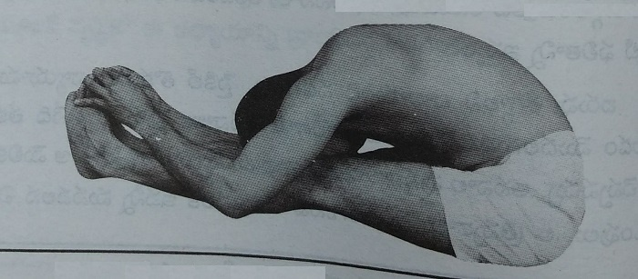
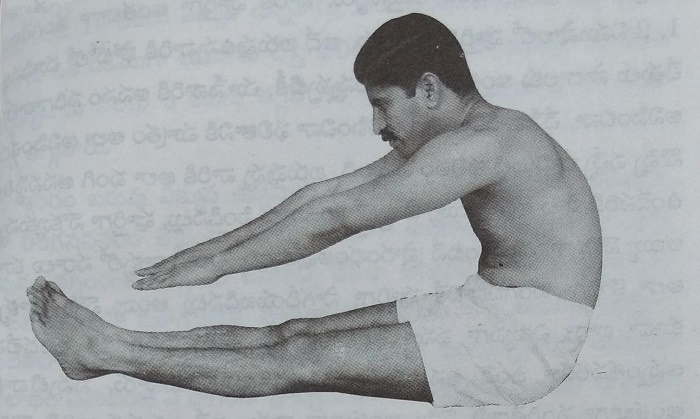

(Steps to a Happy Life - 6)
Protect Complete Health.
Enjoy Prosperity at all times.
Dr. Manthena Satyanarayana Raju
With deep humility, I dedicate this book, Asanas — Laws for Health, to my revered teacher, Dr. V. V. Ramaraju, who blessed me with the wealth of good health, taught me the profound principles of Prakriti Chikitsa (Nature Cure), and, with kindness and affection, shaped the course of my life in a way that enabled me to serve society.
- Dr. Manthena Satyanarayana Raju
Dr. Vegiraju Venkata Ramaraju was born on July 2, 1913, in the village of Marripudi, located in Bapatla Taluk of Guntur District. The village was well known as a sacred place because of the many Yajnas (Vedic sacrificial rituals) and Yagas (elaborate Vedic fire rituals) performed there.
He was the youngest son of Sri Vegiraju Kotamraju and Smt. Adeyamma, who were deeply devoted to the constant remembrance of the Divine Name (Anavata Namasmarana — uninterrupted chanting of God's name).
Just as the sun spreads its light the moment it rises, Ramaraju's noble qualities became evident from an early age. At the age of just eight, he became convinced that meat was not meant to be human food and that all living beings deserved compassion. He gave up eating meat himself and, despite opposition from his elders, courageously stood by his conviction. In time, he even persuaded them to give up meat, revealing his deep sense of humanity and compassion.
His love for learning was immense. However, given the circumstances of those times, he completed his School Final education, underwent teacher training in a British-run school, and took up the teaching profession. While working as a teacher, he made significant efforts for the development of many schools in the surrounding areas.
Later, at the request of his elder brother, the renowned physician Sri Vegiraju Krishnamraju, he gave up his teaching career and dedicated himself to the practice of Nature Cure (Prakriti Chikitsa). At that time, Ramaraju was only 21 years old.
Sri Krishnamraju was an extraordinary personality. He trained many young men in Karra Saamu (traditional stick fighting) and Katti Saamu (traditional sword fighting), shaping them into skilled practitioners of physical training and martial arts.
He was also an unmatched expert in Nature Cure. During his visits to Delhi, he delivered lectures in Sanskrit that attracted not only the general public but also eminent personalities such as Mahatma Gandhi, Vinoba Bhave, Purushottam Das Tandon, and Jamnalal Bajaj. Inspired by his teachings, he led a rural Nature Cure movement and successfully treated many unusual and stubborn illnesses through natural methods.
On one occasion, a village headman was on the verge of death. Following his elder brother's instructions, Ramaraju went to examine him. The man had already been moved to a shed outside the house because everyone believed that his death was imminent. Ramaraju examined him by pressing and massaging his abdomen. Realizing that there was still hope, he had the man brought back inside the house. He then administered an enema, cleansed his large intestine, and gave him a bath. Within about an hour, the man began speaking and was even able to drink milk.
The villagers, who had been certain that the village headman would die, were astonished to see him recover. They began spreading stories among themselves: "A young yogi has come! They say he eats nothing except raw food and fruits. He simply rubbed the patient's stomach and brought him back to life with a mantra!"
Curious people came to see Ramaraju. With great simplicity and humility, he would explain, "My dear friends, this is neither a mantra nor a miracle. I follow an uncooked natural diet, and I simply treated him through Nature Cure by cleansing his large intestine. That is all."
Such was the simple and unassuming life of Dr. Ramaraju.
In those days, whenever cholera broke out, entire villages would be abandoned. People fled in fear, leaving even the bodies of their loved ones behind. At such times, Ramaraju encouraged groups of young men to come forward. Every day, they would dig large pits and respectfully bury those who had died. Even the British officials who witnessed these scenes were amazed by their courage and spirit of service.
Living entirely on an uncooked natural diet — consisting only of raw vegetables and ripe fruits — Ramaraju undertook an extraordinary bicycle journey of about 3,800 miles (over 6,000 kilometers). During this journey, he met many distinguished personalities. One of the most memorable moments was his meeting with Mahatma Gandhi.
On the day he went to see Gandhi, the public visiting hours had already ended. The attendants firmly told him that no more visitors would be allowed. Ramaraju then sent in a small note. After reading it, Gandhi invited him inside.
Looking at the young man, Gandhi asked, "Why do you eat only raw vegetables?"
Ramaraju replied, "It is my elder brother's instruction. This is an experiment to demonstrate the strength and benefits of a natural diet."
On hearing this, Gandhi encouraged him, saying, "Beta, tum achchha kaam kar rahe ho. Mat chhodo." ("My son, you are doing a good work. Do not give it up.") He then recited a Sanskrit verse.
Ramaraju possessed an exceptional memory and could retain whatever he heard after a single reading or hearing. The verse became deeply engraved in his mind:
Na tvaham kāmaye rājyam,
Na svargam nā punarbhavam;
Kāmaye duḥkha-taptānām,
Prāṇinām ārti-nāśanam.
Meaning: "I do not desire a kingdom. I do not desire heaven, nor even freedom from rebirth. What I truly desire is the power to remove the suffering of living beings who are tormented by sorrow."
Ramaraju never forgot these words. They became the guiding ideal of his life. He devoted himself to providing free medical treatment and food to the poor, considering it his life's mission.
He followed this uncooked natural diet continuously for seven years, from 1936 to 1942, and through his own life demonstrated its remarkable benefits to the world.
For some time, Dr. Ramaraju's elder brother, Sri Krishnamraju, established Nature Cure ashrams in Bapatla and later in the forests near Nakrekal. The experiences they gained while running these ashrams were truly remarkable.
From those experiences, Sri Krishnamraju often emphasized two important principles: "Hunger is a falsehood.", "Weakness is a complete falsehood."
He would say that these were conclusions he had arrived at over fifty years earlier through practical experience.
On one occasion, a tribal man suffering from severe vomiting and diarrhea was brought to the ashram by his relatives, who left him there for treatment. He was unable to speak, his body was completely dehydrated, and he could not even move. Treatment was started immediately.
One night, loud noises suddenly came from the patient's hut. Hearing the commotion, the doctor and the watchman rushed there. Their first thought was that a bear might have dragged the helpless patient away.
However, when they lit brighter lamps and looked inside, they found the patient still lying on his bed. They asked him what had happened, but he was too weak to speak and could only move his eyes.
The next morning, they discovered a seven-foot cobra lying dead inside the hut. Even then, the patient was too weak to explain what had happened. About seven or eight days later, after he had fully recovered, he told them that he himself had killed the snake, after which he had collapsed again from exhaustion.
Reflecting deeply on this incident, Ramaraju came to the conclusion that what people call hunger and weakness are, to a great extent, mental states. This was one of many experiences that shaped his understanding.
Between 1936 and 1946, amidst many such experiences, he traveled from village to village throughout Bapatla Taluk, spreading awareness about Nature Cure.
In 1946, his elder brother, Sri Krishnamraju, established a Nature Cure hospital in Bhimavaram, in West Godavari District, and invited Ramaraju to join as a physician. Ramaraju accepted the responsibility of managing the institution. There, he gained extensive practical experience in Nature Cure, learning both its strengths and its limitations, and began sharing those valuable experiences with others.
Many distinguished people received treatment under his care. His patients included well-known film personality L. V. Prasad, as well as members of the Bajaj family, among many others.
Ramaraju named his younger son after his elder brother, Krishnamraju. He personally trained him in Nature Cure for five and a half years, and in 1987 entrusted him with the responsibility of managing the hospital.
Even at the age of 89, Dr. Ramaraju continued to lead an extraordinarily active life. He conducted yoga camps, taught yoga to 1,200 revenue department employees and 140 Physical Education Teachers (P.E.T.s) in the district, and provided treatment to patients who came not only from Andhra Pradesh but also from neighboring states such as Tamil Nadu, Karnataka, and Odisha. He also organized numerous yoga and Nature Cure camps.
To remain so active and dedicated to public service at the age of eighty-nine was an exceptional achievement. It is no exaggeration to say that such a feat was possible only for Dr. Ramaraju.
Many people urged Dr. Ramaraju to record his experiences in the form of books. However, he would always say, "A book can serve as a guide, but it cannot take a person to the destination. If someone practices treatment merely by reading a book and suffers harmful consequences, it is the science itself that will be blamed."
Nevertheless, when his friends and family persistently insisted, he agreed to write a few books. Along with sharing his own experiences, he explained the fundamental principles on which Nature Cure is based and how those principles should be understood and applied in daily life.
He was completely opposed to self-publicity. Whenever newspaper reporters, television channels, or radio stations approached him for interviews or publicity, he would humbly reply, "The acceptance of the people is enough for me. I do not want publicity."
The humility of Dr. Ramaraju, despite his profound mastery of Nature Cure, is best reflected in one of his own statements. He once said:
"During the first five or six years after I began practicing Nature Cure, I thought there was no one equal to me in this field. I believed I had understood everything and that whatever I said was the final truth."
"After another fifteen years, I began to feel that perhaps there was still a little more to learn about Nature Cure."
"Twenty years later, I realized that there was still a great deal left for me to learn."
"Finally, after sixty years of medical practice, I felt that I really knew nothing about Nature Cure."
These words reveal the extraordinary depth of his character and his remarkable humility. The more he learned, the more aware he became of the vastness of knowledge that still remained beyond his grasp.
In 1987, Dr. Ramaraju was honored with the title "Yogacharya" at the Erpedu Ashram in Chittoor District by Malayala Swami. On that occasion, the Swami's words spoke volumes about Ramaraju's wisdom.
He said:
"We believed that we understood religion and yoga correctly. But only after learning yoga from Dr. Ramaraju and listening to his discourses did we realize how little we actually knew. His insight is extraordinary. His understanding of how medical science is deeply woven into religion is truly unparalleled."
It is said that Dr. Ramaraju's deep interest in Nature Cure began in 1936. At that time, a Telugu translation of Louis Kuhne's famous work on hydrotherapy (Jala Chikitsa — water therapy), translated by Sri Dronamraju Satyanarayana, was in a deteriorated condition. Ramaraju painstakingly rewrote the entire work as a 1,000-page manuscript and presented it to his elder brother. This effort is regarded as the turning point that drew him wholeheartedly toward Nature Cure.
Even to this day, his daily life reflects the principles he practiced and preached. Besides attending to all the responsibilities of the ashram, he washed his own clothes, cleaned his own utensils, and carried his own luggage while traveling. Such simple habits demonstrated his understanding that daily work itself is a form of natural exercise.
The remarkable recoveries achieved through his treatments are too numerous to recount. With thorough scientific knowledge, he carefully examined patients, made accurate diagnoses, and successfully treated many who had been declared beyond hope by others. Some patients, who were thought to have no chance of recovery, went on to live another twenty or even thirty years under his care.
Recognizing the value of his work, the Government of India awarded him research grants of one lakh rupees per year during the periods 1980–1983, 1985–1990, and 1992–1995 to conduct research on various diseases. With these grants, he appointed an M.B.B.S. doctor, established a laboratory, and carried out systematic scientific research. Thus, Dr. Vegiraju Ramaraju was a physician who successfully combined the wisdom of traditional Nature Cure with the methods of modern scientific investigation.
No matter who approached him, or at what time, he would patiently offer medical advice without the slightest sign of irritation or fatigue. His usual place of consultation was never the special ward reserved for privileged patients. Instead, he would be found sitting under a tree, surrounded by poor patients. In his eyes, whether a person was rich or poor, influential or ordinary, everyone was equal before disease.
Dr. Ramaraju relieved thousands of people from illness and explained the principles of Nature Cure with such clarity that they became as easy to understand as peeling a banana. His thoughts, words, and actions were always in perfect harmony, and he dedicated his entire life to spreading the knowledge of Nature Cure.
When I myself was admitted to his hospital in poor health, he showered me with selfless affection. He gave me a thorough understanding of Nature Cure, restored me to complete health, and breathed new purpose into my life by shaping me into a physician whose work would serve society. He nurtured the spirit of service within me and guided it onto a noble path. The love, affection, and guidance he gave me are unforgettable.
It is therefore my great fortune to humbly dedicate this book at the sacred feet of my revered teacher — Yogacharya Dr. V. V. Ramaraju, a physician worthy of comparison with Dhanvantari, the divine physician. On this occasion, I offer him my heartfelt salutations and deepest reverence.
- Manthena Satyanarayana Raju
Whenever God wishes to bring welfare to humanity, He raises up a few individuals to serve as guides for mankind. Whenever I think of Satyanarayana Raju, I feel he is one such person. Dr. Raju is very dear to me. I have the affection of a father toward him because he lives with perfect harmony between his thoughts, words, and actions, and dedicates himself day and night to the service of others.
Having studied and understood Nature Cure for several decades, I have watched Satyanarayana Raju restore the health of thousands of people through this system. I have also realized that, along with proper food and lifestyle, asanas (yogic postures) make an invaluable contribution to good health.
About two years ago, I requested Satyanarayana Raju to write a book that would give the general public a complete understanding of asanas. The reason I specifically asked him was that I had personally observed his method of teaching asanas. It is comprehensive, scientific, and highly effective. I felt that if this knowledge could reach everyone, people would be able to achieve both physical and mental well-being in their own homes.
Today, after seeing this book, Asanas — Laws for Health, that long-cherished wish of mine has finally been fulfilled.
After reading the manuscript of this book, I was deeply impressed by the way Satyanarayana Raju has explained the asanas. His discussions on topics such as the proper performance of each asana, why one should take rest between asanas, the difference between physical exercises and yogic asanas, and many other related subjects are based on rich practical experience and presented in a thoroughly scientific manner.
This book will be immensely useful to everyone who values good health. It is no exaggeration to say that anyone who reads it even once will feel inspired to begin practicing the asanas immediately.
Modern man may be surrounded by material comforts, yet he is constantly troubled by numerous mental stresses. As a result, he unknowingly invites ill health and inner unrest into his life. This book, Asanas — Laws for Health, provides the right answer to all these problems. It is my sincere hope that everyone who desires good health will make the best use of this opportunity.
I offer my heartfelt congratulations to Satyanarayana Raju, who has dedicated his life as a sacred offering (Yajna — a selfless act performed for the welfare of others), considering selfless service for public health to be his noble mission and working tirelessly without any expectation of personal reward.
I also sincerely hope that many more books on health will come from his pen in the years to come.
Ch.V.P.Murthy Raju
Freedom Fighter
Gandhian
My heartfelt greetings to all lovers of good health.
From my childhood, I had a feeling of tightness in my chest, and my heart appeared enlarged, much like that of a person suffering from heart disease. Even by the time I reached the age of eighteen, my height had not grown beyond five feet. Noticing these physical conditions, my father sent me in 1985 to Dr. V. V. Ramaraju at Kakinada for Nature Cure treatment.
Dr. Ramaraju taught me asanas and guided me in following proper dietary discipline. I practiced them sincerely for five to six months. As a result, not only did I grow five inches taller, but my chest also became broader and better developed.
From that time onward, I developed a deep interest in asanas and dietary discipline. I began thinking seriously about them, studying them in greater depth, and striving to understand their underlying principles. Whenever anyone asked, or whenever I found people interested, I would teach them the asanas I had learned.
In 1994, I began conducting regular asana classes and training programs. Along with prescribing dietary discipline for patients who followed the principles of Nature Cure, I also taught them asanas. In this way, over the years, I gained considerable practical experience in the teaching and practice of asanas.
In recent years, I have observed that the way asanas are being taught has become very similar to physical exercise. People are made to perform one posture after another — sometimes twenty or thirty different poses in succession. However, they are rarely taught the fundamental differences between asanas and ordinary exercises. They are not given a proper understanding of how long an asana should be held, what should be done after completing an asana, or what the state of the mind should be while practicing it.
Most books on asanas are filled with illustrations of numerous postures, Sanskrit verses, and scholarly language that is difficult for the average reader to understand. A beginner, who knows nothing about asanas, sees these countless complicated postures and immediately thinks, "How could I ever do all these? My body will never bend like that." Such thoughts create fear even before they begin practicing, and they develop a negative attitude toward asanas. They become firmly convinced that their bodies are not suited for yoga.
As a result, many people stay away from asanas altogether.
It was to bridge this gap that I decided to write this book, Asanas — Laws for Health. I have explained every subject thoroughly, using simple language that anyone can understand. Instead of describing a large number of postures, I have focused only on the fifteen most important asanas that are essential for everyone.
I have also explained how even people who are overweight or whose legs and waist are stiff can practice these asanas with ease. This book has been written to answer the many questions and doubts that arise in the minds of those who practice asanas and to provide them with a clear and complete understanding of the subject.
I have paid special attention to those who believe that they are too overweight to practice asanas. In fact, I have clearly explained that people who are overweight often benefit the most from asana practice. I have included a special method of performing the postures for them and explained why they begin to experience the benefits even if they can bend only up to a certain point in an asana.
Similarly, I have provided specific asanas for people suffering from neck pain, back pain, leg pain, and other common physical problems.
I have also explained how asanas provide unique benefits that cannot be obtained through ordinary exercises, walking, or physical labor. Through asanas alone, a person can gain these benefits while sitting still, without movement, and without experiencing fatigue.
I sincerely believe that after reading this book, you will gain a complete understanding of asanas. More importantly, I hope you will develop a strong desire to practice them and make them a part of your daily routine.
With the heartfelt hope that you will not let this expectation of mine go unfulfilled...
Yours sincerely,
Mantena Satyanarayana Raju
Writing a book is like performing a Yajna — a sacred undertaking. Writing a book on health is an even greater Maha Yajna (great sacred undertaking). Such an effort requires not only dedication and ability but also the support and cooperation of many people.
Moreover, I resolved to write four health books within a single month — from May 1, 2001, to May 31, 2001. The successful completion of that resolve would not have been possible without the wholehearted support and tireless efforts of several kind-hearted people. I can never forget their invaluable help.
My heartfelt gratitude goes first to Sri Gokaraju Gangaraju (Managing Director, Laila Group of Companies, Vijayawada). Sharing my desire to bring this healthy way of living to the people, he stood by me with complete generosity. On the banks of the Krishna River in Vijayawada, amidst beautiful gardens and a peaceful atmosphere, he arranged a comfortable cottage for us. He personally ensured that every necessary facility was provided so that the intense summer heat of the Rohini Karthe (the traditionally hottest period of summer) would not interrupt our work. He took special care that we faced no obstacles during that entire month, enabling this great undertaking to proceed smoothly. For all his thoughtful support, I offer him my heartfelt thanks.
I also express my sincere gratitude to the distinguished freedom fighter and Gandhian, Sri Ch.V.P. Murthy Raju, who constantly guided me with valuable advice throughout my life's journey, encouraged me to write a book on asanas, and graciously wrote the foreword for this book.
My thanks are due to Sri Turumella Koteswara Rao, who, out of his own affection and goodwill, meticulously proofread these books, and to Sri Vakada Durgaprasad, who stayed with me during the writing process and prepared the fair copies of the manuscripts.
I also extend my sincere appreciation to the management and staff of the printing press, and especially to Sri Shivaji Raju, who treated the publication of these books as their own responsibility and completed the printing within a very short time.
Finally, I offer my heartfelt gratitude and congratulations to all the lovers of health who adopted this way of life, regained their health, and promptly shared their experiences with me through letters and telephone calls whenever I sought their feedback.
Mantena Satyanarayana Raju
An asana is a posture in which the body remains steady, still, and comfortable. Many people think that practicing asanas is simply another form of physical exercise. Just as exercise affects the body, asanas also have a profound effect on the body. However, asanas are not practiced with the body alone.
Every human being is a combination of body, mind, and consciousness. Together, these three constitute the complete human personality. The primary purpose of asanas is to bring these three into harmony and thereby establish balance.
If asanas were merely physical movements, we could perform them while thinking about household matters, office work, or anything else. But that is not the case. While practicing an asana, the entire attention of the mind should remain on the body. No other thoughts should be allowed to enter the mind.
One should remain fully aware of the state of the mind during the asana, the flow of the breath, and the way the muscles are functioning. The mind should be completely absorbed in observing these aspects. Only then can it be said that the asana has been practiced correctly.
Physical exercise, on the other hand, does not require this kind of mental involvement. Therefore, its benefits are limited mainly to the body, whereas the benefits of asanas extend much further.
When a person is physically and mentally unhealthy, they cannot perform any task in life with enthusiasm. Nor can they achieve what they set out to accomplish. Only when a person enjoys both physical and mental health can they work with energy and efficiency. It is only then that they can experience true happiness and progress toward spiritual growth.
Our ancestors realized this truth thousands of years ago. That is why they developed the system of asanas, practiced it themselves, and experienced its profound benefits. In those days, medicines as we know them today did not exist. Therefore, people sought ways to prevent illness by making the best use of the body's own natural strength. As a result, they discovered methods by which the body could be maintained in good health. These methods have stood the test of time and continue to produce excellent results even today.
Modern systems of medicine are comparatively recent and are based on relatively limited experience. Asanas, on the other hand, have been studied, refined, and practiced over thousands of years. They have evolved into a well-established system for promoting physical health, mental well-being, and spiritual development.
Although there are great differences between the way people lived in ancient times and the way we live today, the need for asanas remains exactly the same. Asanas not only promote physical health but also help a person attain a higher level of consciousness.
For those of us who live with illness, pain, suffering, and mental distress, such an elevated state may seem beyond imagination. Our first responsibility is to free ourselves from physical and mental suffering. Attaining higher states of consciousness comes later. The primary purpose of practicing asanas is to overcome these forms of suffering.
Asanas keep every joint in the body flexible and free from stiffness. They strengthen the muscles and promote healthy blood circulation to every organ. They help remove toxins and harmful waste products that accumulate in different parts of the body. They gently massage all the internal organs and improve their functioning.
Most importantly, asanas create harmony between the body and the mind, bringing deep mental relaxation. The body and the mind are inseparable. When the body becomes truly healthy, positive changes naturally begin to take place in the mind as well.
Mental stress and physical weakness are two major causes of many illnesses.
The human body possesses an extraordinary ability to heal itself. By using its own natural strength, it can protect itself from disease. This natural defense is what we call the immune system or immunity. The practice of asanas helps strengthen the body's natural resistance to disease.
When waste materials accumulate within the body, they create conditions in which disease-causing bacteria and harmful toxins can thrive. Asanas help remove these accumulated impurities, thereby promoting a cleaner and healthier internal environment.
Many diseases arise when vital organs such as the heart, lungs, and kidneys do not function properly. The practice of asanas helps these organs work efficiently and with greater strength.
Similarly, many health problems occur when the nervous system does not function correctly. Asanas strengthen the nerves, relieve pressure on them, and ensure that nerve signals are transmitted properly to every part of the body.
Asanas also protect us from excessive mental stress, which is one of the root causes of many diseases.
The human body contains endocrine glands, which produce hormones. These hormones regulate the functioning of the body's various organs. Some hormones also influence the mind. Likewise, the functioning of these glands is affected by our mental state.
For example, when a person experiences anger, fear, or anxiety, a hormone called adrenaline is released into the bloodstream in larger amounts. As a result, the heart beats faster, breathing becomes more rapid, and the muscles tighten, causing the body to enter a state of tension.
At the same time, when the body needs to protect itself from danger, adrenaline is released in greater quantities to prepare us to respond quickly. For instance, if we are absent-mindedly walking along a road and a truck suddenly comes speeding toward us, we instinctively jump aside without consciously thinking. It is adrenaline that enables the body to react so swiftly in such situations.
Similarly, during childhood and adolescence, increased secretion of thyroid hormones supports normal growth and development. In women, hormones are essential for every stage of reproduction, including the release of eggs, conception, and pregnancy.
The functions of hormones are so numerous and varied that it is impossible to describe them as having only a single role. They regulate countless processes throughout the body. Even the speed at which an organ should function — whether it should work faster or slower at a given time — is determined by hormones.
For the body to remain healthy and function properly, each endocrine gland must release exactly the right amount of hormones into the bloodstream at the right time. When this delicate balance is disturbed, it causes not only physical changes but also changes in a person's mental and emotional state.
One of the major benefits of practicing asanas is that they help regulate the functioning of the endocrine glands, keeping their activity balanced and stable.
The endocrine glands often fail to function properly because of excessive physical strain, improper use of the body, and mental stress. These factors interfere with the proper transmission of nerve signals to the glands and reduce the supply of oxygen-rich blood that they receive. As a result, their functioning becomes impaired.
Asanas gradually correct these problems. They restore proper nerve communication, improve blood circulation, and gently help the endocrine glands return to their normal, healthy functioning.
True health is possible only when every organ in the body works in harmony with all the others. When this coordination is disturbed, the body's efficiency declines, and illness develops. The regular practice of asanas helps restore this harmony among all the organs, enabling the body to function as a well-coordinated whole.
According to yogic science, the human body is surrounded by an invisible field of energy. This may also be called an energy sheath. In yoga, it is known as the Pranamaya Kosha (the vital energy sheath).
The existence of this energy field, described in yogic texts thousands of years ago, was later explored by some scientists in Russia using a technique known as Kirlian photography, through which they claimed to photograph this energy field. This drew attention to the idea that the body is surrounded by a subtle field of energy.
This vital energy flows both within and around the body through certain channels. In yogic science, these channels are called Nadis (subtle energy pathways). It is believed that when these pathways become blocked, or when excessive energy accumulates in one area, various physical and mental disorders can arise.
The practice of asanas helps this Prana (vital life energy) flow freely and smoothly through the Nadis, without obstruction. As a result, the body and mind are better able to maintain good health.
Asanas also bring about important changes in the way we breathe. Rapid, irregular breathing is often a sign of physical or mental stress. Through the practice of asanas, breathing gradually becomes slower, deeper, and more even.
Asanas reduce the rate of breathing and encourage long, steady breaths. This, in turn, brings about a state of mental calmness and inner peace.
While practicing asanas, the mind remains alert and aware. The mind is usually restless, constantly running from one thought to another. During an asana, however, it should become steady and remain focused on the body. If an asana is performed without awareness — allowing the mind to wander instead of keeping it on the body — it can hardly be considered true asana practice.
No matter how perfectly an asana is performed physically, it will not yield its full benefits if the mind is not engaged with the body and its organs. While practicing asanas, focusing the mind on the breath keeps worries and anxieties from entering the mind, at least for that period of practice. Although this may seem to be only a temporary benefit, regular practice gradually brings about a profound and lasting transformation in one's mental state.
The body often reflects what is happening in the mind. For example, when we are angry, we instinctively raise our chest and shoulders. When we are sad, we sigh deeply. When we are anxious, our breathing becomes rapid, and our voice begins to tremble. On the other hand, when we are happy, the entire body feels light, relaxed, and free from tension.
In this way, the condition of the body often reveals the condition of the mind.
There is no doubt that the regular practice of asanas strengthens both the body and the mind, promotes good health, frees us from pain and suffering, and gradually prevents these negative physical and mental reactions from arising. In doing so, asanas help shape both the body and the mind into their healthiest and most harmonious state.
An asana is the practice of placing the body in a particular posture and then remaining still in that position. Every asana consists of three distinct stages. Only when all three stages are completed can it truly be said that an asana has been practiced. These stages are:
Let us understand each of these in detail.
1. The First Stage — The Entry Stage (How to Perform the Asana):
Every asana should be performed according to a proper method. Following the prescribed sequence of movements to enter an asana is called the Entry Stage. In other words, when you perform the posture correctly and prepare the body to remain in the final position, the first stage is complete.
However, if you perform the movements correctly but immediately return to the starting position without allowing the body to remain in the second stage, the practice will not produce any real benefit.
Simply moving into an asana and immediately coming out of it cannot truly be called practicing an asana. Even if you perform many different postures every day in this manner — assuming each posture only briefly before releasing it immediately — you will gain little or no benefit.
For the Entry Stage to bear fruit, it must be followed by remaining steadily in the Asana Stage.
2. The Second Stage — The Asana Stage (Remaining Still and Steady): This is the most important stage of an asana.
The Asana Stage is the period during which the body remains completely still in the final posture for as long as one can comfortably maintain it. Most of the benefits of an asana depend on how long you remain in this stage and the state of your mind while you are in it. If this stage is practiced correctly, it accounts for 60–70% of the total benefit of the asana.
If you merely place the body in a posture during the first stage and then immediately come out of it without entering the second stage, it cannot be called an asana. Likewise, completing only one of the three stages does not constitute practicing an asana. In such a case, it is simply exercise.
Take Surya Namaskara (Sun Salutation) as an example. It consists of twelve postures. Although all twelve postures are performed in one round of Surya Namaskara, this does not mean that twelve asanas have been practiced. The reason is that, in Surya Namaskara, one moves continuously from one posture to the next, performing only the first stage of each posture. There is no Asana Stage, in which the posture is held steadily, nor is there a Relaxation Stage after each posture.
Since these two stages — which are responsible for producing the major benefits — are absent, Surya Namaskara and asanas produce different results. This is why Surya Namaskara is regarded as a form of exercise rather than a series of asanas.
Many people perform the Entry Stage correctly, but because they are eager to finish quickly, they remain in the Asana Stage for only a short time before coming out of the posture. Others treat the posture itself like an exercise, moving the body back and forth while counting "one, two, three," instead of remaining steady.
Whether a person leaves the posture too soon or keeps moving while in it, the practice cannot be considered a true asana. As a result, the full benefits are not obtained. Instead of receiving 60–70% of the benefits, they gain only about 20–30%.
If the Asana Stage, which is the heart of asana practice, is neglected, then asanas become no different from ordinary exercises. The essential distinction between the two is completely lost.
3. The Third Stage — The Relaxation Stage (Allowing the Body to Rest Completely):
After remaining motionless in the Asana Stage for as long as the body can comfortably maintain the posture, the practice moves into the Relaxation Stage. The longer and more steadily the posture is held, the greater the benefits the body receives during this stage.
The Relaxation Stage is not merely a period of rest. In fact, 30–40% of the total benefit of an asana is obtained during this stage.
During this stage, one should either sit or lie down quietly for one or two minutes, allowing the body's fatigue to subside and the breathing to return to its normal rhythm. During this time, the body, mind, muscles, nerves, and the entire system become completely relaxed and peaceful.
If another asana is begun without giving the body sufficient time to complete this Relaxation Stage, the full benefits of the previous asana will not be obtained.
Many people practice asanas without fully understanding the proper method. They simply perform forty or more different postures one after another, giving little importance to either the Asana Stage or the Relaxation Stage. Later, they feel that asanas do not produce results. In reality, no one can obtain the full benefits by practicing in this way.
Because people do not experience the expected results, they gradually lose interest in asanas and discontinue their practice. Not knowing the true secret of asanas, many turn instead to walking, physical exercises, aerobics, gyms, and other forms of fitness, moving away from asana practice altogether.
To help overcome this misunderstanding and provide a clear understanding of asanas, I will explain these three stages in detail and emphasize their importance while describing the fifteen most important asanas.
I have deliberately limited this book to these few asanas because, when practiced correctly according to this method, these fifteen asanas alone are sufficient to provide the body with complete benefits.
To receive the full physical and mental benefits of asanas, all three stages must be practiced properly. From now on, try practicing in this manner for some time. You will then understand for yourself what an asana truly is.
In the chapters that follow, I have explained each of these three stages in greater detail. I sincerely hope that you will read them carefully, understand them thoroughly, and then begin practicing asanas with the right attitude and an open mind.
For every organ in our body to function properly, it must receive an adequate and continuous supply of blood. Only then can the various organs carry out their functions efficiently without a decline in performance.
Before we understand how asanas influence blood circulation, let us first learn how blood serves the body, what its functions are, and how much blood the heart pumps through the body each day.
Functions of Blood in the Human Body
1. Blood carries oxygen from the lungs to every cell in the body. It also transports the carbon dioxide produced by the cells back to the lungs, where it is expelled from the body during exhalation.
2. Blood transports digested nutrients throughout the body. After digestion in the small intestine, food is broken down into simple forms such as monosaccharides, amino acids, fatty acids, glycerol, vitamins, and minerals. These nutrients are absorbed into the bloodstream, which then carries them to all the organs and tissues of the body.
3. Blood carries waste products from the cells to the organs of excretion. Some waste products are first transported to the liver, where they are processed before being prepared for elimination. For example, urea, uric acid, and creatinine, which are produced during protein metabolism, are carried by the blood to the kidneys and are ultimately excreted from the body through urine.
4. Blood transports enzymes and hormones from the places where they are produced to the organs and tissues where they are needed.
5. Blood protects the body against disease. White blood cells present in the blood destroy harmful microorganisms that enter the body. When disease-causing microbes invade, the body also produces antibodies and antitoxins to fight them, thereby maintaining the body's natural immunity.
6. Blood helps prevent excessive blood loss after an injury. Its ability to clot seals damaged blood vessels and stops excessive bleeding.
7. Blood helps regulate the body's temperature. When the body becomes too warm, blood carries heat to the skin, where it is released through sweating and evaporation. On the other hand, when the outside temperature is very low, the blood vessels near the skin constrict, helping to retain heat within the body and prevent excessive heat loss.
The heart is responsible for supplying blood to every part of the body. It can be compared to a hand-operated water pump. Just as each stroke of a hand pump brings out a certain amount of water, each heartbeat pumps a certain amount of blood into the blood vessels.
In an average person, the heart beats about 70 to 72 times per minute. With every heartbeat, it pumps approximately 60 to 70 milliliters of blood out into the circulation. Thus, the heart supplies about 4.5 to 5 liters of blood every minute. Even when we are completely at rest and doing no work, the heart continues to pump this much blood through the body every minute.
However, when we engage in strenuous physical activity, perform exercises, or are involved in intense mental work, the normal supply of about 5 liters of blood per minute is no longer sufficient.
Whenever a part of the body works harder, it consumes more energy. As energy is used, that part of the body requires a greater supply of oxygen. To meet this increased demand, both the lungs and the heart have to work harder. At such times, the heart beats faster and more forcefully, enabling it to pump a larger volume of blood to the parts of the body that need it most.
In this way, the blood pumped by the heart is distributed according to the body's needs. Organs and tissues that are working harder receive a greater share of the blood supply, while those that are relatively inactive receive only the amount they require.
In addition, vital organs such as the heart muscles, lungs, brain, kidneys, and liver receive a comparatively large share of the blood supply because of their essential functions. Among all the tissues of the body, the muscles attached to the bones (skeletal muscles) receive the least blood when they are at rest.
People who perform physical labor naturally use almost all the muscles in their bodies. In contrast, those who spend most of their time sitting in offices, or those who lead a sedentary lifestyle with little physical activity, do not use all their muscles regularly.
It is only when muscles are used that they receive proper blood circulation. The reason is that when muscles are at rest, many of their capillaries (tiny blood vessels) remain closed, while only some remain open and carry blood. These capillaries take turns functioning — some open while others close. They do not all remain open continuously.
When a muscle is at rest, only about 1 to 3 milliliters of blood flow through every 100 grams of muscle tissue. However, during vigorous activity, this blood flow can increase to about 30 milliliters. Since working muscles require a much greater supply of blood, the capillaries open automatically to meet this increased demand.
Proper blood circulation is essential for the efficient removal of waste products from the body's cells. For example, the carbon dioxide produced by the cells is carried by the blood to the lungs, where it is exhaled. Thus, muscles remain healthy and function efficiently only when they are regularly put to work.
Now let us see how the practice of asanas influences blood circulation in the muscles.
When an asana is performed, only certain groups of muscles work for a period of time, after which they return to their normal relaxed state. In this way, each asana activates a different set of muscles. Let us now understand how these working muscles receive an increased supply of blood during the practice of asanas.
To understand this more clearly, let us consider a simple example.
When you clench your fist, you will notice that the muscles of the forearm tighten. As they contract, the forearm appears slightly smaller, as though it has been compressed. This happens because the veins — the blood vessels that carry blood from the hand back to the heart — are squeezed by the contracting muscles. As a result, the blood within these veins is pushed more rapidly toward the heart.
Now, if you continue to keep your fist tightly clenched for a short time, you will notice that the forearm gradually appears larger or slightly swollen. Let us understand why this happens.
Although the blood vessels within the muscles are compressed for the first few seconds of contraction, they gradually begin to expand again. This is because blood flowing from the heart toward the hand continues to arrive, causing pressure to build up within the blood vessels. As this pressure increases, the capillaries — the tiny, hair - like blood vessels within the muscles—begin to open.
Since the muscles are expending energy while they remain contracted, their demand for blood also increases. Consequently, a greater volume of blood is directed toward that part of the body.
Now imagine that you suddenly open your clenched fist. The blood that has been flowing from above rushes rapidly into the blood vessels of the muscles. This sudden increase in blood flow makes the forearm appear fuller and slightly larger. At this moment, the amount of blood flowing through these blood vessels is much greater than under normal conditions.
As the capillaries open, the exchange of oxygen and carbon dioxide within the cells becomes more efficient. Cellular respiration improves, and carbon dioxide is removed more effectively.
In this way, by alternately contracting and relaxing the muscles, a much greater supply of blood reaches them.
When practicing asanas, it is not only the muscles that are affected. In each asana, pressure is also applied to the internal organs in different parts of the body. As long as an organ remains compressed during a posture, the blood flow to that area is temporarily reduced. This is why you may experience some discomfort or a mild aching sensation while holding the asana.
However, as soon as the posture is released, a much greater volume of blood flows to that area than it normally receives. In this way, asanas enable us to redirect the blood pumped by the heart, increasing its flow to different parts of the body as needed.
When every organ receives this increased blood supply at least once each day through regular practice, its strength and efficiency improve. Waste products produced within the cells are removed promptly instead of being allowed to accumulate.
Just as asanas increase the supply of fresh blood to every part of the body, they also help ensure that deoxygenated blood returns freely from all parts of the body to the heart without obstruction. As a result, the heart is able to function more efficiently and does not have to work under unnecessary strain.
Thus, by practicing asanas every day, we can keep the heart healthy and enable it to supply blood efficiently to every organ of the body without placing excessive stress on it.
In today's society, many people are far more familiar with physical exercise than they are with asanas. One reason asanas have not become as popular as exercise is the shortage of qualified teachers. Another is that, even among those who have learned them, relatively few are willing to teach and share their knowledge with others.
The influence of Western lifestyles is evident in many aspects of our lives. Since Western countries place greater emphasis on physical exercise, many people assume that following the same approach is the best choice. Doctors, too, often recommend exercise for maintaining good health. Added to this is the large number of fitness centers and training facilities that teach various forms of exercise. For these and many other reasons, most people show greater interest in physical exercise than in asanas.
Even those who know something about asanas often think, "What is so special about them? They simply involve bending the body into different positions without much physical effort. Exercise, on the other hand, moves the entire body. It causes fatigue and makes you sweat, so it must be more beneficial." This is a common misconception.
In reality, the body benefits far more from the practice of asanas than from ordinary physical exercise. Along with improving physical health, asanas also bring a deep sense of calm and peace to the mind.
To understand the difference between the two, we must first examine the changes that take place in the body during physical exercise and compare them with the changes that occur during the practice of asanas. Only then can we clearly understand which approach is truly more beneficial.
Changes in Breathing During Physical Exercise:
The respiratory system and the circulatory system work together to meet the body's oxygen requirements. Their activity changes according to how much oxygen the body needs.
When the body is at rest, breathing is slow and deep. As physical activity increases, the rate of breathing also increases. The harder we work, the faster we breathe.
Under normal resting conditions, the lungs take in about 6 to 8 liters of air per minute. During strenuous physical activity, however, this can increase to 50 to 100 liters per minute.
At rest, the body uses approximately 250 to 350 milliliters of oxygen per minute. During exercise, the body's oxygen requirement may rise to 4,500 to 5,000 milliliters per minute. Since physical exercise requires a large amount of energy, the body's demand for oxygen increases accordingly.
Normally, while the body is at rest, it extracts about 60 to 80 milliliters of oxygen from every liter of blood. During exercise, this may increase to about 120 milliliters per liter.
During vigorous exercise, the oxygen level in the cells decreases while the amount of carbon dioxide increases. As a result, a greater amount of oxygen carried by the blood is released into the cells to meet their increased demand.
Another reason the lungs work harder during exercise is the production of lactic acid in the cells. During strenuous activity, the muscles are required to work beyond their normal level. To provide the necessary energy, they begin using the glucose stored within the muscle cells. As energy is released from glucose, lactic acid is produced and enters the bloodstream.
Under normal conditions, the blood contains about 10 to 20 milligrams of lactic acid per 100 milliliters of blood. During strenuous exercise, this may increase to 100 to 200 milligrams per 100 milliliters.
The increased concentration of lactic acid in the blood leads to the production of larger amounts of carbon dioxide. As the level of carbon dioxide rises, the lungs must work harder to remove it from the body. To accomplish this, breathing becomes much faster, allowing more oxygen to be taken in and delivered to the cells.
However, much of the extra oxygen supplied by the lungs is used simply to eliminate the excess carbon dioxide produced during exercise. It is often not sufficient to fully meet the metabolic needs of the cells themselves.
As a result, the heavy energy expenditure in the muscles during exercise leads to fatigue and exhaustion in the body.
Changes in Breathing During the Practice of Asanas:
Unlike physical exercise, the practice of asanas does not cause the breathing rate to increase, nor does it require the lungs to work harder to supply large amounts of oxygen.
This is because, unlike exercise—where the muscles are often made to work beyond their normal capacity—asanas do not demand excessive physical effort. The muscles do expend energy while holding an asana, but they do not undergo the same changes described earlier, such as the excessive production of lactic acid and the resulting increase in carbon dioxide.
While an asana is being held, breathing remains slow, steady, and gentle. As soon as the posture is released, a few deep breaths are taken naturally. These deep breaths supply a greater amount of oxygen to the body's cells.
This pattern of deep breathing continues during the interval between one asana and the next.
Under normal conditions, each breath brings in about 300 to 500 milliliters of air. However, after releasing an asana, each deep breath can draw in 1,000 to 1,100 milliliters of air.
As a result, the body is able to take in a much larger amount of oxygen through deep breathing without placing any extra strain on the lungs.
During physical exercise, much of the additional oxygen taken into the body is used merely to remove the excess carbon dioxide produced by the working muscles. In contrast, the oxygen taken in during the practice of asanas is available primarily to meet the actual needs of the body's cells, enabling them to function more efficiently.
Changes in Blood Circulation During Physical Exercise:
As we have already seen, the body's need for oxygen increases during physical exercise. Under normal conditions, each liter of blood carries about 200 milliliters of oxygen. During strenuous exercise, however, the body may require 4 to 5 liters of oxygen per minute.
To transport such a large amount of oxygen, a much greater volume of blood must circulate through the body. This means that the heart has to work much harder. As a result, the heart rate, which is normally about 70 beats per minute, may increase to 150 beats per minute or even more during exercise.
In addition, the amount of blood pumped out with each heartbeat increases from about 70 milliliters to as much as 200 milliliters. In other words, while the heart normally pumps about 4.5 to 5 liters of blood per minute, during vigorous exercise it may have to pump up to ten times that amount.
As the body's oxygen consumption rises, the volume of circulating blood also increases. If the body uses about 100 milliliters more oxygen per minute than normal, the circulating blood volume may increase by approximately 800 to 1,000 milliliters.
To meet this increased demand, the body releases additional red blood cells from its storage sites into the bloodstream. At the same time, because a considerable amount of water is lost through sweating, the water content of the blood decreases, making the blood somewhat more concentrated.
Only after all these changes occur is the blood able to carry the increased amount of oxygen needed by the body's cells.
This clearly shows the great difference between the workload of the heart at rest and its workload during physical exercise.
After vigorous exercise, it may take 20 to 30 minutes for the heart and lungs to return to their normal resting state. The same is true for people who play strenuous sports or run. We have all experienced how, after running fast and then suddenly stopping, the heart continues to beat rapidly, breathing remains heavy and fast, and the body takes time to recover.
Changes in Blood Circulation During the Practice of Asanas:
During physical exercise, the heart works harder in order to supply more blood to the muscles. In the practice of asanas, however, the muscles and internal organs receive an increased blood supply without placing extra strain on the heart.
As we have already seen, physical exercise increases the body's demand for oxygen. As breathing becomes faster to meet this demand, the workload of the heart also increases. During asanas, this increased demand does not arise, and therefore the heart does not have to work harder.
While an asana is being held, blood flow to certain muscles and internal organs is temporarily reduced. As soon as the posture is released, however, these areas receive a much greater supply of blood than they normally do.
Thus, the same blood that is already circulating through the body is redirected by different asanas to provide an increased blood supply to different organs and tissues, after which the circulation gradually returns to its normal pattern.
This kind of selective increase in blood flow to different organs and muscles does not occur during ordinary physical exercise in the same way that it does during the practice of asanas.
Because the oxygen carried by the blood is made fully available to the parts of the body that were engaged in the Asana Stage, those muscles and organs are able to utilize it efficiently. As a result, they regain their strength, function more effectively, and become healthier.
Changes in the Mental State:
Physical exercise certainly keeps the body active and energetic. It may also give the mind a temporary feeling of freshness while we are exercising. However, it does not produce a state of deep mental calm.
When we first learn a new exercise, we consciously pay attention to the body's movements. Once it becomes familiar, however, we perform it almost automatically, without much awareness. The body continues to move, but the mind is no longer actively engaged with it.
Moreover, breathing becomes faster during exercise. Whenever the breath becomes rapid, the mind also becomes restless, making it difficult to experience true mental peace.
The practice of asanas benefits the mind just as much as it benefits the body.
While performing an asana, the mind is focused on the part of the body involved in the posture. During the Relaxation Stage, attention is directed toward the breath. This keeps the mind steady, calm, and free from unnecessary thoughts.
Asanas are accompanied by deep, slow breathing. These deep breaths supply a greater amount of oxygen to the brain, helping to maintain the proper flow of Prana (vital life energy). As a result, the mind naturally becomes calm and peaceful.
After completing all the asanas, one rests in Shavasana. During this Relaxation Stage, all the muscles of the body become completely relaxed. Since the muscles no longer require active control, the brain is relieved of its continuous effort and is able to rest completely.
When the brain receives complete rest, the mind also experiences deep peace.
This is why, after completing the practice of yoga asanas, one feels as though both the body and the mind have been filled with a new source of energy. Such a profound sense of physical and mental rejuvenation cannot be obtained through any form of ordinary physical exercise.
Many people are left with doubts about how to breathe while practicing asanas — when to inhale, when to exhale, and whether they are breathing correctly. Most practitioners never receive a clear explanation of this subject. As a result, they continue practicing with many unanswered questions.
Some are taught to inhale before entering an asana, while others are told to exhale first. They are instructed to hold the breath (Kumbhaka) while remaining in the posture, and then to inhale or exhale again while coming out of it. This is how most people are taught to practice asanas.
When this method is followed, however, the Asana Stage lasts only as long as one can comfortably hold the breath. For most people, this is only 20 to 30 seconds. After that, the need to breathe forces them to release the posture.
The benefits of an asana depend largely on how long the posture can be maintained without movement. The effects of an asana do not appear immediately. They begin gradually, usually 10 to 20 seconds after the posture is assumed, and continue to increase steadily as long as the posture is maintained. These benefits keep accumulating until the point where the body naturally feels that it can no longer remain in the posture and it is time to release it.
If the breath is held throughout the asana, the need for air arises just when the posture is beginning to produce its greatest benefits. As a result, the practitioner is forced to come out of the posture too early and is unable to receive its full effect.
There are one or two specific asanas in which holding the breath, inhaling, or exhaling in a particular way is necessary. However, if this method is applied to every asana, no one will be able to obtain the complete benefits that asanas are capable of providing.
Teachers often instruct students to inhale while lifting the chest, exhale while bending the chest or waist forward, or take a deep breath and hold it while lifting the legs or the body. Such instructions are commonly given during asana practice.
However, if we perform an asana with proper attention and in the correct manner, the body itself knows how much air it needs, how much it should release, when to inhale, when to exhale, and when the breath should naturally be held. It regulates the breathing on its own.
For example, even if we make no conscious effort to inhale, we naturally breathe in whenever we lift the waist or raise the chest. Likewise, when we bend the waist or lower the body forward, the body naturally exhales.
Similarly, while holding an asana, the muscles of the abdomen, the muscles of the chest, the lungs, and other structures are compressed to varying degrees. Depending on the posture, they may be compressed by about 50 to 90 percent. While remaining in such a posture, we cannot simply inhale or exhale whenever we wish. The position of the body itself determines how much air can enter or leave the lungs.
The amount of air that reaches the body during an asana is naturally regulated according to the posture being practiced. Therefore, it is best to leave the breathing entirely to the body while practicing asanas. The body will take care of it automatically.
Our responsibility is simply to maintain the posture steadily and without movement, and to remain in it comfortably for as long as possible. This is the approach that produces the greatest benefit.
Let us now examine a few examples to understand what happens when we deliberately hold the breath during an asana, and what happens when we simply allow the body to regulate the breathing naturally.
Let us take Paschimottanasana as an example. In this asana, one sits with the legs stretched out straight and bends forward without bending the knees, bringing the face down to the knees.
Many people are taught to exhale completely while bending forward from the seated position and then bring the face to the knees. After reaching the posture, they remain with the head resting against the knees for 10 to 20 seconds.
Within 5 to 10 seconds of reaching the posture, the practitioner begins to feel the effects of the asana. The muscles and nerves in the legs are stretched, the abdominal muscles are compressed, and the spine is bent deeply. At this point, the benefits of the posture are just beginning to develop.
However, because the breath has been held or completely expelled, the need for air soon becomes unavoidable. As a result, the posture has to be released before its full benefits can be experienced.
The practitioner then repeats the same asana once or twice more. Each time, the benefits begin to develop, but the posture is interrupted before they can fully unfold. Thus, the process is repeatedly started and stopped, and the complete benefit of the asana is never obtained.
If this method is practiced every day, progress reaches the same point each time and goes no further. The practitioner continues to repeat the practice, but the benefits do not increase beyond that stage.
Now let us consider the same Paschimottanasana without consciously controlling the breath.
After bringing the head to the knees, simply remain in the posture. Because the chest is deeply bent forward, the lungs are naturally compressed by about 80–90%. Even so, the remaining 10–20% of their capacity is enough to allow the body to receive the small amount of air it needs. This enables the body's immediate needs to be met without discomfort and allows the practitioner to remain in the posture without interruption.
Continue holding the posture until the nerves and muscles of the legs have been stretched to their fullest comfortable extent, the abdominal muscles have been fully compressed, and the body naturally signals that it can remain no longer. Stay in the posture for as long as you can comfortably maintain it without movement.
Only by remaining in this way do the muscles and nerves stretch fully and gradually become free from stiffness. Depending on the individual, this may be 20 to 30 seconds, or it may extend to 1 or 2 minutes.
As soon as the posture is released, the lungs naturally take in deep breaths without any conscious effort on our part. If an asana has been held for as long as the body is able to maintain it properly, there is no need to repeat it a second time.
As one becomes accustomed to practicing asanas, the duration of the Asana Stage should gradually increase. Only then will the benefits continue to grow. On the other hand, if one always focuses on the breath and comes out of the posture as soon as breathing becomes difficult, the benefits will always remain limited to the same level, no matter how long the practice is continued.
Therefore, whenever we practice an asana, our attention should be on the correct method and the posture itself—not on the breath. While holding the posture, the mind should not be occupied with thoughts such as, "I am running out of breath," or "I cannot breathe anymore; I must come out now."
The longer an asana can be maintained steadily and without movement, the greater its benefits. Therefore, do not lose the true benefits of asanas by becoming preoccupied with controlling the breath. This is a principle that every practitioner should understand and remember if they wish to receive the full benefits of asana practice.
When beginners learn asanas in a class, twenty or thirty people usually practice together under the guidance of a teacher. During these sessions, everyone enters the posture together and comes out of it together.
This is a good approach while learning. Until the body becomes familiar with the postures, it is beneficial to hold each asana only for a short time before releasing it.
However, even after practicing regularly for ten or twenty days, many people continue the same habit. They enter an asana and come out of it simply because the people around them do so. Everyone remains in the posture for the same length of time and continues practicing in this manner.
After learning for one or two months, they follow the same routine at home. They remember the number of seconds or minutes their teacher instructed them to hold each posture and continue practicing according to that fixed timing.
Some yoga teachers even provide a list specifying exactly how long each asana should be held. Many books on asanas do the same, stating that a particular posture should be practiced for a certain number of seconds or minutes, or repeated a specific number of times.
If we simply follow a fixed time for every asana in this way, we cannot receive its fullest benefits.
When we ask, "How long should an asana be held?", the answer should not be determined by the teacher, by the author of a book, or by anyone else. Each practitioner must determine it for themselves.
On what basis?
It depends on the condition of the body, the particular asana being practiced, and the practitioner's level of experience. The body itself determines how long it can remain comfortably in a posture and when it is time to come out of it.
The body's decision should become our decision.
Remaining in an asana for as long as the body willingly allows is the best way to obtain its complete benefits.
Let us now examine in detail the factors that determine how long an asana should be held.
1. The Condition of the Body:
Every person's physical condition is different.
Someone who has been accustomed to regular physical labor will be able to remain in an asana differently from someone who has lived a comfortable, sedentary life with very little physical activity. Likewise, a person who is overweight will respond to an asana differently from someone who is very lean.
When people with such different physical conditions practice the same asana, their bodies do not respond in the same way.
For some, the body experiences discomfort almost immediately after entering the posture and signals that it should be released. For others, the body may be too stiff to bend properly into the posture at all. Still others may be able to remain in the asana for one or two minutes without any pain or discomfort, allowing them to hold the posture comfortably.
If the same time limit is prescribed for all these people, one person may experience considerable discomfort during that period, another only moderate discomfort, while a third may not even have begun to feel the effects of the asana.
Releasing an asana before the body has even begun to respond to it is of little benefit. Therefore, it is a good practice for each person to remain in the posture for as long as their own body comfortably allows, and not to come out of it prematurely.
2. The Nature of the Asana:
Every asana affects people differently. One person may be able to perform a particular posture with ease, another may be able to do it only partially, while someone else may achieve only half the posture.
If everyone is asked to hold the same asana for exactly the same length of time, their bodies will not respond in the same way. Since their responses differ, the benefits they receive will also differ.
For everyone to experience a similar response and receive the fullest benefit from an asana, each person must remain in the posture for as long as they are individually able to maintain it.
The correct approach is to observe how much your own body is able to cooperate in a particular asana and then make an effort to remain in the posture for that length of time.
3. The Level of Practice:
The length of time you can remain in an asana changes as your practice develops.
During the first one or two months of learning, you will be able to hold each posture only for a relatively short time. However, with regular daily practice, the time you can comfortably remain in an asana gradually increases.
For example, when you first learn Paschimottanasana (the forward bend in which the head is brought to the knees), even remaining in the posture for 10 to 15 seconds may feel very difficult. After about four months of regular practice, however, staying in the same posture for one or two minutes will no longer seem so difficult. If you continue practicing for seven or eight months, you may be able to remain motionless in the posture for two or three minutes without discomfort, as your body gradually becomes accustomed to it.
In this way, the body adapts over time, allowing the duration of the Asana Stage to increase naturally. The length of time you remain in a posture should therefore depend on what your body is prepared to accept at its present level of practice.
Suppose you become accustomed to holding Paschimottanasana for 30 seconds, and then continue practicing it for exactly 30 seconds every day. In that case, your progress will eventually come to a standstill. As your body adapts, the time spent in each asana should also increase. A fixed duration for every practice—or the same duration for everyone—is neither effective nor the correct approach.
So, how long should an asana be held?
When beginners first start learning, they should not remain in any asana for more than 5 to 10 seconds. If the body is pushed too hard at the very beginning, it may become so sore during the first week that even walking or moving about becomes difficult.
If you experience that much discomfort, you may lose interest in practicing asanas altogether.
Therefore, during the first week, the purpose is simply to enter each posture and come out of it, gently preparing all the muscles, nerves, and internal organs for asana practice.
From the second week onward, such soreness usually disappears. From then on, the decision of how long to remain in an asana and when to come out of it should be guided by the body's own response. Pay attention to the changes taking place within the body, and release the posture only when your body indicates that it is time to do so.
After assuming an asana correctly, remain completely still in that posture. While you are holding it, various changes begin to take place within the body. Depending on the asana, certain muscles are stretched, certain areas experience pressure, the breath naturally becomes restricted to some extent, and the intended effects of the posture begin to develop.
As you continue to hold the posture, you may gradually feel pain, fatigue, heaviness, a strong stretching sensation, compression, or pressure in different parts of the body. Wherever these sensations arise, they indicate that the asana is working on that particular part of the body.
Remain in the posture for as long as your body can comfortably tolerate these sensations. As time passes, the discomfort gradually increases until you begin to feel that you can no longer endure it. A natural feeling arises that it would be better to release the posture. Stay in the Asana Stage until your body clearly tells you, "I cannot remain any longer. That is enough. I need to rest." Then, and only then, gently come out of the posture.
Some people may feel the need to release an asana after only 5 or 10 seconds when they first begin. In that case, they should do exactly that. Do not become discouraged by thinking, "The person next to me held the posture for 30 seconds, while I managed only 10." Never compare your practice with that of others.
Likewise, if someone else comes out of the posture while your body is still comfortable remaining in it, do not release the asana simply because they have done so.
Each practitioner should close their eyes, observe the changes taking place within the body, and determine the duration of the asana based on those inner responses.
The most important thing is not how long you remain in an asana, but how steadily you can remain in it without movement. The time spent in a posture should be determined by your own body's response, not by how long someone else remains in it or by a fixed time prescribed by another person.
Consider cooking vegetables. Once they are placed on the stove, not all vegetables cook in the same amount of time. Each one requires a different cooking time. In the same way, no two people can remain in an asana for exactly the same length of time or experience it in exactly the same way.
Depending on your physical condition, your health, and your level of practice, your body will naturally determine how long you should remain in each asana. By allowing your body to guide you in this way, you can receive the full benefit of every posture.
This is one of the great secrets of asana practice.
The most important aspect of asanas is not entering and leaving the posture. The real importance lies in remaining in the posture. Nor is it important to perform a large number of asanas. What truly matters is how correctly and steadily you can maintain each asana that you practice.
If you wish to obtain greater benefits from a smaller number of asanas, the key is to remain in each posture for as long as your body can comfortably sustain it.
I hope you will observe these principles carefully, practice your asanas correctly, and experience their full benefits.
Before practicing an asana, if no particular organ or part of the body draws our attention, it means that the body is comfortable and functioning without any noticeable discomfort.
For example, after eating a heavy meal rich in oil, ghee, and spices, we become aware of the stomach because it feels uncomfortable. Our attention is naturally drawn to it. Whenever the mind becomes focused on a particular organ, it is because something is happening there.
Similarly, when bowel movements are not smooth, we experience abdominal pain. At such times, the mind is repeatedly drawn to the large intestine, where the discomfort is felt.
Before beginning an asana, no particular organ in the body usually occupies our attention. However, once we enter the posture, our awareness naturally shifts to the body.
While remaining in the Asana Stage, many changes take place within the body. Some areas are compressed, others are stretched, blood flow decreases in certain parts, while it increases in others. As these changes occur, the mind becomes aware of them in different ways — through pain, tingling, a feeling of heaviness, increased pressure, or other forms of discomfort.
The part of the body where these sensations are experienced tells us which muscles or organs the asana is acting upon.
As we continue to remain in the Asana Stage, these sensations gradually become more noticeable. If, while holding a particular asana, one part of the body experiences greater discomfort or pain than the others, it indicates that the asana is especially beneficial for that area.
An increase in pain during the Asana Stage is a sign that the asana is producing its intended effect. We should remain in the posture for as long as we can comfortably tolerate that sensation.
Throughout the Asana Stage, keep the mind focused on the areas where the sensations arise and carefully observe the changes taking place there. Notice how the discomfort first appears, then gradually increases, becomes more intense, and finally reaches the point where the body says, "I can no longer tolerate this — I need to rest."
When that stage is reached, gently come out of the Asana Stage and allow the body to enter the Relaxation Stage.
As soon as the body enters the Relaxation Stage, the parts that were previously painful or uncomfortable no longer occupy the mind's attention. Within a few seconds, the body begins to return to its natural, comfortable state.
This is the normal sequence of events that takes place from the moment an asana is assumed until it is released.
When you first begin learning asanas, the pain experienced during the first week is of a different kind. Just as you may feel soreness when you walk a long distance without prior practice, run for the first time, or begin a new exercise routine, similar soreness is natural when you start practicing asanas. Such initial aches should not be given undue importance.
The pain that arises while entering an asana, the discomfort that makes you want to come out of the posture, or the feeling that you cannot continue — all these usually occur before you have reached the full Asana Stage. Such discomfort does not indicate that the asana has begun producing its real benefits in that part of the body.
Once you become well accustomed to practicing asanas, it takes much longer for the pain that cannot be comfortably tolerated to arise after entering the Asana Stage. This allows you to remain in the posture for a longer period. The longer you can remain steadily in the Asana Stage, the greater the benefit.
After practicing certain asanas for some time, you may notice that it takes much longer for the pain in the Asana Stage to increase. When this happens, you should gradually move toward a deeper or more complete form of the posture.
Let us again take Paschimottanasana as an example.
During the first month, you may find it difficult even to hold your feet with your hands while keeping your knees straight. At that stage, bend forward only as far as your body comfortably allows, and remain there in the Asana Stage.
By the second month, you may be able to hold your feet comfortably with your fingers and remain in that position without the discomfort increasing significantly. At that point, bend a little farther forward, attempting to bring your face closer to your knees. You will once again notice the appropriate stretch and discomfort developing.
After practicing this for some time, that position too becomes easier. When the discomfort is no longer sufficient, place your head against your knees and continue practicing at that level for several more days.
When the body becomes fully accustomed even to this position and you no longer experience any meaningful discomfort, try bringing the chest, as well as the head, into full contact with the thighs. This deeper position will remain beneficial for several months.
After practicing for several years, if even this position becomes so easy that you can remain in it for three or four minutes without experiencing the characteristic discomfort, then you may progress to an even more complete form of the asana, if one exists. Otherwise, you may stop practicing that particular asana and begin learning another one.
There are only two or three relatively simple asanas that may eventually reach this stage. In most other asanas, even if you practice them throughout your life, the characteristic discomfort that indicates the posture is working will usually develop fully within one or two minutes.
A circus performer, for example, may be able to place the head and chest completely against the thighs and remain there for ten minutes. Such a person often feels little or no discomfort in forward - or backward - bending postures because the body has already developed extraordinary flexibility. Once the body becomes that flexible, only a limited number of asanas continue to provide further benefit.
If no discomfort arises at all, it indicates that no significant changes are taking place within the body. When no internal changes occur, that particular asana is no longer producing meaningful benefits for you.
Therefore, it is wise to use these sensations as a guide and progress step by step toward the complete form of each asana.
However, do not misunderstand this principle. Simply because greater discomfort can indicate that an asana is working does not mean that you should stubbornly force your body into a posture or push beyond its natural limits. Doing so can cause injury and create problems within the body. You may strain muscles, ligaments, or joints.
Never force an asana. Progress patiently, allowing the body to open naturally over time.
Many people practice asanas in such a way that they never experience the characteristic discomfort of the Asana Stage. If this response does not arise, the asana cannot produce its full benefit.
Whenever an asana produces no such sensation, it usually means one of two things: either the posture has not been performed correctly, or the part of the body that should have been properly stretched or compressed has been left relaxed, allowing the practitioner to remain in the posture too comfortably.
Some people perform thirty or forty different asanas every day, yet they never remain in any one posture long enough for the characteristic discomfort to develop fully. As a result, they do not receive even half of the benefits the asanas can provide.
Others enter an asana but, instead of remaining completely still in the Asana Stage, they continue moving the body — rocking forward, backward, or sideways as though they were doing an exercise routine while counting, "one, two, three."
When this is done, the blood flow, vital energy, and the effects of the asana are not allowed to become concentrated in the specific part of the body on which the posture is meant to act. Such a practice may produce the effects of ordinary physical exercise, but it does not produce the benefits of an asana.
Some practitioners repeat the same asana three or four times in succession. Each time, they enter the posture, come out of it before the discomfort has properly developed, and then repeat the process. They continue performing the asana in rounds, never remaining in the Asana Stage long enough for its full effects to unfold.
Some teachers even recommend practicing Vakrasana three times, Gomukhasana four times, or Paschimottanasana seven or eight times in succession.
In reality, there is no need to repeat an asana so many times. If it is practiced correctly, one well-performed repetition is enough to produce its full benefit.
If, for any reason, a practitioner wishes to repeat an asana, they should first allow the body to complete the Relaxation Stage. Only then should they perform the posture again, remain motionless in the Asana Stage for as long as they comfortably can, and once again follow it with an adequate period of relaxation.
If, instead, asanas are performed continuously in quick succession like physical exercises, the practice may produce the effects of exercise — but the unique benefits of asanas will be almost entirely lost.
In modern life, many people have become accustomed to a routine that involves very little physical effort or discomfort. They often expect the same comfort while practicing asanas. However, if you remain in an asana without experiencing the characteristic sensations of the Asana Stage, you should not expect to receive its full benefits.
The pain that results from overexertion during physical exercise is harmful to the body. In contrast, the discomfort experienced while holding an asana is beneficial, as it indicates that the posture is producing its intended effect.
Whenever you practice an asana, pay close attention to the sensations that arise. If you do not experience any discomfort in any part of the body, it is likely that something in the posture has not been performed correctly. In that case, review your technique carefully and make the necessary corrections.
In some asanas, instead of pain, you may experience tingling, heaviness, pressure, or some other form of discomfort. Whatever form these sensations take, observe them carefully during the Asana Stage and remain in the posture for as long as your body can comfortably tolerate them.
What matters is not how many asanas you practice each day, but how completely you experience and sustain the working stage of each asana.
Note: Asanas such as Vajrasana, Padmasana, Sukhasana, and Gomukhasana are commonly used for meditation, prayer, and sitting comfortably for extended periods with a steady and focused mind. Therefore, the principles discussed above regarding pain should not be applied to these postures.
You may remain in these asanas for as long as you wish. Their primary purpose is to benefit the mind rather than the body. Therefore, do not assume that they are ineffective simply because they do not produce physical discomfort. Their value lies in promoting mental steadiness, concentration, and inner calm.
After entering an asana and until you come out of it, the period during which you remain completely still is called the Asana Stage.
The benefits you receive from any asana depend primarily on how you remain during this stage. Simply entering the posture is not enough. The real effects of the asana develop while you continue to hold it steadily.
The benefits you receive from each asana also depend on your state of mind during the Asana Stage. If you remain calm, relaxed, and free from unnecessary thoughts, you will receive the full benefit of the practice.
On the other hand, if the mind keeps wandering from one thought to another while you are holding the posture, the benefits of the asana are greatly reduced—often to less than half of what they could be.
Let us now understand how to remain in the Asana Stage so that we can receive the maximum benefit from every asana.
While practicing asanas, many people spend the Asana Stage watching those around them—observing how far others can bend, how they perform the posture, or how long they are able to remain in it. Instead of paying attention to themselves, they keep comparing their practice with that of others and spend the entire Asana Stage thinking about them.
Others keep their eyes open, looking around at various objects while allowing their minds to wander from one thought to another.
Some people practice at home while listening to conversations, songs, or other forms of entertainment.
Many also spend the Asana Stage talking with those around them, chatting, laughing, or engaging in casual conversation while practicing. In fact, some even say, "If we don't look around or talk while doing asanas, we get bored."
If the mind is occupied with such distractions — thinking about unrelated matters, watching things around you, or engaging in conversation — you can be certain that you will not receive even half of the benefits of the asanas.
The real secret of asana practice is to prevent the mind from wandering and keep it resting quietly within the body.
When asanas are practiced correctly, the mind remains calm and firmly anchored within the "cage" of the body for one or two hours even after the practice is over. If this state is not experienced, it indicates that the Asana Stage has not been practiced correctly.
To experience this state, we must first understand our role during the Asana Stage and then put it into practice.
1. Keep Your Eyes Closed:
As soon as you enter an asana, close your eyes completely. No matter how many asanas you practice, make it a rule to close your eyes immediately after assuming each posture and keep them closed throughout the Asana Stage.
When you are ready to come out of the posture, you may open your eyes briefly if needed, and then, as soon as you enter the Relaxation Stage, close them again.
With regular practice, this becomes natural. Experienced practitioners can keep their eyes closed continuously — from the moment they enter the Asana Stage, through releasing the posture, and into the Relaxation Stage — opening them only after the period of relaxation is complete.
If the mind is to turn inward, the eyes must be closed.
Practicing asanas is a sacred discipline. Any sacred practice can be performed successfully only with concentration and sincerity. Closing the eyes helps the mind become focused and prevents unnecessary thoughts from arising.
When your eyes are closed, you become aware of your own mistakes. When they are open, you are more likely to notice the mistakes of others.
If you can keep your eyes closed, your mouth will also naturally remain closed. When both the eyes and the mouth are at rest, you become aware of what is happening within your own body.
To understand the internal changes taking place during the Asana Stage, the eyes should not be occupied with looking around, and the mouth should not be occupied with speaking.
These two rules — keeping the eyes closed and remaining silent — should be followed by everyone throughout the practice of asanas.
2. Keep the Mind Focused:
When you perform any activity with your full attention on what you are doing, it is called meditation. When the mind is elsewhere while the body is engaged in a task, it is simply distraction.
Practicing asanas is, in essence, a form of meditation on the body. When you learn to meditate on the body, meditation of the mind follows naturally.
It is through this meditative approach to asanas that we gain greater vitality, receive their full benefits, and undergo inner mental transformation. Gradually, the mind learns to remain in a meditative state throughout the day. This is the true meaning of Yoga.
To attain such a higher state through asana practice, the role of the mind during the Asana Stage is of great importance. Let us understand how the mind should be directed.
As soon as you enter the Asana Stage, close your eyes and focus your mind on the part of the body where the posture produces the greatest sensation — whether it is pain, pressure, stretching, heaviness, or any other form of discomfort.
The asana is bringing about changes in that particular area. By keeping your attention there and quietly observing, you begin to understand what is taking place within your body.
When the mind is absorbed in that part of the body, other thoughts naturally fade away. As a result, the mind becomes calm and gathers strength.
The author also explains that when the mind is concentrated on a particular area, more of the body's energy is directed there, supporting the work that the asana is doing. By maintaining your awareness in that region, you also become more sensitive to your body's signals and can recognize the right moment to come out of the posture.
The length of time you are able to remain in the Asana Stage depends largely on how steadily you can keep your mind focused.
When you practice in this way, you begin to discover for yourself which parts of the body each asana affects and what benefits it produces. No one else needs to tell you — you experience it directly.
By observing the Asana Stage with full attention and gradually increasing the time you remain in it day by day, you can steadily increase the benefits of your practice. Your body also progresses toward mastery of the asanas more quickly.
When you practice with complete attention, even an hour or an hour and a half of asana practice does not feel tiring or tedious. The time passes almost unnoticed.
As this way of practicing becomes a habit, you begin to look forward to the next day's practice. You find yourself wondering, "When will it be time to practice my asanas again?"
When asanas are practiced with a meditative mind, you never feel like giving them up. If circumstances prevent you from practicing on a particular day, you feel as though you have missed something valuable.
With such regular and attentive practice, you eventually stop thinking of asanas as something done merely for physical health. You realize that asanas are far more than physical exercises.
Until this method is understood, it is easy to think, "What is the difference between asanas and ordinary exercise? Aren't they both just forms of physical activity?" Whenever such a thought arises, it simply means that the true nature of asanas has not yet been understood.
The real secret of asana practice lies in practicing with complete attention. Only then does the deeper purpose of the asanas reveal itself.
Some people may wonder, "Even if I try to focus my mind during the Asana Stage, will it really stop wandering?"
The answer lies in what happens within the body. As soon as you enter the Asana Stage, physical changes begin to occur. The nerves carry information about these changes to the brain, naturally drawing the mind's attention to them.
However, if you open your eyes at this time, fresh distractions arise. The mind begins to wander from one thought to another, constantly shifting its attention.
When the eyes remain closed, the mind has far fewer distractions and naturally stays with the sensations arising within the body, quietly observing the internal changes.
Even if the mind occasionally wanders, do not become discouraged. As soon as you notice it, gently bring your attention back to the Asana Stage and once again observe the sensations within the body.
I hope everyone will practice each asana in this way — with the eyes closed, the mind fully attentive, and complete awareness of the body's inner responses — so that they may experience the full physical and mental benefits that asanas have to offer.
Many people wonder whether it is really necessary to rest between one asana and the next. Is such a pause truly essential?
Some believe that if they rest between asanas, they will not feel tired, will sweat less, and the practice will seem too easy because the body remains relaxed and still. As a result, they come out of one posture and immediately move into the next.
By practicing asanas continuously in this way, they feel that a little sweating, physical exertion, and a sense of effort mean they have had a good workout. They move quickly from one posture to another without pause.
In the course of an hour, some people practice thirty or forty asanas. Apart from being able to say, "I practice thirty or forty asanas every day," this approach serves little purpose.
Focusing only on the idea that the more asanas you perform, the better, they try to fit as many postures as possible into the available time.
As a result, most practitioners do not give the body adequate rest between one asana and the next.
Let us now understand how much is lost when rest is omitted, why this interval is so important, and how much rest should be given between asanas. Let us examine the reasons for including this period of relaxation in our practice.
First Reason:
When you practice an asana, the areas of the body where you feel pressure, pain, discomfort, or compression of the muscles are the very areas where the posture is working. During the time you remain in the Asana Stage, blood circulation in these regions is either significantly reduced or, in some cases, increased, depending on the nature of the posture.
The blood that is temporarily prevented from reaching these areas does not disappear. Instead, it accumulates in the surrounding muscles and nearby tissues while you continue to hold the asana. This process continues throughout the Asana Stage.
The moment you release the posture, the blood that has accumulated in the surrounding areas rushes rapidly into the regions where circulation had previously been restricted.
This change is essential. Only when this process occurs in the organs or tissues that the asana is intended to influence can we say that the posture has produced its desired effect. This is one of the principal benefits of asana practice.
For this benefit to occur fully, it is important to rest after releasing the asana. During the Relaxation Stage, the previously restricted areas receive a fresh and abundant supply of blood, often much greater than they were receiving before.
If, instead, you immediately begin another asana without resting, the muscles and nerves are once again placed under tension before normal circulation has been restored. As a result, the blood does not have sufficient time to reach the affected areas completely.
Consequently, the asana cannot produce its full benefit.
No matter how many asanas you perform, if this process is repeatedly interrupted, the results will always remain incomplete.
While you are holding an asana, its effects are produced in one way. After you release the posture, another important phase of its effects begins. This second phase can take place only during the Relaxation Stage.
Therefore, if you wish to receive the full benefit of an asana, you must allow the body to rest completely after coming out of the posture.
Without this period of relaxation, you are unlikely to receive more than 50 to 60 percent of the benefits that the asana can provide.
This is the first reason why adequate rest should always be given after every asana.
Second Reason:
While holding an asana, the normal pattern of breathing is altered to some extent. During certain asanas, the breathing becomes faster, while in others it becomes shallow. As a result, you may experience a feeling of exertion or breathlessness.
Some asanas require the muscles to remain under considerable tension. Maintaining this tension naturally leads to fatigue.
In certain postures, the movement of the breath is restricted more noticeably, and in others, the body expends a significant amount of energy. All of these factors contribute to the physical effort experienced during the Asana Stage.
It is only after these various changes have developed that we come out of the posture.
Once the asana has been released, the body needs time to recover fully from this fatigue and exertion. The breathing rate should gradually return to normal, deep and relaxed breathing should resume, and the body should regain its natural, comfortable state.
Only after this recovery has taken place should you begin the next asana. When you do so, you will be able to remain in the Asana Stage for a longer period and receive greater benefit from the posture.
If, however, you begin another asana before the body has recovered from the previous one, you will not be able to perform it fully. As a result, you will be able to remain in each posture for only a short time, and the benefits of your practice will be reduced.
Therefore, after releasing an asana, allow the body to rest until it has completely returned to its natural state.
This is the second reason why rest between asanas is essential.
Third Reason:
Immediately after releasing every asana, the body naturally begins to take deep breaths. During this period of deep breathing, a greater amount of oxygen reaches the body.
As the supply of oxygen increases, the mind gradually becomes calm and settled. Just as a heavy weight presses down and keeps something from moving, this increased supply of oxygen helps quiet the restless activity of the mind.
In this state, thoughts naturally become fewer, and the mind experiences a level of peace that is rarely present at other times.
These are the mental changes that begin to occur immediately after an asana is released.
In our daily lives, the mind is almost constantly occupied with one thought after another. As a result, most people go through the day without experiencing true peace or mental rest.
Asana practice offers us a precious opportunity to spend at least one hour each day free from this constant mental agitation—to experience comfort, joy, and inner relaxation.
This benefit of asana practice is received during the Relaxation Stage.
If, instead of resting, you immediately begin another asana, these important mental changes cannot take place. Such practitioners miss one of the greatest gifts of asanas—the deep sense of mental peace and well-being.
They may spend an hour practicing, yet finish feeling unsatisfied rather than refreshed.
While you are holding an asana, you naturally become aware of sensations such as stretching, pressure, or discomfort. The feeling of ease and comfort that the asana is meant to produce is experienced only after the posture has been released and the body is allowed to rest.
Indeed, the primary purpose of asana practice is to bring relaxation and well-being to both the body and the mind.
When you rest for a few seconds after every asana, you can continue practicing many postures without becoming exhausted. In fact, rather than feeling drained, you will feel as though your energy is increasing with every asana you practice.
Keeping the above three reasons in mind, you should decide how much rest to take between one asana and the next. The same amount of rest is not appropriate for every asana.
After releasing a posture, remain in the Relaxation Stage until the fatigue, exertion, discomfort, and other sensations produced by that asana have completely subsided, and your breathing has returned to its normal, natural rhythm.
It is during this period that you experience mental peace and tranquility.
As a general rule, the Relaxation Stage after each asana should last at least one minute. Depending on the posture and your body's needs, it may be extended to two or three minutes. In fact, some asanas require two or three minutes of rest before you proceed to the next posture.
If you have sufficient time, allowing yourself an even longer period of relaxation can only be beneficial.
When you practice asanas in this way—giving proper relaxation after every posture—the entire practice itself becomes a form of meditation. The Relaxation Stage that follows each asana can bring about profound experiences of mental calm and inner well-being.
The important question is not, "How many asanas did I practice today?" Rather, it is "How peacefully did I practice them?"
Likewise, instead of asking, "How much did I sweat?", ask yourself, "How completely did my body relax?" That is the true measure of successful asana practice.
The interval between one asana and the next is known as the Relaxation Stage.
Many practitioners make mistakes during this period. As soon as they come out of an asana, they begin looking at others, talking to them, asking the teacher questions, or engaging in casual conversation.
Some people even practice asanas at home while listening to songs or other forms of entertainment.
If you occupy yourself with such activities immediately after releasing an asana, neither the body nor the mind is able to relax completely.
When the body and mind do not receive complete relaxation, the benefits of the asana are significantly reduced.
Let us now understand what should be done immediately after releasing an asana in order to receive its full benefits.
1. Keep Your Eyes Closed:
As soon as you finish an asana, keep your eyes closed. Do not open them immediately.
The moment you open your eyes, you begin to notice the people or objects around you, and new thoughts naturally arise. If you wish to experience complete relaxation, the first requirement is to keep your eyes closed throughout the Relaxation Stage.
Whatever the duration of your rest period, keep your eyes completely closed for the entire time.
2. Assume a Relaxation Posture:
While holding an asana, many parts of the body remain under tension. Therefore, as soon as you come out of the posture, release all tension—from the feet to the head—and assume a relaxation posture, either sitting or lying down.
After sitting asanas, rest in a comfortable sitting position. After lying-down asanas, remain lying down for the Relaxation Stage.
While resting, allow every part of the body to become completely loose and relaxed. Let the body feel as though it is effortlessly supported, without holding or tightening any muscles.
When the body is relaxed in this way, blood circulation improves significantly. The nerves are freed from tension and are able to regain their energy more effectively.
Giving the body this period of relaxation between one asana and the next is extremely important. It greatly enhances the benefits of your asana practice.
3. Focus the Mind on the Breath:
After assuming the relaxation posture and allowing the body to become completely relaxed, turn your attention to your breathing.
Focus your awareness on the small area just below the nostrils and above the upper lip, where you can naturally feel the breath flowing in and out. Rest your attention gently on this point.
When the mind is focused on the breath, new thoughts are less likely to arise, and old memories are less likely to return.
As long as the mind remains occupied with thoughts, neither the body nor the mind can experience complete relaxation or fully regain its energy.
If you wish to receive the maximum benefit from your asana practice, both the body and the mind must remain under your conscious guidance during the Relaxation Stage. This is the purpose of focusing on the breath.
As you quietly observe each inhalation and exhalation, the mind naturally becomes absorbed in the process of breathing. As a result, it gradually grows calm and peaceful.
Therefore, throughout the rest period between one asana and the next, remain completely relaxed and keep your attention gently fixed on the natural flow of your breath.
4. Experience Complete Mental Peace:
If an asana has been practiced correctly, with full attention and held for the appropriate length of time, the body naturally begins to take deep breaths as soon as the posture is released.
These deep breaths supply the body with a greater amount of oxygen, helping to meet its needs more completely. At the same time, the mind experiences a profound sense of peace.
After just two or three deep breaths, the mind naturally becomes steady and stops wandering from one thought to another.
It is during the interval between one asana and the next that we can directly experience a mind free from thoughts. This state arises naturally after the asana is completed—we do not have to force it or deliberately create it.
To experience this state fully, we should first follow the three practices described above: keep the eyes closed, assume a proper relaxation posture, and focus the mind on the breath. When these are observed, the peaceful state continues throughout the entire Relaxation Stage.
Many people fail to practice asanas correctly simply because they have never experienced this deep inner peace. As a result, they practice for a few days and then give up.
If, without any effort on our part, such profound peace arises immediately after an asana, it would indeed be unfortunate not to spend a few moments experiencing and enjoying it.
The mind is almost never completely still. Even during sleep, it continues to dream and think. Yet after an asana has been properly completed, the mind naturally enters a state in which thoughts subside.
The longer the mind remains free from thoughts, the more energy and strength the body receives. This enables us to go through the entire day with greater vitality.
This is what it truly means to gain energy through asana practice.
This is also one of the fundamental differences between physical exercise and asanas.
No other form of physical work or exercise can provide this depth of mental peace and inner joy. Therefore, let us make full use of the Relaxation Stage between asanas to experience this remarkable state of mental tranquility.
The calm, clear state of mind that naturally arises immediately after releasing an asana is equivalent to meditation.
Meditation develops inner strength, mental clarity, better judgment, joy, and good health. Remarkably, even if a person is unable to practice any other form of meditation, these benefits can still be attained through the meditative practice of asanas.
Such is the value of asana practice.
I hope that everyone will follow these four principles during the interval between one asana and the next and, through this method, receive the full benefits of asana practice every day.
Just as the right time and the right place are important for any worthwhile activity, they are equally important for the practice of asanas. A suitable environment and proper surroundings play a significant role in helping you receive the full benefits of your practice.
If asanas are practiced at any time and in any place, not only will you fail to receive their complete benefits, but you may even experience undesirable effects.
Let us now understand when and where asanas should be practiced in order to obtain the greatest possible benefit from them.
When Should Asanas Be Practiced?:
Asanas do much more than promote physical health. They also bring about profound mental transformation. Through regular practice, the mind gradually learns to remain wherever the body is, instead of constantly wandering elsewhere.
To receive these mental benefits fully, the early hours before dawn are the most suitable time for practicing asanas.
If the surrounding environment is not conducive, you may still receive the physical benefits of the practice, but the deeper mental changes are less likely to occur.
Before sunrise, the atmosphere is exceptionally calm and peaceful. It is also the time of day when the air is at its purest and least polluted. Likewise, the mind is naturally quieter at this hour than at any other time during the day.
The author also notes that the air at this time contains abundant Prana (vital life energy) and that the atmosphere is filled with beneficial, uplifting vibrations.
As people wake up and begin their daily activities, their minds become occupied with countless thoughts, worries, and anxieties. According to the author, these mental disturbances influence the surrounding environment and gradually diminish the calm and harmonious atmosphere that exists before dawn.
For this reason, Brahma Muhurta — the period between 4:00 a.m. and 6:00 a.m. — is considered the ideal time for practicing asanas.
Developing the habit of waking up during these early hours can positively influence the course of one's life. At this time, the home is also generally quiet, with few interruptions or distractions.
From the moment you begin your practice until you complete it, the mind should remain free from external distractions. This is much easier to achieve when practicing during these peaceful hours. If the mind is to turn inward, the support of a calm environment is extremely important.
Those who are unable to wake up before dawn may practice later in the morning, preferably before 7:00 or 8:00 a.m. However, at that time there are usually more interruptions—telephone calls, conversations, visitors, and other distractions. All of these reduce the benefits of asana practice.
Do not drink beverages such as bed coffee before practicing. Asanas should always be practiced on an empty stomach.
Those who practice certain asanas in the evening should also do so with an empty stomach. The author recommends practicing between about 5:00 p.m. and 6:30 p.m., provided that sufficient time has passed since the last meal.
Whenever possible, everyone should make an effort to practice before dawn, as this helps one remain calm, peaceful, and mentally refreshed throughout the day.
Where Should Asanas Be Practiced?:
The best place to practice asanas is outdoors during the early morning hours. Even in winter, or when there is a light mist or dew, it is perfectly suitable to practice outside.
Since the body is first warmed up through pranayama, you will generally not feel cold while practicing. Moreover, the practice of asanas itself generates considerable warmth within the body.
Those living in towns or cities may practice on the terrace or rooftop, if one is available. If that is not possible, a veranda is a good alternative.
If neither of these is available, you may practice in a bedroom. However, keep the doors and windows fully open to allow fresh air to circulate. Avoid using fans during practice.
Do not practice in the kitchen or near storerooms.
The important thing is to practice in a place where the air you exhale can flow out freely and where fresh, clean air, rich in Prana (vital life energy), can enter continuously from outside.
When you practice every morning in a peaceful environment, with a calm mind, free from interruptions, and in a place with good ventilation, the benefits of that practice stay with you throughout the day.
If possible, it is also very beneficial to set aside some time in the evening for practice.
1. The First Round of Water:
As soon as you wake up, if you feel the urge to urinate, empty your bladder first.
Some people naturally have a bowel movement immediately after waking, along with urination. If this happens, it is perfectly fine. Otherwise, after returning from the toilet, rinse your mouth thoroughly and then drink water.
Those who suffer from frequent colds, cough, breathlessness, excess phlegm, acidity, or similar conditions should drink lukewarm water. Everyone else may drink water at room temperature. Avoid drinking refrigerated water.
It is best to drink the water in one or two rounds over about five or six minutes, consuming approximately one to one and a half litres, if comfortable. In general, the more water you can comfortably drink until the stomach feels full, the better.
Drinking a larger quantity of water at one time creates gentle pressure within the stomach. When this pressure is sufficient, it naturally stimulates the bowels, making the first bowel movement of the day easier and more complete.
If, however, you sip the water little by little over a long period, this pressure does not develop adequately, and the bowels are less likely to be stimulated effectively.
2. The First Bowel Movement:
When you drink water in the manner described above, the pressure created in the stomach stimulates the nerves in the digestive tract. As a result, the intestines begin to move through what is known as the gastrocolic reflex.
The weight of the water in the stomach also creates gentle pressure on the lower part of the bowel. This encourages the stool in the large intestine to move forward.
After drinking the water, do not immediately begin any other activity. Instead, spend five to ten minutes walking slowly around the house while keeping your attention on the bowels. Quietly observe the sensations and movements taking place within the large intestine.
Focusing the mind in this way helps the muscles and nerves that are holding the stool to relax. As they relax, a larger portion of the stool moves forward and becomes ready for elimination.
Do not go to the toilet as soon as you drink the water. Wait until the movements in the bowels become stronger and you feel a clear, natural urge to have a bowel movement. Until then, remain outside the toilet and allow the urge to develop naturally.
When you respond to this fully developed urge, the bowels usually empty comfortably and completely, often taking less than half a minute.
Make it a habit to complete this comfortable bowel movement before beginning any other activity of the day. It should become a regular part of your daily routine.
Afterward, brush your teeth and complete your morning hygiene.
Then wear loose, comfortable clothing that allows the waist and abdomen to move freely during asana practice and other forms of physical activity.
About 20 to 25 minutes after drinking the water, you may begin your asana practice or any other physical exercise.
3. What Should Be Done Before Beginning Asanas?
About 20 to 25 minutes after drinking water, you may begin your practice. Before starting the asanas, it is beneficial to complete pranayama and, if you practice them, Surya Namaskaras.
It is especially good to practice pranayama before asanas. It generally takes about 25 to 30 minutes. Practicing pranayama first greatly enhances the benefits of asanas and enables you to remain in the Asana Stage for a longer time. Therefore, it is highly beneficial for everyone to practice pranayama every day.
I have written a separate book explaining pranayama in detail. It is advisable to study it thoroughly and practice pranayama before beginning asanas.
Those who are accustomed to practicing Surya Namaskaras, or those who wish to include even a few rounds (four or five), may certainly do so.
In that case, after completing your morning routine, practice Surya Namaskaras first. After that, practice pranayama, and only then begin your asana practice.
By this time, both the body and the breathing will be well prepared for the asanas, and the results will be much better.
Those who wish to practice only asanas may begin them immediately after completing their morning routine.
Pranayama and asanas are inseparably connected. They are like husband and wife. If either one is missing, the practice cannot produce its full benefits.
Therefore, everyone should practice pranayama for 25 to 30 minutes before beginning the asanas. This enables the body to receive complete benefit.
The combination of pranayama and asanas provides every kind of benefit to the body. Every practitioner should understand this important principle and put it into practice.
4. Things You Will Need
1. Keep a hand towel nearby.
It will be useful for wiping away any mucus that may be released or any perspiration that develops during the practice of asanas.
2. Use a soft mat or folded blanket.
It is best to practice on a soft asana mat. If one is not available, fold one or two soft blankets lengthwise so that they are long enough to support your entire body.
When the surface beneath you is soft, you can remain in an asana comfortably for a longer time. Foam or sponge mats are not suitable, as they do not provide a firm, stable base for sitting. A thick, well-padded blanket is a better choice.
If you practice on a thin blanket, it becomes difficult to remain in the Asana Stage for long, and discomfort or pain may develop more quickly. Therefore, make the surface as comfortable and well-cushioned as possible.
5. What Should Be Done After Completing Asanas?
About five to ten minutes after completing your asana practice, drink one to one and a half litres of water once again. Then keep your attention on the bowels and allow the urge for a bowel movement to develop naturally. This helps the second bowel movement to take place comfortably and with ease.
Asana practice stimulates the movement of the bowels, allowing the stool to move forward more effectively. As a result, the second bowel movement is usually smoother and more complete.
After this, it is beneficial to wash the head with cool water. Pranayama and asana practice generate considerable heat within the body, and the head also becomes warm. Washing the head with cool water helps cool it down and promotes healthy blood circulation.
After completing your bath, it is good to begin the day by taking a natural, uncooked diet.
Waking up before dawn, drinking plenty of water, ensuring a comfortable bowel movement, practicing pranayama first, and then preparing the body for asana practice is beneficial in every way.
The very mention of asanas makes many people feel intimidated. When they see the body twisting, bending, and assuming various postures, they often become discouraged, thinking, "How could I ever do all that?"
There are hundreds of asanas, each designed to produce different effects on the body and to develop different abilities. Today, many people stay away from asanas simply because they are unaware of the tremendous health benefits they offer.
With the intention of first helping people understand the health benefits that can be gained through asana practice, this chapter presents a selection of the most important asanas. It has been written to explain in detail those asanas that are easy for almost everyone to practice and that effectively address many of the common health problems people face today.
Keeping in mind the modern person's lifestyle and limited time, I have selected 15 important asanas that provide maximum benefit with minimum time and effort.
These 15 asanas have been chosen to give the entire body — from the feet to the head — healthy movement and to exert a beneficial effect on all the organs. They help improve the health of the muscles, nerves, bones, cells, blood vessels, and other tissues throughout the body.
These asanas have been selected so thoughtfully that, even if you are unable to practice any others, these 15 alone are sufficient to promote complete health.
A person can comfortably complete all 15 asanas in about 45 to 60 minutes each day.
First, practice these asanas for a few months and experience their benefits. If you later have the interest and the time, you may gradually learn and practice the remaining asanas as well.
The asanas described in the following pages are arranged in the order in which they should be practiced each day.
Before beginning, read this entire chapter carefully two or three times. This will help you understand which asana affects which parts of the body and what changes it brings about.
Only after fully understanding the instructions should you begin practicing them.
Practice them every day without interruption, and experience the remarkable physical and mental benefits that asanas have to offer.
Make your life joyful, and make your human birth truly meaningful.

This asana is called Vajrasana because, among all the asanas, it is considered as valuable and steadfast as a vajra (diamond). It provides maximum benefit with very little effort and in a relatively short time.
Method of Practice:
When sitting in Vajrasana, the front of the legs—from the knees down to the feet—should rest on the floor. In this position, it is mainly the shin bones, with very little muscle cushioning them, that come into contact with the ground.
If Vajrasana is practiced on a hard floor, it can become quite painful, making it difficult to remain in the posture for long. Therefore, it is best to arrange your practice so that you can sit comfortably and without movement in Vajrasana for 20 to 30 minutes.
Use a soft asana mat, a thick padded blanket, or a folded soft blanket on the floor, and practice Vajrasana on that surface.
1. Kneel on the floor with both knees placed side by side. Stretch both feet straight back behind you, and place a thin folded blanket beneath the ankles.

2. Keep the big toes close together, side by side, and separate the heels so that there is about a hand's breadth of space between them. Then slowly lower yourself to sit on your feet, with each buttock resting on its corresponding heel.


Important Points:
1. Let us understand why a folded blanket is placed beneath the ankles.
When you sit in Vajrasana, about 60–70% of your body weight rests on the ankles. Since these joints may never have been stretched to this extent before, the increased stretch naturally causes discomfort.
Because the ankles are not accustomed to bearing so much weight while being fully stretched, many people feel, after just two or three minutes, that they can no longer remain in the posture and want to come out of it. Others may begin to feel this discomfort after five or six minutes.
Placing a thin folded blanket beneath the ankles reduces the pressure on this area, making it possible to remain in Vajrasana comfortably and without movement for a longer time. It greatly reduces the discomfort and helps prevent pain.
2. Those who are not accustomed to practicing Vajrasana will not be able to sit in the posture for a long time at first. Within five to ten minutes, they may experience pain, numbness, or tingling in the legs, prompting them to come out of the posture.
This is perfectly normal. Until the body becomes accustomed to the posture, increase the duration gradually, adding a little more time each day. As the body adapts, you will naturally be able to remain in Vajrasana for longer periods with greater comfort.
Asana Stage:
Place your hands comfortably on your thighs, keep the spine perfectly upright, close your eyes completely, and rest your attention on the breath. Sit quietly and peacefully, allowing the mind to remain free from unnecessary thoughts.
One of the special features of this posture is that it does not produce fatigue or exhaustion.
As soon as you sit in Vajrasana with the spine held erect, a better alignment is established between the nervous system and the brain. As a result, nerve impulses flow more freely from the brain throughout the body. The mind gradually becomes calm and free from restless thoughts.
Keeping the spine straight also allows the lungs to expand fully. This enables each breath to become deep and complete. As long as you remain in Vajrasana, the breathing naturally becomes slow, deep, and full.
With these deeper breaths, the body and the mind receive a greater supply of oxygen. Gradually, the mind withdraws from its constant stream of thoughts and enters a state of increasing peace and tranquility.
It is remarkable that such mental changes arise simply by sitting in Vajrasana, even without any other form of meditation.
Because the body continues to receive an abundant supply of oxygen while you remain in the posture, you experience a sense of renewed energy, and feelings of tiredness or weakness gradually disappear.
Remain in Vajrasana for as long as you can sit comfortably without excessive difficulty in the legs. Do not come out of the posture prematurely.
While sitting in Vajrasana, the knees remain bent and bear much of the body's weight. Because of this, the blood vessels in the legs are partially compressed, reducing the flow of blood to the lower legs and feet. As a result, you may experience numbness in the feet or discomfort around the ankles while remaining in the Asana Stage.
Do not become concerned by these sensations. If they are within your comfort level, continue to remain in the posture for a little longer.
With regular practice, you will gradually become able to sit comfortably in Vajrasana for 20 to 30 minutes.
While you remain in the Asana Stage, the most important practice is to keep your attention on your breathing and allow the mind to remain free from unnecessary thoughts.
When you finally feel that you can no longer remain in Vajrasana, slowly stretch out your legs and move into the Relaxation Stage.
Relaxation Stage:
Come out of Vajrasana by gently stretching both legs straight out in front of you. Allow them to relax naturally, with the feet falling comfortably to the sides. Place your hands behind you for support and gently lean your head back. In this position, the entire body becomes relaxed and free of tension.
During the Relaxation Stage, keep your attention on the breath and remain as calm and peaceful as possible.

As soon as you stretch out your legs, the numbness that developed during Vajrasana may become more noticeable, making it difficult to keep the mind steady. You may feel a strong pulling sensation in the legs. It is a peculiar feeling — neither intensely painful nor pleasant — but somewhere in between, with various sensations arising in the legs.
During this period, it is natural for the mind to shift its attention from the breath to the legs and feet.
For one or two minutes after coming out of Vajrasana, the numbness may even increase and become more uncomfortable before it gradually begins to subside.
As blood circulation becomes more active, a larger volume of blood flows rapidly into the feet, causing them to become warm and gradually turn pinkish-red. While remaining in Vajrasana, the feet often become pale because of the reduced blood flow.
When you stretch your legs during the Relaxation Stage, the blood that had accumulated above the knees while you were in Vajrasana rushes quickly toward the feet. As a result, the feet receive a much greater supply of blood than usual and take on a healthy rosy colour.
Remain in the Relaxation Stage until the blood circulation returns to its normal state.
While you are in Vajrasana, the parts of the body above the knees receive the greatest benefit. After releasing the posture and entering the Relaxation Stage, the greatest benefit is experienced in the legs — from the knees down to the tips of the toes.
To receive these benefits fully, it is important to remain in the Relaxation Stage with your legs stretched out for four to five minutes. Without taking this period of complete relaxation, the full benefits of the posture cannot be obtained.
Therefore, always be sure to complete the practice with adequate relaxation.
Incorrect Posture:
A posture can be called Vajrasana only when the spine is kept perfectly upright, forming a 90-degree angle with the floor.
Some people are unable to keep the spine erect and gradually begin to bend forward at the waist. Others allow the neck to droop forward as well. Bending the waist forward is an incorrect posture.

Do not sit as shown in the photograph.
When the waist is bent forward, the diaphragm remains expanded in an improper position. As a result, the lungs cannot expand fully, and nearly half of their capacity is restricted. The body is then unable to receive an adequate supply of oxygen, causing the breathing to become faster.
Bending the spine also interferes with the smooth communication between the brain and the nervous system. As the rate of breathing increases, the mind is unable to remain calm and peaceful.
In this position, Vajrasana cannot produce its intended benefits.
Therefore, whenever you practice Vajrasana, keep the spine perfectly upright without allowing it to bend forward, and maintain that position for as long as you can.
If your back begins to ache, come out of the posture rather than remaining in it with a bent spine.
Benefits
1. Vajrasana is one of the best postures for practicing pranayama. Because the spine remains upright, it becomes easier to inhale deeply and exhale completely. The chest stays open, allowing the lungs to expand fully and fill with air.
Whatever type of pranayama you practice, performing it while sitting in Vajrasana enables you to receive its benefits more fully.
2. For those who practice meditation, Vajrasana brings great mental calmness. As soon as you sit in the posture, the mind naturally becomes steady, and thoughts begin to subside.
When the mind enters such a state, it becomes much easier to move into meditation and experience its benefits more deeply.
Keeping the spine perfectly upright is one of the most important requirements for meditation.
3. Most asanas should not be practiced after eating. Vajrasana, however, is an exception and is recommended even immediately after a meal.
Sitting in Vajrasana after eating helps the food digest more quickly.
In particular, when the spine is kept upright, the lungs expand fully and receive an ample supply of oxygen. This increased supply of oxygen helps make the digestive process more active.
When the spine is erect, the weight of the abdomen does not press against the diaphragm, allowing the breathing to remain free and unrestricted.
Practicing Vajrasana after meals also helps prevent the feeling of heaviness or discomfort that sometimes follows eating. The upright position of the spine is the main reason for this benefit.
In addition, sitting in Vajrasana helps the gases trapped in the stomach and intestines pass out more easily, leaving the abdomen feeling lighter and more comfortable.
4. You may sit in Vajrasana while praying, in a temple, during worship, while eating, or whenever you are sitting quietly without any other activity.
In this posture, the mind remains calm and steady, making it easier to perform these activities with greater attention and concentration.
5. Whenever the mind feels disturbed, irritable, or restless, when too many thoughts are crowding the mind, or when you are unable to sleep well, simply sit in Vajrasana for 5 to 10 minutes with your attention focused on the breath.
This simple practice helps you come out of these conditions with ease and provides considerable relief.
6. Vajrasana promotes blood circulation in the legs to a degree that is rarely achieved during ordinary daily activities. As a result, it helps maintain the health of the legs.
Problems such as numbness, tingling, burning sensations in the feet, and pain around the ankles can be prevented. Those who already suffer from these complaints can gradually obtain complete relief through regular practice.
7. Those who do not have knee pain should practice Vajrasana every day. Regular practice keeps the knee joints flexible and under good control, allowing them to move freely and helping to prevent knee problems from developing later in life.
8. Vajrasana increases the appetite and helps improve digestion.
Those suffering from indigestion can benefit by practicing Vajrasana twice a day, when noticeable improvement can be seen over time.
9. If you experience abdominal bloating, trapped gas, or a feeling of heaviness in the stomach, sitting in Vajrasana for about 10 minutes helps the gas escape naturally through belching, providing quick relief and making the abdomen feel more comfortable.
10. Those with mild lower back pain often find that sitting on the floor in the usual cross-legged position makes the pain worse.
Whenever you need to sit on the floor, sit in Vajrasana instead. This helps prevent the back pain from increasing and allows you to sit comfortably without discomfort.
Note
1. There is no need to practice Vajrasana separately in addition to your regular asana routine. It can be practiced while doing pranayama, during meditation, when sitting quietly, or after meals. In this way, you make good use of your time while gaining its benefits.
Practicing Vajrasana during pranayama before your asana practice is sufficient.
2. Those who have severe knee pain should not practice Vajrasana.
3. Simply getting into Vajrasana and coming out of it immediately serves little purpose. Try to remain in the posture for at least 5 to 10 minutes, or longer if you are able. This is how you receive its real benefits.
This asana was devised by the sage Matsyendra. It is said that one who masters this posture can float on water like a fish. Hence, it is called Matsyasana (Fish Pose).
Method of Practice:
Before beginning this asana, sit near the front edge of your mat or folded blanket.
1. Those who are able to bend their legs comfortably should first sit in Padmasana.
For many people, however, Padmasana is difficult to perform. If you are unable to sit in Padmasana, do not think that you are therefore unable to practice this asana. Simply bring your legs comfortably together and sit in Sukhasana (Easy Pose) instead.

2. Next, place one forearm on the floor for support and gently lean the chest backward.

3. Then place the other forearm on the floor in the same way on the opposite side.

4. Gradually slide both hands toward the legs while lowering yourself backward until your back rests on the floor.

5. Now place both palms beneath the thighs. Press both elbows firmly into the floor and lift the chest upward from the waist. Arch the upper back, gently bend the neck backward, and lower the crown of the head to the floor.
The accompanying photograph shows the method for those practicing the posture while sitting in Sukhasana, for those who are unable to perform Padmasana.

6. Close your eyes completely.
Asana Stage:
After assuming the full posture as shown in the photograph above, allow the mind to become free from unnecessary thoughts. Keep your attention focused on the neck and throat region.
Remain completely still in the posture for as long as you can. Continue until the discomfort becomes too great and you feel that you can no longer remain in the posture. At that point, gently come out of the asana.
To release the posture, first lower the head and chest back onto the floor. Then place the arms comfortably by your sides. If you are practicing the version with Sukhasana, stretch both legs out after releasing the posture. If you are practicing it from Padmasana, keep the legs in Padmasana while coming out of the posture.
Then slowly sit up and prepare for the next asana, which involves bending the body forward.
An Alternative Method:
Matsyasana can also be practiced in another way. This variation is especially suitable for those who are unable to fold their legs comfortably. It is much easier for them to perform.
Choose whichever method is more comfortable for you. Those who can comfortably sit in Padmasana should practice Matsyasana in that way, as it gives better control over the legs. Everyone else may practice this alternate version.
Method of Practice
1. Lie flat on your back with your head positioned on the mat or folded blanket. Place both palms on the floor and slide them beneath the buttocks. Keep both legs stretched out straight.

2. Keeping the legs and palms in the same position, lift the chest and the head by pressing firmly through the elbows.

3. Then arch the chest well backward and gently lower the crown of the head to the floor. In this position, neither the waist nor the back rests on the floor. The body's weight is supported mainly by the head.

4. Close your eyes completely and remain in the posture for as long as you are able.
Incorrect Posture:
The greatest benefits of Matsyasana are experienced in the neck and throat region. Therefore, it is essential to bend the neck well backward so that the crown of the head rests on the floor. If this is not done correctly, the posture loses much of its intended benefit.
Many people perform the rest of the posture correctly, and it may even look proper from the outside. However, if the most important part of the posture is not correctly aligned, the purpose of practicing the asana is defeated.
The following photographs show common mistakes made in both variations of Matsyasana. Apart from these errors, the rest of the posture has been performed correctly.

In the first incorrect posture, the chest has been lifted properly, but instead of placing the crown of the head on the floor, the back of the neck is resting on the ground. As a result, the neck is not bent backward sufficiently and does not receive the intended stretch.

In the second incorrect posture, the hands have slipped out to the sides instead of remaining properly positioned beneath the chest. Because of this, the waist and chest cannot lift upward adequately. As a result, the crown of the head does not reach the floor, and once again it is the back of the neck that rests on the ground.
If the waist and the neck are not arched backward properly, the posture provides little or no benefit.
Observe these common mistakes carefully and learn to practice the asana correctly.
Benefits
1. Matsyasana is an excellent asana for those with thyroid gland disorders. Throughout the time you remain in this posture, the thyroid gland (located in the throat) is alternately compressed and stretched.
As soon as you come out of the posture, the thyroid receives an increased supply of blood and oxygen—far greater than it ordinarily does. This improves the functioning of the gland.
The enhanced blood circulation to the thyroid continues throughout the day. Practicing Matsyasana also provides the thyroid gland with an effect similar to a gentle internal massage.
2. Behind the thyroid gland lie the parathyroid glands. While you remain in Matsyasana, the flow of energy is concentrated in this region.
The parathyroid glands normally regulate the body's calcium levels. This process is essential for healthy muscle function and for the contraction and relaxation of the heart.
By improving blood circulation to these glands, Matsyasana helps the bones maintain their strength and flexibility.
3. An iodine deficiency can cause enlargement of the thyroid gland.
When adequate iodine is supplied through food or medication, and Matsyasana is practiced daily, such swelling can subside more quickly.
4. Today, thyroid disorders have become increasingly common, even among children.
Practicing Matsyasana every day as a preventive measure helps keep the thyroid gland functioning properly and contributes to maintaining good health.
5. Nowadays, many office workers and business professionals suffer from neck pain. In some cases, the nerves in the neck become so compressed that surgery is required.
Matsyasana is especially beneficial for those suffering from cervical spondylitis or other forms of neck pain.
People who spend long hours sitting with the neck bent forward are particularly prone to these problems. In Matsyasana, the neck is bent backward, providing a stretch that can bring considerable relief.
If neck pain is accompanied by lower back pain, it is better to practice the lying variation of Matsyasana rather than the seated one.
Those suffering from neck pain should practice this asana twice a day. If necessary, they may practice it once, come out of the posture, rest for a while, and then repeat the same asana a second time.
6. Those who do not currently suffer from neck pain should practice Matsyasana regularly as a preventive measure, especially if they are office workers or business professionals. This helps reduce the likelihood of developing such problems in the future.
Otherwise, the condition may become so severe that even using a pillow becomes difficult. (Once neck pain develops, it is best to stop using a pillow altogether.)
Some people experience mild neck pain while riding a scooter, and many women notice discomfort after spending time with the neck bent forward while cutting vegetables. Matsyasana is an excellent asana for completely relieving such problems.
7. Matsyasana strengthens the muscles and blood vessels in the neck. As a result, they are better able to supply blood to the head.
It also helps prevent the accumulation of fatty deposits in the blood vessels that carry blood to the brain, thereby promoting healthy circulation.
8. For those with lower back pain, bending the back backward in Matsyasana provides a beneficial stretch to the nerves in that region, helping to relieve discomfort.
9. Matsyasana is beneficial for the tonsils, which are located on either side of the throat. It strengthens the tonsils, improves their resistance, and helps protect them against frequent infections.
10. Throughout the time you remain in Matsyasana, the chest is stretched and expanded fully. This improves the movement of the rib cage, the muscles between the ribs, and the lungs, allowing them to expand and contract more effectively. As a result, deep breathing naturally occurs after coming out of the posture. With regular practice, Matsyasana also helps make deep, full breathing a more natural part of your everyday breathing pattern.
Note
1. Since the neck and the back are bent well backward in Matsyasana, they return to their normal position more easily if they are subsequently bent forward. Therefore, a forward-bending asana should be practiced immediately after Matsyasana.
2. Those who have neck pain or lower back pain should not bend the back forward after coming out of Matsyasana. They should avoid practicing a forward-bending asana immediately afterward.
3. When you are first learning Matsyasana, do not remain in the posture for more than 10 to 15 seconds. Come out of the posture immediately after that.
Because the body is not yet accustomed to the posture, remaining in it for too long during the first five or six days may lead to neck pain or stiffness on the second or third day.
After five or six days, once the body has adapted, gradually try to remain in the posture for as long as you comfortably can.
4. If neck pain develops or is already present, applying coconut oil to the neck and then using a hot-water compress twice a day provides considerable relief.
5. Many people practice Matsyasana after Paschimottanasana, believing that this sequence produces greater benefit. There is nothing wrong with following that order.
However, greater benefit is obtained by beginning with the easier asanas and then progressing to the more difficult ones. Therefore, in the sequence presented in this book, the relatively easier postures — Matsyasana and Yogamudrasana — are practiced first.
6. After coming out of Matsyasana, do not take a rest immediately. Practice Yogamudrasana first, and then take the Relaxation Stage.
Yogamudra is one of the mudras described in Hatha Yoga. It is given this name because it is said to awaken Kundalini through the power of Yoga and bring together the energies of the mind.
Even if we do not practice this posture for that purpose, there is nothing wrong with practicing it for the many other benefits it offers.
Method of Practice:
This asana is practiced immediately after Matsyasana while remaining in Padmasana.
After completing Matsyasana, do not release Padmasana. Remain seated in the same position and prepare to practice Yogamudrasana.
If there is significant discomfort in the legs, you may release Padmasana after completing Matsyasana and then assume Padmasana again before beginning this asana.
However, it is even better to assume Padmasana only once and maintain it until both Matsyasana and Yogamudrasana have been completed.
The reason is that, while sitting in Padmasana, blood circulation from the knees down to the feet is considerably reduced, and the legs gradually become numb.
Since these two asanas together require you to remain in Padmasana for about four to five minutes, the circulation in the legs remains restricted during that time. When you finally release Padmasana and stretch out your legs, a much greater volume of blood flows to the feet than they normally receive, producing an additional beneficial effect.
1. Sit in the middle of your mat or folded blanket in Padmasana. Take both hands behind your back. Make a fist with one hand and hold that fist with the other hand. Draw both arms close to the back of the chest, lower the chin toward the chest, and bend the head forward.
Those who are unable to sit in Padmasana may practice the posture in Sukhasana, following the same method.

2. Close your eyes completely. As you bend forward from the waist, slowly exhale through both nostrils, emptying the lungs completely. Continue bending until the head reaches the floor. By the time the crown of the head touches the floor, the exhalation should be complete.
Remain steadily in this position with the crown of the head resting on the floor and the chin pressed against the chest.

Asana Stage:
After assuming the full posture, with the crown of the head resting on the floor, do not inhale. Remain in the posture holding the breath comfortably (Kumbhaka) for as long as you are able.
During this time, keep your attention focused on the throat region.
When you feel the need to breathe, gently lift the head and, while slowly inhaling, raise the chest and return to the upright sitting position.
Relaxation Stage:
Release Padmasana and stretch both legs out fully in front of you. Place your hands behind you for support, gently lean the neck back, close your eyes, and allow the mind to become calm.
Rest your attention on your breathing. Observe the movement of the breath just below the nostrils and above the upper lip.
Remain in this Relaxation Stage for about one minute.

Alternative Methods:
If you find the method described above difficult, you may practice Yogamudrasana in either of the following ways. The first method is especially suitable for those who are overweight.
1. Sit in Sukhasana (Easy Pose). Raise both arms straight upward toward the sky. Then, while slowly exhaling, bend forward and lower the hands and head toward the floor.
Make sure the chin remains in contact with the chest.
Once you have reached the final position, do not inhale. Remain holding the breath (Kumbhaka) for as long as you comfortably can. Inhale only while slowly returning to the upright sitting position.
Some people may be able to place their hands on the floor while the head does not quite reach it. Do not worry if this happens. Wherever you experience the greatest difficulty, that is where the posture is working. Practice according to your present ability, and that is sufficient.

2. Yogamudrasana may also be practiced while sitting in Vajrasana. Some people find this variation easier. If it is more comfortable for you, practice it in this way, while following the same Asana Stage described above.

Incorrect Posture:
In every asana, there are certain common mistakes that reduce its effectiveness.
In Yogamudrasana, the forward bend is intended to benefit not only the back but also the abdominal muscles and the intestines. To receive these benefits, the buttocks must remain firmly in contact with the floor while bending forward.
Do not lift the buttocks off the floor as shown in the photographs. Instead, keep them fully grounded and then bend forward from the waist, lowering the head.
If the buttocks lift off the floor, the effectiveness of the posture is reduced.


Benefits
1. Practicing Yogamudrasana immediately after Matsyasana provides additional benefits. In Matsyasana, the thyroid and parathyroid glands are stretched and expanded, whereas in Yogamudrasana they are compressed.
When an organ undergoes these two opposite movements—stretching followed by compression—its blood circulation is greatly improved. The cells of these glands are gently compressed, almost as though they are being squeezed. As a result, the glands and their cells receive a richer supply of oxygen and nourishment.
2. Since the breath is held (Kumbhaka) throughout the Asana Stage, the lungs are allowed to contract completely, improving their ability to empty fully.
As soon as you come out of the posture, you are naturally able to take a deep, full inhalation. With regular practice, this trains the breathing to become slower, deeper, and fuller. If deep breathing becomes your natural pattern throughout the day, it greatly increases your energy.
3. While remaining firmly bent forward in this posture, the abdominal muscles and the intestines are subjected to a good amount of pressure. This helps reduce some of the excess fat accumulated in the abdominal region, making the abdomen slimmer. At the same time, it strengthens the intestines.
4. For those with thyroid disorders, practicing Yogamudrasana together with Matsyasana helps improve the functioning of the thyroid and parathyroid glands. With regular practice, it may help reduce the need for thyroid medication.
5. Children whose growth has slowed or stopped may benefit from practicing Matsyasana together with Yogamudrasana. These two postures help the thyroid gland function more efficiently, promoting better hormone production and supporting healthy growth.
Note
1. It is sufficient to practice Yogamudrasana once. Because it is a relatively easy posture, some people feel like repeating it several times. There is no need to do so.
2. The Kumbhaka (breath retention) performed in this asana allows the thyroid gland and the throat region to contract more completely. It is specifically for this benefit that the breath is held in Yogamudrasana. We practice Kumbhaka only in this asana and not in the other asanas described in this book.
3. If, for any reason, you do not practice Matsyasana, there is no need to practice Yogamudrasana either. Yogamudrasana is practiced immediately after Matsyasana because the forward bend enhances the specific benefits of Matsyasana.
4. Many people do not experience much discomfort while remaining in this posture and may feel they can stay in it for a long time. However, because Kumbhaka is incorporated into the practice, the posture is naturally released after about 20 to 25 seconds. This duration is sufficient to obtain its intended benefits.
5. Those who have neck pain, lower back pain, or leg pain should not practice Yogamudrasana.
This posture is called Vakrasana because it involves twisting the spine to one side.
Method of Practice: Vakrasana should be practiced on both sides. After completing the twist to one side, repeat it on the other. Let us first learn the method of twisting to the left.
Twisting to the Left
1. Sit in the middle of your mat or folded blanket with both legs stretched straight out in front of you. Place both hands on the floor behind you for support. Keeping the right leg stretched straight, bend the left leg and draw the left foot toward the left knee.

2. Extend the right arm straight and place it against the outer side of the left knee. Hold the left leg firmly so that it does not move from side to side. Keep the right leg fully straight and steady, without allowing it to lean to either side.

3. Using the right arm to press against the left leg, twist the waist and neck completely toward the left. As you turn, the right shoulder and left shoulder should come into the same line. While twisting into the posture, some people may hear a series of clicking sounds from the rib cage. This is normal. Close your eyes completely.

Asana Stage:
Twist the waist as far as you comfortably can toward the left. Once you have reached your fullest twist, keep your attention focused on the area of the waist where you feel the greatest stretch or discomfort.
Remain in the posture for as long as you are able, keeping the hands and legs completely still. Stay as motionless as possible, with the mind quietly observing the sensations in the body.
The longer you are able to remain in the posture, the greater the benefit. When the discomfort in the waist and the sides of the abdomen becomes too great and you feel you can no longer remain in the posture, gently come out of it.
While you are in this posture, the twisting of the abdomen prevents the breath from expanding fully into the lower parts of the lungs. The breathing is confined mainly to the upper chest. Because of this, you may notice a slight feeling of breathlessness while holding the posture. Those with a larger abdomen may experience this to a greater extent.
Remain in the posture only for as long as you comfortably can. Do not try to stay beyond your capacity.
Relaxation Stage:
To come out of the posture, keep your eyes closed. Slowly turn the neck back to face forward. Then gently release the right hand and place it behind you on the floor for support. Lean the neck back comfortably and sit in a relaxed position with the legs at ease.
At this stage, the breathing naturally becomes deep and very slow. Keep your attention on the breath and allow the mind to remain free from unnecessary thoughts.

As soon as you release the posture, you will notice a strong flow of blood returning to the abdomen and the side of the waist. The areas where you felt discomfort during the Asana Stage now receive an increased supply of blood.
To receive the full benefit of this improved circulation, remain quietly in the Relaxation Stage for about one to two minutes.
Once your breathing has completely returned to its normal rhythm, practice Vakrasana on the right side in the same manner.
Let us now begin the right-side variation.
Twisting to the Right:
Now stretch the left leg straight in front of you, keeping it steady and aligned. Bend the right leg and draw the right foot toward the left knee.
Extend the left arm straight and place it against the outer side of the right knee. Hold the right leg firmly so that it does not move from side to side.
Using the left arm to press against the right leg, twist the waist and neck completely toward the right.
Close your eyes completely and remain steadily in the posture, keeping your attention in the same way as described for the left-side variation.
After releasing the posture, sit comfortably in the same relaxed sitting position described earlier and rest for one to two minutes.

Full Position:
Once you have become well accustomed to this asana, you may gradually bring the bent foot closer to the body, positioning it beside the buttock.
Bringing the foot closer in this way increases the compression of the abdominal muscles and the muscles of the waist. As a result, the breathing becomes even more restricted, making it somewhat more difficult to remain in the posture for a long time.
As your practice improves, gradually move the foot a little closer over time.
Those who are learning the posture for the first time should continue to practice it in the basic manner described earlier.

Alternative Method:
This variation is intended for those who are overweight, have large thighs, a prominent abdomen, or a broad, rounded chest.
A slender person may need to make a full spinal twist to obtain the maximum benefit. However, for an overweight person, even a partial twist provides essentially the same benefit. This is because the abdominal and waist muscles are already compressed sufficiently with a smaller degree of rotation. In fact, this variation often produces excellent results for them.
Practice with confidence and do not become discouraged.
Keep the left leg stretched straight in front of you. Make sure it remains firm and does not lean to either side, as this helps keep the waist properly engaged.
Instead of placing the right foot near the left knee, draw it closer and place it beside the left hip. If you are overweight, you may keep the foot a little farther away if that makes the posture more comfortable and helps you avoid unnecessary breathlessness.
Next, place the back of the left wrist against the right knee. Using the arm to press against the leg, twist the neck and waist toward the right as far as you comfortably can.
In this variation, your shoulders may not come into a straight line, and that is perfectly acceptable.
You may position your arm and leg as shown in the illustration, or place them wherever they feel most comfortable while maintaining the twist. The important thing is to make a sincere effort to practice the posture.
Remain in the posture for as long as you comfortably can.
Those who are overweight will feel a strong compression in the waist and abdomen, and may notice a pronounced throbbing sensation while holding the posture. Some people may become tired and come out of the posture sooner.
Remain in the posture only as long as your breathing remains comfortable. Then release it slowly and rest in a comfortable sitting position. If needed, you may take a slightly longer Relaxation Stage before continuing.

Incorrect Posture:
Many people make mistakes while practicing Vakrasana. When the posture is performed incorrectly, the spine does not twist fully to the side, and the abdominal and waist muscles do not receive the proper stretch and compression.
If you can remain in the posture for a long time without feeling any firmness in the twist, without discomfort along the sides of the waist, and without even a slight increase in the need to breathe, it is a sign that the posture is being performed incorrectly.

1. In the posture shown in the illustration, the left leg has slipped slightly to the side. Because the left arm is not pressing properly against the right leg, the waist has twisted only halfway toward the right.
The shoulders, which should be in a straight line, are out of alignment. Since the waist has not been fully twisted, the right hand, which should be in line with the left leg, remains toward the right side instead.
When the posture is performed this way, it feels comfortable. To an observer, everything may appear to be correctly positioned, and even the person practicing may not notice the mistake. It is possible to remain in the posture for a long time without any discomfort.
However, when the waist, spine, and abdominal muscles are properly twisted, the breathing naturally becomes more active. If you observe the posture carefully while practicing, you can avoid mistakes like this.

2. In this illustration, you can see that the left leg has tilted completely to one side. Apart from that, the rest of the posture appears to be correct, and at first glance it may seem that there are no mistakes.
The main error here is that the entire body has leaned onto the left buttock, causing the right buttock to lift off the floor.
When the body leans to one side in this way, the waist and abdominal muscles do not receive proper compression. Blood circulation is not restricted in the areas where it should be during the posture, and the intended benefits are therefore lost.
To avoid this mistake, keep the body upright and balanced while twisting the waist to the side.
Practice each movement slowly and with full attention. If you remain mindful throughout the practice, you are unlikely to make these mistakes.
Benefits
1. Vakrasana is especially beneficial for reducing the folds of fat that commonly develop on either side of the waist, particularly in women. Regular practice helps tone these areas and reduce the accumulated fat.
2. Because the waist is fully twisted and held firmly in this posture, the areas where you feel the greatest stretch or discomfort during the Asana Stage receive the greatest benefit. It helps reduce the fat accumulated in those regions, making the waist slimmer.
For most people, excess fat and muscle bulk tend to accumulate around the sides of the waist. This is the primary benefit of Vakrasana.
3. While holding the spine in a sideward twist, the joints between the vertebrae and the surrounding muscles receive healthy movement. As a result, the waist becomes more flexible and is less likely to become stiff or strained during activities that involve bending forward or twisting to the side.
4. The muscles on both sides of the spine receive an abundant supply of blood. Every vertebra, from the neck down to the tailbone, is gently twisted during Vakrasana. This helps strengthen the vertebrae as well as the intervertebral discs.
5. Even for those who do not have excess fat around the waist, this posture helps strengthen and tone the waist region.
6. Twisting the neck fully to both sides helps relieve stiffness in the cervical vertebrae, allowing the neck to move more freely and reducing the tendency for neck stiffness.
Note
1. When you are first learning this posture, hold it for about 10 to 15 seconds. After practicing for five or six days, gradually increase the duration and remain in the posture for as long as you comfortably can.
2. After practicing Vakrasana for a few months, if you find that you can remain in the posture for any length of time without discomfort or pain, you may stop practicing it altogether and replace it with Ardha Matsyendrasana, as that posture provides the same benefits.
3. Those whose bodies are naturally flexible and respond well to asana practice may omit Vakrasana from the beginning itself. All the benefits of this posture can also be obtained through Ardha Matsyendrasana.
This posture is named Ardha Matsyendrasana after the great yogi Matsyendra, who is credited with its development.
In nature, many animals instinctively stretch and loosen their spines in different directions—forward, backward, and sideways—as soon as they wake up. This helps remove stiffness and prepares the body for activity. Mobilizing the spine in this way is a natural process that stimulates the flow of energy throughout the body.
Similarly, practicing this asana early in the morning produces a variety of movements in the spine, releasing energy and benefiting the body in many ways.
Method of Practice:
Like Vakrasana, Ardha Matsyendrasana should be practiced on both sides, one side at a time. Let us first learn the method of twisting to the right.
Twisting to the Right

1. Sit in the middle of your mat or folded blanket with both legs stretched straight out in front of you. Place both hands on the floor behind you for support. Bend the left leg and bring the left heel between the buttocks, then sit on the left foot. Next, bend the right leg, lift it over the left thigh, and place the right foot firmly on the floor beside the left thigh.

2. Bring the left arm across the right knee, as you did in Vakrasana, and hold the right kneecap with the left hand.
3. Press the right leg firmly into the left armpit while twisting the waist and neck completely toward the right. Then lift the right hand off the floor and place it on the waist, balancing the body steadily on the left leg. Remain completely still in the posture. Keep your eyes fully closed.

Asana Stage:
Once you have assumed the full posture, focus your attention on the lower abdomen and the sides of the waist. Remain in the posture for as long as you comfortably can, keeping the body completely still and without losing your balance.
If you find it difficult to maintain your balance after placing the right hand on the waist, you may keep the hand on the floor from time to time until you become accustomed to the posture.
When you are ready to come out of the posture, first bring the right hand back to the floor behind you. Keeping your eyes closed, slowly turn the neck to face forward, and then gradually release the rest of the posture.
Relaxation Stage:
As soon as you release Ardha Matsyendrasana, keep your eyes closed. Stretch both legs out straight in front of you and let them relax comfortably.
Place both hands on the floor behind you to support the body, gently lean the neck back, and sit comfortably in a relaxed position.
Remain in this Relaxation Stage for one to two minutes, keeping your attention on the breath and allowing the mind to become calm.
Continue resting until all tiredness has disappeared and your breathing has completely returned to its normal rhythm.
Then practice Ardha Matsyendrasana on the other side.

Twisting to the Left
1. Sit in the middle of your mat or folded blanket with both legs stretched straight out in front of you. Place both hands on the floor behind you for support.
Bend the right leg and bring the right heel between the buttocks, then sit on the right foot.
Next, bend the left leg, lift it over the right thigh, and place the left foot firmly on the floor on the opposite side of the right thigh.

2. Bring the right arm across the left knee and hold the left kneecap with the right hand.
3. Press the left leg firmly into the right armpit with the right arm while twisting the waist and neck completely toward the left.
Then lift the left hand off the floor and place it on the waist, balancing the body steadily on the right leg. Keep the body completely still.
Close your eyes completely.
Remain in the posture for as long as you comfortably can, following the same method described for the right-side variation.
After releasing the posture, rest in the Relaxation Stage for one to two minutes, allowing the body and breath to return completely to normal before continuing.
Alternative Method:
Those who have large thighs or a prominent abdomen may find it difficult to perform the standard version of this posture. If it can be done without excessive discomfort, try the following modified method.
Method of Practice:
Instead of placing the left foot under the buttocks, bend the left leg and move it to the side of the left buttock.
Then bend the right leg and place the right foot beside the left knee.
It may be difficult to reach and hold the left kneecap with the left hand as described in the standard method. In that case, simply place the hand as far as you comfortably can.
Use the left arm to press firmly against the right leg, while twisting the waist and neck as far as possible toward the right.
You may either keep the right hand on the floor for support or place it on the waist, whichever is more comfortable.
Even if the positions of the hands and legs are modified slightly, you will still receive good benefits as long as you are able to twist the waist and neck well.
Practice the posture on both sides, remaining in each side for as long as you comfortably can.

Incorrect Posture:
At first glance, the positions of the hands and legs may appear to be correct. However, the body looks as though it is simply sitting comfortably, without any real twist.
This indicates that the waist has not been rotated sufficiently.
To achieve a proper spinal twist, you must press firmly against the leg with the arm while rotating the waist. When you actively use the arm to deepen the twist, everyone can obtain the intended benefits of the posture.
If Ardha Matsyendrasana is not performed correctly, the breathing remains almost normal. However, when the waist is twisted properly, the breathing becomes even more restricted than in Vakrasana, making each breath noticeably heavier and more difficult. This is a sign that the posture is being performed effectively.
If you can remain in the posture comfortably without feeling any stretch or discomfort in any part of the body, it indicates that something is not being done correctly.
Whenever this happens, do not simply move on after assuming the posture. Instead, readjust your position carefully and deepen the twist until the posture is performed correctly.

Benefits
1. Ardha Matsyendrasana is about twice as demanding as Vakrasana. Because both legs are folded close to the body, this posture is especially effective in reducing the fat around the hips. This particular benefit is not obtained to the same extent in Vakrasana.
In most people, fat tends to accumulate around the hip region, where blood circulation is comparatively poor. During the Asana Stage, this area often experiences the greatest discomfort. While holding the posture, blood flow to the compressed area is temporarily reduced. After releasing the posture and entering the Relaxation Stage, blood circulation increases significantly, nourishing the tissues and improving the health of the hip region.
2. Folding both legs close to the body and twisting the trunk gives the abdomen and intestines a deep massage, which is highly beneficial for these organs.
3. This posture places considerable pressure on the pancreas—the gland that produces insulin. As the pancreas is repeatedly compressed and released, its functioning is improved and its ability to produce hormones is enhanced.
For this reason, Ardha Matsyendrasana is especially beneficial for people with diabetes. It is also an excellent preventive practice for those who do not have diabetes.
4. The movements created in the organs below the navel help strengthen these organs. With regular practice, this posture may help prevent problems such as hernia, hydrocele, and prostate disorders.
5. This posture effectively reduces the fat on both sides of the waist, making the waist slimmer and better toned. It is one of the best asanas for reducing fat in this region.
6. The nerves that emerge from the spinal cord, as well as the surrounding nerves, are strongly stimulated during this posture, helping them become healthier and more energetic.
7. In our daily activities, we rarely twist the waist fully to either side or rotate it backward. As a result, the vertebrae and the muscles surrounding the spine gradually become stiff.
In Ardha Matsyendrasana, the waist is fully twisted to both sides. This helps loosen the vertebrae and the muscles that support them, allowing the spine to move more freely. As a result, the back remains flexible and is less likely to become strained during the day's movements, whether bending or twisting.
8. Practicing Ardha Matsyendrasana every day helps keep the intervertebral discs—the cushion-like structures between the vertebrae—in their proper position. This reduces unnecessary pressure on the vertebrae and the spinal nerves.
As a result, even as you grow older, regular practice helps protect the lower back from many common spinal problems.
Note
1. Those who have lower back pain or leg pain should not practice Ardha Matsyendrasana.
2. When learning this posture, it is best to first practice Vakrasana regularly for 10 to 20 days. Once you are able to perform Vakrasana comfortably and correctly, begin practicing Ardha Matsyendrasana.
Those who are overweight or have significant stiffness or difficulty should progress gradually and patiently.
3. A common mistake in this posture is twisting the waist in the wrong direction. Instead of twisting toward the raised leg, some people twist toward the opposite side. In that case, the spine does not receive the intended twist, and the posture provides little or no benefit.
To avoid this mistake, remember this simple rule:
When the right leg is raised, place the left arm across it and use the arm to press against the leg while twisting toward the right.
When the left leg is raised, place the right arm across it and use the arm to press against the leg while twisting toward the left.
Following this method will help you perform the posture correctly.
4. Those who are overweight, have large thighs, or have a prominent abdomen may find this posture difficult to perform correctly. If so, do not be discouraged or worry that you are missing its benefits.
Continue practicing Vakrasana instead. It provides essentially the same benefits and will gradually prepare your body until you are able to practice Ardha Matsyendrasana comfortably.
This posture is called Gomukhasana because, when the knees are placed one directly above the other, they resemble the shape of a cow's face.
Method of Practice:
Like the previous twisting postures, Gomukhasana is practiced on both sides. Perform it once with the right side and then repeat it with the left side. Let us first learn the right-side variation.
Right-Side Variation
1. Sit with both legs stretched straight out in front of you.
First, bend the right leg and draw it close to the body, placing the right foot beside the left buttock.
Next, bend the left leg. Holding the left foot with both hands, bring it over the right thigh and place it beside the right buttock.
Adjust the legs so that the two knees are stacked one directly above the other.

2. Raise the right arm behind your back as though you were reaching up to scratch or wash your back. Slide it upward as far as you comfortably can.
Then raise the left arm straight overhead, keeping it close to the left ear with the palm facing forward.
Now bend the left elbow and bring the left hand down behind your back. Join the fingers of both hands and clasp them together.
Once you have secured the grip, close your eyes.
Keep the left elbow pointing straight upward toward the sky. Sit with the neck upright and the spine erect.

Asana Stage:
Draw the hands toward each other so that the grip becomes as firm as possible. Make sure the arms are positioned so that Gomukhasana forms a clear 90-degree alignment.
Focus your attention on the right shoulder and remain in the posture for as long as you comfortably can.
You will usually feel the greatest compression and discomfort around the right shoulder. Remain in the posture for as long as you are able to tolerate this sensation.
When you are ready to come out of the posture, first release the grip of the hands. Slowly lower the upper arm, then gently release the lower arm.
Next, stretch the left leg forward, carefully release the right leg, and extend both legs comfortably in front of you.
Relaxation Stage:
Stretch both legs out comfortably and place both palms on the floor for support. Gently lean the neck back and sit in a relaxed position.
Keep your attention on the breath and remain calm in this Relaxation Stage for about one minute.
During the Asana Stage, blood circulation to the arms and legs is temporarily reduced because of the position of the limbs. As soon as you release the posture, the circulation returns rapidly, sending an increased supply of blood to the areas that experienced the greatest discomfort while holding the asana.
Without this period of relaxation, you will not receive the full benefit of the posture.
Remain in the Relaxation Stage until any shoulder pain, tingling in the arms, or tingling in the legs has completely disappeared and the arms and legs feel normal again.
If necessary, rest for a little longer before continuing.

Left-Side Variation:
Now place the left leg underneath and the right leg on top.
Similarly, bring the left arm behind the back from below and the right arm behind the back from above. Clasp the fingers of both hands together and practice the posture in exactly the same way as described for the right-side variation, following all the same instructions.
Release the posture slowly and rest in the Relaxation Stage for one to two minutes, allowing the body to recover completely.
Alternative Methods:
Those who have large thighs or a broad body may find it difficult to sit with the legs in the standard Gomukhasana position. If you are unable to sit in that position, do not skip the posture.
To obtain the benefits of Gomukhasana for the shoulders and arms, sit in any comfortable leg position and practice the arm movement correctly.
Those who cannot sit on the floor, or who have lower back problems, may sit upright on a stool and perform the arm position in the same manner.
Whatever sitting position you choose, the most important point is to keep the spine erect.
When Gomukhasana is practiced in the standard sitting position, both the arms and the legs receive excellent benefits. However, if you practice using one of the alternative sitting positions described below, you will receive the full benefits for the arms, but not the additional benefits for the legs.
The posture may be practiced in three alternative sitting positions.
1. Vajrasana Variation:
Sit in Vajrasana with both legs folded back and the feet placed beneath the buttocks. Then perform the arm position of Gomukhasana, bringing one arm from above and the other from below and clasping the hands behind the back.
Repeat the posture after reversing the positions of the arms.

2. Ardha Gomukhasana:
For most people, the lower leg bends without much difficulty. However, because of large thighs or stiffness in the joints, the upper leg may bend only partially.
Even if you are unable to perform the full Gomukhasana, it is worthwhile to practice the posture as shown in the illustration. Even a partial leg position provides greater benefits than practicing the arm position while sitting in Vajrasana or Sukhasana.
Therefore, those who cannot yet perform the full posture should first try Ardha Gomukhasana. If that is also not possible, use one of the other alternative methods.
Even in Ardha Gomukhasana, take care to keep the spine erect.

3. Sukhasana Variation: Some people may be unable to sit comfortably in either Vajrasana or Ardha Gomukhasana. They may simply sit in Sukhasana and practice the arm position of Gomukhasana.

Some people have very broad shoulders, while others have stiff shoulder joints, making it difficult for the hands to meet behind the back. Even if the hands do not touch, push them toward each other as far as you comfortably can and hold the position. You will still receive good benefits.
If you wish to gradually improve your reach, hold a handkerchief or small towel in the upper hand, letting it hang down behind your back. Then grasp the cloth with the lower hand and use it to slowly bring the hands closer together.
If someone experienced with asana practice is available, they may gently help bring your hands closer together. However, this should be done with great care. Excessive force may cause the shoulder joint to slip out of place.
Do not be discouraged if your hands do not yet meet. In fact, if you experience a good amount of stretching or discomfort while practicing the posture, it means that you are receiving greater benefit. There is no need to worry.
Incorrect Posture:

Even in a posture as simple as Gomukhasana, many people make one or more mistakes and therefore receive only limited benefit.
One of the most common mistakes is not keeping the upper arm vertical. Most people are able to raise the upper arm fairly well, but they stop before lifting it fully. Continue to raise it until it is as close to a straight vertical line as possible.
Similarly, the lower arm should be moved well upward behind the back. Simply placing the hand behind the back without actively reaching upward will not produce the intended benefits.
Another common mistake is leaning the trunk forward. When the waist bends forward, the shoulders and arms do not receive the proper stretch. As a result, the posture provides very little benefit. You may be able to remain in the posture for a long time without any discomfort in the arms, but that indicates that it is not being performed correctly.
In the illustration, both the neck and the upper arm are bent forward. The lower arm has not been lifted firmly upward, and the waist has also leaned forward.
Compare this posture with the correctly performed Gomukhasana. You will notice how relaxed and loose this incorrect posture appears.
Any mistake such as the ones shown in the illustration will greatly reduce the benefits of the asana.
Benefits
1. The primary benefit of Gomukhasana is that it helps reduce excess fat around the upper arms and shoulders, giving them a more toned and well-shaped appearance.
Once fat accumulates in these areas, it is often difficult to reduce by other means. For those with this problem, practicing Gomukhasana twice a day can produce very good results.
2. As people grow older, many develop pain in the shoulder joints. This posture improves the mobility of the shoulder joints and promotes the production of natural joint lubrication, helping to relieve such pain.
With regular practice, it also helps protect the shoulders from developing pain in the future.
3. Many people suffer from tingling in the arms, weakness of grip, and nerve pain in the hands. These problems often persist despite taking medicines because they result from changes in the nerves and blood circulation around the shoulders and upper arms.
During the Asana Stage, blood flow to the lower arm is greatly reduced by the position of the limbs. As soon as the posture is released, a strong flow of blood rushes from the shoulder all the way to the fingertips. This helps reduce tingling and improves circulation throughout the arm.
In addition, firmly drawing the hands toward each other stretches and mobilizes the nerves, making them more supple and improving the strength of the grip.
4. By firmly clasping the hands — one from above and the other from below — the muscles of the arms, upper arms, and shoulders are given an intense stretch and compression, almost as though a wet cloth were being tightly wrung out.
This helps eliminate stiffness in these muscles, making them more flexible. As a result, both arms gradually become freer to move upward and backward with ease.
5. Practicing this asana every day greatly improves the mobility of the shoulders and arms. As a result, everyday activities such as washing your back, reaching to scratch your back comfortably, and putting on clothes become much easier.
6. This posture can be practiced by people of all constitutions. Women may also practice the arm position of Gomukhasana while sitting in Sukhasana or Vajrasana during menstruation.
7. Regularly practicing the full sitting position of Gomukhasana helps improve the mobility of the knee joints and the hip joints, bringing them under better voluntary control.
With continued practice, it may help prevent age-related problems such as arthritis, joint stiffness, and wear and tear of the joints.
8. Once you become accustomed to sitting in Gomukhasana, you can remain comfortably in this posture for long periods while attending spiritual discourses or sitting in temples, keeping the mind calm and steady.
Unlike Vajrasana, this posture does not require a soft surface. You can sit comfortably almost anywhere. Even today, many elders naturally sit in this position.
9. If you sit in the Gomukhasana leg position for 10 to 15 minutes without performing the arm position, a strong flow of blood reaches the feet immediately after you release the posture. This is helpful in reducing burning sensations and tingling in the feet.
10. Sitting with the knees closely stacked in Gomukhasana helps reduce excess fat around the hips and improves blood circulation in that region.
11. Those who experience mental stress or anxiety can find a sense of calm by practicing Gomukhasana. Immediately after releasing the posture, the body naturally takes in a deeper supply of oxygen, leaving you feeling refreshed and relaxed.
Note
1. Some people find that one arm reaches behind the back more easily than the other. For example, the left arm may not reach as easily as the right, or vice versa. They may be able to clasp the hands on one side but not on the other, and this often causes unnecessary concern.
This is a common experience for beginners. In daily life, we tend to use one hand more than the other for activities such as washing the back, putting on clothes, or scratching the back. As a result, that arm becomes more flexible and is able to reach the opposite hand more easily, while the other arm remains comparatively stiff.
With regular practice, both arms gradually become equally flexible, and the hands will eventually meet with ease.
2. During the first four or five days of practice, enter the posture and come out of it almost immediately. Then gradually increase the time you remain in the posture.
If you try to hold the posture for too long in the beginning, the shoulder joints may become strained.
3. If your hands do not meet, do not force them together or allow someone to push them together with excessive pressure. Doing so may strain the nerves and cause considerable pain.
Never perform the posture by force.
4. Many people become confused about which arm should be above and which should be below, and similarly about the position of the legs.
A simple rule will help you remember:
The leg that is underneath is on the same side as the lower arm.
The leg that is on top is on the same side as the upper arm.
Remembering this will help you avoid mistakes.
5. Once you are able to clasp your hands comfortably behind your back, bringing them close to the wrists, and can remain in the posture for two to three minutes without any pain or discomfort, there is no further need to continue practicing Gomukhasana. You may discontinue this posture and use that practice time for another asana.
The word supta means lying down or reclining. Since this posture is performed by reclining backward from Vajrasana, it is called Supta Vajrasana.
Method of Practice
1. Move toward the front of your mat or folded blanket and sit in Vajrasana. Place the left palm on the floor beside the toes of the left foot, as shown in the illustration. Slowly lean toward the left, lowering yourself until the left elbow rests on the floor.

2. Place the right palm on the floor beside the toes of the right foot. Slowly lean toward the right, lowering yourself until the right elbow rests on the floor.

3. Next, gently lift both knees slightly while slowly reclining backward. Continue lowering yourself until the crown of the head touches the floor.

4. Then gradually lower the rest of the body until the back, legs, arms, and head are resting completely on the floor. The lower back will remain naturally lifted and will not touch the floor. Close your eyes completely.

Asana Stage:
Once you are fully settled in the posture, relax completely. Allow the mind to become free from all thoughts and focus your attention on both thighs.
Observe the sensations in the thighs, beginning at the knees and moving upward along the entire length of the thighs.
Remain in the posture for as long as you comfortably can. When the discomfort becomes too great to tolerate, hold both ankles firmly with your hands. Press the elbows into the floor and first raise the head and chest, coming up through one side in the same way that you lowered yourself into the posture. Then slowly return to Vajrasana.
Those who are overweight or have a heavier body may not be able to come up in this manner. In that case, simply roll gently onto one side, slowly stretch both legs out, and then turn onto your back.
Relaxation Stage:


This is a demanding posture, and while holding it you may often feel eager to come out of it.
Those who come out of the posture by rolling onto one side and stretching the legs should remain in Shavasana for the Relaxation Stage.
Those who return to Vajrasana by reversing the steps of the posture should then sit in a comfortable relaxed sitting position for the Relaxation Stage.
As soon as you assume the relaxation posture, close your eyes and focus your attention on the breath. Allow the entire body to relax.
Rest for one to two minutes, or until the breathlessness, pain in the legs, and any other discomfort have completely subsided.
Alternative Method:
Those who are overweight or have a heavier body can benefit greatly from this posture. Although Supta Vajrasana is somewhat difficult, they need not be discouraged if they are unable to perform the full posture. Even practicing Ardha Supta Vajrasana (Half Reclining Thunderbolt Pose) provides them with essentially the same benefits.
Before attempting this posture, you should first be able to sit comfortably in Vajrasana.
From Vajrasana, slowly lean to one side and try to lower one elbow to the floor (see the illustration in the Method of Practice section).
If you find this position sufficiently challenging, there is no need to lower the second elbow. Simply focus your attention on the thighs and remain in this position for as long as you comfortably can.
If you are able to go a little farther, lower the second elbow to the floor and remain in that position.
If you are still unable to lower the head to the floor, continue practicing in this position (shown in the second illustration) for several days, keeping your attention on the thighs.
Once both elbows rest comfortably on the floor, gradually begin bending farther backward. First arch the chest, then lift both knees slightly, and finally try to bring the crown of the head to the floor.

Practice in this position (as shown in the illustration) for a few days. After the discomfort has lessened, gradually try to lower the chest toward the floor.
With patient and regular practice, even those who are overweight can gradually perform this posture comfortably and receive its full benefits.
After releasing the posture, rest in the Relaxation Stage as described earlier.
Incorrect Posture:
There is no specific incorrect posture in Supta Vajrasana. Whatever degree of backward bend you are able to achieve, you will still receive the benefits of the posture.
Benefits
1. This posture is especially beneficial for women who have large thighs that rub against each other while walking, sometimes causing soreness and skin irritation. The extra weight in the thighs can also make walking uncomfortable.
Supta Vajrasana is particularly effective for people who are overweight or have heavy thighs, as it helps reduce the fat accumulated in the thighs. Other methods often do not work as effectively for reducing fat in this specific area. Although overall body weight may decrease through other means, few asanas are as beneficial as Supta Vajrasana for slimming the thighs.
Practice this posture twice a day, and gradually increase the time you remain in it. With regular practice, you can achieve significant improvement in the thighs.
2. Even for those who do not have excess fat in the thighs, this posture helps make the thigh muscles firm and well toned.
During Supta Vajrasana, the thighs receive a level of blood circulation that they seldom experience in everyday life, helping to improve the health of the thigh muscles and tissues.
3. Reclining backward from Vajrasana with both legs folded stretches the sciatic nerves, the large nerves that run from the lower back into the legs.
Holding this position helps keep these nerves supple and may help prevent sciatica and similar leg pain in the future.
4. While lying in Supta Vajrasana, the muscles of the thighs and waist are placed under strong compression. This helps the muscle cells eliminate waste products more effectively and receive a richer supply of Prana (vital life energy).
As a result, the entire region from just above the knees to the lower back receives excellent benefits.
5. While holding this posture, the abdominal muscles and the intestines remain firmly compressed. This strengthens these organs and helps them function more efficiently.
Note
1. Those who have lower back pain or sciatica should not practice Supta Vajrasana until these problems have subsided.
2. This is a challenging posture. Those who are just beginning to learn asanas should wait about a week to ten days before attempting it. By then, the body will have become somewhat more flexible and accustomed to practice.
3. Only those who can sit comfortably in Vajrasana for 5 to 10 minutes without pain should attempt this posture.
If you experience pain immediately on sitting in Vajrasana, do not try Supta Vajrasana.
4. During the first four or five days of learning this posture, it is best not to hold it for long. Enter the posture briefly and then come out of it.
5. Both while entering and while coming out of Supta Vajrasana, move very slowly, carefully, and with full attention. Otherwise, you may strain a muscle or joint, or develop pain in some part of the body.
The word ushtra means camel. This posture is called Ushtrasana because, when it is performed, the front of the body and the neck arch backward in a manner that resembles the posture of a camel.
Method of Practice
1. Arrange your mat or folded blanket so that it provides a little extra cushioning. Kneel on both knees, keeping about one foot (30 cm) of space between the knees and also between the feet. Tuck the toes under so that you are resting on the balls of the feet.
2. Gradually arch the waist and neck backward. Lean slightly more toward the left and reach back with the left hand to grasp the left heel.

3. Then slowly lean slightly toward the right and reach back with the right hand to grasp the right heel.
Close your eyes completely.
Holding both heels firmly, arch the neck well backward while pressing the hips and the lower waist strongly forward, creating a deep backward bend in the spine.
Keep your eyes closed throughout the posture. Under no circumstances should you open them while holding the asana.

Asana Stage:
Once you are in the full posture, if you are able to push the waist farther forward, do so. Focus your attention on the waist and the lower back.
You will usually feel the greatest discomfort in the neck. Remain in the posture only for as long as you can comfortably tolerate this characteristic discomfort.
When you can no longer remain in the posture, come out of it carefully. Otherwise, you may feel dizzy, and some people may even feel as though they are losing their balance immediately after releasing the posture.
Without opening your eyes, first release one hand from the heel. As you gradually bring the waist forward, bend the neck completely forward. Then release the second hand and slowly return to Vajrasana.
Whenever the neck and waist have been deeply arched backward, they should be brought back to their natural position by practicing a forward-bending posture immediately after Ushtrasana. This should be followed by the Relaxation Stage.
Those who have neck pain, lower back problems, or sciatica should not practice the forward-bending posture. They should proceed directly to the Relaxation Stage.
Everyone else should perform the following posture.
After returning to Vajrasana from Ushtrasana, place both hands behind your back and clasp them together. As you exhale, bend forward until the forehead touches the floor. The chest should rest against the thighs.
Complete the exhalation by the time the forehead reaches the floor. Remain in this position with the breath held out (Kumbhaka) without inhaling.
When you need to breathe again, slowly raise the body while inhaling steadily, continuing the inhalation until you return to the upright position.
This posture is called Yogamudrasana.
You may also perform this forward bend by sitting in Vajrasana with the knees spread comfortably apart and the buttocks resting on the floor between the feet. If you are able to practice it in this way, it is also beneficial for the legs.

Relaxation Stage: When the waist is deeply arched backward, the lungs remain fully expanded, allowing only a small amount of air to move in and out during the posture.
Immediately after releasing Ushtrasana, you will naturally take a deep inhalation, often drawing in more than a litre of air. Whenever such deep breathing occurs, the body receives a greater supply of energy.
Release Vajrasana, stretch out the legs, lie on your back, and keep both the arms and legs completely relaxed. Rest in this position for two to three minutes.
During this period of rest, each breath naturally becomes deep, filling the lungs completely. The mind also becomes very calm.
At this time, focus your attention on the breath. The mind will remain clear, quiet, and free from unnecessary thoughts.

Full Position:
When first learning Ushtrasana, reaching back to hold the heels may be difficult.
With daily practice over a period of time, the waist becomes more flexible, and you may feel that you are able to bend farther backward.
At that stage, instead of placing the hands on the heels, place the palms on the soles of the feet as shown in the illustration. Then bend farther backward and press the waist farther forward.
This makes the posture slightly more challenging and, as a result, enhances its benefits.

Alternative Method:
Those who have heavy upper arms, excess fat around the waist, or a large abdomen may find it difficult to bend the waist sufficiently. Even if they are able to bend a little, the excess tissue around the armpits may prevent them from reaching the feet with both hands.
Do not give up this posture simply because you cannot hold both feet. You would miss out on many of its benefits. Instead, practice it in a way that suits your present ability.
Kneel on both knees, keeping the knees comfortably apart, and tuck the toes under. First lean toward one side and place the fingertips of one hand on the upper part of the corresponding heel. Place the other hand on the waist, as shown in the illustration.
Using the hand on the waist for support, gently push the waist forward while trying to arch both the waist and the neck backward.
Since only one hand is holding the heel, be careful that the fingers do not slip. Also bend backward slowly and carefully. Otherwise, you may lose your balance and fall to one side.
Remain in this position for as long as you comfortably can, then come out of the posture slowly as described earlier.
Rest in a seated position for 20 to 30 seconds, or until the fatigue has subsided. Then repeat the posture on the opposite side in the same manner.
After completing both sides, practice Yogamudrasana as the forward-bending counterpose. Then lie down in the Relaxation Stage and enjoy the deep sense of calm.

Incorrect Posture:
To obtain the full benefits of Ushtrasana, make every effort to arch the waist well backward, forming a smooth curve. The neck should also be allowed to bend comfortably backward.
In the illustration below, although the practitioner has correctly reached and held the feet, the waist has not been pushed sufficiently forward. As a result, the backward bend of the lower back is incomplete.
If the waist is not fully arched, the spine will not receive the maximum benefit of the posture.
Some people naturally have a very stiff lower back, making it difficult to bend backward. In such cases, the posture may resemble the one shown in the illustration. If your back is not so stiff, you should be able to bend a little farther.
The important thing is to make an honest effort to arch the spine as much as your body comfortably allows. Whatever degree of backward bend you achieve through sincere effort is beneficial. However, if you have the ability to bend farther but do not actively push the waist forward, you will not receive the full benefit of the posture.
When Ushtrasana is performed correctly, the greatest discomfort is usually felt in the lower back. If that area feels completely comfortable, it generally means that the waist has not been pushed forward enough.
The posture is also highly beneficial for the neck. Therefore, carefully try to bend the neck well backward while maintaining control throughout the posture.

Benefits
1. Most of us habitually bend the spine forward throughout the day. By deeply arching the spine backward in Ushtrasana, the vertebrae gradually regain their natural alignment and elasticity.
2. This posture is especially beneficial for those suffering from lower back pain, neck pain, sciatica, and similar disorders.
The three regions of the spine — the cervical spine, thoracic spine, and lumbar spine — are all strengthened through the practice of Ushtrasana.
Because we spend much of our time sitting with the waist bent forward and working with the neck inclined forward, the vertebrae become compressed. As a result, the intervertebral discs between them are subjected to continuous pressure. This pressure is then transmitted to the nerves.
When these changes occur in any part of the spine, they give rise to problems related to that region.
If they occur in the cervical spine, they may cause neck pain, pain radiating into the arms, numbness in the hands, stretching pain along the arm nerves, headaches, and similar complaints.
If they occur in the thoracic or lumbar regions, they may lead to conditions such as disc prolapse, sciatica, slipped disc, numbness in the legs, and various other disorders.
The underlying cause of all these problems is excessive forward compression of the vertebrae.
Practising Ushtrasana twice a day bends the spine backward and helps restore the natural space between the vertebrae. This reduces the pressure on the intervertebral discs.
For this reason, regular practice of Ushtrasana can bring significant relief from many of the above problems within one to two months. Neck pain often improves even sooner.
3. By deeply arching the lower back, pressure is applied to that region, helping to reduce excess fat around the waist.
4. Ushtrasana relieves the pressure that the rib cage, chest muscles, and surrounding tissues place on the lungs. As a result, the lungs expand more fully and the body naturally begins to take deeper breaths throughout the day.
5. This posture stimulates the thyroid gland, the pancreas, and the digestive system, increasing blood circulation to these organs and helping them function more efficiently.
6. Practising Ushtrasana every day helps prevent lower back pain, neck pain, stiffness of the waist, muscle strain in the lower back, and similar problems.
It is an excellent posture that everyone should practice regularly as a preventive measure for maintaining spinal health.
Note
1. Do not open your eyes immediately after coming out of Ushtrasana. Doing so may cause dizziness or a sensation of movement within the head. Open your eyes only after you have returned to a stable position.
2. During the first week of practice, hold the posture for only five to six seconds before releasing it. As your body becomes accustomed to the posture, you may gradually increase the duration.
If you bend too deeply or remain in the posture for too long at the beginning, the lower back may become stiff or painful.
3. Those who have neck pain or lower back pain should practice this posture with great care. After Ushtrasana, they should not perform the forward-bending counterpose.
4. To obtain maximum benefit in a shorter period, practice Ushtrasana twice a day without interruption. During each practice session, perform the posture twice—after completing it once and resting until the fatigue has subsided, repeat the posture a second time.
The word utthana means to raise upward. Since this posture involves raising both legs and holding them in the air, it is called Utthana Padasana.
This is a very simple posture to perform. However, holding it for an extended period is quite challenging.
Method of Practice
1. Lie flat on your back on a mat or folded blanket. Bring both legs together and stretch the feet forward. Interlock the fingers and place the hands beneath the head.

2. Keeping both legs together and the knees straight, raise the legs to a height of about one foot (30 cm) above the floor. Close your eyes.

Asana Stage:
Hold both legs steady at a height of about one foot (30 cm) without allowing them to move.
Focus your attention on the lower abdomen, below the navel.
Remain in the posture for as long as you comfortably can.
After some time, the muscles of the lower abdomen will become fatigued and will no longer be able to support the weight of the legs. When this happens, gently lower the legs to the floor.
Relaxation Stage:

While holding the posture, the abdominal muscles become firmly contracted. As a result, the diaphragm has very little movement, preventing the lungs from expanding fully. Consequently, only a small amount of air enters the lungs, and breathing becomes shallow.
This is why the posture produces considerable fatigue.
Immediately after releasing the posture, the body naturally begins taking deep breaths.
Remain lying on your back. Remove your hands from beneath the head and place them on the chest, then relax. If another hand position feels more comfortable, you may use that instead.
Keep your eyes closed and focus your attention on the breath. Rest in this way for two to three minutes, or until the fatigue has completely disappeared and your breathing has returned to normal.
At this time, the mind naturally becomes free from distracting thoughts. This is because the deep breathing that follows the posture supplies the body and the brain with a greater amount of oxygen, leaving the mind clear and tranquil.
Such a feeling of calm and well-being is not easily experienced by other means. For this reason, after completing an asana, shifting your attention from the posture itself to the breath greatly enhances its benefits.

Because the legs are held slightly above the floor, the lower lumbar vertebrae and the surrounding muscles must support their weight throughout the posture. This causes them to become somewhat fatigued.
Some people may notice mild discomfort or aching around the base of the spine after releasing the posture.
If this happens, instead of stretching the legs out completely during the Relaxation Stage, bend both knees slightly and keep the feet resting on the floor.
In this position, the lower back rests fully against the floor, allowing that region to relax completely and relieving any discomfort.
You may choose whichever of these two relaxation positions feels more comfortable and suitable for you.
Alternative Method:

Those who are significantly overweight, have heavy thighs and calves, have weak abdominal muscles, or have an untrained, delicate physique may find it impossible to lift both legs, even slightly, while keeping the knees straight.
They may be able to lift one leg, but that does not provide the intended benefit of this posture.
For such practitioners, there is an alternative method.
Since you are unable to raise both legs without bending the knees, keep the knees slightly bent while lifting the legs until you have developed enough strength to perform the posture correctly.
Raising the legs to a height of one foot (30 cm) above the floor may be too difficult at first. Therefore, lift the legs only to whatever height you are able to hold comfortably, and maintain the posture at that level.
Even holding the legs in this modified position for a short time provides substantial benefits.
With regular practice for 10 to 20 days, even those who are overweight can usually progress to performing the posture in the standard way.
Those with a heavier body or a large abdomen will generally find the Relaxation Stage more comfortable if they keep the knees bent and the feet resting on the floor, as described earlier.
Incorrect Posture:

Even in a posture as simple as this, some people make mistakes.
Although these mistakes are unlikely to cause harm, they do prevent the posture from producing its full benefit in the intended area.
When both legs are raised to a height of about one foot (30 cm) above the floor with the knees kept straight, the entire weight of the legs is borne by the muscles and nerves of the lower abdomen, below the navel. This is exactly where the posture is intended to produce its greatest effect.
Some people raise their legs to a height of two feet (60 cm) or even higher, assuming that lifting them higher will produce greater benefits.
However, when the legs are raised too high, the weight is no longer concentrated on the lower abdomen. Instead, part of the load shifts to the upper abdomen, while the rest remains on the lower abdomen. As a result, neither area receives the full benefit.
A separate posture later in this book is designed specifically for the upper abdomen. Utthana Padasana is intended especially for the lower abdomen, so do not raise the legs higher than about one foot (30 cm) above the floor.
This is one of the most important points to remember while practicing this posture.
Also, once you are in the Asana Stage, do not move the legs up and down. Any such movement reduces the effectiveness of the posture.
Benefits
1. The primary benefit of Utthana Padasana is that it helps reduce the lower abdomen below the navel by effectively burning excess fat in that area.
No other asana is as beneficial for the lower abdomen as this one.
Almost everyone has some accumulation of fat in the lower abdomen. Although many people wish to have a flatter, more attractive abdomen, they often do not know how to reduce fat in this specific region. Even when overall body weight is reduced through various methods, the fat below the navel often remains unchanged.
Utthana Padasana, however, acts directly on this area and helps reduce the accumulated fat.
The combined weight of both legs may be around 20 to 30 kilograms. While holding this posture for one to two minutes, the muscles of the lower abdomen support this entire weight. This sustained effort helps burn fat in that region.
With regular practice for four to five months, the lower abdomen gradually becomes flatter, and the abdominal wall becomes firmer and more toned.
2. This posture is especially beneficial for women after childbirth.
In many women, both the upper and lower abdomen become stretched following delivery. Beginning about two to three months after childbirth, practicing this posture twice a day helps the stretched abdominal wall gradually regain its firmness and tone, returning close to its original condition.
3. This posture applies considerable pressure to the rectum and the large intestine.
During the Asana Stage, the lower abdomen becomes so firmly contracted that it feels almost as hard as a rock. This strong contraction increases pressure on the large intestine, helping move its contents forward and along its length.
For this reason, Utthana Padasana is especially helpful for those with a weak large intestine, constipation, or weak intestinal muscles.
Regular practice often promotes comfortable bowel movements after completing the asana session.
4. This posture provides particular benefits to the uterus.
The strong contraction of the abdomen strengthens the uterus and may help prevent problems such as uterine enlargement or excessive stretching. Even if such conditions are present to a mild degree, regular practice of this posture may help improve them.
Ordinary physical exercise does not produce such specific effects on the internal organs. In contrast, each asana brings about distinct changes in particular parts of the body by improving blood circulation, strengthening and contracting specific muscles, and stimulating the corresponding internal organs.
5. While holding this posture, the lungs remain well expanded. Immediately after releasing it, they contract fully.
This repeated expansion and contraction trains the lungs to breathe more deeply and more completely.
As a result, the body gradually develops the habit of taking deeper breaths throughout the day, enabling it to receive a much greater supply of oxygen than before.
As the circulation of oxygen throughout the body increases, so do your energy, strength, and working capacity.
6. The muscles of the abdomen and the intestines become significantly stronger through regular practice of this posture.
Note
1. Some people, eager to reduce their abdominal fat quickly, try to remain in the Asana Stage for as long as possible on the very first day.
Doing so may result in significant muscle soreness, making it difficult to walk or lie down comfortably for the next two or three days.
For the first five or six days, beginners should hold this posture for no more than five to six seconds.
2. If you hold the breath tightly while practicing this posture, you will not be able to remain in it for long, and the benefits will be reduced.
Instead, perform the posture without consciously focusing on the breath. The lungs will naturally draw in as much air as the body requires.
Therefore, do not hold the breath while practicing Utthana Padasana.
3. It is best to practice this posture after the bowels have been completely evacuated. This allows you to remain in the posture comfortably for a longer time.
If the bowels have not been emptied properly, discomfort will develop sooner, causing you to come out of the posture prematurely.
For Utthana Padasana to produce its full benefits, regular and comfortable bowel movements are very important.
When this posture is performed, the body resembles a boat, hence the name Naukasana (Boat Pose).
This posture has another name, Pranasana (Life Energy Pose), because it exerts a profound effect on the abdomen, where many of the glands and organs responsible for producing enzymes and hormones essential for good health are located. It also helps regulate the flow of Prana (vital life energy) throughout the body.
Method of Practice:
This posture is very easy to enter, but holding it is quite difficult.
1. Lie flat on your back. Stretch both the legs and arms straight. Keeping the legs together and the knees straight, raise both legs to a height of about one foot (30 cm) above the floor.

2. Next, without allowing the hands to touch the floor, hold the thighs with both hands and raise the head and chest. The upper back should not rest on the floor.

3. Now release your grip on the thighs and stretch both arms straight forward above the thighs, keeping them suspended in the air. Only the buttocks and the lower back should remain in contact with the floor. The rest of the body should be held off the ground. Close your eyes.

Asana Stage:
Hold the body and head steady without any movement. Focus your attention on the upper abdomen, above the navel.
While holding the posture, the upper abdomen and chest remain firmly contracted. Because of this, the body may tremble or shake slightly. This is perfectly natural.
Naukasana is even more challenging to hold than Utthana Padasana.
Remain in the posture for as long as you comfortably can, until fatigue makes it impossible to continue. Then slowly lower the body back to the floor.
Keep your eyes closed as you lie down.
Relaxation Stage:
Remaining motionless in this posture for even 20 to 30 seconds is quite difficult. Considerable fatigue develops in a very short time.
The entire abdomen and chest feel as though they have been firmly compressed.
Because the chest is held slightly raised throughout the posture, breathing is restricted by almost 80 to 90 percent. Only a small amount of breathing takes place, which is why the posture produces such intense fatigue.
Immediately after releasing the posture, the body naturally begins taking deep breaths. As a result, the mind quickly becomes calm and peaceful.
After coming out of the posture, lie flat on your back. Relax both the arms and legs completely, and focus your attention on the breath.
Remain perfectly still for one to two minutes, enjoying the clear and peaceful state of mind that follows the posture.
Continue resting until your breathing has returned to its normal rhythm.

As in Utthana Padasana, some people may experience mild discomfort in the lower back because the legs are held about one foot (30 cm) above the floor.
If this happens, immediately after releasing the posture, bend both knees and keep the feet resting on the floor, as shown in the illustration.
This allows the lower back to rest fully against the floor, relieving the strain and making the Relaxation Stage more comfortable.

Alternative Method:

Those who are overweight, have a large abdomen, or have a broad, heavy chest may find it difficult to perform this posture as described above. In particular, holding the arms suspended above the thighs without any support can be very challenging.
Holding the arms in the air without any support produces the greatest benefit. However, those who are not yet able to do so may use the following modified method.
After raising both legs about one foot (30 cm) above the floor, lift the chest slightly. Hold the thighs with both hands and press both elbows firmly into the floor. In this way, allow the arms to support part of the weight of the chest while remaining in the posture.
Even though overweight practitioners use some support from the arms, they can still obtain the full benefits of the posture.
Supporting the body in this way still places considerable effort on the upper abdomen and the internal abdominal organs.
In fact, an overweight person practicing this Half Naukasana often receives greater benefit than a slender person performing the full posture. In general, people who are significantly overweight tend to gain substantial benefits from the practice of asanas.
Remain in this modified posture for as long as you comfortably can. Then release the posture and rest in the Relaxation Stage, preferably with the knees bent and the feet resting on the floor, as described earlier.
People who are overweight generally experience greater fatigue even during ordinary activities. Consequently, this posture may produce considerable exhaustion. Remain in the Relaxation Stage until all the fatigue has completely subsided.
Incorrect Posture:

If this posture is performed incorrectly, its benefits are shifted away from the intended area.
When the legs are raised only about one foot (30 cm) above the floor, and the chest and head are lifted only slightly without holding the thighs, the entire weight of the legs is concentrated on the upper abdomen. This causes the muscles of the upper abdomen to contract powerfully, allowing that region to receive the maximum benefit of the posture.
The primary purpose of Naukasana is to provide a specific effect on the upper abdomen. Just as Utthana Padasana works mainly on the lower abdomen, Naukasana works on the upper abdomen. Together, these two postures contribute greatly to the health of the chest and abdominal regions.
Some people perform the posture as shown in the incorrect illustration. In this position, they are able to remain in the posture for a longer time. To an observer, it may appear that they have lifted the body higher and are performing the posture very well.
In reality, however, 60 to 70 percent of the intended benefit is lost.
The first mistake is raising the legs 2 to 2½ feet (60–75 cm) above the floor. The second mistake is lifting the chest much higher than necessary.
When both the legs and the chest are raised excessively, the upper abdomen no longer receives the required pressure. As a result, the posture becomes much easier to hold.
That is why fatigue develops more slowly, there is little or no characteristic discomfort, and breathing remains comparatively easy.
If these characteristic effects are absent, it is a sign that the posture is not being performed correctly.
Performing the posture in the manner shown in the incorrect illustration does not produce the intended benefits.
Problems due to Abdominal Fat
Excess abdominal fat is a common problem. For many people, the upper abdomen is where it is most noticeable. Everyone prefers a slim waist without a protruding abdomen. Yet some people do not know how to reduce it, while others know the methods but neglect to follow them, allowing it to increase gradually.
Even if a moderately enlarged abdomen does not seem to cause obvious discomfort, it significantly interferes with breathing and with the movement of the diaphragm.
When excess abdominal fat is present, the breath does not reach the lower parts of the lungs effectively. As a result, the lungs are unable to fill completely with air. Instead, breathing remains shallow, using only the upper part of the lungs.
This causes the breathing rate to become higher than normal. From that point onward, the body begins to receive an inadequate supply of Prana (vital life energy).
As a result, fatigue, breathlessness, lack of energy, and similar problems gradually begin to appear.
When the breathing rate remains persistently high, lifespan is reduced and the body's efficiency and capacity also decline. In this way, many health problems gradually begin to develop.
However, it is never too late to improve the situation.
Now that you have learned two excellent postures for reducing abdominal fat—Utthana Padasana and Naukasana—practice them carefully twice a day. With regular practice for four to five months, much of the excess abdominal fat can be reduced.
Benefits
1. The primary benefit of Naukasana is that it helps reduce excess fat in the upper abdomen, making the abdominal wall flatter and firmer.
Because both the legs and the chest are raised during the posture, the muscles of the upper abdomen bear the weight of the legs. Although the posture is held only for a short time, it produces remarkable results in this region.
Some practitioners have reduced the thickness of their abdomen by 5 to 6 inches (13–15 cm) within three to four months through regular practice of this posture.
No other asana is as effective for reducing fat in the upper abdomen. You may remember Naukasana as the asana specially meant for the upper abdomen.
2. This posture has a beneficial effect on the pancreas.
While holding the posture, the strong contraction of the abdomen applies pressure to the pancreas, stimulating the cells that produce insulin. The pancreas receives an effect similar to a deep massage.
For those with diabetes, regular practice of Naukasana may help reduce blood glucose levels.
3. The pressure created during this posture also benefits the liver, gallbladder, small intestine, stomach, and other organs involved in digestion.
It improves their functioning and promotes the production of healthy digestive secretions.
As a result, it helps relieve indigestion, improves poor appetite, and stimulates a healthy appetite.
4. This posture is especially beneficial for women after childbirth, when the abdomen often becomes stretched.
Regular practice helps reduce the stretched abdomen by burning excess fat and restoring firmness to the abdominal wall.
In particular, the abdominal muscles become much stronger and tighter, helping the abdomen gradually return to the condition it was in before pregnancy.
Practicing this posture twice a day is highly beneficial.
Note
1. It is difficult to remain in Naukasana for a long time. Therefore, if you wish to obtain greater benefit, perform the posture once, rest until the fatigue has completely subsided, and then repeat it a second time.
2. When you are first learning the posture, hold it only briefly and then release it. After the body has become fully accustomed to the posture and you can practice it without any pain or discomfort, you may gradually increase the duration or begin practicing it a second time during the same session.
ప్రతీ ఆసనము ఒక్కొక్క అవయవముపై ప్రత్యేకమైన ప్రభావాన్ని చూపుతూ, ప్రత్యేకమైన ఫలితాన్ని ఇస్తూ ఉంటుంది. అన్ని అవయవాలపై ప్రభావాన్ని చూపలేవు. కానీ సర్వాంగాసనము విషయానికి వస్తే శరీరంలోని అన్ని అంగాలు, అవయవాలపై పనిచేస్తుంది కాబట్టి దీనిని సర్వాంగాసనము అన్నారు. దీని పేరులోనే ఎంత మంచి ఆసనమన్నది అర్థమవుతున్నది. శీర్షాసనము అందరకీ సాధ్యముకాదు. సరిగా చేయకపోతే దాని వలన నష్టాలు కూడా ఉంటాయి. కాని సర్వాంగాసనము ఏ నష్టాన్ని లేకుండా ఎక్కువ ఫలితాన్ని అందిస్తుంది.
Method of Practice
1. ముందుగా తల భాగానికి దుప్పటి ఉండేటట్లు జరిగి వెల్లకిలా కాళ్ళు చాపి చేతులను ప్రక్కకు పెట్టి పడుకోవాలి. తరువాత రెండు కాళ్ళను కలిపి మోకాళ్ళు వంచకుండా లేపి పాదాలు ఆకాశాన్ని చూసేటట్లు కాళ్ళను లైనుగా నుంచోబెడతారు.

2. ఈసారి కాళ్ళను కొద్దిగా మడిచి, నడుము భాగాన్ని ఒక్క ఊపుతో పైకి లేపి, రెండు అరచేతులను నడుము క్రిందకు పడిపోకుండా పెట్టాలి. మోకాళ్ళు తల దగ్గరకు లేదా ముఖం ముందుభాగం దగ్గరకు వస్తాయి.

3. నడుముపై చేతులను జాగ్రత్తగా పెట్టి పట్టుకోకపోతే క్రిందపడిపోతుంది. ఈ ఫొటోలో చూపించినట్లుగా నాలుగు వ్రేళ్ళు నడుము భాగాన్ని పట్టుకుంటే బొటనవ్రేలు మాత్రం నడుము ప్రక్కభాగాన్ని పట్టుకునేటట్లు పెడితే మంచిది. ఈ విధముగా పట్టుకుంటే చేతులకు నడుముపట్టు దొరుకుతుంది.

4. ఇప్పుడు నడుము భాగాన్ని గట్టిగా పట్టుకుని, కాళ్ళను మోకాలి భాగం వదిలి ముందు లైనుగా పైకి జరిగేటట్లు ప్రయత్నం చేయాలి.


5. ఇప్పుడు పూర్తిగా లైను అయ్యేటట్లు కాళ్ళను, నడుమును జరుపుకోవాలి. భుజాల దగ్గరనుండి పాదాలవరకు శరీరం 90 డిగ్రీల లైనులో నిటారుగా ఉండేటట్లు ప్రయత్నిస్తే మంచిది. పాదాలు రెండింటిని ఆకాశం చూసేటట్లు చాపుతారు. కళ్ళు మూసుకుని శరీరం కదలకుండా అలా ఉండేటట్లు ప్రయత్నం చేయాలి.
Asana Stage: సర్వాంగాసనాన్ని ఒకసారి వేసిన తరువాత కదలకుండా అలా ఉండదు. చేతులు జరుగుతూ ఉంటాయి. మధ్యమధ్యలో జారే చేతులను మరలా జరుపుకుంటూ గట్టిగా పట్టుకోవాలి. అలాగే నడుము మధ్యమధ్యలో వంగుతూ ఉంటుంది. దానిని కూడా తిరిగి నిటారుగా జరుపుతూ ఉండాలి. సర్వాంగాసనాన్ని పూర్తిగా వేసిన దగ్గరనుండి మనస్సుపెట్టి రక్తప్రసరణలో జరిగే మార్పులను గమనిస్తూ ఉండాలి. పాదాల దగ్గరనుండి సీటుభాగం వరకు మనం గమనిస్తూ లోపల జరిగే మార్పులను తెలుసుకోవాలి. మిగతా ఆసనాలవలె సర్వాంగాసనాన్ని 1, 2 నిముషాలు వేసి తీసేస్తే ఫలితం రాదు. ఉండగలిగినంతసేపు అలానే బిగపట్టి ఉంచాలి. 2, 3 నిముషాలు గడిచిన తరువాత పాదాలు తిమ్మిర్లు ఎక్కడం, రక్తప్రసరణ కాళ్ళలో తగ్గిపోవడం లాంటివి తెలుస్తాయి. పొట్ట, ఛాతీభాగాల దగ్గర అయితే 2, 3 నిముషాల తరువాత రక్తము ఎక్కువ అయినట్లు, కళ్ళు ఎరుపెక్కుతున్నట్లు మొదలగు మార్పులు తెలుస్తాయి. సర్వాంగాసనములో ఉండగా ఛాతీ సరిగా సంకోచవ్యాకోచాలను చేయదు. తక్కువ గాలి ఎక్కుతుంది. ముఖ్యముగా మెడభాగం దగ్గర ఒంపు రావడం చేత శ్వాస సరిగా ప్రయాణించదు. దానితో సర్వాంగాసనములో కొద్దిగాలి అందీ అందనట్లుగా ఉంటుంది. ఇలా సర్వాంగాసనములో ఉన్నంతసేపు కాళ్ళభాగాలకు చాలావరకు రక్తప్రసరణ తగ్గిపోతూ బాగా తిమ్మిర్లు ఎక్కుతూ ఉంటాయి. అలా 5, 6 నిముషాలు సర్వాంగాసనాన్ని తీయకుండా ఉంచితే కొంతసేపటికి తొడల దగ్గర నుండి పాదాల వరకు కూడా స్పర్శ లేకుండా అయిపోతుంటాయి. కంఠం దగ్గర నుండి బొడ్డు క్రిందభాగం వరకు బాగా రక్తప్రసరణ అయ్యి ఎర్రగా కందినట్లు, గులాబీరంగులో చర్మము కనిపిస్తుంది. కళ్ళలోనికి ఎరుపు బాగా వస్తుంది. ముఖము ఎరుపెక్కుతుంది. ఆసనంలో ఇలా ఎక్కువసేపు 5 నుండి 10 నిముషాల వరకు ఉండగలిగితే రక్తప్రసరణలో ఎక్కువ మార్పులు వస్తాయి. ఇలా ఉంటేనే అన్ని అంగాలకు ప్రయోజనం కలిగేది. అలా ఉండగలిగినంతసేపు ఉండి, ఇకచాలు అనిపించాక అక్కడ నుండి హలాసనాన్ని ప్రయత్నించేవారు ఈ స్థితినుండే వెళ్ళి చేయాలి. హలాసనము వేయలేనివారు సర్వాంగాసనము మెల్లగా తీసివేస్తారు. సర్వాంగాసనము బాగా లైనుగా వచ్చినవారు, అంతకుముందు అలవాటు ఉన్నవారు, బాగా శరీరము వంగేగుణమున్నవారు. హలాసనాన్ని ప్రయత్నించవచ్చు. సర్వాంగాసనము నుండి హలాసనమునకు ఎలా వెళ్ళాలో తెలుసుకుందాము.
హలాసనము: "హలము" అంటే నాగలి. ఈ ఆసనంలో శరీరం నాగలి ఆకారాన్ని పోలి ఉంటుంది. అందుచేత హలాసనమని అన్నారు.


సర్వాంగాసనములో పైనున్న కాళ్ళను మెల్లగా దించుతూ మోకాళ్ళు వంచి, రెండు మోకాళ్ళు ముఖానికి ఇరువైపులా వచ్చేటట్లు జరుపుకుంటూ పాదాలను తల వెనుక నేలకు ఆనిస్తారు. తరువాత నడుముకు పెట్టి పట్టుకున్న చేతులను తీసి నేలకు ఆనేటట్లు చాపుతారు. తరువాత రెండు మోకాళ్ళను మెల్లమెల్లగా లైను చేస్తూ పాదాలను దూరంగా జరుపుతూ, చివరకు పాదము దగ్గరనుండి పిర్రల వరకు ఏక లైనుగా కాళ్ళు ఉండేటట్లు జరుపుకుంటారు. ఈ స్థితిలో ఉండగలిగినంతసేపు ఉండి తర్వాత మెల్లగా కాళ్ళను ముడుస్తూ, ఛాతీని దింపుతూ మామూలు స్థితిలోనికి వచ్చి వెల్లకిలా పడుకోవాలి.
సర్వాంగాసనము నుండి విరమించిన తరువాత కాళ్ళు తిమ్మిర్లెక్కి ఉంటాయి. కాబట్టి విశ్రాంతి తీసుకోకుండా వెంటనే ముందుకు వంగే పశ్చిమమోత్తానాసనాన్ని వేస్తే ఆ ఆసనం బాగావస్తుంది. పశ్చిమోత్తానాసనం అయిన తరువాతే విశ్రాంతి తీసుకోవడం చెయ్యాలి. అలాగే సర్వాంగాసనము నుండి హలాసనంలోనికి వెళ్ళినవారు హలాసనం తీసిన వెంటనే విశ్రాంతి తీసుకోకుండా పశ్చిమోత్తాసనాన్ని చేసి తర్వాత విశ్రాంతికి వెళతారు.
Alternative Method: బాగా లావు ఉన్నవారు సర్వాంగాసనాన్ని చెయ్యడం చాలా వరకు కష్టమే. కొద్దిగా శరీరం సహకరించేవారు ప్రయత్నించడంలో తప్పులేదు. ఎక్కువ లావున్నవారు సర్వాంగా సనంలో శరీరాన్ని పైకి లేపినపుడు శరీరం పూర్తిగా నిటారుగా రాదు. ఎంతవరకు వచ్చినప్పటికీ వచ్చినంతమేరకు ఫలితం ఉంటుంది. లావున్నవారు స్వయముగా చెయ్యలేక పోతే ప్రక్కవారి సహాయముతో కాళ్ళను లేపుకొని మెల్లగా చేతులతో నడుమును పట్టుకుని కాళ్ళ బరువును ఆపే ప్రయత్నం చేయాలి. ఫొటోలో చూపిన విధముగా చేతులతో కటిభాగాన్ని పట్టుకుంటే తేలికగా ఉంటుంది. ఆసనంలో ఉండగలిగినంతసేపు ఉండి మెల్లగా యధాస్థితికి రావాలి. ఈ ఆసనంలో తప్పులు చేసే అవకాశం చాలా తక్కువ.

Benefits
1. ఈ ఆసనంవలన ఎక్కువరక్తం థైరాయిడ్ గ్రంథికి అంది థైరాయిడ్ గ్రంథి స్రవించే హార్మోనుల హెచ్చుతగ్గులను సవరిస్తుంది. దానితో థైరాయిడ్ సంబంధించిన ఇబ్బందులు చాలా వరకు తగ్గుతాయి. థైరాయిడ్ ఇబ్బందులు లేనివారు భవిష్యత్తులో రాకుండా చేసుకోవచ్చు.
2. ఈ ఆసనంలో శరీరం తలక్రిందులుగా ఉండడం వలన తలలో ఉండే పిట్యూటరీ గ్రంథి, పీనియల్ గ్రంథులకు ఎక్కువ రక్తం సరఫరా అవ్వడం వలన వాటి సామర్థ్యం పెరుగుతుంది. అన్ని హార్మోనుల ఉత్పత్తిని కంట్రోలు చేసేది పిట్యూటరీ గ్రంథి కాబట్టి ఈ ఆసనం వలన అన్ని ఎండోక్రైన్ గ్రంథులు పనితనాన్ని పెంచుకుంటాయి.
3. ఈ ఆసనం వేయడం వలన ఎదుగుదల ఆగిన పిల్లలకు వారిలో గ్రంథులు బాగా పనిచేయడం వలన హార్మోనుల ఉత్పత్తి పెరిగి బాగా ఎదగడానికి అవకాశం కలుగుతుంది .
4. వెరికోస్ వీన్స్ (కాళ్ళల్లోని రక్తనాళాలు ఉబ్బి ఉండటం) ఉన్నవారికి ఈ ఆసనం వలన కాళ్ళల్లోని సిరలు (వీన్స్) శక్తి పుంజుకుని రక్తాన్ని మోసుకుని వెళ్ళే సామర్థ్యాన్ని పొందుతాయి. ఈ ఇబ్బంది ఉన్నవారికి కాళ్ళ నుండి చెడ్డరక్తం పైకి గుండెవైపు సరిగా ఎక్కకుండా, ఎక్కువ సమయం కాళ్ళలోనే ఉండడం వలన పోట్లు, మంటలు కాళ్ళలో చాలా ఎక్కువగా ఉంటాయి. వీరు సర్వాంగాసనాన్ని రెండు పూటలా తప్పనిసరిగా వేయాలి. అలాగే పగలు కాళ్ళబాధలు మరీ ఎక్కువగా ఉంటే పూర్తి సర్వాంగాసనము వేయకుండా, సర్వాంగాసననము చేయి విధానములో మొదటి ఫొటోలో ఉన్నట్లు కాళ్ళను పైకిపెట్టి అలా 2, 3 నిముషాలు ఉంచితే చాలా హాయిగా ఉంటుంది. ఇలా రోజుకి 5, 6 సార్లు చేస్తూ ఉండవచ్చు.
5. గుండెకు బాగా దూరంగా ఉండే అవయవాలు పాదాలు, కాళ్ళు. ఈ కారణంగా పాదాలకు రక్తప్రసరణ తక్కువగా మెల్లగా నడుస్తూ ఉంటుంది. ఎప్పుడూ పనిచేసేవారికి అనుకున్న విధముగా కాళ్ళకు పనివలన రక్తప్రసరణ జరుగుతూ ఉంటుంది. శారీరకశ్రమ చేయనివారికి కాళ్ళకు రక్తప్రసరణ సరిగా జరగక ఎక్కువ తిమ్మర్లు, మంటలు, స్పర్శ తగ్గడం మొదలుగునవి వస్తూ ఉంటాయి. వీటికి మందులు పనిచేయవు. ఇలాంటి ఇబ్బందులు 40, 50 సంవత్సరాలు దాటిన వారిలో ఎక్కువగా వస్తూ ఉంటాయి . సర్వాంగాసనము వలన కాళ్ళకు, పాదాలకు రక్తప్రసరణ బాగా చురుకుగా జరిగేటట్లు మార్పు వస్తుంది. సర్వాంగాసనాన్ని రోజూ చేయడంవలన కాళ్ళవ్రేళ్ళ రక్తనాళాలలో గెడ్టలుకట్టడం గానీ, మూసుకుపోవడం గానీ, సన్నగిల్లడం గానీ జరగకుండా కాపాడుకోవచ్చు.
6. ముఖ్యముగా మెదడుకు రక్తప్రసరణ ఎక్కువగా ఈ ఆసనంలో ఉన్నంతసేపూ జరుగుతుంది. దానితో ఎక్కువ ప్రాణవాయువు మెదడుకు అంది, మెదడు చాలా చురుకుగా పనిచేస్తుంది. చదువుకునే పిల్లలు సర్వాంగాసనాన్ని రోజూ వేస్తే జ్ఞాపకశక్తి, ఆలోచనాశక్తి చక్కగా పెరుగుతాయి.
7. సర్వాంగాసనములో ఉన్నంతసేపూ శరీరం బరువు అంతటినీ మెడ భుజాలు మోస్తూ ఉంటాయి. దానితో మెడభాగం చాలా బలంగా తయారవుతుంది. మెడకు సంబంధించిన ఇబ్బందులు గానీ, నొప్పులు గానీ రావడానికి అవకాశం ఉండదు.
8. గొంతుభాగానికి బాగా రక్తప్రసరణ జరిగి, బాగా ఎక్కువగా మాట్లాడినా గొంతు అలసిపోవడం గానీ, బొంగురు రావడం గానీ, నొప్పిరావడం లాంటివి ఇక ఉండవు. గొంతు కండరాలు బాగా బలంగా తయారయ్యి తలకు వెళ్ళే రక్తాన్ని చురుకుగా పైకి చిమ్మడానికి సహకరిస్తాయి.
9. సర్వాంగాసనాన్ని రోజూ చేయడంవలన శరీరంలోని ఎముకలు, కండరాలు, నరాలు మొదలగునవి అన్నీ మన స్వాధీనంలోకి వచ్చి చక్కగా పనిచేస్తాయి. శరీరం ఎటుపడితే అటు మెలికలు తిరిగేటట్లు తయారవుతుంది.
10. శారీరకశ్రమ చేసేవారికి శరీరం లోపల అవయవాల కదలికలు అంత ఉండవు. ముఖ్యముగా సర్వాంగాసనం వలన ఏ ఆసనములో రాని విధముగా అన్ని అవయవాలకు చక్కటి కదలికలు, చక్కటి రక్తప్రసరణ, చక్కటి ప్రాణశక్తి అంది అన్ని అవయవమలు చురుగ్గా పనిచేసే సామర్థ్యాన్ని పెంచుకోగలుగుతాయి.
Note:
1. సర్వాంగాసనాన్ని మెడనొప్పి, నడుము నొప్పులు, గుండె ఇబ్బందులు, హై బి.పి. ఉన్నవారు చేయకూడదు.
2. క్రొత్తగా నేర్చుకునేవారు ముందు 1, 2 నెలలుపాటు మిగతా ఆసనాలన్నింటిని బాగాచేసి తరువాత సర్వాంగాసనాన్ని చేయడం ప్రారంభించవచ్చు.
3. బాగా బరువు ఇబ్బంది ఉండి చేయలేకపోతే కొంతకాలం సర్వాంగాసనం గురించి ఆలోచన వదిలేయండి.
4. 60 సంవత్సరముల వయస్సు దాటినవారు చేయడానికి ఇబ్బంది అనుకుంటే పూర్తిగా మానండి.
పశ్చిమం అంటే వీపు, శరీరం వెనుకభాగం అని అర్థం. వీపు భాగాన్ని లేపి ముందుకు వంచుతాం కాబట్టి పశ్చిమోత్తానాసనమని పేరు వచ్చింది. అలాగే ప్రాణశక్తిని పశ్చిమ అనెడి సుషుమ్న మార్గము ద్వారా పోవునట్లు చేయు ఆసనము కనుక దీనికి పశ్చిమతానాసనము అని మరొకపేరు.
Method of Practice
1. ముందు రెండు కాళ్ళనూ లైనుగా చాపి, మోకాళ్ళ దగ్గర వంగకుండా కాళ్ళను సరిగా నేలకు ఆనించి కూర్చుంటారు.

2. నడుమును ముందుకు వంచి రెండు చేతులతో రెండు పాదాలు వ్రేళ్ళను పట్టుకుంటారు. కాళ్ళు మాత్రం మోకాళ్ళ దగ్గర వంగకుండా పట్టుకోవాలి.

3. తలను మెల్లగా మోకాళ్ళను ముద్దుపెట్టుకున్నట్లు వంచి, రెండు చేతులు నేలకు ఆనేటట్లు వంచుతారు. ఇప్పుడు రెండు కాళ్ళు పైకి లేవకుండా నేలకు ఆనేటట్లు నొక్కుతూ అలా ఉండాలి. కళ్ళుమూసుకొని ఉండాలి.

Asana Stage: కాళ్ళు పైకి లేవకుండా తలను మోకాళ్ళకు ఆనించి అలా ఉంటూ మనస్సును మోకాళ్ళ క్రింద భాగం మరియు తొడల భాగంపై లగ్నంచేసి ఉండగలిగినంత సేపు ఉండాలి. ఈ స్థితిలో ఉండడం చాలా కష్టముగా ఉంటుంది. కాళ్ళలో నరాలు బాగా సాగదీయబడుతూ ఉంటాయి. నరాలు జిమ్మునలాగుతూ ఉంటాయి. కాళ్ళను కొద్దిగా మడిస్తే ప్రయోజనము ఉండదు. అందుచేత ఉండగలిగినంతసేపు కాళ్ళను కదపకుండా ఉంటేనే లాభం ఉంటుంది. ఈ ఆసనస్థితిలో ఉన్నప్పుడు పొట్టభాగములో, డొక్కభాగములో కండలు పడుతూ ఉంటాయి. అలా పడితే వెంటనే ఆసనాన్ని తీసి విశ్రాంతి తీసుకోవాలి. ఈ ఆసనస్థితిలో ఉన్నంతసేపూ డయాఫ్రమ్ సంకోచించుకుని మాత్రమే ఉంటుంది. దానితో గాలి చాలా కొద్దిగా వెళుతూ ఉంటుంది. దాని వలన ఎక్కువ ఆయాసంగా, గాలి చాలనట్లుగా ఉంటుంది. ఉండగలిగినంత వరకు ఆ స్థితిలో ఉండి ఇక ఆ నొప్పి ఓర్చుకోలేము, గాలి అవసరము అనుకున్నప్పుడు మెల్లగా పైకి లేస్తారు. లేస్తూనే మీకు తెలియకుండానే దీర్ఘశ్వాసలో ఎక్కువ గాలిని పీల్చుకోగలుగుతారు. సర్వాంగాసనము వేసిన వెంటనే విశ్రాంతి తీసుకోకుండా పశ్చిమోత్తానాసనము చేయడము వలన ఎక్కువ అలసటగా ఉంటుంది. ఇక శరీరానికి ఎక్కువ విశ్రాంతినిస్తే మంచిది.
Relaxation Stage: పశ్చిమోత్తానాసనములో, సర్వాంగాసనములో ఎక్కువ అలసటకు గురి అయినందువలన పూర్తిగా విశ్రాంతి తీసుకోవడానికి వెల్లకిలా పడుకుని కాళ్ళు, చేతులను ఫ్రీగా ఉంచుకుని మనస్సును శ్వాసలపై పెట్టి ప్రశాంతతను పొందుతారు. పశ్చిమోత్తానాసనములో గాలి ఎక్కువగా అందనందువలన ఇప్పుడు దీర్ఘశ్వాసలు బాగా నడుస్తూ మనస్సుని ప్రశాంతముగా ఉంచుతాయి. అలా రెండుమూడు నిముషాలపాటు పూర్తి విశ్రాంతి తీసుకోవాలి. దీని తరువాత చేయవలసినవి బాగా అలుపు వచ్చే కష్టమైన ఆసనములు. అందువలన పూర్తిగా విశ్రాంతి తీసుకుంటే తప్ప సరిగా ఆసనాలను చేయలేరు.

Alternative Method: బాగా పొట్ట ఎక్కువగా ఉన్నవారు, బరువు ఉన్నవారు పూర్తి పశ్చిమోత్తానాసనమును చేయలేరు. ఈ ఆసనం పూర్తి స్థితిని చూసేసరికి బరువున్నవారు భయపడతారు. ఇవన్నీ మనకు ఎక్కడ వంగుతాయి మనవల్లకాదులే, మనము ఆసనాలకు పనికిరాము అని వారిలోవారు అనుకుని ఆసనాలకు దూరం అవుతారు. పూర్తిస్థితి రాకపోయినప్పటికీ ఫలితం ఉంటుందని అందరికీ తెలియదు. ఎవరు ఎక్కడకు వంగగలిగితే అక్కడే ఫలితం వస్తుందనే విషయం తెలిస్తే ఆసనాలను చాలామంది చేస్తారు. బాగా పొట్టబరువు ఉన్నవారు మీకు మోకాళ్ళు ముద్దు పెట్టుకోవడం రాదని అధైర్యపడవద్దు. మీకు ఎంతవరకు వస్తే అంతవరకు వంగి అలా ఉండండి. మీ శాయశక్తులా మోకాళ్ళు పైకి లేపకుండా నడుమును ఎంతముందుకు వంచగలిగితే అంత వంచండి. క్రింది ఫొటోలో వచ్చినట్లు మీకు అంతే వచ్చినా ఫలితం మాత్రం చాలా ఉంటుంది. బాగా వంచిన వారికి ఎంత ఉంటుందో ఇక్కడ మీకు కూడా అంతే ఉంటుంది. కాకపోతే ఎంతవరకు వంగగలరో అంతవరకు వంగి వెంటనే లేచిపోతే లాభం సున్నా. అక్కడ అలా కదలకుండా ఉండగలిగే సమయమే మనకు ఫలితాన్నిస్తుంది. చాలామందికి పొట్టబరువు లేకపోయినా ఈ ఆసనం రాదు. లావుగా ఉన్నవారే ఈ ఆసనములో కొంతరైటు అనిపిస్తుంది. సన్నగా ఉన్నవారికి కడ్డీలాగ బిగుసుకుపోయి నడుము ముందుకు వంగదు. అందరికీ పూర్తిగా రాని, ఎక్కువ కష్టమనిపించే ఆసనము ఇదే. నేను చెప్పే వాటిలో ఎక్కువ ఇబ్బందిపడేది అందరూ ఈ ఆసనమువద్దే. సన్నగా ఉన్నవారైనా, లావుగా ఉన్నవారైనా ఈ ఆసనాన్ని వంగిన వరకు వంగి అలా ఉండగలిగినంతసేపు ఉండి మనస్సు లగ్నం చేసి ప్రయత్నిస్తే చక్కటి ఫలితాన్ని పొందుతారు. తరువాత విశ్రాంతి ఆసనము చేయాలి.

ఇక్కడ రెండుకాళ్ళను ముద్దు పెట్టుకోవడము కొంతమందికి మరీకష్టము అనిపిస్తుంది. అసలు కొద్దిగా కూడా ముందుకు వంగలేనివారికి ఇంకా కొంచెం తేలిక పద్ధతిని ఆలోచిద్దాము. అలాంటివారు ఒక కాలితో చేయడం కొన్నిరోజులు సాధన చేసి కొంత వంగడం వచ్చాక అప్పుడు రెండు కాళ్ళతో చేయడం మంచిది. ఇప్పుడు ఒక కాలితో చేసే పశ్చిమోత్తానాసనాన్ని తెలుసుకుందాము.
1. ఒక కాలిని వంచకుండా పూర్తిగా చాపి, రెండవకాలిని పూర్తిగా మడిచి క్రింది ఫొటోలో చూపించినట్లు పెట్టుకుంటారు.

2. ఇప్పుడు నడుమును ముందుకు వంచి రెండు చేతులతో చాపిన కాలి పాదాన్ని పట్టుకుని ఆ కాలు పైకి లేవకుండా జాగ్రత్తపడతారు .

3. చాపినకాలు ఏ మాత్రం మోకాలి వద్ద పైకి లేవకుండా తలను మోకాలికి ఆనిస్తూ మోచేతుల్ని నేలకు ఆనేటట్లు ప్రయత్నిస్తారు .

ఇలా కాలు లేవకుండా ఎంతవరకు మీరు వంగగలిగితే అంతవరకు వంచి అలా కొంతసేపు ఉండి, ఉండలేనప్పుడు పూర్తిగా ఆసనాన్ని తీసివేసి కూర్చుని విశ్రాంతి తీసుకునే ఆసనాన్ని వేసి అలా ఒక నిముషం పాటు విశ్రాంతి తీసుకుంటారు. తరువాత ఇంతకు ముందు చాపిన కాలును ఇప్పుడు ముడిచిపెట్టి, ఇంకొక కాలును పూర్తిగా చాపి మళ్ళీ అలానే చే్స్తారు. ఇలా రెండుసార్లుగా రెండు కాళ్ళకు విడివిడిగా ఈ ఆసనాన్ని చేస్తారు. అయిన వెంటనే పూర్తి విశ్రాంతి తీసుకుంటారు.
Incorrect Posture:

ఈ ఆసనములో ఎక్కువమంది తప్పు చేసే అవకాశముంది. మోకాళ్ళను ముద్దుపెట్టుకోవడం ఒక్కటే వారి దృష్టిలో ఉంటుంది. అది వస్తే ఆసనం పూర్తిగా వచ్చేసిందని అనుకోవడానికి అలా చేస్తూ ఉంటారు. ఈ ఆసనంలో అందరూ చేసే తప్పు ఏమిటంటే తలను మోకాళ్ళకు ఆనించేటప్పుడు మోకాళ్ళ వద్దకు తలను వంచి తీసుకుని వెళ్ళడం కష్టముగా ఉండేసరికి తలదగ్గరకు మోకాళ్ళను పైకి లేపి అందేటట్లు చేసుకుంటారు. పై ఫొటోలో చూపించినట్లు మోకాలి భాగం అలా వంగితే తప్పు. ఈ ఆసనంలో ఎంతవరకు వంగగలిగినా ఫలితం వస్తుంది. కాళ్ళను పైకి లేపితే మాత్రం ఫలితం సున్న, మోకాళ్ళను వంచినప్పుడు వెన్నులో నుండి కాళ్ళలోనికి వెళ్లే నరాలు ఈ ఆసనములో సరిగా సాగదీయబడవు. పొట్ట కండరాలు కూడా సరిగా సంకోచించుకోవు. దానితో అసలు ఆసనం వలన శరీరంలో రావలసిన మార్పులు రావు. ఎవరూ కూడా కాళ్ళను ముద్దుపెట్టుకోవడం ప్రధానంగా భావించకుండా కాళ్ళను వంచకుండా చేయడమనేది ముఖ్యముగా భావించి ఈ ఆసనాన్ని చేయాలి.
Benefits
1. ఈ ఆసనంలో వెన్నెముక ఎంత సాగగలదో అంతగా సాగుతుంది. మామూలుగా కూర్చున్నప్పుడు ఉన్న వెన్నుముక పొడవు కంటే 20 శాతం ఈ ఆసనం వేసినపుడు సాగుతుంది.
2. వెన్నుముకకి ఇరువైపులా ఉండే కండరాలన్నీ బలపడతాయి. రక్తప్రసరణ బాగా అవుతుంది.
3. నడుముకు, కటి ప్రదేశానికి మధ్యనున్న నరాలన్నీ బలపడతాయి. దీని కారణంగా ఈ నరాలు ఏ అవయవాలకు వెళ్తాయో ఆ అవయవాలన్నీ సక్రమంగా పనిచేస్తాయి.
4. ఈ ఆసనములో ముఖ్యముగా వెన్ను నుండి కాళ్ళలోనికి వెళ్ళిన నరాలు బాగా సాగదీయబడతాయి. ఈ ఆసనములో బాగా వంగినప్పుడు తొడలో నరాలు లాగడం, నొప్పిపెట్టడం, అంతా గట్టిగా బిగియడం మనకు తెలుస్తుంది. ముఖ్యముగా సయాటికా అనే పెద్ద నరము బాగా సాగదీయబడుట వలన భవిష్యత్తులో ఎవరికీ కాలుజాలుగానీ, కాళ్ళు పట్టు తప్పడం గానీ వచ్చే అవకాశముండదు.
5. ఈ ఆసనములో ఉన్నంతసేపు మోకాలి క్రింద కండరములు, తొడలో కండరములు బాగా లాగబడి సంకోచానికి గురి అవుతాయి. దానితో ఆ కండరాలకు శక్తి పెరుగుతుంది.
6. బాగావంగినప్పుడు ఈ ఆసనములో పొట్ట కండరాలు బాగా నొక్కుకోబడతాయి. దానితో ఒత్తిడి పెరిగి ఆ భాగంలో క్రొవ్వు కరిగి పొట్ట పలచబడుతుంది. సాగిన పొట్ట బిగియడానికి కొంత సహకరిస్తుంది .
7. సుగరు వ్యాధిగ్రస్తులకు ఈ ఆసనం కూడా బాగా ఉపయోగపడుతుంది. మనం ముందుకు వంగినప్పుడు పాంక్రియాస్ గ్రంథిపై ఒత్తిడి ఆ కణాలకు శక్తిని కలిగిస్తుంది. దానితో ఇన్సులిన్ ఉత్పత్తి కొంత శాతం పెరగడానికి సహకరిస్తుంది.
8. పెద్దప్రేగు (మలాశయం) పై బాగా ఒత్తిడిని కలిగిస్తుంది. ఆసనములో ఉన్నప్పుడు ఆ ఒత్తిడి వల్ల ప్రేగులో నిలవ ఉన్న మలం ముందుకు గెంటబడుతుంది. ప్రేగుకు మలాన్ని త్రోసే శక్తి సామర్థ్యాలు బాగా పెరుగుతాయి. దానితో మలబద్ధకం తేలికగా తగ్గడానికి ప్రేగులో మార్పులు సహకరిస్తాయి. ఎక్కువ మొత్తంలో మలం కదిలిరావడానికి, సుఖవిరేచనానికి అవకాశం ఉంటుంది.
9. శ్వాసక్రియకు సహకరించే కండరాలు, నరాలు ఊపిరితిత్తులు ఈ ఆసనములో ఉన్నప్పుడు బాగా మూసుకునే (సంకోచించుకోవడం) శక్తిని పొందుతాయి. ఈ మార్పు అనేది ఊపిరి పరిమాణము పెరగడానికి సహకరిస్తుంది. దాని వలన శ్వాసల సంఖ్య తగ్గుతుంది.
10. ఈ ఆసనములో గర్భాశయము, మూత్రకోశము, కాలేయము, పొట్ట, ప్రేగులు, స్ల్పీన్ మొదలగు అవయవాలకు చక్కని కదలికలు వచ్చి రక్తప్రసరణ బాగా జరుగుతుంది.
Note
1. నడుమునొప్పులు, కాలుజాలు, మెడనొప్పులు ఉన్నవారు ఈ ఆసనాన్ని చేయకూడదు.
2. బలవంతముగా ఇంకొకరిచేత పైనుండి గట్టిగా నొక్కించుకుంటూ మోకాళ్ళను ముద్దుపెట్టుకునే ప్రయత్నం చేస్తే చాలా ఇబ్బందులు వస్తాయి. అలా బలవంతంగా ప్రయత్నించరాదు.
3. క్రొత్తలో నేర్చుకునేటప్పుడు మొదట రెండుమూడు రోజులు ఎక్కువగా చేస్తే సరిగా నడవడానికి కూడా ఇబ్బందికలిగేంత నొప్పులు చేస్తాయి. పిక్కలు బాగా పట్టేస్తాయి. 5, 6 రోజులు వేసి తీసివేయాలి. అలవాటైన దగ్గరనుండి ఎక్కువ టైమ్ ఉండేటట్లు ప్రయత్నించాలి.
4. ముందుకు వంగినప్పుడు కాళ్ళను చేతులతో పట్టుకోవడానికి అందకపోయినా, వాటి మధ్య ఎక్కువ దూరం ఉన్నా నిరాశపడవద్దు. ఈ ఆసనం బాగా రావడానికి అందరికీ కొన్ని నెలలు పైన పెట్టవచ్చు. ప్రయత్నం చేస్తూ ఉంటే కొద్దికొద్దిగా మార్పువస్తుంది. రాదనే ఆలోచన పనికిరాదు.
5. లివరు ఇబ్బందులు ఉన్నవారు, హై బి.పి. ఉన్నవారు, గుండెజబ్బులు ఉన్నవారు ఈ ఆసనాన్ని మానివేయడం మంచిది.
భుజంగమంటే పాము. పాము పడగవిప్పడానికి పైకి లేచినప్పుడు ఎలా ఉంటుందో అలాగే ఈ ఆసనములో శరీరము ఆ ఆకారాన్ని పోలి ఉంటుంది. కాబట్టి భుజంగాసనమనే పేరు వచ్చింది. పాము ఎలా ముందుకీ, పైకీ ఎంత స్పీడ్ గా తిరగగలుగుతుందో అలాగే మనము కూడా ఈ ఆసనము వల్ల నడుము ఎలా పడితే అలా తేలికగా తిప్పుకోవడానికి కుదురుతుంది.
Method of Practice:
1. తల భాగానికి దుప్పటి వచ్చేటట్లు బోర్లా పడుకుంటారు. రెండు అరచేతుల్ని బొడ్డు భాగములో నడుముకు ఇరువైపులా ఫొటోలా చూపినట్లు వ్రేళ్ళను ఆనేటట్లు, అరచేయి ఆనకుండా ఉండునట్లు పెట్టాలి.

2. తరువాత రెండు మోచేయి భాగాలను లోపలకు నొక్కుకుంటూ, ఛాతీ లైనులోనే మోచేతులు ఉండేటట్లు జాగ్రత్తపడాలి. ఆసనం అసలు స్థితిలోనికి వెళ్ళేటప్పుడు మోచేతుల మధ్య ఖాళీ ఇలానే ఉండాలి తప్ప పెరగరాదు.

3. ఇప్పుడు మోచేతుల్ని లోపలకు నొక్కుకుంటూ రెండు పాదాలను కలిపి పూర్తిగా చాపి తలను, ఛాతీ భాగాన్ని బొడ్డు దగ్గర నుండి పైకి లేపే ప్రయత్నం చేయాలి. మెడను పూర్తిగా వెనక్కివంచాలి. కళ్ళను పూర్తిగా మూసుకోవాలి.

Asana Stage: తలభాగం, ఛాతీ భాగం బొడ్డు దగ్గర నుండి పైకి లేపగలిగినంతవరకు లేపిన తరువాత మనస్సును నడుము దగ్గరనుండి పైకి మెడభాగం వరకు లగ్నంచేస్తూ అలా ఉండగలిగినంతసేపు కదలకుండా ఉండాలి. ఛాతీ వెనక్కి వంచబడి ఉంటుంది కాబట్టి ఊపిరితిత్తులు, ప్రక్కటెముకలు, కండరాలు పూర్తిగా వ్యాకోచించి ఆసనములో ఉన్నంతసేపూ అలానే ఉంటాయి. కాబట్టి గాలి ఆసనములో ఉన్నంతసేపూ 10, 15 శాతము మాత్రమే వెళుతుంది. దీనితో ఆసనములో గాలి చాలక కొంత అలుపు వచ్చినట్లు ఉంటుంది. వీపు, నడుము భాగంలో చాలా నొప్పిగా ఉండి ఆ భాగం అంతా పట్టుకుని పిండినట్లు అనిపిస్తుంది. ఈ ఆసనస్థితిలో 10, 20 సెకన్ల కంటే ఉండడం చాలా కష్టముగా ఉంటుంది. సాధనలో క్రమేపీ 1, 2 నిముషాల వరకు ఉండవచ్చు. చేయడానికి అందరికీ వస్తుంది కానీ తక్కువ టైములోనే ఎక్కువ అలసట, ఎక్కువ ఫలితాన్ని అందిస్తుంది. అలా ఎంతసేపు శరీరాన్ని అదే స్థితిలో కదలకుండా ఉంచగలిగితే అంత ఫలితం వస్తుంది. ఫలితం అనేది మనం ఆసనములో, ఆసనస్థితిలో ఉన్న టైముని బట్టి వస్తుంది. అందుచేత ఇక మనవల్లకాదు, దింపివేయాలి అనే స్థితి వచ్చే వరకు ఆసనస్థితిలో ఉండగలిగితే మంచిది. ఆసనాన్ని తీసివేసేటప్పుడు మెల్లగా ఛాతీని దింపుతూ బోర్లాపడుకుంటారు. కళ్ళు తెరవకూడదు.
Relaxation Stage: బోర్లాపడుకుని కాళ్ళను, చేతులను ఫ్రీగా వదిలివేసి ముఖాన్ని ప్రక్కకు పెట్టుకుని పటములో చూపినట్లు పడుకుని విశ్రాంతి తీసుకుంటారు.

మనస్సును శ్వాసలపైపెట్టి ఆ ప్రశాంతస్థితి అనుభవిస్తూ ఉంటారు. మిగతా ఆసనాలలో రానంత మానసిక ప్రశాంతత భుజంగాసనాన్ని తీసి విశ్రాంతి స్థితిలో ఉన్నప్పుడు పొందవచ్చు. ఆసనస్థితిలో తీసిన వెంటనే విశ్రాంతిస్థితిలో 20, 25 దీర్ఘశ్వాసలు నడుస్తాయి. దానితో ప్రాణశక్తి శరీరం నిండుగా వెళుతుంది. విశ్రాంతిస్థితిలో మనస్సుకి ఒక్క ఆలోచన కూడా రాకుండా శూన్యస్థితి అనుభవం అవుతుంది. ఈ అనుభూతిని 2, 3 నిముషాలపాటు అనుభవిస్తారు. శ్వాసలు మామూలు స్థితికి వచ్చేవరకు అలానే పడుకుని విశ్రాంతి తీసుకుంటారు. సరిగా విశ్రాంతి తీసుకోకపోతే తరువాత ఆసనాన్ని ఎక్కువసేపు చేయలేరు. ముఖ్యముగా బోర్లాపడుకుని చేసే నాలుగు ఆసనాలలోనూ విశ్రాంతి కాస్త ఎక్కువ తీసుకోవడం మంచిది.
మరొక పద్ధతి:

కొందరికి నడుము కండరాలు, వెన్నుబలం తక్కువగా ఉండడం వలన, వారు పైన చెప్పిన పద్ధతి ప్రకారం అయితే చేయలేరు. అలాంటివారికి, బరువు ఎక్కువగా ఉన్నవారికి కాస్త తేలికమార్గాన్ని చెప్పుకుందాము. పైన చెప్పిన ఆసనములో రెండు అరచేతులను బొడ్డుదగ్గర నుండి క్రింద భాగాన ఆనిస్తే మరీ కష్టం ఎక్కువగా ఉంటుంది. అందుచేత ఇందులో మార్పు అంతా చేతులను కొద్దిగా ముందుకు జరపడము. పై ఆసనములో వ్రేళ్ళను ఆనించినట్లుగాక అరచేతులను పూర్తిగా ఆనిస్తారు. రెండు అరచేతులను బొడ్డు భాగము కంటే కొంచెం ముందుకు పెట్టుకోవాలి. ఇలా పెట్టడం వలన ఛాతీని లేపేటప్పుడు కొంత చేతుల ఆధారంతో పైకి లేపడానికి కుదురుతుంది. దానితో కొంతతేలికగా ఈ ఆసనాన్ని వేయవచ్చు. ఫలితం కూడా బాగానే ఉంటుంది. బోర్లా పడుకుని చేతులను అలా ముందుకు కొద్దిగా ఆనించి, పాదాలను పూర్తిగా చాపి రెండు మోచేతులను లోపలకు నొక్కుకుంటూ ఛాతీని తలను కొంత చేతుల సహాయముతో పైకి లేపుతూ, పూర్తి స్థితికి వెళ్ళి అక్కడే ఆగాలి. కళ్ళు మూసుకోవాలి.
Incorrect Posture:

ఈ ఆసనములో చాలా ఎక్కువమంది తప్పులు చేస్తూ ఉంటారు. ఈ ఆసనంలో ఫలితం అంతా చేతులను పెట్టే పద్ధతిని బట్టి మారుతూ ఉంటుంది. చాలామంది భుజంగాసనము చేసినప్పుడు చేతులను ఫొటోలో పెట్టినట్లు బాగా ముందుకు పెట్టి చేస్తూ ఉంటారు. చేతులను అంత ముందుకు పెట్టడం వలన బొడ్డు దగ్గర నుండి ఛాతీ బరువు అంతటనూ పూర్తిగా చేతులతోనే పైకిలేపడం జరుగుతుంది. పైకి లేపిన దగ్గరనుండి ఆ బరువు అంతటినీ రెండు చేతులే మోస్తూ ఉంటాయి తప్ప వెన్ను, నడుము మోయదు. చేతులు బరువును మోస్తే వెన్నుకు లాభంరాదు. ఆ భాగములో ప్రయోజనం తగ్గిపోతుంది. పాము తన శరీరాన్ని ఏ ఆధారము లేకుండా పైకి లేపుతుంది. అలాగే మనము కూడా ఏ ఆధారాన్నీ లేకుండా భుజంగాసనము చేస్తేనే అది భుజంగాసనము అవుతుంది. పూర్తిగా చేతులతో లేపినప్పుడు దాని అర్థము, పరమార్థము రెండూ మారిపోతున్నాయి. చేతులను బొడ్డుభాగాన దిగువబెట్టి భుజంగాసనము చేస్తే చేతుల సహాయము 10, 15 శాతము మాత్రమే ఉంటుంది. 85 శాతం వెన్నుకి, నడుము భాగానికి లాభం వస్తుంది. అదే వేరే పద్ధతిలో చెప్పిన ప్రకారం కొద్దిగా చేతులను ముందుకు జరిపినప్పుడు అయితే 30, 40 శాతము చేతుల సహాయము అందుతుంది. కాబట్టి మిగతా 60, 70 శాతం మాత్రమే నడుముకు లాభం ఉంటుంది. అదే తప్పుస్థితిలో లాగా చేతులు బాగా ముందుకు పెడితే 80, 85 శాతం చేతుల సహాయమే అంతా ఉంటుంది. దానితో వెన్నుకి, నడుముకి 15, 20 శాతం మించి లాభం రాదు. మన శరీర సామర్థ్యాన్ని బట్టి, మన ఓపికను బట్టి చేతులను పెట్టే స్థితి మార్చుకుంటూ ఈ ఆసనములో మంచి ఫలితాన్ని పొందవచ్చు. బాగా నడుము నొప్పి ఎక్కువగా ఉన్నవారు, ఇబ్బందిగా ఉంటే ముందు తప్పుస్థితిలో పెట్టినట్లు చేతులు పెట్టి కొంత ఫలితాన్ని పొంది, ఇబ్బంది కొద్దిగా తగ్గిన తరువాత చేతులను వెనక్కి జరుపుతూ వెళ్ళడం మంచిది. ఈ ఆసనం వలన శరీరం బరువు, నడుము క్రొవ్వు బాగా కరుగుతాయి. ఈ లాభాన్ని ప్రత్యేకంగా పొందాలనుకున్నవారు ఛాతీకి చేతులు ఎంత వెనక్కి ఉంటే అంత ఫలితం ఎక్కువగా ఉంటుంది. ఇంకొక ముఖ్యవిషయం ఛాతీని పైకి లేపేటప్పుడు మోచేతులను లోపలకు నొక్కుకోకపోతే చేతులమీద శరీరంలేచే అవకాశము ఉంటుంది. అందుచేత ఫలితం ఎక్కువగా రావాలంటే రెండు మోచేతుల్ని లోపలకు నొక్కుకుంటూ నడుమును అప్పుడు పైకి లేపుతారు. చేతులను నేను చెప్పినచోట పెట్టలేకపోయినప్పటికీ అలవాటైన దగ్గరనుండి అలా వెనక్కి జరుపుకునే ప్రయత్నం చేయండి.
Benefits
1. ముఖ్యముగా భుజంగాసనము వలన నడుమునొప్పి, మెడనొప్పి, కాలుజాలు ఇంకా ఇతర సంబంధములైన నడుము ఇబ్బందులున్నవారు ఎంతో గొప్ప ఫలితాన్ని, పూర్తి ఫలితాన్ని అందుకోవచ్చు. ఆ ఇబ్బందులు ఉన్నవారికి ఈ ఆసనం ఒక వరం అని చెప్పవచ్చు. ఆసనములో ఉన్నంతసేపు నడుము, మెడ అలా వెనక్కి వంచి ఉంచడం వలన వెన్నుపూసలమధ్య సందులు పెరుగుతాయి. దానితో డిస్కులపై ఒత్తిడి తగ్గుతుంది. పూసలమధ్య పడి నరాలు నలగడం, నొక్కుకోవడం లాంటివి జరగకుండా నిరోధిస్తుంది. నడుముకు, మెడకు ఆపరేషన్ చేయించుకోవాలనే కొన్ని రకాల ఇబ్బందులను కూడా, ఆ అవసరము రాకుండా చాలామంది ఈ ఆసన సహకారం వలన పూర్తి ఉపశమనాన్ని పొందుతుంటారు. రెండుపూటలా తప్పనిసరిగా ఈ ఆసనాన్ని చేయాలి. చేసినప్పుడల్లా ఒకసారి చేసి అలుపు తగ్గేవరకు విశ్రాంతి ఇచ్చి, మరలా ఆసనాన్ని తిరిగి చేసి, మరలా విశ్రాంతి తీసుకుంటూ ఇలా 2, 3 సార్లు ఉదయం; 2, 3 సార్లు సాయంత్రం చేయడం ఎంతో మంచిది. నడుము నొప్పిగా ఉంటే ముందు కొబ్బరినూనె ఆ భాగానికి రాసి, వేడినీటి కాపడం పెట్టి తరువాత ఆసనాలు వేయవచ్చు. ఇలా రెండు పూటాలా చేస్తే త్వరగా ఉపశమనం లభిస్తుంది.
2. ఈ రోజుల్లో ఎక్కువమందికి నడుము, మెడకు సంబంధించిన ఏదో ఒక ఇబ్బందులు వస్తూ ఉన్నాయి. మెడకు, నడుముకు సంబంధించిన ఇబ్బందులు రాకుండా ఏ మందులూ ఉండవు. వచ్చాక అవి పనిచేయవు. ఏ శారీరకశ్రమ కూడా వీటిని రాకుండా పూర్తిగా కాపాడలేదు. వీటికి పరిష్కారము ఆసనాలు ఒక్కటే. వచ్చాక ఆ నరకము అనుభవించి అవస్థ పడే కంటే ప్రతిరోజూ ఈ ఆసనాలు చేస్తూ ఉంటే నడుము, మెడకు సంబంధించి ఏ ఇబ్బందీ జీవితంలో రాదు. ముందు జాగ్రత్తగా అందరూ ఈ లాభాన్ని పొందడం మంచిది.
3. ముఖ్యముగా శరీరము బరువు తగ్గించడానికి పనికి వచ్చే ఆసనాలలో ఇది ఒకటి. ఈ ఆసనం చేయడం, అలా ఉండడం కష్టం కాబట్టి ఆ సమయములో ఎక్కువ శక్తి ఖర్చు అయ్యి బరువు బాగా తగ్గుతుంది. రెండుపూటలా ఈ ఆసనాన్ని చేస్తే త్వరగా బరువు తగ్గుతుంది.
4. అందరికీ ఎక్కువ భాగం క్రొవ్వు నడుము చుట్టూ పేరుకుని ఉంటుంది. భుజంగాసనములో మెడక్రింద నుండి నడుము భాగం వరకు, వెన్నుకిరువైపులా ఉన్న క్రొవ్వు బాగా కరిగి పలుచగా అవుతుంది. ఆ భాగములో బాగా ఒత్తిడి ఈ ఆసనము వలన ఏర్పడుతుంది. ఆ భాగములో క్రొవ్వును కరిగించడానికి అతి ముఖ్యమైన ఆసనం ఇది.
5. కిడ్నీలకు మంచి ఒత్తిడి కలిగించి రక్తప్రసరణ దోషాలు కిడ్నీలకు రాకుండా నివారించగలుగుతుంది.
6. శరీరం 24 గంటలూ దీర్ఘశ్వాసలు తీసుకోవడానికి అలవాటు పడేటట్లు ఈ ఆసనం ఊపిరితిత్తులకు సహకరిస్తుంది. ఈ కారణంగా శరీరానికి ఎక్కువ శక్తి వస్తుంది.
Note: 1. చేయడానికి పెద్ద కష్టముగాదు కాబట్టి అందరూ ముందురోజే ఎక్కువసేపు చేసి ఎక్కువ ఇబ్బందులను తెచ్చుకుంటారు. 5, 6 రోజులు తేలికగా వేసి, తీసివేస్తూ ఉండాలి. తొందరపడితే మెడ, నడుము నొప్పులు చేస్తాయి.
2. హెర్నియా ఉన్నవారు చేయకూడదు.
ఈ ఆసనము చేసిన తరువాత చూస్తే పాము పడగవిప్పడానికి లేచినట్లు ఉంటుంది. భుజంగాసనమునకు, దీనికి చేతులు పెట్టే విధానములో కొంత మార్పు ఉంటుంది. ఆ మార్పును ఈ ఆసనములో తెలుసుకుందాము.
Method of Practice:
1. తలభాగం దుప్పటిపై ఉండేటట్లు బోర్లా పడుకుని రెండు కాళ్ళను దగ్గరగా కలిపి, పాదాలను బాగా చాపి, రెండు చేతులవ్రేళ్ళతో పిరుదుల అడుగుభాగాన్ని పట్టుకోవాలి.

2. చేతివ్రేళ్ళతో పిర్రలభాగాన్ని గట్టిగా లాగుతూ బొడ్డు దగ్గర నుండి ఛాతీభాగాన్ని పైకి లేపుతూ, తలను వెనక్కి వంచుతారు. అలా ఛాతీని, మెడను ఎంత ఎత్తు లేపగలిగితే అంత ఎత్తు లేపి అక్కడ ఆపుతారు.


Asana Stage: బొడ్డు దగ్గర నుండి ముందు భాగాన్ని బాగా పైకి లేపిన తరువాత అక్కడ ఆపి మన మనస్సును నడుము క్రింద భాగము, మెడ భాగం పై లగ్నం చేస్తారు. ఈ ఆసనములో చేతులు నేలకు ఆనకుండా ఉన్నందువలన భుజంగాసనము కంటే చాలా కష్టముగా ఉంటుంది. ఆసనస్థితిలో ఎక్కువ సమయం ఉండాలంటే చాలా కష్టముగా ఉంటుంది. 20, 30 సెకన్ల సమయం ఉండాలంటే చాలా శక్తి ఖర్చు అవుతుంది. అలా ఉండగలిగినంత సమయం ఉండి, ఇక తట్టుకోలేక పోయినప్పుడు ఆసనాన్ని విరమించి బోర్లాపడుకుంటారు. కళ్ళు తెరవకూడదు.
Relaxation Stage:

శరీరానికి బాగా అలుపు వచ్చి ఉంటుంది. అలాగే బోర్లా పడుకుని కాళ్ళు, చేతులను బాగా ఫ్రీగా పెట్టుకొని పూర్తిగా విశ్రాంతి తీసుకోవాలి. ఈ సమయంలో మనస్సును శ్వాసలపై పెట్టి ప్రశాంతతను అనుభవిస్తారు. ఊపిరితిత్తులు భుజంగాసనములో కంటే ఇంకా పూర్తిగా వ్యాకోచిస్తాయి. దానితో త్వరగా అలుపు వస్తుంది. ఈ ఆసనస్థితిలో ఉన్నప్పుడు వీపుభాగం, నడుముభాగం పూర్తి సంకోచానికి గురి అవుతుంది. ఆ భాగాలన్నీ చాలా నొప్పిగా ఆసనస్థితిలో ఉన్నప్పుడు అనిపిస్తాయి. ఈ ఆసనాన్ని తీసి విశ్రాంతికి వెళ్ళే ముందు అందరూ హమ్మయ్య అని అంటూ పడుకుంటారు. అంటే అంత కష్టముగా అనిపిస్తుంది. తక్కువ టైములో ఎక్కువ లాభాన్నిచ్చే ఆసనం ఇదేనని చెప్పవచ్చు. విశ్రాంతి స్థితిలో చాలా దీర్ఘంగా శ్వాసలు జరిగి ఎక్కువ ప్రాణశక్తిని అందిస్తూ శరీరానికి అలసటను పోగొడతాయి. శరీరము మామూలు స్థితికి వచ్చేవరకు అలా విశ్రాంతిలో ఉండాలి. ఈ ఆసనంలో ఎవరూ తప్పులు చేయడానికి అంటూ ఏమీ ఉండదు. ఎలా చేయగలిగినా పూర్తి ఫలితం వస్తుంది.
Benefits
1. భుజంగాసనములో వ్రాసిన ఫలితాలన్నీ దీనికి కూడా వస్తాయి. అలాగే నడుము, మెడ ఇబ్బందులు ఉన్నవారు దీనిని కూడా చేస్తే చాలా మంచిది.
2. ఈ ఆసనము వలన ఇంకా బరువు ఎక్కువగా తగ్గే అవకాశం ఉంటుంది. కాబట్టి బరువు తగ్గించుకోవాలనుకునేవారు తప్పనిసరిగా రెండుపూటలా దీనిని కూడా చేయాలి.
3. సర్పాసనము చేసేటప్పుడు వీపు భాగములో కలిగే ఎక్కువ ఒత్తిడి వలన కిడ్నీలపై ఉండే ఎడ్రినలిన్ గ్రంథులపై మంచి ప్రభావాన్ని చూపి ఆ గ్రంథుల పనితీరుకి సహకరిస్తుంది.
4. సర్పాసనములో 90, 95 శాతం వెన్నుబలం, కండరాల బలముతోనే ఛాతీ అంత ఎత్తులేచి అలా ఉంటుంది కాబట్టి నడుముకు, వెన్నుపూసలకు వాటి చుట్టూ ఉండే కండరాలకు బలాన్ని కలిగిస్తుంది. అందరికీ సాధ్యమయ్యే ఆసనాలలో ఇంత గొప్ప ఫలితాన్ని వెన్నుకు అందించేది సర్పాసనము మాత్రమేనని చెప్పవచ్చు.
5. మెదడుకు, శరీరానికి మధ్య ఉండే అవినాభావ సంబంధాన్ని సరైన రీతిలో నడిచేటట్లు చక్కటి సహకారం అందిస్తుంది.
6. ఎంత బరువులు లేపినప్పటికీ, ఎలా పడితే అలా కూర్చున్నప్పటికీ, ఎటూ పడితే అటు ప్రక్కలకు తిరిగినప్పటికీ నడుములు పట్టడం గానీ, నొప్పి రావడంగానీ, డిస్క్ లు తప్పుకోవడంగానీ జరిగే అవకాశముండదు.
7. సర్పాసనము వలన ఊపిరితిత్తులకు మంచి ప్రయోజనం కలుగుతుంది. ఆసనస్థితిలో ఉన్నప్పుడు శ్వాసలోపలే ఉంటుంది. శరీరం యొక్క బరువు అంతా కడుపుపైన పడటం వలన కడుపులో పెరిగిన ఒత్తిడి డయాఫ్రమ్ ని పైకి తోస్తుంది. దీని వలన ఛాతీ ఒత్తిడి పెరగడం వలన ఊపిరిత్తులలోని గాలిపై ఒత్తిడి పెరుగుతుంది. దీని ద్వారా మూసుకుని, సరిగా పనిచేయకుండా ఉన్న ఆల్వియోలైలు తెరవబడి గాలి నిండే పరిమాణము పెరుగుతుంది. కార్బన్ డై ఆక్సైడ్ ను బయటకు పంపడం, ఆక్సిజన్ ను ఎక్కువ లోపలికి తీసుకోవడం జరుగుతుంది. దీని వలన గుండె కండరాలకు రక్తప్రసరణ బాగా అవ్వడం వలన గుండె శక్తివంతముగా అవుతుంది.
8. ఉదరభాగములో ఉండే అవయవాలన్నింటికీ చక్కటి ఒత్తిడిని కలిగించి జీర్ణక్రియను, విసర్జనక్రియను బాగుగా జరిగేటట్లు చేయగలుగుతుంది.
9. నడుముకు ఉన్న క్రొవ్వు కరిగి నడుము సన్నగా అవుతుంది.
Note
1. క్రొత్తలో 5, 6 సెకన్లు పాటు వేసి తీసివేయడం మంచిది.
2. హై బి.పి., హార్ట్ ఇబ్బందులు ఉన్నవారు, హెర్నియా, అల్సర్స్ ఉన్నవారు చేయరాదు.
శలభము అంటే మిడత. మిడతకు ముందు భాగం బాగా వంగి ఉండి వెనకాలి భాగం బాగా పైకి లేచి ఉంటుంది. అలాగే మన శరీరం కూడా ఈ ఆసనాన్ని చేస్తే వెనుక బాగా పైకి లేచి మిడతను పోలి ఉంటుంది కాబట్టి శలభాసనము అని పేరు పెట్టారు.
Method of Practice
1. తలభాగం దుప్పటిపై వచ్చేటట్లు బోర్లా పడుకుని రెండుచేతులను గుప్పెళ్ళు మూసి రెండు తొడల క్రింద భాగములో (2వ ఫొటోలో ఉన్నట్లు) గుప్పెళ్ళను పెట్టుకోవాలి. రెండు కాళ్ళను కలిపి పాదాలను చాపాలి. గెడ్డం నేలకు ఆనించాలి. కళ్ళను మూసుకోవాలి.

2. నడుము భాగాన్ని, కాళ్ళను గట్టిగా బిగపట్టి, రెండు కాళ్ళను మోకాళ్ళు వంచకుండా కలిపి పైకి లేపే ప్రయత్నం చేయాలి. అలా కాళ్ళు ఎంత ఎత్తుకు లేపగలిగితే అంత మంచిది. అలా లేపగలిగిన వరకు లేపి ఆపాలి.

Asana Stage: శలభాసనంలో కాళ్ళను పైకిలేపి అలా ఆపుతూ మనస్సును పిర్రల భాగముపై, నడుము క్రిందభాగం (ముడ్డిపూసలు) పై లగ్నంచేసి ఉంచాలి. ఆసనములో ఉన్నంతసేపు కాళ్ళు కదలకూడదు. అలాగే క్రిందకి దిగకుండా లేపిన ఎత్తులోనే ఆపి ఉంచాలి. కొంతమంది కాళ్ళకు కొద్దిపాటి వణుకు కాళ్ళను పైకి లేపి ఉంచినప్పుడు వస్తుంది. ఈ స్థితిలో కాళ్ళను అలా ఉంచడం అనేది చాలా శక్తితో కూడుకున్న పని. శరీరం అంతా మెడ దగ్గరనుండి పాదం వరకు పూర్తిగా బిగించి ఉంటుంది. అంత బాగా బిగపడితేగానీ కాళ్ళు పైకి లేవవు. ఊపిరితిత్తులు 80 శాతం వరకు మూసుకునిపోయి శ్వాసలుపైపైనే నడుస్తూ ఉంటాయి. అందువల్ల మనకు ఈ ఆసనంలో కూడా అలుపు వస్తూ ఉంటుంది. ఈ ఆసనంలో ఉన్నంతసేపు మనస్సుకి ఇంకొక ఆలోచన రావడం అనేది జరుగదు. అలా ఆసనములో కాళ్ళను పైకి ఆపగలిగినంతసేపు ఆపి, ఇక ఓర్చుకోలేనప్పుడు దించే ప్రయత్నం చెయ్యాలి.
Relaxation Stage:

కళ్ళు తెరవకుండా అలానే పడుకుని, చేతులను తెరచి, సుఖంగా ఉండేటట్లు ఫ్రీగా పెట్టుకొని, కాళ్ళను బిగింపు లేకుండా పెట్టుకొని మనస్సును శ్వాసలపై లగ్నంచేయాలి. ఆసనస్థితిలో నుండి తీసిన వెంటనే చాలామంది ఈ ఆసనములో కూడా హమ్మయ్మ అని పడుకుంటూ ఉంటారు. అంత అలసట, అంత కష్టం ఈ ఆసనంలో అనిపిస్తుంది. ఆ అలసట అంతటినీ తీర్చడానికి దీర్ఘశ్వాసలతో ఎక్కువ ప్రాణవాయువును శరీరానికి అందించే ప్రయత్నం ఊపిరితిత్తులు చేస్తాయి. ఈ ఆసనాన్ని తీసి విశ్రాంతిలో ఉన్నప్పుడు కూడా మనసు ఆలోచనా రహితమైన స్థితిని అనుభవిస్తూ ఉంటుంది. ఎప్పుడూ పరుగులు తీసే కోతిలాంటి మనస్సు ఇప్పుడు శరీరంలో పడి ఉంటుంది. అంటే ఆసనాలు మనస్సుకు శూన్యస్థితిని, నిశ్చలస్థితిని అందించడానికి ఎంతగా పనికివస్తాయో ఇక్కడ తెలుస్తుంది. పూర్తిగా శరీరం మామూలు స్థితికి వచ్చేవరకు అలా విశ్రాంతిస్థితిలోనే ఉండాలి. విశ్రాంతిస్థితిలో ఉన్నంతసేపు కళ్ళు తెరవకూడదు.
Alternative Method:

తొడలు, పిక్కలు బాగా లావు ఉన్నవారికి ఈ ఆసనం చేయడానికి కొంత కష్టముగా ఉంటుంది. అంత ఎక్కువ బరువు ఉంటే కాళ్ళను లేపాలంటే చాలా శక్తి కావాలి. చాలా బలము ఆ నరాలలో ఉండాలి. ఈ రెండూ లోపించినవారు కాళ్ళను కొద్దిగా కూడా పైకి లేపలేరు. ఈ ఆసనంలో ప్రయోజనాన్ని పొందడం కొరకు వేరే రకంగా అలవాటు చేసుకొని పూర్తి ఆసనం వచ్చే ప్రయత్నం మెల్లగా చేయవచ్చు. రెండు కాళ్ళను పైకి లేపలేనివారు కనీసం ఒక కాలు అన్నా లేపి ఆపవచ్చు. ఒక కాలిని లేపేటప్పుడు, రెండు కాళ్ళను లేపేదానికంటే ఇంకా ఎక్కువ ఎత్తు లేస్తుంది. అలా ఎంత ఎత్తు వరకు ఒక కాలిని లేపగలిగితే అంత ఎత్తు లేపి ఆపాలి. అలా ఉండగలిగినంతసేపు ఉండాలి. రెండు కాళ్ళను లేపినప్పుడు ఎక్కువ అలుపు వస్తుంది కానీ, ఒక కాలు లేపినప్పుడు అలా ఇబ్బందిలేక ఎక్కువసేపు ఆపి ఉండగలుగుతారు. అలా బాగా ఎక్కువ టైము ఉంచగలిగితేనే ఒక కాలితో కొంత ఫలితం అన్నా వస్తుంది. ఉంచలేనప్పుడు దింపి పూర్తిగా విశ్రాంతి తీసుకుని మరలా రెండవ కాలును లేపి ఆపాలి. కాలుజాలు బాగా ఎక్కువగా ఉన్నవారు, రెండు కాళ్ళను లేపి ఎక్కువసేపు ఆపలేకపోతే, ఒక కాలిని లేపి ఆపితే మంచిది. ఏ కాలు వారికి జాలుగా ఉంటే ఆ కాలును లేపి ఉంచడం మంచిది. ఒక కాలును లేపేవారు 2, 3 నిముషాలపాటు కాలును పైకి ఆపగలుగుతారు.
మరికొంతమంది కొరకు ఇంకొక పద్ధతిని కూడా తెలుసుకుందాము. రెండు కాళ్ళను మోకాళ్ళను వంచకుండా లేపితే చాలా కొద్దిగా మాత్రమే ఎత్తు లేస్తుంది. బాగా తొడలు లావు ఉన్నవారికి పాదం ఒక అడుగు ఎత్తు లేచినప్పటికీ తొడలు ఇంకా నేలకు ఆనుతూనే ఉంటాయి. దానితో ప్రయోజనం రాదు. ఇలాంటి వారు మోకాళ్ళను కొద్దిగా వంచిలేపి అలా ఆపగలిగితే ఫలితం బాగానే ఉంటుంది. బాగా లావుండి సరిగా లేపలేకపోతున్నవారికి కొద్ది మోకాళ్ళ ఒంపు అనేది మంచి ఫలితాన్నే వారికి అందిస్తుంది. ఏదో ఒక రకంగా చేయడం అనేది తప్పనిసరి. ఈ ఆసనంలో తప్పు చేయడమనేది ఉండదు, ఏ రకముగా చేసినా మంచి ఫలితమే వస్తుంది.
Benefits
1. ముఖ్యముగా ఈ ఆసనము ఆడవారికి ఎంతో మంచిది. ఈ ఆసనము వలన సీటు (పిర్రలు) బాగా తగ్గుతుంది. సీటు లావును తగ్గించడానికి మరి ఏ ఇతర మార్గాలు సరిగా పనిచేయవని అందరికీ తెలుసు. ఏ ఇతర ఆసనములో కూడా ఆ భాగాన్ని తగ్గించడానికి ఈ ఆసనములో ఉన్నంత అవకాశం ఉండదు. చాలా మంచి ఫలితం ఉంటుంది. మనం కాళ్ళను పైకి లేపి అలా ఆపినప్పుడు ఆ కాళ్ళ బరువు అంతా వచ్చి రెండు పిర్రల మీద, నడుము క్రింద భాగముపై పడుతుంది. అంత బరువును మోయడం వల్ల ఎంతో శక్తి ఖర్చు అవుతుంది. ఈ భాగం కష్టపడడం వలన, ఆ భాగంలో క్రొవ్వు కరుగుతుంది. ఎంత ఎక్కువసేపు ఉంటే ఈ ఆసనములో అంత ఎక్కువ క్రొవ్వు కరుగుతుంది. క్రొవ్వు ఎక్కువ లేనివారికి శరీరంలో ఆ భాగాలు గట్టిపడి బిగుస్తాయి.
2. బరువు తగ్గడానికి ఈ ఆసనం చాలా మంచిది. చేయడం చాలా తేలిక. ఆసనములో ఉండడం చాలా కష్టము. కష్టమైన ఆసనాల వలన బరువు త్వరగా తగ్గుతుంటారు. ఈ ఆసనాన్ని రెండుపూటలా చేయడం వలన ఎంతైనా లాభం ఉంటుంది.
3. సయాటికా బాధ (కాలుజాలు) ఉన్నవారికి ఈ ఆసనం ప్రత్యేకమైనదని చెప్పవచ్చు. కాలును అలా పైకి లేపి ఆపడం వలన వెన్నులో ఆ నరము నొక్కుకోవడము ఆగుతుంది. రోజూ ఈ ఆసనాన్ని రెండు పూటలా చేసేసరికి వెన్నుపూసలో పూర్తి మార్పు వచ్చి పూర్తిగా ఆ ఇబ్బంది పోతుంది. కాలు ఎప్పుడూ లాగడం, బరువుగా ఉండడం లాంటి లక్షణాలు కూడా ఈ ఆసనము వలన పోతాయి.
4. నడుము క్రింద భాగం (వెన్ను చివరభాగం) పూసలపై ఈ ఆసనము చక్కటి ప్రభావాన్ని చూపి ఈ భాగాలలో ఎలాంటి ఇబ్బందులూ రాకుండా ఎప్పుడూ కాపాడుతుంది.
5. కాళ్ళను గట్టిగా బిగపట్టి పైకిలేపి అలా ఆపినప్పుడు కూడా అలానే బిగపట్టి ఉంచడం వలన కాళ్ళలో ఉండే కండరాలు బాగా బలంగా తయారయ్యి, ఎంత దూరం నడిచినా, ఎంత పనిచేసినా కాళ్ళు నొప్పి పెట్టడం కానీ, కాళ్ళు లాగడం గానీ జరగదు.
6. పిక్కలు లావు తగ్గడానికి, వాటికి బాగా శక్తి పెరగడానికి ఈ ఆసనము బాగా ఉపయోగపడుతుంది.
7. శలభాసనము రోజూ చేయడము వలన పిక్కలు తొడలలో ఉండే చెడు రక్తనాళాలు త్వరగా చెడ్డరక్తాన్ని గుండెకు చేరవేసే శక్తిని పుంజుకుంటాయి. ఆ రక్తనాళాలు బలంగా ఉండడం వలన వెరికోస్ వీన్స్ వచ్చే అవకాశము అసలుండదు.
8. రెండు కిడ్నీలపై చాలా చక్కటి ప్రభావాన్ని చూపుతుంది. ఈ ఆసనములో ఉన్నంతసేపు కాళ్ళ యొక్క ఒత్తిడి కిడ్నీల భాగం వరకు వస్తూ ఉంటుంది. దానితో వాటికి మసాజ్ చేసినట్లు ఆ ఒత్తిడి ఆరోగ్యాన్ని కలిగిస్తుంది.
9. వెన్ను మధ్య భాగములో నొప్పి ఉన్నవారు కూడా ఈ ఆసనాన్ని చేయవచ్చు. దానితో నడుము నొప్పులు పూర్తిగా పోయే అవకాశముంటుంది.
10. కాళ్ళను పైకిలేపి అలా ఆపినప్పుడు కాళ్ళ బరువులో కొంత భాగం బొడ్డు క్రింద భాగం మలాశయముపై పడుతుంది. దానితో ప్రేగులకు కొంత కదలికలు వచ్చి, వాటికి మలాన్ని నెట్టే శక్తి పెరుగుతుంది. మలబద్ధకాన్ని పోగొట్టడానికి చాలా మంచిది.
Note
1. ఈ ఆసనం క్రొత్తలో చేసేటప్పుడు ఎవరికన్నా పిక్కలు ఉన్నట్లుండి పట్టేస్తుంటాయి. అలాంటప్పుడు ఆసనాన్ని చేయడం మాని విశ్రాంతి తీసుకుంటే తగ్గిపోతుంది.
2. హెర్నియా ఇబ్బంది ఉన్నవారు చేయడం మంచిది కాదు.
3. ఈ ఆసనాన్ని కూడా క్రొత్తలో తేలికగా చేయడం మంచిది.
ఈ ఆసనము వేసిన తరువాత శరీరం ఎక్కుపెట్టిన ధనుస్సు ఆకారాన్ని పోలి ఉంటుంది కావున దీనిని ధనురాసనం అంటారు. బిగించి పట్టుకున్న కాళ్ళు, చేతులు వింటినారిని, మిగతా శరీరం విల్లు ఆకారాన్ని సూచిస్తాయి. భుజంగాసనము, శలభాసనము రెండింటి యొక్క సంపూర్ణ స్వరూపం ఈ ఆసనము.
Method of Practice
1. బోర్లా పడుకుని కాళ్ళమధ్య ఒక అడుగు వెడల్పు పెట్టి, రెండు కాళ్ళను, మోకాళ్ళ భాగం నుండి వెనక్కి వంచి పిర్రల భాగం దగ్గరకు చేర్చి ఉంచాలి. ఇప్పుడు ఒక చేతిని వెనక్కి పోనిచ్చి ఒకకాలి గుత్తి భాగం దగ్గర పట్టుకోవాలి. అలాగే రెండవ కాలును కూడా పట్టుకోవాలి.

2. చేతులతో కాళ్ళను గట్టిగా పట్టుకుని రెండు కాళ్ళనూ పైకి తన్నుతూ, ఛాతీని, మెడను పైకి లేపి అలానే ఛాతీని కదపకుండా ఉంచి, కాళ్ళను కదలకుండా పట్టుకుని ఉండాలి. కళ్ళు మూసుకోవాలి.

Asana Stage: ఈ ఆసనం చేయడం చాలా తేలిక. శరీరం అలా విల్లు ఆకారం వచ్చేటట్లు పట్టుకున్న తరువాత ఇక కదలకుండా అలాగే ఉంటూ మనస్సును పిక్క దగ్గరనుండి, మెడభాగం వరకు ఏ భాగంలో మీకు ఎక్కువ నొప్పిగానీ, ఇబ్బందిగానీ ఉంటే ఆ భాగంలో లగ్నంచేస్తూ అలా ఉండగలిగినంత సేపు ఉండే ప్రయత్నం చెయ్యాలి. ఈ ఆసనములో శ్వాసక్రియ 30, 40 శాతం నడుస్తూ ఉంటుంది కాబట్టి అంత అలుపురాదు. బోర్లాపడుకుని చేసే నాలుగు ఆసనాలలో ఈ ఆసనాన్నే ఎక్కువ సేపు వేసి ఆసనస్థితిలో ఉండగలుగుతాము. వీలున్నంత వరకు అలానే ఆసనస్థితిలో ఉండడానికి ప్రయత్నించండి. కొంతమంది ఈ ఆసనములో ఉయ్యాలలాగ ఊగుతూ ఉంటారు. పొట్ట బాగా ఉన్నవారికి ఉయ్యాలలాగా ఊగుతుంది. అలా ఊగితే ఊగడానికి బాగానే ఉంటుంది గానీ ఆసనంలో ఫలితం రాదు. ఆసనం అంటే కదలకుండా ఉండాలి. శరీరానికి విశ్రాంతి అవసరమయ్యే వరకు అలానే బిగపట్టి ఉండండి. మనము చేసే ఆసనాలలో ఇదే ఆఖరిది కాబట్టి, ప్రయత్నముతో, సాధ్యమైనంతవరకు ఎక్కువసేపు ఉండే ప్రయత్నము కొనసాగించి తరువాత కాళ్ళను మెల్లగా దించుతూ, చేతులను వదలివేసి బోర్లా పడుకోవాలి.
Relaxation Stage:

చేతులను, కాళ్ళను ఏమాత్రం పట్టు లేకుండా ఫ్రీగా వదిలివేసి, అలానే బోర్లాపడుకుని మెడను ప్రక్కకు పెట్టి మనసును శ్వాసలపై లగ్నం చేసి పూర్తి విశ్రాంతి తీసుకుంటారు. బాగా ఎక్కువ సమయం ఆసనస్థితిలో ఉండడం వలన అలుపు ఎక్కువగా వచ్చి ఉంటుంది కాబట్టి కాస్త ఎక్కువ సమయం 2, 3 నిముషాలు పాటు విశ్రాంతిలో ఉండడం మంచిది. విశ్రాంతి సమయంలో దీర్ఘశ్వాసలు నడుస్తూ మనస్సుని చాలా ప్రశాంతముగా ఉండేటట్లు చేస్తాయి. ఆ ప్రశాంతతను మిగతా ఆసనాలలోకంటే ఈ ఆసనంలో ఇంకా ఎక్కువ సేపు ఉండి పొందగలిగితే మంచిది. శరీరం పూర్తిగా మామూలు స్థితికి వచ్చిన తరువాత విశ్రాంతి ఆసనాన్ని తీసి శవాసనము చేయడానికి సిద్ధము కావాలి.
Alternative Method:

జబ్బలు, పిక్కలు, తొడలు బాగా లావుగా ఉన్నవారికి చేతులతో కాళ్ళను పట్టుకోవడం అంటే చాలా కష్టముగా ఉంటుంది. కాళ్ళు చేతులు సరిగా అందనివారు కూడా ఉంటారు. కాళ్ళు చేతులు అందకపోతే ఈ ఆసనాన్ని చేయడానికి ఉండదు. రెండుచేతులు కాళ్ళకు అందకపోతే ఆసనాన్ని మానివేయకుండా వేరే ప్రయత్నంతో ఆసనాన్ని చేసే ప్రయత్నం చేయవచ్చు. అలాంటివారికి కూడా ఈ రకమైన ధనురాసనము ఎంతగానో లాభాన్ని కలిగిస్తుంది. బోర్లాపడుకుని రెండు కాళ్ళను కొద్దిగా వెడల్పు పెట్టుకుంటారు. ముందు కుడికాలిని మోకాలి వద్దకు వెనక్కు మడిచి పాదాన్ని పిర్రభాగం వరకు జరుపుకుంటారు. తరువాత ఎడమ చేతిని పటములో చూపినట్లు ఛాతీ కంటే కొంచెము ముందుగా పెట్టి, చేతి సహాయముతో, ఛాతీని మెడను పైకి లేపాలి. ఇప్పుడు చేతివ్రేళ్ళతో కాలి గుత్తిని పట్టుకుంటారు. గుత్తి అందకపోతే పాదాన్ని అయినా పట్టుకోవచ్చు. కాలు అందకపోతే ప్రక్కవారి సహాయముతో అందుకుని ప్రయత్నించవచ్చు. ఇప్పుడు కాలిని వెనక్కి తన్నుతూ ఛాతీని బొడ్డు భాగము నుండి పైకి లేచేటట్లు ప్రయత్నిస్తారు. ఆసనములో ఉన్నంతసేపు చేతిని, కాలిని గట్టిగా తన్ని పట్టి ఉంచాలి. చాపి ఆనించిన ఎడమ చేతిని ఇంకా వెనక్కి లాగుకొని అలా ఉండగలిగితే ఇంకా మంచిదే. లేదా ముందే చేతిని భుజాల భాగం దగ్గర పెట్టి ఛాతీని లేపే ప్రయత్నం కూడా చేయవచ్చు. ఉండగలిగినంతసేపు కదలకుండా అలానే ఉండి తరువాత విశ్రాంతిస్థితికి వెళ్ళాలి. పొట్ట ఉన్నవారికి ఈ ఆసనములో బాగా లాభం ఉంటుంది. నేలకు పొట్ట దిండులాగా ఆని, నడుము బాగా వెనక్కి వంచడానికి పనికివస్తుంది. ఒక ప్రక్కకు చేసి పూర్తి విశ్రాంతి తీసుకున్నాక అప్పుడు రెండవ ప్రక్కకు కూడా అదే విధముగా చేసి విశ్రాంతిస్థితికి వెళ్ళాలి.
Incorrect Posture:

చాలా కొద్దిమంది తప్పులు చేసే అవకాశముంటుంది. పటములో చూపినట్లు చేతులతో కాళ్ళను పట్టుకోవడం బాగానే ఉంది గానీ, కాళ్ళను పైకి తన్నడంరాక ఛాతీ లేవలేదు. ఛాతీ లేవకపోతే అసలు ప్రయోజనము సున్న, ఛాతీ బాగా లేవాలంటే చేతులను కడ్డీలాగా బిగించి (వంగకుండా) కాళ్ళను గట్టిగా పట్టుకుని కాళ్ళని గట్టిగా వెనక్కి తన్నుతూ ఛాతీని లేపే ప్రయత్నం చేస్తే తేలికగా వస్తుంది. ఇంకా అలా కూడా రాకపోతే, ప్రక్కవారి సహాయముతో మన కాళ్ళను పట్టుకొని వారు పైకి లాగితే, మనం అప్పుడు ఛాతీని పైకి లేపవచ్చు. అప్పుడు బాగా తన్నిపెట్టి అలానే ఉండేటట్లు బగపట్టి ప్రక్కవారిని వదలమనవచ్చు. ఇప్పుడు అలా పూర్తి ధనురాసనములో శరీరము మంచి ఫలితాన్ని పొందుతూ ఉంటుంది. ఈ ఆసనములో కాళ్ళను బాగా పైకి, వెనక్కి తన్నడం ముఖ్యమని గుర్తు పెట్టుకోవాలి. అప్పుడు తప్పులు వచ్చే అవకాశం ఉండదు.
Benefits
1. నడుమునొప్పులు, మెడనొప్పులు ఉన్నవారికి చాలా మంచి ఫలితాన్ని కలిగిస్తుంది. వారికి ఆ భాగాలలో కలిగే నొప్పిని పూర్తిగా పోగొట్టి చక్కటి ఉపశమనాన్ని కలిగిస్తుంది. మళ్ళీ తిరిగి ఆ నొప్పులు రాకుండా ఈ ఆసనం రోజూ చేస్తే మంచిది.
2. ఈ ఆసనములో కాళ్ళ పిక్కలకు బాగా క్రొవ్వుపట్టి ఉన్నవారికి ఆ పిక్కలలో క్రొవ్వు కరిగి సన్నబడతాయి. ఆసనస్థితిలో ఉన్నంతసేపూ పిక్కలు పిండినట్లు అయ్యి ఎక్కువ ఒత్తిడి ఆ భాగంపై పడి అక్కడ ఫలితం వచ్చేటట్లు చేస్తుంది. పిక్కల బరువు తగ్గాలంటే ఇదే మంచి ఆసనము.
3. శరీరం బరువును తగ్గించుకోవాలనుకునేవారు ఈ ధనురాసనాన్ని కూడా తప్పనిసరిగా చేయాలి. సర్పాసనము, శలభాసనము అంత కష్టము కాకపోయినా, ఈ ఆసనములో ఎక్కువ శక్తి ఖర్చు అవుతుంది. దానితో ఎక్కువ బరువు తగ్గే అవకాశముంటుంది.
4. ఈ ఆసనములో ముందు భాగం, వెనుక భాగం పైకి లేపి ఉంచడం వలన మధ్యలో ఉండే నడుము భాగంపై ఎక్కువ ఒత్తిడి పడి, ఆ భాగానికి చక్కని రక్తప్రసరణ జరిగేటట్లు చేస్తుంది. ఈ ఆసనముతో నడుము సన్నగా అవ్వడం జరుగుతుంది.
5. ఈ ఆసనము వల్ల వెన్నుపూసలకు, నడుము కండరాలకు, నరాలకు మధ్య ఉండే సంబంధం బాగుపడి, నడుము భాగం మన స్వాధీనములోకి వస్తుంది. ఎటుపడితే అటు వంగే గుణాన్ని పొందుతుంది.
6. గర్భసంచిపై, మూత్రకోశముపై చక్కని ప్రభావం ఈ ఆసనస్థితిలో ఉన్నప్పుడు పడి, ఆడవారికి వచ్చే గర్భాశయ దోషాలు, అతిమూత్రము లాంటివి రాకుండా కాపాడగలుగుతుంది. గర్భసంచి సాగిపోకుండా, క్రిందకు దిగకుండా దానికి చక్కటి శక్తిని కలిగించేది కాబట్టి ఆడవారికి ఈ ఆసనము ప్రత్యేకమైనదిగా చెప్పవచ్చు.
Note
1. పూర్తిగా అలుపు తగ్గిన తరువాతే శవాసనమును చేస్తారు.
2. క్రొత్తలో నేర్చుకునేవారు 2, 3 రోజులు తేలికగా ఈ ఆసనాన్ని చేసి తరువాత ఉండగలిగినంతసేపు ఉండే ప్రయత్నం చేస్తారు.
3. ఈ బోర్లాపడుకునే నాలుగు ఆసనాలు చేసేటప్పుడు మూత్రాశయములో మూత్రము ఎక్కువ లేకుండా చూసుకుని చేయాలి. ఏ మాత్రం మూత్రం కొద్దిగా ఎక్కువగా ఉన్నా మూత్రవిసర్జన చేసి వచ్చి చేయాలి.
4. బోర్లా పడుకుని చేసే నాలుగు ఆసనాలు, ఆసనాలలోనే అతి ముఖ్యమైనవిగా మనం గ్రహించి, మనం ప్రతినిత్యం వాటి ద్వారా చక్కటి లాభాన్ని పొందడం మరువకూడదు.
ఆసనాలు అన్నీ వెయ్యడం పూర్తి అయిన తరువాత శరీరం, మనసు పూర్తిగా విశ్రాంతిని పొందడానికి శవాసనం ఎంతగానో సహకరిస్తుంది. మామూలుగా మనం కదలకుండా, కళ్ళు మూసుకొని పడుకున్నా నిద్రపోయినా విశ్రాంతి తీసుకున్నామనుకుంటాము. ఈ విధముగా విశ్రాంతి తీసుకున్నప్పుడు మనకి తెలియకుండా అవయవాలు కదులుతూనే ఉంటాయి. ఇలా కండరాలు కదులుతూ ఉండే స్థితిలో పూర్తి విశ్రాంతిని తీసుకోవడం జరగదు. విశ్రాంతి అనేది ప్రతి ఒక్కరికీ ఎంతో అవసరం. చాలా మంది నిద్ర ద్వారా శరీరానికి, మనసుకి విశ్రాంతి నిచ్చామనుకుంటారు కాని టెన్షన్ నిండిన జీవితాల్లో పగలంతా అలసిపోయి రాత్రి నిద్రలో కూడా వారు మథనపడుతూ సమస్యలను పరిష్కరించుకునే ప్రయత్నంలోనే ఉంటారు. అలాంటి నిద్ర విశ్రాంతినివ్వదు. అందుకే ఎంతోమందికి ఉదయం నిద్రలేవగానే కూడా నీరసంగా ఉంటుంది. ఇదే స్థితి రోజంతా కూడా కొనసాగుతూ ఉంటుంది. మరల రాత్రి అయ్యాక అలసిపోయిన శరీరంతో, అలసిపోయిన మనసుతో నిద్రలోనికి వెళ్తారు. తిరిగి అదే స్థితి నుండి నిద్రలేస్తారు. ఈ చక్రం ఇలా తిరుగుతూనే ఉంటుంది. నిద్ర శరీరానికి అవసరమే కాని నిద్రవల్ల కలిగే విశ్రాంతి కంటే ఎన్నో ఎక్కువ రెట్లు విశ్రాంతిని కొన్ని పద్ధతుల ద్వారా పొందవచ్చు. అలాంటి పద్ధతులలో ముఖ్యమైనవి ఆసనాలు. ఆసనాలు వేయడం వలన శరీరానికి, మనసుకి సమన్వయం కుదిరి పూర్తి విశ్రాంతి లభిస్తుంది. ఆసనాలు నేర్చుకోవడం ప్రారంభించే ముందు శారీరక మానసికస్థితికి, ఆసనాలు వేయడం బాగా అలవాటైన తరువాత శారీరక, మానసికస్థితికి ఎంతో భేదం కొట్టవచ్చినట్లు కనిపిస్తుంది. ప్రతిరోజూ మనం ఆసనాలు వేసేది ఒక గంట అయినప్పటికీ దాని ప్రభావం మన జీవితంపై ఎలా ఉంటుందంటే మనం ఎలాంటి పరిస్థితులలోనైనా సమతాస్థితిలో ఉండేటట్లు చేస్తుంది. ఎటువంటి ఒడిదుడుకులు వచ్చినా టెన్షన్, కంగారు లేకుండా శరీరం, మనసు ఎప్పుడూ విశ్రాంతిస్థితిని కొనసాగిస్తూనే ఉంటాయి. యోగాసనాలు, ప్రాణాయామం, మెడిటేషన్ ఇవన్నీ కూడా మానసికంగా, శారీరకంగా కూడా విశ్రాంతిని పొందడానికి సహకరిస్తాయి.
పగలంతా చేసే పనివలన కండరాలన్నీ టెన్షన్ కు గురి అవుతాయి. నరాలు కూడా అలసిపోయి ఉంటాయి. దీనికి తోడు మానసికమైన ఒత్తిడులు ఉన్నప్పుడు వాటి ప్రభావం కూడా శరీరంపైన పడుతుంది. మానసికమైన ఒత్తిడివల్ల శరీరంలోని కండరాలు టెన్షన్ కి గురి అవుతాయి. కండరాలలో టెన్షన్ కలిగినపుడు ఎక్కువ శక్తి వాటికి అవసరమవుతుంది. ఎక్కువ శక్తి శరీరానికి కావలసి వచ్చినపుడు ఊపిరితిత్తులు, గుండె ఎక్కువ పనిచెయ్యవలసి ఉంటుంది. శక్తికి మించిన పని చెయ్యడం వలన కొన్ని రోజులకు అనారోగ్యానికి గురి అవుతాయి. భయం, కోపం, ఆందోళన లాంటివి ఉన్నప్పుడు ఎడ్రినల్ గ్రంథులు ఉత్తేజితమవ్వడం వలన కండరాలు, రక్తనాళాలు సంకోచించుకోవడం వలన గుండెకు పని పెరుగుతుంది. ప్రస్తుత పరిస్థితులలో ప్రతి ఒక్కరికీ ఏదో ఒక టెన్షనే కాబట్టి ఎప్పుడూ ఎడ్రినల్ గ్రంథులు ఎక్కువగానే పనిచేస్తూనే ఉంటాయి. దానితో రకరకాల జబ్బులు తయారవుతాయి. శరీరానికి రోగనిరోధకశక్తి కూడా తగ్గిపోతుంది. జీర్ణకోశ సంబంధమైన అల్సర్లు ఎక్కువగా టెన్షన్ వలనే వస్తుంటాయి. ఇవన్నీ రాకుండా చూసుకోవడానికి, తొలగించుకోవడానికి ఒక చక్కటి జీవితాన్ని అనుభవించడానికి మనం తప్పనిసరిగా శరీరానికి, మనసుకు విశ్రాంతినివ్వడం నేర్చుకోవాలి.
ప్రపంచాన్ని పట్టించుకోని జంతువులు, చిన్నపిల్లలు నిద్రపోయేటపుడు గమనిస్తే మనకి అసలు విశ్రాంతి తీసుకోవడం అంటే ఏమిటో అర్థం అవుతుంది. పిల్లలు ఆడితే నిజంగా ఆడతారు. నిద్రపోతే నిజంగా నిద్రపోతారు. పెద్దవారు పనిచేస్తూ మనసులో నిద్రపోతారు. నిద్రపోతూ మనసుతో పనిచేయిస్తూ ఉంటారు. కాబట్టి ఆలోచనల ద్వారా ఎక్కువ శక్తి ఖర్చవుతూ ఉంటుంది. అందుచేత ఈ ఆలోచనలను అరికట్టడానికి మనసుని మన శరీర అవయవాలపైన, శ్వాసలపైన ఉండేటట్లుగా చెయ్యాలి. శరీరాన్ని కదలకుండా, విశ్రాంతిగా ఉంచాలి. అలా ఉంచినపుడు ఏమి జరుగుతుందో పరిశీలిద్దాం. కండరాలను మనం ఉపయోగించకపోవడం వలన కండరాల నుండి మెదడుకి సంకేతాలను అందించే నరాలు, మెదడు నుండి సంకేతాలను కండరాలకు అందించే నరాలు కూడా పనిచెయ్యడం ఆపివేస్తాయి. దీనివలన మనం శారీరక స్మృతిని కోల్పోతాము. ఎంతగా కండరాలను కదపకుండా వదులుగా ఉంచగల్గుతామో అంతగా తేలికగా ఉన్నస్థితిని అనుభవం చేసుకుంటాము. కండరాలలో ఉండే కణాలు, నరాల కణాలు, అన్ని అవయవాల కణాలు పూర్తిగా విశ్రాంతిని తీసుకుంటూ, క్రొత్తశక్తిని పుంజుకుంటూ ఉంటాయి. మెదడుకి కూడా పనిచెప్పకపోవడం వలన పూర్తి విశ్రాంతిని తీసుకుంటుంది. మనసుని శ్వాసలపైన, శరీర అవయవాలపైన లగ్నం చెయ్యడం వలన మామూలుగా టెన్షన్ తో, బాధలతో, సమస్యలతో నిండి ఉండే మనస్సు కాసేపు వాటిని మరిచిపోయి విశ్రాంతిని పొందుతుంది. ఈ స్థితిలో విశ్రాంతి పొందడమనేది మనం మనసుపెట్టి చెయ్యడాన్ని బట్టి ఉంటుంది. మనసుని శరీరంమీద, శ్వాసలమీద పెట్టడం వలన ఎడ్రినల్ గ్రంథులు తగిన రీతిలో పనిచేస్తూ శరీరధర్మాలన్నీ మామూలుగా నెరవేరేటట్లు చేస్తాయి. ఇప్పటి వరకు చెప్పుకున్న మొత్తం ఫలితాన్నంతటినీ ఇచ్చేది శవాసనం. ఆసనాలన్నీ వేసిన తరువాత 5 నిముషాలు శవాసనం వేయడం వలన రోజంతా అలసిపోయిన మనిషికి రాత్రంతా సుఖనిద్రపోవడం వలన ఎంత విశ్రాంతి లభిస్తుందో అంతకంటే ఎక్కువ విశ్రాంతి లభిస్తుంది. శారీరకంగా అలసినా, మానసికంగా అలసినా అలసటను పోగొట్టుకోవడానికి శవాసనం వెయ్యడం ఎంతో ప్రయోజనాన్నిస్తుంది. ఈ ఆసనంలో ఉండగలిగినంతసేపు ఉండవచ్చు. సాధారణంగా 5 నుండి 10 నిమిషాలు ఉంటే ఎక్కువ ఫలితం ఉంటుంది.
శవాసనము: ఈ ఆసనంలో శరీరం ఎట్టి కదలికలు లేక కండరాల బిగింపు లేక అచేతనముగా శవంవలె భూమిమీద పడి ఉంటుంది. కాబట్టి దీనికి శవాసనమని పేరు వచ్చింది.
Method of Practice: దుప్పటిపైన వెల్లకిలా పడుకోవాలి. కాళ్ళు కొంచెం ఎడంగా ఉంచుకుని తిన్నగా చాపాలి. రెండు చేతులను తిన్నగా చాచి శరీరానికి కొంచెం ఎడంగా ఉండేటట్లు ఉంచాలి. అరచేతులు ఆకాశంవైపు తెరచుకుని ఉండాలి. కళ్ళు మూసి ఉంచాలి.
ఇప్పుడు మీ శరీరంలోని ప్రతి భాగము నేలను అనుకొని ఉన్నదీ, లేనిదీ గమనించుకోవాలి. మనుసు యొక్క దృష్టిని శరీరంపై మళ్ళించడానికి ఇది మంచి ఉపాయము.

ముందుగా మీ పిరుదల భాగము నేలకు ఆనుకున్నదీ, లేనిదీ గమనించండి. పిర్రలు బిగించినట్లుంటే వదులు చేసుకొని పూర్తిగా వాటి బరువు నేలపై పడేటట్లు చేసి, వాటిని పూర్తిగా విశ్రాంతిలో ఉంచండి. ఇపుడు మీ కుడికాలి మడమ భాగం నేలపైన పూర్తిగా ఆనిందీ, లేనిదీ కొన్ని సెకన్ల పాటు గమనించండి. అదే విధముగా ఎడమకాలి మడమను గమనించండి.
ఇపుడు కుడిచెయ్యి, కుడికాలు, ఎడమచెయ్యి, ఎడమకాలు, వీపు భాగం రెండు భుజాలు, తల వెనుక భాగం పూర్తిగా నేలకు ఆనుకొని ఉన్నదీ, లేనిదీ గమనిస్తూ ప్రతీ అవయవముపై కొన్ని సెకన్లు మనసు పెట్టండి. ఇప్పుడు పూర్తి శరీరం నేలపైన ఆనుకొని ఉండటం గమనించండి. ఇపుడు కుడికాలు బరువుగా ఉండి నేలపైన అతుక్కొని కదలలేనట్లు ఉండటం గమనించండి. అదే విధముగా ఎడమకాలు, క్రమంగా కుడిచెయ్యి, ఎడమ చెయ్యి అదే మాదిరిగా బరువెక్కి నేలలోకి జారుకుంటున్నట్లుగా గమనించండి. చేతుల గుప్పిళ్ళు బిగపడుతున్నట్లు అనిపిస్తే బిగింపు లేకుండా తెరవండి. భుజాలను పూర్తిగా వదులుగా ఉంచుకుని ఎలాంటి భారాన్ని అనుభవించకూడదు. ఎందుకంటే టెన్షన్ ఉన్నవారు భుజాలను నొక్కి ఉంచుతారు. నుదురు చిట్లించకుండా ఉంచండి. నుదురు చిట్లించి ఉంటే టెన్షన్ గా ఉన్నట్లు లెక్క. క్రింది దవడ బిగించకుండా వదిలివెయ్యండి. నోరు మూసుకుని ఉంచాలి. ఈ విధంగా మొత్తం శరీరంలోని కండరాలన్నింటినీ కదలికలేవీ లేకుండా విశ్రాంతిగా ఉంచండి. ఈ స్థితిలో మీకు ఆలోచనలు వస్తూ ఉంటే వాటిని అణచకుండా మనసుని మళ్ళించి అవయవాలపైన, శ్వాసలపైన పెట్టండి. ఈ విధంగా 5 నుండి 10 నిముషాలు ఉన్న తరువాత నెమ్మదిగా కళ్ళు తెరిచి, చేతులు, కాళ్ళు మడుచుకుని ఆసనస్థితి నుండి లేవవచ్చు.
Incorrect Posture: ఫొటోలో చూపిన విధంగా కాళ్ళు, చేతులు, బిగపట్టినట్లు ఉండకూడదు.

సూర్యుడు ప్రపంచానికి వెలుగును, వేడిని ఇచ్చేవాడు. సూర్యుడు లేకపోతే భూమిపైన జీవరాశులకు మనుగడలేదు. అందుచేతనే పురాతన కాలమునుండి కూడా మనిషి సూర్యుడిని ఆరాధిస్తూనే ఉన్నాడు. సూర్యుడిని ఆరాధించడం అనేది ప్రపంచంలో అనేకచోట్ల పూర్వకాలమునుండి వస్తున్న సంప్రదాయం. దైవశక్తి అనేది మనకి కనపడదు కాని సూర్యుడు మనకు ప్రత్యక్షంగా కన్నిస్తున్నాడు. సూర్యుని యొక్క ప్రకాశం, వేడి మనందరం అనుభవిస్తున్నాం కాబట్టి, ఆయన మన జీవనానికి ఆధారం కాబట్టి తప్పనిసరిగా ఆయనకు మన గౌరవాన్ని, కృతజ్ఞతను తెలుపుకోవాల్సి ఉంటుంది. సూర్యుని యొక్క మూడుదశలు సృష్టి, స్థితి, లయలను సూచిస్తూ ఉంటాయి. సూర్యోదయం సృష్టిని, మధ్యాహ్నం సూర్యుని యొక్క శక్తి, ప్రకాశం సృష్టిని పాలించడాన్ని, సూర్యాస్తమయం సృష్టి లయమవ్వడాన్ని పోలి ఉంటాయి. సూర్యుడు నాశనం లేనివాడు. ప్రతిరోజూ ఉదయిస్తూ, ఆస్తమిస్తూనే ఉంటాడు. సూర్యుడు ప్రపంచంలోని చీకటిని తొలగిస్తూ వెలుగునిస్తూ అజ్ఞానాంధకారములో జ్ఞానమనే ప్రకాశాన్ని నింపినట్లు నిద్రపోయిన ప్రపంచాన్ని మేలుకొలుపుతాడు. ఇన్ని రకాల విశేషతలు ఉండబట్టి సూర్యనమస్కారములనేవి ప్రాచీనకాలంలో మనదేశములో మొదలు పెట్టబడినవి. ఋగ్వేదములో, యజుర్వేదములో ఉదయం లేవగానే సూర్యుడిని ఏ విధంగా ప్రార్థించాలో చెప్పబడి ఉన్నది. ప్రస్తుతం మనం చేసే సూర్యనమస్కారములకు, పూర్వం సూర్యనమస్కారాలకు తేడా ఉంది. పూర్వకాలములోని సూర్యనమస్కారములు మంత్రాలతో రకరకాల స్థిరమైన భంగిమలతో చెయ్యబడేవి. ప్రస్తుతం మనం చేసే సూర్యనమస్కారములు శరీరానికి ఎక్సర్ సైజు మాదిరిగా ఉపయోగపడతాయి. ఇవి యోగాసనములలోనికి రావు కాని ఆసనాలకు, వీటికి ఉన్న సంబంధాన్ని బట్టి ఇక్కడ చెప్పవలసి వస్తుంది. ఆసనాలకు, ప్రాణాయామానికి ముందు లేవగానే సూర్యనమస్కారములు చేసినట్లయితే శరీరంలోని అన్ని కీళ్ళు, కండరాలు బిగుతుదనం తగ్గి మెత్తగా వంగుతాయి. నిద్రమత్తు ఎగరగొట్టి శరీరాన్ని, మనసును చైతన్యం చేస్తాయి. ప్రొద్దుటే చెయ్యడం కుదరనప్పటికీ వీలైనప్పుడు చేయవచ్చు. శరీరం అలసిపోయి ఉన్నప్పుడు, మనసు చికాకుగా ఉన్నప్పుడు సూర్యనమస్కారములు చేసినట్లయితే వెంటనే శరీరానికి, మనసుకి మందులాగా పనిచేస్తాయి. వీటికోసం పెద్దగా సిద్ధము కావలసినది ఏమీలేదు. సూర్యనమస్కారముల వలన శరీరంలోని అవయవాలన్నీ బాగా వంగడం వలన నిత్యజీవితంలో నడకలో, కూర్చోవడంలో, పడుకోవడంలో శరీరం ఉండాల్సిన స్థితిలో సహజంగా ఉంటుంది. సూర్యనమస్కారములు శరీరానికి ఇంత ఉపయోగాన్నిస్తాయి. కాబట్టి వాటి గురించి వివరంగా తెలుసుకొని చెయ్యడం మంచిది.
1. సూర్యనమస్కారములలో 12 భంగిమలు ఉంటాయి. ఈ 12 భంగిమలు 12 రాశులను సూచిస్తూ ఉంటాయి. ఒక్కొక్క భంగిమ ఒక్కొక్క రాశిని సూచిస్తూ ఉంటుంది. సూర్యుని ప్రయాణములో ఒక్కొక్క రాశిలో 30 రోజులు చొప్పున ఉంటాడని, 30 రోజుల తరువాత వేరొక రాశిలోనికి ప్రయాణిస్తాడని చెబుతారు.
2. సూర్యనమస్కారములలో విశేషత ఏమిటంటే ప్రతి భంగిమలోను శ్వాసక్రియ అప్రయత్నంగా చక్కగా జరుగుతూ ఉంటుంది.
3. ఈ పన్నెండు నమస్కారములు పన్నెండు మంత్రాలతో ఉచ్చరిస్తూ చేయాలి. ఒక్కొక్క సూర్యనమస్కారం ఒక్కొక్క మంత్రాన్ని కలిగి ఉంటుంది. ఈ మంత్రంలోని పదాలు ఉచ్ఛరించినపుడు వాటి యొక్క ప్రకంపనలు మనసుపైన, శరీరంపైన చక్కటి ప్రభావాన్ని కల్గిస్తాయి. సూర్యనమస్కారములతోపాటు ఈ బీజాక్షరములను ఉచ్ఛరించడం వలన మనసు శక్తివంతంగా అవుతుంది. 12 మంత్రాలు, 12 సూర్యనమస్కారములకు వరుసగా ఈ క్రింది విధముగా ఉంటాయి.
1. ఓమ్ మిత్రాయనమః (స్నేహితుడు)
2. ఓమ్ రవయేనమః (మెరిసేవాడు)
3. ఓమ్ సూర్యాయనమః (అందమైన వెలుగు కలవాడు)
4. ఓమ్ భానవేనమః (మేధస్సు కలవాడు)
5. ఓమ్ ఖగాయనమః (ఆకాశంలో తిరిగేవాడు)
6. ఓమ్ పూష్ణేనమః (బలము నిచ్చేవాడు)
7. ఓమ్ హిరణ్యగర్భాయనమః (మధ్యభాగంలో బంగారురంగు కలవాడు)
8. ఓమ్ మరీచయేనమః (పగటికి రాజు)
9. ఓమ్ ఆదిత్యాయనమః (అదితి కుమారుడు)
10. ఓమ్ సవిత్రేనమః (ప్రయోజనము కలవాడు)
11. ఓమ్ అర్వాయనమః (శక్తి కలవాడు)
12. ఓమ్ భాస్కరాయనమః (పరిపక్వతనిచ్చేవాడు)
ఈ మంత్రాల నేర్చుకోవడానికి ముందుగా 12 సూర్యనమస్కారములు బాగా చేయడం నేర్చుకోవాలి. ప్రతి ఒక్క కదలికకు అనుగుణంగా శ్వాసనడుస్తుందో లేదో గమనించుకోవాలి. తరువాత ఒక్కొక్క సూర్యనమస్కారముతో పాటు మంత్రోచ్చారణ సరిగా జరుగుతుందో లేదో చూసుకోవాలి. ఆఖరి స్థితిలో మన కదలిక, శ్వాస, మంత్రం ఒక్కసారిగా జరుగుతున్నాయో లేదో గమనించుకోవాలి. మంత్రంపైకి గట్టిగా ఉచ్చరిస్తే మంచి ఫలితముంటుంది. వీలుకానప్పుడు మనసులోనైనా అనుకోవచ్చు.
12 సూర్యనమస్కారములు చేయడం పూర్తి అయితే ఒక రౌండ్ పూర్తి చేసినట్లు. ఇవి ఎన్ని రౌండ్స్ ను చెయ్యాలన్నది మన ఓపికను బట్టి ఉంటుంది. 2, 3 నుండి 12 రౌండ్స్ వరకు చెయ్యవచ్చు. బాగా చెయ్యగలిగినవారు రోజూ ఉదయం 12 రౌండ్లు చేస్తే చాలామంచిది. అలుపు వచ్చినపుడు ఎక్కువ చెయ్యకూడదు. ఉదయం లేవగానే కాకుండా ఎప్పుడైనా ఆహారం తీసుకున్న 3 గంటల తరువాత చెయ్యవచ్చు. స్త్రీలు, పురుషులు ఏ వయసు వారైనా చేయవచ్చు.
సూర్య నమస్కారములను చేయువిధానము
1. ప్రణామాసనము:

రెండు కాళ్ళ మధ్య కొంతదూరాన్ని ఉంచి, రెండు చేతులూ జోడించి నమస్కారం చేస్తూ శరీరాన్నంతటినీ నిటారుగా ఉండేటట్లు నుంచుంటారు. ఈ స్థితిలోనే మొదటి మంత్రాన్ని గట్టిగా ఉచ్చరించాలి. ఓం మిత్రాయనమః
2. హస్త ఉత్తానాసనము:

నమస్కారంపెట్టి ఉన్న రెండు చేతులను అలాగే పైకి లేపి, నడుమును, మెడను వెనక్కి వంచుతారు. నడ్డిని కొద్దిగా వెనక్కి విరవాలి. ఈ ఆసనాన్ని చేసేటప్పుడు ఓం రవయేనమః అని ఉచ్చరించాలి.
3. పాదహస్తాసనము:

పై నుండి చేతులను నేలకు ఆనించి, మోకాళ్ళు వంచకుండా, మోకాళ్ళను ముద్దుపెట్టుకుంటారు. ఈ ఆసనాన్ని చేసేటప్పుడు ఓం సూర్యాయనమః అని ఉచ్ఛరించాలి.
4. అశ్వసంచాలనాసనము:

ఎడమకాలిని వెనక్కి అందిన వరకు చాపి, ఆ పాదాన్ని వేళ్ళమీద ఆనించి, వీలున్నంత వరకు మోకాలు నేలకు ఆనకుండా ఉండేటట్లు ప్రయత్నించి, కుడికాలిని మోకాలి దగ్గరకు వంచి రెండు చేతుల మధ్య ఉండేటట్లు పెట్టి ఛాతీ బరువును కుడికాలి మీద, రెండు చేతులమీద ఆపుతూ మెడను వెనక్కివంచాలి. ఈ ఆసనంలో ఉన్నప్పుడు ఓం భానవేనమః అని ఉచ్చరించాలి.
5. పర్వాతాసనము:

ఇప్పుడు కుడికాలిని కూడా పూర్తిగా వెనక్కి పోనిచ్చి, రెండు పాదాలు నేలకు ఆనేటట్లు పెట్టి, చేతులమీద ఛాతీని పూర్తిగా పైకిలేపి తలను లోపలకు వంచి నాభిభాగాన్ని చూసేటట్లు పెట్టాలి. రెండు కాళ్ళు వంగకుండా పటములో ఉన్నట్లు ఆసనస్థితి వచ్చేటట్లు చూసుకోవాలి. ఈ ఆసనంలో ఓం ఖగాయనమః అని ఉచ్చరించాలి.
6. అష్టాంగ నమస్కారాసనము:

ఛాతీ అంతటినీ రెండుచేతుల మధ్య భాగంలోనికి దింపి, నేలకు ఆనకుండా ఆ బరువు అంతటినీ చేతుల మీద ఆపగలిగితే మంచిది. అలాగే మోకాళ్ళ దగ్గర కూడా ఆనకుండా ఉండాలి. (ఇలా చేయకపోతే మోకాళ్ళ వద్ద కొద్దిగా ఆనించి, ఛాతీని కూడా కొంత నేలకు ఆనించి నమస్కారం చేయవచ్చు.) తలను నేలకు ఆనకుండానే ఇప్పుడు ఓం పూష్ణేనమః అని ఉచ్చరించాలి.
7. భుజంగాసనము:

కాళ్ళను అదేమాదిరిగా నేలకు ఆనకుండా ఉంచి రెండు చేతుల సహకారముతో ఛాతీని పైకి లేపి, మెడని పూర్తిగా వెనక్కివంచాలి. చేతులు పూర్తిగా లైనుగా అయ్యేటట్లు ఛాతీని వెనక్కి వంచాలి. ఈ ఆసనములో ఓం హిరణ్యగర్భాయనమః అని ఉచ్చరించాలి.
8. పర్వతాసనము:

చేతులను, పాదాలను అలాగే ఉంచి, నడుమును పైకి లేపుతూ, నాభిభాగాన్ని చూసేటట్లు తలను లోపలకు వంచాలి. ఈ ఆసనములో ఓం మరీచయేనమః అని ఉచ్ఛరించాలి.
9. అశ్వసంచాలనాసనము:

ఎడమకాలిని రెండుచేతుల మధ్యభాగంలో పెట్టి, కుడిమోకాలు నేలకు ఆనకుండా చాపి పాదాన్ని వ్రేళ్ళపై నుంచో బెడతారు. మెడని వెనక్కి వంచుతూ ఛాతీబరువును రెండు చేతులపై, ఎడమకాలిపై ఆపుతారు. ఈ ఆసనములో ఓం ఆదిత్యాయనమః అని ఉచ్ఛరించాలి.
10. పాదహస్తాసనము:

ఇప్పుడు కుడికాలును కూడా రెండుచేతుల మధ్యకు తీసుకుని వచ్చి సీటుభాగాన్ని పైకిలేపి, కాళ్ళను మోకాళ్ళవద్ద వంచకుండా లైనుగా నిలబెట్టి, మోకాళ్ళను ముద్దుపెట్టుకునే ప్రయత్నం చేస్తారు. ఈ ఆసనములో ఓం సవిత్రేనమః అని ఉచ్ఛరించాలి.
11. హస్త ఉత్తానాసనము:

రెండు చేతులను పూర్తిగా కలిపిపైకి లేస్తూ, చేతులను అలాగే పైకి ఎత్తి ఛాతీని మెడను వెనక్కి వంచుతారు. ఈ ఆసనంలో ఓం అర్కాయనమః అని ఉచ్చరించాలి.
12. ప్రణామాసనము:

జోడించి ఉంచిన రెండు చేతులను ఛాతీ దగ్గర పెట్టుకొని లైనుగా నిలబడి ఓం భాస్కరాయనమః అని ఉచ్ఛరిస్తారు.
Note
1. మెడ ఇబ్బందులు, నడుము ఇబ్బందులున్నవారు. సూర్య నమస్కారాలను చేయరాదు.
2. సూర్యనమస్కారములను చేయదలచినవారు ముందుగా సూర్య నమస్కారములు చేసి తరువాత ప్రాణాయామము, ఆసనాలు చేయాలి.
3. పైన చెప్పిన 12 ఆసనాలను వరుసనే 12 మంత్రాలు చదువుకుంటూ చకచకా చేసుకుంటూ పూర్తిచేస్తే ఒక రౌండు పూర్తి అవుతుంది. ఇలాంటి రౌండ్లు 12 చేయగలిగితే చాలా బాగా చేసినట్లు.
4. ఎప్పుడన్నా ఆసనాలను, ప్రాణాయామాన్ని చేసే టైము లేకపోతే ఆ రోజు 10, 15 నిముషాలలో సూర్యనమస్కారాలను 12 రౌండ్లు చేసి సరిపెట్టవచ్చు.
5. ఆసనాలనే సూర్యనమస్కారాలలో చేసినప్పటికీ, ఆసనాలు చేసినట్లు అవ్వదు. ఇవి ఎక్సర్ సైజులాంటివి. ఆసనాలలో వచ్చే గొప్ప ఫలితం ఇందులో రాదు. సూర్యనమస్కారములలో వేసే ఆసనాన్ని, వేసిన వెంటనే తీసి ఇంకొకటి వేయడం మరలా దాన్ని తీసి ఇంకొకదాన్ని వేయడం చేస్తున్నందువల్ల ఎప్పుడూ స్థిరత్వం లేకుండా కదపడం వలన ఆసనాలు అని అనడానికి లేదు.
6. శారీరకశ్రమలో వచ్చినట్లు చెమటలు, అలుపు, ఆయాసం, సూర్యనమస్కారాలలో బాగా వస్తాయి. కాబట్టి ఆసనాలతోపాటు సూర్యనమస్కారాలను కూడా ప్రతిరోజూ చేయడం ఉత్తమం.
మనకు ఒక పూట ఎవరన్నా కడుపునిండా భోజనాన్ని ప్రేమతోపెడితే, చాలా థ్యాంక్స్ అండీ అని చెబుతాము. మనం నడిచి వెళ్ళేటప్పుడు ఎవరన్నా మనల్ని వాహనం మీద ఎక్కించుకుని సహాయపడితే వారికి దింపిన వెంటనే చాలా చాలా కృతజ్ఞతలండీ అని చెబుతాము. మన దగ్గరనుండి ఏదీ ఆశించకుండా ఎవరన్నా మనకు ఉద్యోగంలోనో, వ్యాపారంలోనో మనం పైకి రావడానికి సహాయపడితే, నేను మీకు జీవితాంతం ఋణపడి ఉన్నానండి అని, కనపడినప్పుడల్లా చెబుతూ ఉంటాము. ఇదంతా మన బాధ్యత, కనీస ధర్మంగా భావించి అలా అందరం ప్రవర్తిస్తూ ఉంటాము. ప్రతిరోజూ మనకు 12 గంటలపాటు వెలుగుని ప్రసాదించేది సూర్యుడు. ఆ వెలుగు లేనప్పుడు మనం కరెంటు దీపాల వెలుగును కొన్ని గంటలు వాడుకున్నందుకు కొన్ని వందల రూపాయల బిల్లు కడుతూ ఉంటాము. అలాంటిది మనకు ఇన్ని సంవత్సరాలుగా సూర్యుడు వెలుగుని ఇచ్చినందుకు డబ్బు కట్టవలసివస్తే మనం కట్టగలమా? నాలుగురోజులు భూమిమీద ఎండ పడకపోతే వాతావరణం, ప్రకృతి అంతా కాలుష్యమైపోతుంది. అంత కాలుష్య నివారణ చేసి మనల్ని రక్షిస్తున్నందుకు ఎంత డబ్బు ఇవ్వగలమో ఆలోచించండి. అలాగే సూర్యుడు లేకపోతే ఈ భూమి మీద ఆహారం తయారు కాదు. అలాంటి ఆహారము మనము తినే విధముగా తయారుచేయడానికి కారణమైన సూర్యభగవానునికి ఎంత సంపదను చెల్లించగలమో ఆలోచించండి. సూర్యుడు మనకు చేసే మేలును లెక్కకట్టలేము. అంతగొప్ప సహాయాన్ని మనకు అందించుచున్నాడు.
మనకు ఇన్ని రూపాలలో ఇంత సహాయాన్ని చేసి మన మనుగడకు కారణమైన సూర్యభగవానుడికి ఏ రోజైనా థ్యాంక్స్ చెప్పామా? నీకు నేను ఋణపడి ఉన్నాను అనే కృతజ్ఞత మనకు ప్రతిరోజూ మనస్సులో కలుగుచున్నదా? కలిగితే ఎంతమందికి ఈ భావం కలుగుతుంది? ప్రాణశక్తిని ప్రసాదించి మనకు జీవితాన్ని అందిస్తున్న సూర్యునికి కృతజ్ఞతలతో, మన పూర్వీకులు స్నానం చేసిన వెంటనే దోసెడుతో నీటిని తీసుకుని సూర్యునికి వదులుతూ, నమస్కరిస్తూ వారి భక్తి భావాన్ని ప్రకటించేవారు. అది మన భారతీయ సంప్రదాయం. అలాంటి సంప్రదాయములో మనము పుట్టాము కాబట్టి ప్రతిరోజూ సూర్యునికి చేతులెత్తి నమస్కరిస్తూ ఆ పన్నెండు మంత్రాలను మనస్ఫూర్తిగా ఉచ్ఛరిస్తూ మన భక్తిభావాన్ని, మన కృతజ్ఞతను తెలియజేయడం మన కనీసధర్మం. మన శరీర ఆరోగ్యం బాగుండటానికి ఆ పన్నెండు మంత్రాలతో పాటు పన్నెండురకాల ఆసనాలను జోడిస్తూ, చేస్తూ అటు ఆరోగ్యాన్ని ఇటు ఆనందాన్ని కూడా పొందవచ్చు. మనం ఇంతకంటే ఏమి చేయగలము? కాబట్టి మనల్ని మనం ఉద్ధరించుకునేటట్లు సహకరించే సూర్యనమస్కారములన్నా చేస్తూ, భక్తి భావాన్ని ఆయనకు సమర్పిద్దాం. ప్రకృతిలో ఆనందంగా జీవిద్దాం.
మనం చెప్పుకోబోయే ముఖ్యమైన ఆసనాలలో కూడా ఒక్కొక్క ఆసనం ఒక్కొక్క ప్రత్యేకమైన ఫలితాన్ని అందిస్తూ ఉంటుంది. ఆ ఫలితాన్ని పొందగోరేవారు ఆ ముఖ్యమైన ఆసనాలపై ఎక్కువ శ్రద్ధపెట్టి, ఇంకొకసారి చేయడమో లేదా సాయంకాలం మరలా చేయడమో మంచిది. ఏ ఇబ్బందులున్నవారు ఏయే ఆసనాలు వేస్తే మంచిదో తెలుసుకుందాము.
1. మెడనొప్పి (స్పాండిలైటిస్) ఉన్నవారు
1. మత్స్యాసనము
2. ఉష్ట్రాసనము
3. సర్పాసనము
4. భుజంగాసనము
5. ధనురాసనము
మెడనొప్పితో బాధపడేవారు ఆ మెడనొప్పి పూర్తిగా తగ్గేవరకు మిగతా ఆసనములు ఏమీ చేయకుండా కేవలం పైన చెప్పిన ఆసనాలు మాత్రమే చేస్తే సరిపోతుంది. అలా ఒకటి రెండు నెలలుపాటు ఈ ఆసనాలనే రెండు పూటలా చేస్తూ పూర్తిగా నొప్పి తగ్గేవరకు ప్రయత్నిస్తారు. మెడనొప్పి పూర్తిగా తగ్గిపోయాక అప్పుడు సర్వాంగాసనము, హలాసనము, యోగముద్రాసనము, పశ్చిమోత్తానాసనము తప్ప మిగతా ఆసనాలను పూర్తిగా చేయవచ్చు. అలా 3, 4 నెలలుపాటు చేసిన తరువాత ఏమీ ఇబ్బంది లేకపోతే అప్పుడు సర్వాంగాసనము, హలాసానము మాని మిగతా 13 ఆసనాలను చేయవచ్చు.
మెడనొప్పి త్వరగా తగ్గాలంటే పైన చెప్పిన '5' ఆసనాలను రెండుపూటలా చేయాలి.
2. నడుమునొప్పి (డిస్క్ ఇబ్బందులు) ఉన్నవారు
1. ఉష్ట్రాసనము
2. సర్వాసనము
3. భుజంగాసనము
4. వక్రాసనము
నడుము నొప్పులున్నవారు పైనచెప్పిన నాలుగు ఆసనాలను మాత్రమే రోజూ రెండుపూటలా చేయాలి. నొప్పి పూర్తిగా తగ్గేవరకు ఉష్ట్రాసనమును, భుజంగాసనమును ఉదయం 2, 3 సార్లు, సాయంకాలము 2, 3 సార్లు వేస్తే మంచిది. నొప్పి పూర్తిగా తగ్గాక నడుమును ముందుకు వంచే పశ్చిమోత్తానాసనము, యోగముద్రాసనము, హలాసనము, సర్వాంగాసనము తప్ప మిగతావి అన్నీ వేయవచ్చు. శరీరం బాగా స్వాధీనంలోనికి వచ్చాక అప్పుడు పూర్తిగా మనం చెప్పుకునే ఆసనాలన్నింటిని చేయవచ్చు.
3. కాలుజాలు (సయాటికా) ఉన్నవారు
1. ఉష్ట్రాసనము
2. భుజంగాసనము
3. సర్వాసనము
4. శలభాసనము
5. ధనురాసనము
ఈ ఐదు ఆసనాలను రోజూ రెండు పూటలా చేస్తూ మిగతా ఆసనాలను పూర్తిగా మానివేస్తారు. ఆ ఇబ్బందిపోయే వరకు ఉష్ట్రాసనము, శలభాసనము ఉదయం, సాయంకాలం 2, 3 సార్లుగా ప్రత్యేకించి వాటిని మరలాచేస్తారు. కాలుజాలు పూర్తిగా పోయిన దగ్గర నుండి అన్ని ఆసనములను మామూలుగా చేయవచ్చు.
4. బరువు తగ్గవలసినవారు: అధిక బరువున్నవారు శరీరాన్ని సన్నగా, అందంగా, ఆరోగ్యంగా తీర్చిదిద్దుకోవడానికి ఆసనాలను తప్పనిసరిగా ప్రతిరోజూ రెండుపూటలా చేయాలి. ఉదయముపూట మాత్రం నేను చెప్పిన 15 రకాల ఆసనాలను పూర్తిగా చేస్తారు. సాయంకాలంపూట చేసే ఆసనాలను మాత్రం అన్నీ చేయాలంటే సమయం చాలా ఎక్కువపడుతుంది. కాబట్టి ఇప్పుడు చెప్పబోయే ఆసనాలను మాత్రమే చేస్తేమంచిది.
1. ఉష్ట్రాసనము
2. సుప్త వజ్రాసనము
3. ఉత్తాన పాదాసనము
4. నౌకాసనము
5. సర్పాసనము
6. శలభాసనము
7. ధనురాసనము
పైనచెప్పిన ఏడు ఆసనాలకు తోడుగా ఎవరికన్నా జబ్బలు లావు తగ్గాలంటే ఉష్ట్రాసనాన్ని, నడుము ప్రక్కన లావు తగ్గాలంటే అర్థమత్స్యేంద్రాసనాన్ని కలుపుకుని చేయాలి. ఇలా రెండుపూటలా ఆసనములో ఎక్కువసేపు ఉంటూ జాగ్రత్తగా మనస్సుపెట్టిచేస్తే నెలకు 4, 5 కేజీల బరువు గ్యారంటీగా తగ్గుతారు.
5. పూర్తి ఆరోగ్యాన్ని కోరుకునేవారు: మనము చెప్పుకునే 15 రకాల ఆసనాలను ప్రతిరోజూ చేయాలి. అన్ని ఆసనాలను చేస్తేగానీ శరీరంలోని అన్ని అవయవాలపై ప్రభావం రాదు. ఏ శారీరకశ్రమ చేయనివారు ఈ 15 రకాల ఆసనాలు చేస్తే సరిపోతుంది.
6. ప్రత్యేకమైన ఫలితాన్ని కోరేవారు: కొంతమంది 15 రకాల ఆసనాలను చేయాలంటే బద్ధకించి అసలు ఆసనాల జోలికేరారు. ఏదో వాకింగ్ లాంటివి చేసుకుంటూ కాలక్షేపం చేస్తూ కొన్ని ప్రత్యేకమైన ఆసనాలను ఒకటి, రెండు అయితే చేద్దామనుకునేవారు ఉంటారు. అలాగే శరీరంలో ఒక్కొక్కరికి ఒక్కొక్క భాగంలోనే ఎక్కువ ఇబ్బందిగానీ లేదా ఎక్కువ లావుగానీ ఉంటుంది. ఆ భాగానికి ప్రత్యేకంగా చేసుకోవడానికి కొంతమంది ఇష్టపడుతూ ఉంటారు. అలాంటివారికి ఇప్పుడు చెప్పబోయే ఆసనాలు పనికివస్తాయి.
1. నడుము ప్రక్కలు లేదా వ్రేలాడే ముడతలు తగ్గడానికి - వజ్రాసనము లేదా అర్థమత్య్సేంద్రాసనము.
2. జబ్బలలావు, భుజాలలావు తగ్గడానికి - గోముఖాసనము.
3. తొడల లావు తగ్గడానికి - సుప్త వజ్రాసనము
4. బొడ్డు క్రిందభాగం పొట్టతగ్గడానికి - ఉత్తాన పాదాసనము
5. బొడ్డు పైభాగం పొట్టతగ్గడానికి - నౌకాసనము
6. వీపుభాగం తగ్గడానికి - భుజంగాసనము
7. నడుముభాగం తగ్గడానికి - సర్పాసనము
8. పిర్రలు తగ్గడానికి - శలభాసనము
9. పిక్కలు తగ్గడానికి - ధనురాసనము
10. నడుము క్రిందభాగం కొవ్వు తగ్గడానికి - ఉష్ట్రాసనము.
పైన చెప్పిన ఆసనాలు కేవలం బరువు తగ్గించడానికే కాదు. బరువు లేనివారికి ఆ భాగాలలో ప్రత్యేకమైన లాభం ఆసనంలో రావలసింది వస్తుంది. బరువున్నవారికి బరువుతగ్గడంతోపాటు ఆ లాభము వస్తుంది. ఏదన్నా అనారోగ్యం పైనచెప్పిన భాగాలలో ఉన్నవారు ఆ భాగాన్ని ప్రభావితం చేయడానికి పైనచెప్పిన ఆసనాలను ప్రత్యేకదృష్టితో వాటినే శ్రద్ధతో వేసుకోవచ్చు.
7. సమయం లేనప్పుడు ఏ ఆసనాలు చేయాలి: రోజూ 15 రకాల ఆసనాలను చేస్తూ, ఎప్పుడన్నా ప్రయాణాల రోజుల్లోనో, ఇంకా ఏదన్నా పనిలో ఉన్నప్పుడో ఆ రోజు మానకుండా ఉన్న తక్కువటైమును ఏ ఆసనాలకు ఉపయోగిస్తే మంచిదనే ఆలోచన ఎప్పుడన్నా వస్తుంది. తక్కువ టైములో (15, 20 నిమిషాలలో) ఆసనాలను ముగించే విధముగా శరీరానికి ఫలితాన్ని అన్ని భాగాలలో కదలికలతోసహా ఇచ్చేవి మనం ఆ రోజు చేయవచ్చు. అవి ముఖ్యముగా
1. ఉష్ట్రాసనము
2. సుప్త వజ్రాసనము
3. ఉత్తాన పాదాసనము
4. నౌకాసనము
5. సర్పాసనము
6. శలభాసనము
7. ధనురాసనము
సమయం కుదరని రోజులలో ఈ '7' ఆసనాలనుచేసి సరిపెట్టవచ్చు.
పైన చెప్పిన ఆసనాలు ఏ భాగానికి పనికివస్తాయో ఆసనాల వివరణ అనే అధ్యాయంలో స్పష్టంగా వ్రాసినప్పటికీ అన్నీ విడివిడిగా ఉండి మీకు చదువుకోవడం కష్టమవుతుందని ఇలా వ్రాయడం జరిగింది. మనము చెప్పుకున్న ఈ 15 ఆసనాలు ముఖ్యమైనవే. కానీ మీరు ప్రత్యేకమైన ఫలితాన్ని ఆశించినప్పుడు వివరంగా తెలియాలనే దృష్టితో ఈ ఆధ్యాయాన్ని వ్రాయడం జరిగింది.
అధిక బరువుతో నేడు సమాజంలో ఎక్కువ మంది ఎక్కువగా బాధపడుతున్నారు. మనిషి తను ఉండవలసిన దానికంటే 10, 15 కేజీల బరువు ఎక్కువగా ఉంటే ఇప్పుడు పెద్ద ఇబ్బందులు వారికి బాహ్యంగా తెలియవు. అవే 20, 30 కేజీలు అంతేకంటే ఎక్కువ ఉంటే అక్కడనుండి కీళ్ళనొప్పులు, మడాల నొప్పులు, పొట్ట బరువు, ఆయాసం, నీరసం ఇలా రకరకాలుగా బాధలు వస్తూ ఉంటాయి. వీటినుండి బయటపడాలని ఎన్నో విధాలుగా ప్రయత్నిస్తారు. ఎన్ని ప్రయత్నాలు చేసినా బరువు తగ్గడంలేదు. బాధలు పోవడమూ లేదు. బరువున్నవారు దిక్కుతోచని రీతిలో బాధపడుతున్నారు. ఒక్కసారి శరీరం 20, 30 కేజీలు బరువు పెరిగింది అంటే వలలోపడ్డ చేప ఇరకాటంలో పడ్డట్లే వీరి పరిస్థితికూడా. ఎందుచేతనంటే బరువు పెరుగుతున్నారనుకుని తిండి తగ్గిస్తే నీరసం వస్తుంది. నీరసం తగ్గడానికి తిండి కొద్దిగా పెంచితే బరువు పెరుగుతుంది. బరువు తగ్గడానికి నడవాలంటే నొప్పులు ఎక్కువ అవుతాయి. ఎక్సర్ సైజ్ లు చేద్దామంటే శరీరం అంత లావు మీద కుదరదు. ఎక్కువ పని చేసుకుందామా అంటే నీరసం. ఏ వ్యాయామము చేయకుండా ఉంటే నొప్పులు పెరగవని కూర్చుంటే బరువు పెరుగుతూ ఉంటారు. ఇటు తినడానికీ లేక అటు నడవడానికీ లేక, కూర్చోవడానికీ లేక ఇలా ఒక విధమైన నరకాన్ని అనుభవిస్తూ ఉంటారు. వీరికి కదలకుండా కూర్చుని ఉండి బరువు తగ్గుతూ, బాధలు తగ్గితేగాని లాభముండదు. అలాంటి మార్గం ఉందా అంటే ఉంది. బరువు, బాధలు రెండూ కలిసి తగ్గాలంటే ఆహారనియమాలు, ఆసనాలు రెండింటిని కలిపిచేయడం అలాంటి చక్కటి ఫలితాన్ని ఇస్తుంది.
బరువు తగ్గాలని చాలామంది నడవటం, సైకిల్ తొక్కడం, వ్యాయామాలు చేయడం మొదలగునవి చేస్తూ ఉంటారేగాని ఆసనాలు చేయడం అనేది తక్కువే అని చెప్పవచ్చు. ఆసనాల పుస్తకాలలో ఆసనాల బొమ్మలు చూసేసరికి ఆ మెలికలు, ఆ ఒంపులు, ఆ త్రిప్పడాలు మొదలగునవి చూసేసరికి ఇవన్నీ మనవలన ఎక్కడ అవుతాయిలే అని ముందే నిరుత్సాహం వచ్చేస్తుంది. అది సరికాదు. ఆసనాలు మాత్రం బరువున్నవారికి ఎంత అండగా నిలుస్తాయంటే, ఆపదలలో ఉన్న శ్రీరామచుంద్రునికి ఆంజనేయుడు నిలిచి సహకరించినట్లుగా పూర్తి సహకారాన్ని అందించగలవు. మనిషి కదలకుండా ఇంట్లో కూర్చునో, పడుకునో, తేలికగా చేసుకునే చక్కటివిద్య యోగవిద్య. కానీ ఈ యోగాసనములను ఎక్సర్ సైజ్ లాగా చేస్తే మాత్రం లాభం చాలా తక్కువ ఉంటుంది. ఆసనాలను ఆసనాలుగా చేయడం తెలుసుకుంటే ఫలితం ఎంతో గొప్పగా ఉంటుంది. పట్టుదల ఉంటే 30, 40 కేజీల బరువు 8, 10 నెలలలో పూర్తిగా తగ్గవచ్చు. తగ్గుతాము అనేది బాగానే ఉంది కానీ, ఆసనాలు చేయడం మాకు రావాలి గదా? శరీరం వంగాలి కదా? అప్పుడు గదా ఫలితం వచ్చేది. ఈ బరువు తగ్గితే కదా అవన్నీ వంగేది లేదా తిరిగేది అని ఎందరికో ఆసనాలపై సందేహాలు వస్తూ ఉంటాయి. వీటన్నింటికి సమాధానం ఆసనాలలోనే ఉంది.
ఆసనాలలో ఉన్న గొప్ప రహస్యం తెలియక బరువున్న వారు ఎందరో ఆసనాలకు దూరం అవుతున్నారు. ఆ రహస్యం ఏమిటంటే ఎవరు చూసినా వేయగలిగిన వరకు వేస్తే ఫలితం అక్కడే వస్తుంది. మొదటిరోజు నుండి వస్తుంది. ఆసనం వేయడం పూర్తిగా వచ్చాకో లేదా బాగా వంగాకో ఫలితం రావడం అనేది ఉండదు. ఆసనాన్ని వేయడం బాగా వచ్చినవారు ఆసనం వేసి అందులో కదలకుండా రెండు నిముషాలు ఉంటే లావున్నవారు అరనిముషం ఉన్నప్పటికీ ఫలితం సమానంగా ఉంటుంది. ఈ విషయాన్ని ఒక ఉదాహరణ ద్వారా తెలుసుకుందాం. పశ్చిమోత్తానాసనము చేసినపుడు ఎలా ఉంటుందో చూద్దాము.
అలవాటున్నవారు వేయగా వచ్చిన పూర్తి ఆసనస్థితి

బాగా లావుగా ఉన్నవారు చేయగా సరిగా వంగనిస్థితి

పైన చూపినట్లు తల పూర్తిగా మోకాళ్ళను ఆని, రెండు మోచేతులు నేలకు ఆని అలా కదలకుండా అందులో ఉండగలిగితే దానిని పశ్చిమోత్తానాసనము అంటారు. ఈ ఆసనము వచ్చింది అంటే ఆ స్థితి రావాలి. ఆ స్థితి అనేది మనిషి నేర్చుకోవడం మొదలుపెట్టిన రోజునే రాదు. కొన్ని నెలలు సాధన చేయగా చేయగా వస్తుంది. ఈ పూర్తి స్థితి రావడానికి అంతకు ముందు పట్టిన సమయం అంతా ఫలితం ఏమీ రాకుండా, పూర్తిగా ఆసనము నిర్వచనములో చెప్పినట్లు వచ్చాకే ఫలితం ప్రారంభం అయ్యేటట్లు ఉంటే లావున్న వారికి ఆసనాలు చేసే మేలు సున్నా అనవచ్చు. బాగా బరువున్నవారు, బాగా ఆసనాలను వేసే వారిని చూసో లేదా ఫొటోలు చూసో అలా మనకు ఎప్పుడు వస్తాయోనుకోవడం తప్పు. ఆసనాల పోటీలకు మనం వెళ్ళేటట్లు అయితే పూర్తి స్థితి వచ్చిందా, రాలేదా అని ఆలోచించాలి. మనకు ఇక్కడ కావలసింది ఫలితం కానీ ఆసనం పూర్తిగా రావడం కాదు. ఆసనం పూర్తిగా వేసినా, సగం వేసీనా, పావువంతు వేసినా ఎంత వేయగలిగితే మనస్పూర్తిగా అంతవేసి, నొప్పిని ఓర్చుకోగలిగే వరకు ఆసనస్థితిలో ఉంటే ఫలితం మూడు రకాలుగా వేసినవారికీ ఒకటే వస్తుంది. అదే ఆసనంలో ఉన్న గొప్ప లాభము.
అది ఎలా ఉంటే ఆసనాన్ని పూర్తిగా వేసినవారు, ఆసనస్థితిలో నొప్పిని ఓర్చుకోగలిగేవరకు ఉంచి తీస్తున్నారు. వారికి పూర్తిగా అంత బాగా వంగితేకాని 1, 2 నిముషాలలో పూర్తి నొప్పి రాదు. అదే బరువు ఉన్నవారికి ఫొటోలో చూపినట్లు చేతులు పాదాలకు అంతదూరంలో ఉన్నప్పటికీ, చూసేవారికి ఆసనం సరిగా రాలేదు అనిపించినా, చేసేవారికి అలాగే అనిపించినా ఫలితానికి మాత్రం అలా అనిపించదు. నొప్పి వచ్చే దాన్నిబట్టి ఫలితం వస్తుంది. బరువున్న వారికి అలా వంగి ఆసనస్థితిలో ఉండేసరికి పొట్ట అడ్డు అయ్యి, పొట్టలో కండరాలు పిండినట్లు, పూర్తిగా నొక్కుకున్నట్లు అయ్యి నొప్పి రావడం వెంటనే ప్రారంభం అవుతుంది. అలాగే కాళ్ళలో నరాలు కూడా అలా కొద్దిగా వంగినదానికే పూర్తిగా సాగదీయబడినట్లు అయ్యి నొప్పి కాళ్ళలో కూడా బాగా ఎక్కువగా వస్తూ ఉంటుంది. ఈ నొప్పి పెరిగి ఇక ఉండలేము అన్నంతవరకు ఉండి ఆసనాన్ని బరువున్నవారు విరమిస్తారు. సన్నటివారికి అంత బాగా వంగితేగానీ నొప్పి అంత బాగా రాదు. అదే బరువున్నవారికి కొద్దిగా వంగేసరికి వారికి వచ్చినట్లే శరీరం లోపల మార్పులు, నొప్పి, రక్తప్రసరణ ఆగడం మొదలగునవి అన్నీ సమానముగా జరుగుతాయి. మనకు కావలసినది లోపల జరగవలసిన మార్పులు. మన లాభానికి కావలసినది అవి మాత్రమే కానీ ఎంత వంగామా అన్నది ఇక్కడ ప్రధానం కాదు. ఇద్దరికీ ఒకేరకమైన మార్పులు లోపల వస్తాయి కాబట్టి ఇద్దరికీ వచ్చే ఫలితం ఒకటే. ఇలాగే కొన్ని నెలలు చేసేసరికి బరువున్నవారి శరీరం బాగా ముందుకు వంగడానికి అలవాటుపడి పూర్తి స్థితిలో ఆసనం వస్తుంది. అప్పుడు అంత బాగావంగి అలా ఉంటేనే గాని ఫలితం రాదు. క్రొత్తలో ఇక్కడకు వంగితేనే ఫలితం వచ్చింది. ఇప్పుడు కూడా అక్కడకే వంగుతానంటే ఈరోజు ఫలితం రాదు. అందుచేత బాగా వంగేవారు సరిగా వంగనివారిని చూసి, వారిలాగా నాకు వంగలేదే అనుకున్నా పొరపాటే. ఎవరికి తగ్గట్టు ఫలితం వారికి అక్కడే వస్తుంది. బరువున్నవారికి తక్కువ టైములో ఎక్కువ నొప్పి వస్తుంది. ఎక్కువ నొప్పి వస్తున్నదీ అంటే లోపల ఎక్కువ కష్టంగా ఉన్నదీ అని అర్థం. ఎక్కువ కష్టం ఎక్కడ ఉంటుందో అక్కడ ఎక్కువ ఫలితం ఉంటుంది. దీనినిబట్టి బాగా ఎక్కువ బరువు ఉన్నవారు ఎక్కువ బరువు తగ్గే అవకాశం ఉంది. అది ఎలా అంటే ఉండవలసిన బరువు కంటే 10 కేజీలు ఎక్కువ ఉన్నవారు, ఉండవలసినదానికంటే 30 కేజీలు ఉన్నవారు ఒకే రకముగా ఆసనాలు చేస్తే ఫలితం విషయంలో అయితే 10 కేజీలు ఎక్కువున్నవారు నెలకు 5 కేజీలు తగ్గితే 30 కేజీలు ఎక్కువున్నవారు 10 కేజీల బరువు తగ్గుతారు.
శరీరం బరువు ఎక్కువ ఉన్నవారు ఇక దిగులు చెందనవసరం లేకుండా, ఎటూ తిరగనవసరం లేకుండా ఇంట్లో హాయిగా ఆసనాలు చేసుకుంటూ పూర్తి బరువును తగ్గించుకోవచ్చు. ఏ ఆసనాన్ని వేసినా ఆసనాన్ని వేసే స్థితి, ఉండే స్థితి, విశ్రాంతి స్థితి అనే మూడింటిని పూర్తిగా తెలుసుకుని చేస్తే ఆసనం పూర్తిగా వేయలేకపోయినప్పటికీ ఫలితం వస్తుంది. ఆసనాలు బరువున్నవారికి అందించే మరోలాభం ఏమిటంటే ఏ భాగంలో క్రొవ్వును కరిగించాలంటే ఆ భాగంలో క్రొవ్వును కరిగించవచ్చు. ఏ భాగాన్ని బాగా సన్నగా చేసుకోవాలంటే ఆ భాగాన్ని సన్నగా చేసుకోవచ్చు. ఆసనాలలో అలాంటి చక్కటి ఏర్పాటు ఉంటుంది. మీకు శరీరం మొత్తం బరువుతో పాటు పొట్టే ఎక్కువగా ఉంటే ఆ పొట్టను తగ్గించడానికి వేరే ఆసనాలు ఉంటాయి. కొంతమంది ఆడవారికి శరీరం అంతా సన్నగా ఉంటుంది. కానీ తొడలు మాత్రం చాలా లావుగా ఉండి ఇబ్బందిని కలిగిస్తూ ఉంటాయి. వారికి తొడల బరువును మాత్రమే తగ్గించడానికి ప్రత్యేకమైన ఆసనాలు ఉంటాయి. ఇలా ఎవరు ఏ అవయవాన్ని అందంగా, నాజూగ్గా, ఆరోగ్యముగా చేసుకోవాలంటే ఆసనాల ద్వారా అలా చేసుకునే అవకాశం ఉంది. ఇక మనం ఉపయోగించుకొని సుఖపడటమే ఆలస్యం.
ఆసనాలను చేయవలసిన రీతిలో, చేయవలసినంత సేపు చేస్తే ఫలితం మీరనుకున్న దానికంటే ఎక్కువగానే ఉంటుంది. బరువుతోపాటు ఆరోగ్యం బాగుపడాలనుకునేవారు ఆహారనియమాలను పాటించడం కూడా మంచిది. కేవలం బరువే స్పీడుగా తగ్గాలనుకునేవారు ఆహారనియమాలను కూడా పాటిస్తూ ఆసనాలను చేస్తే ఫలితం ఇంకా స్పీడుగా ఉంటుంది. ఆహారనియమాలు పాటింపజేస్తూ, రెండు పూటలా ఆసనాలు చేయించడం ద్వారా నెలకు 5, 6 కేజీల బరువును తేలికగా తగ్గుతున్నారు. ఇలా నేను ఎన్నో వందల కేసులు చూడటం జరిగింది. ఆసనాలు బరువును తగ్గించడానికి ఎంత ప్రభావంగా పనిచేస్తాయని తెలుసుకోవడానికి నేను కొంతమంది మగవారిమీద, ఆడవారి మీద ప్రయోగాలు చేయడం జరిగింది. నా దగ్గరకు బరువు తగ్గాలని వచ్చేవారికి ముందు 1, 2 నెలలపాటు ఉప్పు, నూనె లేకుండా కూరలను చేసుకొని, రొట్టెలతో తినమని చెబుతాను. వాటితోపాటు ప్రకృతి జీవన విధానములో మిగతా నియమాలను కూడా చెప్పి పాటించమంటున్నాను. వచ్చినవారు ఆ నియమాలను 1, 2 నెలలు పాటించి 10, 15 కేజీల వరకు బరువు తగ్గి వస్తున్నారు. 1, 2 నెలలు ఆహారనియమాలు పాటించిన వారికి ఆసనాలు నేర్పించి రెండు పూటలా చేయమని చెప్పడం జరుగుతుంది. అలా ఆసనాలు చేసినవారు 3, 4 నెలలలో కూడా నెలకు సుమారు 5 కేజీల బరువు తగ్గుతున్నారు. మరికొంతమంది కేవలం నేను చెప్పిన ఆహార నియమాలనే పాటిస్తూ ఉంటారు. ఆహారనియమాలతో మొదటి 2, 3 నెలలు మాత్రమే బరువు తగ్గి అక్కడితో తగ్గడం ఆగిపోయి ఇక పెరగకుండా ఉంటున్నది. వీరికి 5, 6 నెలలు తరువాత పూర్తి ఉపవాసాలను నా పర్యవేక్షణలో చేయించడం జరుగుతుంది. ఉపవాసాలలో కొంత బరువు మళ్ళీ తగ్గుతారు. ఉపవాసాల తరువాత 5, 6 నెలలు తిన్న ఆహార నియమాలనే కొనసాగిస్తూ ఉంటారు. ఉపవాసాలు చేసిన తరువాత ఆహారనియమాలలో బరువున్నవారు ఎవ్వరూ బరువు ఇంకా తగ్గడం అనేది జరగడం లేదు. అలా ఆగుతుంది. ఇలా బరువు తగ్గకుండా ఆగిపోయిన కేసులను ప్రత్యేకించి తీసుకుని రెండు పూటలా గంట గంట చొప్పున ముఖ్యమైన ఆసనాలను 5 రకాలుగా చేయించడం జరిగింది. వారు ఈ ఆసనాలతో నెలకు 5 కేజీల బరువును ప్రతి నెలా, అలా సాంతం వారి శరీరం ఉండవలసిన బరువుకు చేరే వరకు తగ్గడం గమనించాను. అంటే ఆహారనియమాలలో తగ్గకుండా ఆగిపోయే బరువు, ఆసనాలలోనే అంత స్పీడుగా తగ్గడం ఎంతో ఆశ్చర్యం అనిపించింది. మనిషికున్న ఎక్కువ బరువును పూర్తిగా తగ్గించుకోగలిగితే ఆసనాలు ఆ బరువును పూర్తిగా తగ్గడానికి దోహదం చేస్తాయి అని తెలిసింది. ఆహారనియమాలలో వలె కాకుండా అంటే మొదట 2, 3 నెలలు తగ్గి, తరువాత తగ్గకుండా ఆగిపోవడం కాకుండా ఆసనాలలో ప్రతి నెలా అలా తగ్గుతూనే ఉండడంవలన ఆసనాల యొక్క గొప్పశక్తి నాకు ఆ రోజు పూర్తిగా అర్థం అయ్యింది. మనలో ఓపిక, కోరిక ఉండాలే తప్ప ఆసనాలలో ఎక్కువ బరువంతా పూర్తిగా వదలించుకోవచ్చు.
బరువున్నవారి శరీరానికి ఎక్కువ ప్రాణశక్తి కావాలి. రెండు ఊపిరితిత్తులు శరీరానికంతటికీ ప్రాణశక్తిని అందించలేకపోతుంటాయి. ఇలాంటి స్థితిలో బరువు తగ్గడానికి వ్యాయామమో, ఏదన్నా శ్రమ చేస్తే ఆ సమయంలో శరీరంలో ఎక్కువ అవసరమయ్యే దానికొరకు ఎక్కువగా శ్వాసలు తీసుకుంటాయి. అందుచేతనే లావున్నవారు కొద్దిగా పనిచేసినా, నడిచినా ఆయాసపడుతూ ఉంటారు. ఇంకా గుండె ఎక్కువగా కొట్టుకుంటూ అవస్థపడుతూ ఉంటారు. ఇలా వారి శరీరంతో ఎక్కువ అవస్థలు పడుతుంటారు. ఏ అవస్థా లేకుండా శరీరాన్ని కదపకుండా కూర్చునో లేదా పడుకునో ఆసనాలు చేస్తే గుండె కొట్టుకోవడం పెరగదు. దీర్ఘశ్వాసలు జరిగి ఎక్కువ ప్రాణవాయువు పూర్తి శరీరానికి సక్రమముగా ఆసనాలలో అందుతూ ఉంటుంది. శరీరానికి ఏ అవస్థా లేకుండా బరువు తగ్గిస్తూ శక్తిని పెంచేవి ఆసనాలు. బరువున్నవారి మానసికస్థితి బలహీనపడుతుంది. ఆసనాల ద్వారా పూర్తి మానసిక ప్రశాంతతను కూడా పొందవచ్చు. ఇక నుండి ఇంత మంచి ప్రయోజనాలను అందించే చక్కటి ఆసనాలను అందరూ చేసే ప్రయత్నం ప్రారంభించండి.
బరువున్న వారిని ప్రత్యేకంగా దృష్టిలో ఉంచుకొని, వారిని ఆరోగ్యంగా తీర్చిదిద్దే ప్రయత్నాలను అందించాలనే దృష్టితో ప్రతి ఆసనాన్నీ బరువున్న వారి కొరకు వేరువేరుగా చూపిస్తూ వివరించడం జరిగింది. ఆసనాల వివరణ అధ్యాయంలో బరువుగల వారికి ప్రత్యేకమైన సలహాలను, సూచనలను అందించడం జరిగింది. వాటిని వివరంగా చదువుకుంటూ, ఆహారనియమాలను పాటిస్తూ 24 గంటలూ దింపుకోవడానికి లేని తగిలించుకున్న బరువును తొందరగా పూర్తిగా వదిలించుకుంటారని కోరుకుంటున్నాను.
మన శరీరాన్ని ఆరోగ్యంగా, శక్తివంతముగా తీర్చిదిద్దుకోవడమే ఆసనాలు నేర్చుకోవడం యొక్క ముఖ్య ఉద్దేశ్యము. ఆసనాలద్వారా శరీరమంతా చక్కటి రక్తప్రసరణ జరిగి అవయవాలన్నీ సక్రమంగా పనిచేసే శక్తిని పుంజుకుంటాయి. రక్తం ద్వారా పోషకపదార్థాలు అన్ని అవయవములకు అందితేనేకదా శక్తి వచ్చేది. మరి ఆ పోషక పదార్థాలు పుష్కలంగా ఉన్న ఆహారపదార్థాలను తీసుకోవడం ద్వారానే మన శరీరానికి శక్తి అందడం అనేది జరుగుతుంది. మంచి ఆహారాన్ని తీసుకోకుండా ఆసనాలు వెయ్యడం వలన ప్రయోజనమేముంటుంది? అందుచేత ఎలాంటి ఆహారాన్ని తీసుకోవడంవలన పూర్తి ప్రయోజనం పొందుతామో ఇపుడు తెలుసుకుందాము.
మనం తీసుకునే ఆహారం తేలికగా జీర్ణమయ్యేదిగా, అన్నిరకాల పోషక విలువలను కలిగి ఉండేదిగా ఉండాలి. సాధారణంగా మనం తీసుకునే ఆహారపదార్థాలు 4 రకాలుగా విభజింపవచ్చు. 1. పిండి పదార్థాలు 2. మాంసకృత్తులు 3. క్రొవ్వు పదార్థాలు, ఖనిజలవణాలు 4. విటమిన్లు. ఈ 5 రకాల పదార్థాలు ప్రతినిత్యం మనశరీరానికి అవసరమవుతూ ఉంటాయి. ఇవన్నీ సరియైన పాళ్ళలో శరీరానికి అందినపుడే ఆరోగ్యంగా జీవించడానికి కావలసిన శక్తి లభిస్తుంది. ఈ 5 రకాల పదార్థాలు ప్రకృతిలో సహజంగా లభించే ధాన్యాలు, పప్పులు, కాయలు, ఆకుకూరలు, పండ్లు మొదలగు వాటిలో పుష్కలంగా లభిస్తాయి. ప్రకృతిలో లభించే ఈ అమృతతుల్యమైన ఆహారం మనం వండి, వార్చి, వేయించి తినడంవలన వాటిలోని పోషక విలువలు తగ్గిపోతాయి. అంతేకాకుండా వండినప్పుడు వాటికి కలిపే ఉప్పు, కారం, నూనె, మసాలాలు పూర్తిగా ఆహారపదార్థం యొక్క విలువను పాడుచేస్తాయి. అందుచేత ఆహారపదార్థాల యొక్క విలువలు పోగొట్టుకోకుండా ఏ విధంగా తీసుకోవాలో వివరంగా తెలుసుకుందాం
1. పచ్చి ఆహారాన్ని తీసుకోవడం: ప్రకృతిలో లభించే పండ్లు, కాయలు, గింజలు, కొబ్బరిలాంటి పదార్థాలు ప్రతిరోజూ మనం తీసుకునే ఆహారంలో 50 శాతం ఉండేటట్లు చూసుకుంటే ఆరోగ్యానికి ఎంతో మేలు చేస్తాయి. పచ్చి ఆహారంలో మనకు త్వరగా శక్తినిచ్చే పిండిపదార్థాలు, విటమిన్లు, ఖనిజలవణాలు అన్నీ నిండుగా ఉంటాయి . ప్రతిరోజూ పచ్చి ఆహారం తినడం వలన జీర్ణక్రియ ఎంతో సులువుగా జరుగుతుంది. అదేవిధముగా విసర్జనక్రియకూడా సాఫీగా ఉంటుంది. శరీరం యొక్క రోగనిరోధకశక్తి పెరుగుతుంది.
2. వండిన ఆహారాన్ని తీసుకోవడం: ఆహారాన్ని ఉడకబెట్టడం వలన అందులోని శక్తి తగ్గిపోతుంది. కొన్ని విటమిన్లు వండటం వలన బయటకు పోతాయి. మనం కేవలం పదార్థాలను ఉడకబెట్టుకొని తింటే కొంత నష్టపోతాం కాని వాటికి ఉప్పు, నూనె, కారం, మసాలాలు కలిపి వండడం వలన జీర్ణక్రియకు ఆటంకం కలుగుతుంది. వీటివల్ల వ్యర్థపదార్థాలు ఎక్కువ తయారై శరీరంలో నిలువ ఉంటాయి. కొంతమంది కూరలను బాగా వేయించి తింటారు. దీనివలన పూర్తిగా ఆహారపదార్థాల విలువలు నాశనం అవుతాయి. అందులో మిగిలిన బొగ్గులాంటిది మాత్రమే లోపలికి వెళ్తుంది. ఇలాంటి ఆహారం తీసుకోవడం వలన కణాల ఆరోగ్యం దెబ్బతింటుంది. కణాలు శక్తిహీనంగా తయారైనప్పుడు శరీర ఆరోగ్యం మొత్తం క్షీణించిపోతుంది. మనలో చాలామంది నూటికి నూరు శాతం ఈ రకంగా వండిన ఆహరం తీసుకుంటూ ఉంటారు. దానికితోడు పచ్చళ్ళు తింటూ ఉంటారు. అందుకనే మూడుపూటలా పొట్టనిండా తింటున్నా ముక్కుతూ మూలుగుతూ రోగాలపాలవుతున్నారు.
3. ఆరోగ్యం కోసం వండుకునే విధానం: వండిన ఆహారాన్ని తినడం మనం అలవాటుపడి ఉన్నాము కాబట్టి ఆహారం వండుకొని తిన్నప్పటికీ అందులో విలువలు పోకుండా చూసుకోవాలి. అందుకు ఏయే మార్పులు చేసుకోవాలో, ఏమి జాగ్రత్తలు తీసుకోవాలో తెలుసుకుందాము.
1. పాలిష్ చేసిన బియ్యం, గోధుమలు వాడకూడదు.
2. కూరలు వండేటప్పుడు చాలా తక్కువ నీటిని ఉపయోగించి. ఆవిరితో ఉడికేటట్లుగా తక్కువ మంట మీద వండుకోవాలి.
3. ఆకుకూరలు లాంటివి ఉడకబెట్టినపుడు నీరు అంతా బయటకు వస్తుంది. ఆ నీటిని పారబోయకుండా వేరే విధముగా ఉపయోగించుకోవాలి. ఆహారపదార్థాలు నూనెలో వేయించడం పూర్తిగా మానాలి.
4. ఉప్పు, నూనె, పులుపు, మసాలా, తీపి, కారం అనేవి కూరలలో వాడడం మానేసి ఉప్పుకి బదులుగా పాలు, పెరుగు, నిమ్మరసం, టమోటాలు వాడుకోవాలి. నూనెకి బదులుగా నువ్వులపొడి, వేరుశనగ పొడి వాడుకోవాలి. పులుపుకి చింతపండు బదులుగా పచ్చిచింతకాయలు, మామిడికాయలు, నిమ్మకాయలు, చింతచిగురు వాడుకోవాలి. తీపికి పంచదార బదులుగా తేనె, ఖర్జూరం, కారానికి బదులు పచ్చిమిరపకాయలు వాడుకోవాలి. ఈ విధంగా తాజాగా, ప్రకృతిసిద్ధంగా దొరికే పదార్థాలనే వాటికి బదులుగా, ప్రత్యామ్నాయంగా వాడుకోవడం వలన వంటలు రుచిగా ఉండటమే కాకుండా, ఆరోగ్యాన్ని కాపాడేవిగా ఉంటాయి. పాలు, పెరుగు ఎంతైనా వాడుకోవచ్చు.
ఈ విధముగా వండిన ఆహారమైన 50 శాతం మాత్రమే ప్రతినిత్యం తీసుకోవడం మంచిది. ఆహారంతోపాటు శరీరంలో అన్ని ముఖ్యమైన పనులు సక్రమంగా జరిగేటట్లు చూసుకునేది నీరు. నీటిని సరిపడినంత నిర్ధిష్టమైన సమయాలలో త్రాగడం కూడా ఎంతో అవసరం. రోజుకి కనీసం 5 లీటర్లకు తగ్గకుండా నీరు త్రాగడం శరీర ఆరోగ్యానికి అన్నివిధాలా మంచిది.
ఇప్పటి వరకు మనం శాకాహారం గురించి మాత్రమే చెప్పుకున్నాము. సమాజంలో చాలామంది మాంసాహారానికి అలవాటు పడినవారు ఉన్నారు. అలాంటివారికి మాంసాహారం తింటూ యోగాసనాలు వేయకూడదా అని అనుమానం రావచ్చు. మాంసాహారంలో శరీరానికి బలాన్నిచ్చే ప్రోటీనులు, క్రొవ్వులు, విటమిన్లు ఉండవచ్చు. కాని మాంసాహారం వలన మంచికంటే చెడు ఎక్కువ కాబట్టి మాంసాహారం కంటే బలమైన పదార్థాలు శాకాహారంలో లభిస్తాయి కాబట్టి మాంసాహారం తినవచ్చని చెప్పడం జరగదు. శరీరానికి, మనసుకి శక్తిని, ప్రశాంతతను శాకాహారమే ఇవ్వగలదని చెప్పవచ్చు.
ఇంతవరకు ఎలాంటి ఆహారపదార్థాలు ఏ విధంగా తీసుకోవాలో తెలుసుకున్నాం. ఇప్పుడు ఏ ఆహారపదార్థాలు తీసుకోకూడదో తెలుసుకొందాం.
1. పాలిష్ చేసిన బియ్యం, గోధుమలు, పొట్టు తీసివేసిన పిండిలు.
2. కేక్ లు, బ్రెడ్ లు, బేకరీ పదార్థాలు.
3. పంచదార, పంచదారతో చేసిన స్వీట్లు, పంచదారతో చేసుకుని నిలువ ఉంచుకునే సిరప్ లు.
4. ప్రాసెస్ చేసిన పదార్థాలు అసలు తినకూడదు. వీటిలో రుచికి, మంచి వాసన రావడానికి, నిలువ ఉండడానికి వాడే రసాయనికపదార్థాలు శరీరానికి హానిచేస్తాయి.
5. కూల్ డ్రింక్ లు, ఐస్ క్రీములు.
పైనచెప్పిన ఆహారపదార్థాలు పూర్తిగా నిషేధించడం శ్రేయస్కరం.
ఆహారం శ్రద్ధగా వండుకోవడం ఒక ఎత్తు. తినేటప్పుడు శ్రద్ధగా, జాగ్రత్తగా తినడం ఒక ఎత్తు, వండుకున్న ఆహారం తీనేటప్పుడు కొన్ని నియమాలను పాటించడం ఎంతో అవసరం.
1. చిన్నచిన్న ముద్దలు నెమ్మదిగా తినాలి.
2. నోట్లో పెట్టుకున్న ఆహారం బాగా మెత్తగా అయ్యేలా నమిలి మ్రింగాలి.
3. భోజనం చేసేటపుడు ప్రక్కవారితో మాట్లాడకుండా ఉండాలి.
4. భోజనం చేసినంతసేపూ మన సమస్యలను, బాధలను గుర్తుచేసుకోకూడదు. కోపం, చిరాకుగా ఉన్నప్పుడు భోజనం చేయకూడదు. భోజనం చేసినంతసేపూ ప్రశాంతంగా ఉంటేనే అది జీర్ణక్రియకు సహకరిస్తుంది.
5. భోజనం తినడానికి అరగంట ముందు నీరు త్రాగి, తిన్న తరువాత 2 గంటలు వరకు త్రాగకుండా ఉంటే మంచిది.
మనం ప్రతిరోజూ ఒక గంట ఆసనాలు సాధన చెయ్యడం ద్వారా శరీరంలోని అన్ని అవయవాలకు బాగా రక్తప్రసరణ జరిగి వ్యర్థపదార్థాలు విసర్జింపబడతాయి. దీనితో అవయవాలు క్రొత్తశక్తిని తెచ్చుకుంటాయి. ఇలా సంపాదించుకున్న శక్తి ఏదిపడితే అది తినడంవలన దాన్ని అరిగించుకోవడానికి, ఎక్కువ చెడును విసర్జించుకోవడానికి వృధాగా ఖర్చు అవుతూ ఉంటుంది. ఆసనాలలో సాధించిన శక్తిసామర్థ్యాలు ఆరోగ్యాన్ని కాపాడుకోవటానికి, మన జీవితాన్ని ఉన్నతమైన మార్గంలో నడిపించుకోవడానికి ఉపయోగించుకోవాలే తప్ప రుచులను అనుభవించడానికి కాదు. ఆసనాల ద్వారా వచ్చిన మంచి ఫలితాన్ని ఆ గంటవరకే పరిమితం చేసుకోకుండా ఆహారనియమాలు పాటించడంద్వారా రోజంతా ఉండేటట్లు చేసుకోవచ్చు. పైన చెప్పిన విధముగా ఆహారనియమాలు పాటించడంవలన శ్వాసలు వేగంగా నడవకుండా దీర్ఘంగా, నెమ్మదిగా నడిచేటట్లు దాని ద్వారా మానసిక ప్రశాంతతను పొందేటట్లు చూసుకోవచ్చు. ఆసనాలు చేసేవారికి రాళ్ళు తిన్నా అరిగిపోతాయి. కాబట్టి ఏది తిన్నా ఫరవాలేదనే ధీమాతో చాలామంది గురువులు, సాధకులు కూడా ఉంటారు. ఆసనాలు రోజూ చేస్తూ ఉంటే చాలు ఏ జబ్బులు రావు, శక్తి తగ్గదు ఆయుష్షు తగ్గదు అనే దురభిప్రాయంతో ఆహారవిషయంలో అశ్రద్ధ చేస్తూ ఉండడం వలన చాలామంది ఆసనాలు వేస్తున్నప్పటికీ 90, 100 సంవత్సరాల వరకు ఆరోగ్యంగా జీవించలేకపోతున్నారు. ఆహారనియమాలతో ఆసనాలు చేసిన యోగులు 2, 3 వందల సంవత్సరాలు కూడా జీవించడం అందరికీ తెలిసినదే . అందుచేత ఆసనాలవలన శాశ్వతమైన ఫలితాలను పొందాలంటే ఆహారనియమాలను పాటించడం ఎంతైనా అవసరమనే విషయాన్ని పాఠకులు గ్రహించుకుని ఆసనాలతో పాటు ఆహారనియమాలను పాటించి సత్ఫలితాలను పొందాలని ఆశిస్తున్నాను.
1. Can women practise asanas during menstruation?
Answer: Asanas should not be practised during those four days. However, one may sit in Vajrasana and practise pranayama, or yogic breathing exercises. It is also good to practise Shavasana twice a day and take sufficient rest.
During menstruation, the uterus is very sensitive. Practising asanas may increase pressure on the uterus and lead to heavier bleeding. This can cause weakness. Therefore, it is better to rest during those four days.
2. After coming out of an asana, can the same asana be repeated two or three times? If so, how many times should it be practised?
Answer: There is nothing wrong with repeating certain asanas. Each asana provides a particular benefit. Therefore, when we want a specific part of the body to receive greater benefit from an asana, we may repeat it.
For example, people with lower-back pain should not practise every asana. They may feel more comfortable after practising the asanas that are suitable for relieving their pain. When they wish to reduce the pain more quickly, they may practise particular asanas for the lower back two or three times.
However, repeating an asana two or three times does not mean that one should enter the posture and come out of it immediately. Each time, one should remain in the posture for as long as one can comfortably hold it and then come out of it. After taking sufficient rest, the same asana may be practised again.
There are also certain asanas that are especially helpful for people who want to lose weight. Such people may repeat some of those asanas two or three times.
3. Should Surya Namaskars be practised before or after the asanas?
Answer: Some people practise them before the asanas, while others practise them afterwards. There is no harm in either method, but the benefits may differ.
The benefit obtained from Surya Namaskars remains the same whether they are practised before or after the asanas. Changing their position in the routine does not change their effect. However, to gain greater benefit from the asanas, it is better to practise Surya Namaskars first.
Asanas generally offer greater benefits than Surya Namaskars. Therefore, the practice should be arranged in a way that helps us gain the maximum benefit from the asanas.
Surya Namaskars work like physical exercises for the body. Exercise loosens the body and helps the muscles, bones and joints move more freely. When Surya Namaskars make the body flexible and relaxed, it becomes better prepared for practising asanas.
When Surya Namaskars are practised first and the asanas are performed afterwards, it becomes easier to enter the postures correctly. They also help us remain in each posture for a longer time. Therefore, practising Surya Namaskars before the asanas is beneficial in every way.
4. ఆసనాలు చేసేవారు ఎక్సర్ సైజులు, వాకింగ్ లాంటివి కూడా చేయవచ్చా? ఆసనాలే చాలా?
సమాధానం: ఆసనాలు చేసేవారు ఏ ఇతర రకములైన వ్యాయామాలు, వాకింగ్ లాంటివి చేస్తే నష్టములేదు కానీ చేయనక్కరలేదు. ఎందువలన అంటే ఆసనాలు అనేవి సరిగా చేస్తే ఇంకొక శారీరకశ్రమ మనిషి చేయవలసిన పనిలేదు. ఆసనాలతోనే శరీరంలోని అన్ని అవయవాలకు రావలసిన లాభం అంతా వచ్చేస్తుంది. అలాంటప్పుడు మిగతా వాటి కొరకు టైం వృధా చేసుకోవడం దేనికి? ఇంకా టైమ్ ఎక్కువ ఉంటే ఇంకా నాలుగు ఆసనాలు ఎక్కువ చేయడంలో లాభం ఎక్కువగా ఉంటుంది. వాకింగ్ చేసేవారు, ఎక్సర్ సైజులు చేసేవారు ఆసనాలను నేర్చుకోవాలి. అవి రెండూ శరీరానికి సంపూర్ణలాభాన్ని చేకూర్చలేవు. ఆసనాలను బాగా చేసుకునేవారు ఏ ఇతర వ్యాయామాల కొరకు టైము వృధా చేసుకోవద్దు.
5. గుండెజబ్బులు మరియు హై బి.పి ఉన్నవారు ఆసనాలు చేయవచ్చా?
సమాధానం: గుండె జబ్బులున్నప్పటికీ ఆసనాలు చేయవచ్చు కాకపోతే పరిమితమైన ఆసనాలను మాత్రమే చేయాలి. కొన్ని ఆసనాలను చేయకూడదు. గుండెజబ్బులలో అనేకరకములైన ఇబ్బందులున్నవారు ఉంటారు. వారివారి ఇబ్బందినిబట్టి ఏవి చేయాలో, ఏవి చేయకూడదో ఆసనాలు నేర్పేవారిని అడిగి తెలుసుకొని చేయాలి తప్ప అన్నీ చేయకూడదు. అలాగే హై బి.పి. ఉన్నవారు ఆసనాలు చేయరాదు. ముందు కొన్ని ఆహారనియమాలను పాటించి కొద్దిగా తగ్గిన తరువాత ప్రారంభించవచ్చు. కొద్ది బి.పి. ఉన్నవారు మామూలుగా అన్ని ఆసనాలు చేయవచ్చు. బి.పి. ఉన్నవారు మధ్యమధ్యలో పరీక్షించుకుంటూ, విషయాన్ని తెలుసుకుంటూ చేయడం మంచిది.
6. తరుణ వ్యాధులు వచ్చినప్పుడు ఆసనాలు చేయాలా? మానాలా?
సమాధానం: జ్వరం వచ్చినపుడు ఆసనాలు మానడం మంచిది. జ్వరంలో శరీరమంతా నొప్పులుగా, బరువుగా ఉంటుంది. అలాంటప్పుడు శరీరానికి విశ్రాంతినిస్తే ఆ విశ్రాంతిలో శరీరం జ్వరాన్ని తగ్గించుకునే ప్రయత్నం చేస్తుంది. రొంపలు ఉన్నప్పుడు ఆసనాలను మానవలసిన పనిలేదు. కాకపోతే రొంపలు పట్టినప్పుడు గాలిని సరిగా పీల్చుకోలేము కాబట్టి ఆసనాలలో త్వరగా అలుపురావడం, అలసట రావడం ఉంటుంది. అలా వచ్చినప్పటికీ ఆసనాలను మానకుండా చేయడం మంచిది. అదే దగ్గు ఉన్నప్పుడైతే ఆసనాలను వేయవచ్చు. కొన్ని ఆసనాలలో కఫం కదులుతుంది. దగ్గు, కఫం ఉన్నప్పుడు కూడా ఆసనాలలో రోజూలాగ ఎక్కువ సమయము ఉండలేము. ఆసనాలు చేస్తున్నప్పుడు కొంత నీరసం అనిపిస్తుంది. కఫం, దగ్గులాంటివి ఉన్నప్పటికీ మాననవసరం లేదు. మీకు ఇబ్బందిగా ఉండి విశ్రాంతిని తీసుకోవాలని ఉంటే అలాంటప్పుడు చేయకూడదు. తలనొప్పులు లాంటివి ఉన్నప్పుడు మనశ్శాంతి ఉండదు. అలా మనస్సు ప్రశాంతంగా లేనప్పుడు ఆసనాలు చేసినా లాభం ఉండదు కాబట్టి తలనొప్పిలాంటివి పూర్తిగా తగ్గేవరకు విశ్రాంతి మంచిది.
7. ఆసనాలు ఎన్ని రోజులు నేర్చుకుంటే వస్తాయి?
సమాధానం: ఆసనాలు నేర్చుకునే విధానం వేరు, ఆసనాలలో పరిపూర్ణ స్థితికి రావడం వేరు. ప్రతీ ఆసనంలో పరిపూర్ణస్థితి రావడం అంటే కొన్ని నెలలు పైన పట్టవచ్చు. ఆసనాలు అనేవి ఎన్నో వందల రకాలు ఉంటాయి. ఇక్కడ మనకు కావలసిన అతి ముఖ్యమైన ఆసనాలు నేర్చుకోవడానికి కొన్ని రోజులు చాలు, ఆసనాల గురువుగారి వద్ద మనం తెలుసుకునే ఆసనాలలో మెలుకువలు అంటే వేయడం, తీయడం, క్రమపద్ధతి, విశ్రాంతి ఇలాంటివి తెలుసుకొని, ఆ నియమాల దృష్ట్యా ఇంటిలో సాధన చేస్తూ ఉంటే ఎప్పటికో ఒక్కొక్క ఆసనంలో పరిపూర్ణస్థితి వస్తుంది. ఆసనాలు చేసే విధానం మనం తెలుసుకోవడానికి వారం, పదిరోజులు చాలు. ఆ పాయింట్లు గుర్తుపెట్టుకొని వాటిలో లోపం రాకుండా మనం క్రమేపీ సాధన చేయడం మంచిది. గురువు పర్యవేక్షణలోనే అన్ని ఆసనాలు రావాలంటే కొన్ని నెలలుపాటు శిక్షణ రోజూ వెళ్ళి తీసుకోవాలి.
8. కేవలం ఆసనాల ద్వారానే అన్ని జబ్బులు నయము చేసుకోవచ్చని కొంతమంది చెబుతూ ఉంటారు. అది ఎంతవరకు నిజం?
సమాధానం: అది సరికాదు. మనకు జబ్బులు రావడం అనేది కేవలం శారీరక శ్రమ లోపంవల్ల అయితే ఆ లోపాన్ని ఆసనాలు సవరిస్తాయి కాబట్టి పూర్తిగా అన్ని జబ్బులూ పోతాయి. జబ్బులు రావడానికి అనేకమైన కారణాలు ఉంటాయి. అన్ని జబ్బులు ఒక్క ఆసనాల ద్వారానే పోతాయనుకోవడం పొరపాటు. అలా అంటే పొద్దస్తమానం బట్టలు తడిచేటట్లు ఎండలో శ్రమ చేసేవారికి అసలు జబ్బులు రాకూడదు కదా! అలా జరగడం లేదే! ఆహారంద్వారా వచ్చే లోపాన్ని ఆహారం ద్వారానే సవరించాలి తప్ప ఆసనాల ద్వారా సరికాదు. ఆసనాల ద్వారా సవరించవలసిన లోపాన్ని ఆహారం ద్వారా సవరించడం జరగదు. శరీరం అనేది అన్నింటి కలయిక. దీనికి అన్నీ అవసరము కాబట్టి అన్నింటినీ అందిస్తేనే ఆరోగ్యము. ఆసనాలే సర్వస్వం అంటే పొరపాటు. జనాలను ఆకర్షించడానికి కొంతమంది అలా చెబుతూ ఉంటారు. మనం అనుభవంద్వారా ఎంత లాభం ఉందనేది తెలుసుకోగలిగితే అదృష్టవంతులం.
9. రక్తం తక్కువ ఉన్నవారు ఆసనాలు చేయవచ్చా?
సమాధానం: రక్తపరీక్షలో 7, 8 గ్రాముల రక్తం అంతకంటే తక్కువ ఉన్నవారు ఆసనాలు చేయకుండా ఉండడం మంచిది. రక్తం తక్కువ ఉన్నవారికి ప్రాణవాయువు సరిగా శరీరానికి చేరదు. దానితో మామూలుగానే ఆయాసంగా ఉంటుంది. ఇలాంటి స్థితిలో ఆసనాలలో అలుపు ఎక్కువగా వచ్చి వెంటనే నీరసం అనిపిస్తుంది. చేసినప్పటికీ సరిగా చేయలేరు. లాభం అంతగా ఉండదు. అదే రక్తశాతం 8 నుండి 10 ఉన్నవారైతే తేలికగా కొన్ని చేయగలుగుతారు కాబట్టి వాటిని చేస్తూ, ఆహారంలో మార్పులు చేస్తే రక్తశాతం పెరుగుతుంది. ఇలాంటివారికి ప్రాణాయామం చాలా లాభాన్ని కలిగిస్తుంది.
10. మీరు చెప్పిన ఆసనాలతో పాటు ఇంకా మిగతా ఆసనాలు చేయగలిగితే చేయవచ్చా?
సమాధానం: అతి ముఖ్యమైన ఆసనాలను మనం ఇక్కడ చెప్పుకున్నామే తప్ప ఇంకా మనిషి చేయవలసినవి చాలా ఉన్నాయి. నాకు తెలిసినవి అన్నీ చెబితే ఇనన్నీ మావల్ల ఎక్కడ అవుతుందని బెదిరిపోయి మొత్తానికి ఎగ్గొడతారని నేను కొన్నింటినే చెబుతున్నాను. వీటితో సరిపెట్టుకున్నా సరిపోతుంది. మీకు ఇంకా ఉత్సాహం, శ్రద్ధ, సమయం ఉంటే మీరు చేయగలిగినన్ని, నేర్చుకోగలిగినన్ని చేయడం మంచిదే. ఎన్నిచేసినా లాభమే తప్ప నష్టములేదు. రోజూ ఎక్కువ ఆసనాలు చేయకూడదని లేదు. మీకు ఇంతకుముందు నుండి ఇంకా ఎక్కువ ఆసనాలు వచ్చి ఉంటే వాటిని వీటితోపాటు చేయడం మంచిదే. ప్రతిరోజూ అలా చేయడంవల్ల ఇంకా లాభం ఉంటుంది.
11. కీళ్ళ నొప్పులున్న వారికి వాకింగ్ మంచిదా? ఆసనాలు మంచివా?
సమాధానం: కీళ్ళనొప్పులున్నవారు వాకింగ్ చేయకూడదు. వాకింగ్ చేస్తూ ఉంటే దెబ్బతిన్న కీళ్ళ పై ఇంకా భారం పెరుగుతుంది. అరిగిన కీళ్ళు ఇంకా నొప్పిగా తయారవుతాయి. బరువుతో కీళ్ళనొప్పులు ఉన్నవారికి నొప్పులు వాకింగ్ లో ఎక్కువ అవుతాయి. ఇలాంటి వారికి ఆసనాలు చాలా లాభాన్ని కల్గిస్తాయి. చాలామందికి ఆసనాలు అనగానే పద్మాసనం, వజ్రాసనం ఇలాంటివి గుర్తుకు వస్తాయి. అలా మాకు కీళ్ళు వంగవుకదా మాకు ఆసనాలు ఇంకేమి పనికివస్తాయి అని అనుకుంటారు. ఎవరికి తగ్గట్లు ఆసనాలు వారికి ఉంటాయి. తేలికగా పడుకుని చేసేవి కొన్ని ఉంటాయి. అలాగే కొన్ని బోర్లా పడుకుని చేసేవి ఉంటాయి. కీళ్ళనొప్పులున్నవారికి వారి నొప్పులు పెరగకుండా మిగతా శరీరానికి లాభం కలిగించే ఆసనాలు నేర్చుకుని చేయవచ్చు. ఆసనాలు వీరికి అన్నివిధాలా మంచివే.
12. వాకింగ్ చేయాలంటే ఆసనాలకంటే ముందు చేయాలా? తరువాత చేయాలా?
సమాధానం: చాలామందికి వాకింగ్ చేయడం బాగా అలవాటు ఉంటుంది. ఒకరోజు వాకింగ్ చేయకపోతే ఆ రోజు చాలా లోటుగా అనిపిస్తుందట. వాకింగ్ చేసి ఎక్కువ ఫలితాలను పొందే వారుంటారు. అలాంటివారు వాకింగ్ ను మానడానికి ఇష్టపడరు. మానవలసిన పనిలేదు. వాకింగ్ అనేదాన్ని ముందు పూర్తిచేసి తరువాత ఆసనాలు వేయడం మంచిది. వాకింగ్ లో కాస్త శరీరం వేడెక్కి చెమటలు పట్టి, కండరాలు సళ్ళు వదిలి తేలికగా ఉంటాయి. అలాంటిస్థితి వాకింగ్ లో వచ్చాక ఆసనాలు చేస్తే మంచిది. ఆసనాలు చాలా ఫ్రీగా అనిపిస్తాయి. ఆసనాలు చేసేటప్పుడు కూడా వీరికి గాలి ఇంకా బాగా లోపలకు వెళుతుంది.
13. ఆసనాలను ఈ మధ్య ఎక్సర్ సైజులా చేయిస్తున్నారు దేనివల్ల ?
సమాధానం: మనిషి మనస్సు ఎక్కువగా ఎప్పుడూ పరుగులు తీస్తూ ఉంటుంది. స్థిరత్వం తక్కువ. ఆసనం అంటే ఒక భంగిమలో స్థిరముగా కూర్చోవడం. కదలకుండా అలానే కొంతసేపు ఉండాలి. ఈ రోజులలో మనుషులకు చాలామందికి ఏ కదలికలు లేకుండా అలా ఉండాలంటే చాలా కష్టము. ఇలాంటివారు ఆసనాలు వేయాలంటే మనస్సు అలా కదలకుండా కూర్చోనివ్వదు. దానితో అలాంటివారి కొరకు కొంతమంది ఆసనాలలో ఏదొక కదలికలు పెట్టి చేయిస్తుండడం అలవాటు చేస్తున్నారు. ఆసనంవేసి అందులో వన్, టూ, త్రీ అంటూ వెనక్కి ముందుకి ఏదొక కదలికలు వచ్చేలా చేస్తున్నారు. కదలికలు ఉంటే అది ఎక్సర్ సైజ్ అవుతుంది.కదలకుండా కూర్చుంటే అది ఆసనం అవుతుంది. కదలికలు అలా చేస్తే ఇంకా త్వరగా ఆసనాలు వస్తాయని ఉద్దేశం కూడా కొందరిలో ఉంటుంది. అలా కదలికలు ఉంటే ఫలితం బాగుంటుంది అనుకునేవారు ఎక్కువమంది ఉంటారు. ఎక్సర్ సైజ్ లాగా చేస్తే శరీరంలో అన్నివిధాలా కదలికలు బాగుంటాయని వారి ఉద్దేశం. ఆసనాల ద్వారా వచ్చే ఫలితం ఇలా కదలితే ఉండదు.
14. కొన్ని ఆసనాలు చేసేటప్పుడు పిక్కలు, డొక్కలు ఎప్పుడూ పడుతుంటాయి దేనివల్ల?
సమాధానం: ఆసనాలు వేసేటప్పుడు కండరాలన్నీ సాగుతాయి. కొన్నికొన్ని ఆసనాలు వేసినపుడు ఆసనం తీరుని బట్టి కండరాలు ఎక్కువ సాగదీయబడతాయి. అంతవరకు ఎక్కువ కదలని కండరాలు ఒక్కసారి ఎక్కువ సాగేసరికి పట్టినట్లు అనిపిస్తాయి. నేర్చుకునే క్రొత్తలో ఈ ఇబ్బంది కలుగుతుంది. అలవాటైన తరువాత పట్టడమనేది ఉండదు. పశ్చిమోత్తానాసనం అంటే కూర్చుని కాళ్ళుచూపి మోకాళ్ళు ముద్దుపెట్టుకునే ఆసనంలో కొంతమందికి డొక్కలో కండ పడుతుంది. శలభాసనంలో కాళ్ళు పైకి లేపినపుడు పిక్కలు పడతాయి. ఇవి వారం పది రోజులు తరువాత ఇబ్బందిని కలిగించవు.
15. ఆసనాలను గురుముఖంగానే నేర్చుకోవాలా?
సమాధానం: అవును. గురువుగారి పర్యవేక్షణలో చేస్తే మనకు భయం అనేది లేకుండా చేయగలుగుతాము. లేదా మనము చేసేది రైటా, తప్పా అనే సంశయము మనల్ని ఎక్కువ ఇబ్బంది పెడుతుంది. పుస్తకాలను చూసి ఆసనాలను చేయడం చాలా కష్టమే. గురువులు అనేవారు ఎన్నో సంవత్సరాల నుండి సాధనలో ఉంటారు కాబట్టి వారి అనుభవములో వచ్చే మార్పులు చేర్పులను వివరంగా అర్థమయ్యే రీతిలో చెప్పి చేయిస్తారు. మనం నేర్చుకునేటప్పుడు మన తప్పులేవో మనకు తెలియజేస్తారు. పుస్తకాలను చూసి చేసేటప్పుడు మనం చేసే తప్పులు మనకు తెలియవు. ఒక్కసారి అలా తప్పు నేర్చుకుని కొన్ని రోజులు అలా చేస్తే ఇక అవే అలవాటు అవుతాయి. అలా చేయడం వలన కొన్ని నష్టాలు కూడా ఉంటాయి. ఇప్పటి వరకు ఆసనాలు ఏ గురువుగారి వద్దనన్నా మీరు నేర్చుకుని, ఎప్పుడన్నా గతంలో సాధన చేసిన అనుభవం మీకు ఉంటే ఆ అనుభవంతో నేను వ్రాసిన ఆసనాల పుస్తకాన్ని చదువుకుని పూర్తి సాధన చేయవచ్చు. మళ్ళీ ఎవరివద్దకు వెళ్ళనవసరం లేదు. ఇప్పటి వరకు ఏ మాత్రం ఆసనాలతో పరిచయం లేనివారు ముందుగా ఈ పుస్తకాన్ని పూర్తిగా చదవండి. మీకు దగ్గరలో ఆసనాలు నేర్చుకునే అవకాశం ఉంటే 10, 20 రోజులు వెళ్ళి వారు చెప్పిన ఆసనాలను చేయండి. మీకు కొంత అనుభవం వస్తుంది. భయం పోతుంది. అప్పుడు ఆ అనుభవానికి నేను చెప్పిన కొన్ని మెలకువలను జోడించి చేసే ప్రయత్నం చేయండి. అలా కాకుండా నేర్చుకునేందుకు టైము లేకపోయినా, ఆసనాల గురువుగారు దొరకకపోయినా అప్పుడు మీరు పుస్తకాన్ని పూర్తిగా చదివి, అన్ని మెలకువలను వివరంగా గుర్తుపెట్టుకొని, ఏమీ సందేహాలు లేకపోతే ఇంటిలోనే కొన్ని తేలిక ఆసనాలను సాధన చేయండి. కొన్ని రోజులు అలా గడిచాక మిగతా ఆసనాలను కూడా నేర్చుకుని చేస్తూ ఎప్పుడైనా ఏమైనా సందేహాలుంటే ఎవరినన్నా అడిగి తెల్సుకోండి. లేదా నన్ను ఉత్తరం ద్వారా గానీ, ఫోను ద్వారా గానీ సంప్రదించి తెలుసుకోవచ్చు. పుస్తకంలో చూసి జాగ్రత్తగా, ఏ తప్పులు రాకుండా కూడా కొంతమంది ఇంటిలోనే చేసుకునేటట్లు వివరంగా వ్రాయడం జరిగింది. ఎవరికి ఎలా అవకాశముంటే అలా చేయడం మంచిది. ఎప్పటికైనా గురువుగారి సమక్షంలో నేర్చుకోవడమే ఉత్తమం.
16. ఏ వయస్సులో ఆసనాలు చేయవచ్చు?
సమాధానం: ఆసనాలకు వయస్సుతో నిమిత్తం లేదు. సుమారు 5 సంవత్సరాల పిల్లల దగ్గర నుండి వయోవృద్ధుల వరకు చేయవచ్చు. ఇంట్లో తల్లిదండ్రులు చేస్తూ ఉంటే పిల్లలు వారిని చూసి నేర్చుకుంటారు. పిల్లల వయసులో ఆసనాలను నేర్పి రోజూ చేసే అలవాటు వారికి నేర్పితే వారి జీవితం ఎంతో సుఖంగా నడుస్తుంది. ఆసనాలను ఒక క్రమపద్ధతిలో చేస్తే మానసికమైన పరివర్తన చాలా బాగుంటుంది. చదువుసంధ్యలలో, ఆటపాటలలో చాలా బాగా రాణిస్తారు. అలాగే రిటైరైనవారు ఆసనాలను ప్రతిరోజూ 1, 2 గంటలపాటు సాధన చేస్తే వారికి ఆ వయసులో శక్తి తగ్గకుండా కొంత ఆరోగ్యము బాగుపడుతుంది. వారికి ఆసనాలు తోడు ఉంటే శేష జీవతం చాలా ఆనందంగా సాగుతుంది. ఏది ఏమైనప్పటికీ ఆసనాలు చేయకపోతే ఏ వయస్సు వారైనా జీవితంలో ఎంతో కోల్పోయినట్లే.
17. ఆసనాలను కొన్ని నెలలుపాటు చేసి ఆపితే ఎక్కువ బరువు పెరుగుతారా?
సమాధానం: ఆ ఇబ్బంది ఆసనాలలో ఉండదు. ఎన్ని సంవత్సరాలు చేసిమానినా నష్టమనేది ఉండదు. ఆసనాల వలన మనిషికి వెర్రి ఆకలి వేయదు. ఆహారము ముందు ఎలా తింటూ ఉంటారో ఆసనాలను చేసిన తరువాత రోజులలో కూడా అలాగే ఉంటుంది తప్ప పెద్దగా ఆకలి విపరీతంగా పెరిగిపోదు. ఆహారం అనేది ఆసనాలకు ముందూ తరువాత కూడా మార్పు రాదు. అదే ఎక్సర్ సైజ్ లో అయితే బాగా పెరుగుతుంది. వ్యాయామాలు బాగా అలుపు వచ్చేవి చేసేవారికి వారిలో నిలవ ఉన్న ఆహారపదార్థాలు ఖర్చు పెరిగి వాటిని భర్తీచేయడానికి ఆకలెక్కువ అవుతుంది. దానితో ముందు తినే ఆహారానికి, వ్యాయామం చేయడం మొదలుపెట్టాక తినే ఆహారానికి భేదం ఉంటుంది. అలా వ్యాయామాలు చేస్తూ ఎక్కువ తిన్నా అది కరిగిపోతూ క్రొవ్వుగా మారదు. కొంతకాలం తరువాత వ్యాయామాలు చేయకుండా అదే విధముగా ఆ తిండిని కొనసాగిస్తారు. దానితో ఈ తిన్నది క్రొవ్వుగామారి ఖర్చు చేసే వ్యాయామం లేక పేరుకుంటూ ఉంటుంది. దానితో ఎక్కువ బరువు పెరుగుతారు. కొన్ని నెలలపాటు రోజుకి 5, 6 ఇడ్లీలు తినడం అలవాటు అయ్యాక 2, 3 ఇడ్లీలతో సరిపెట్టుకోవాలంటే చాలా కష్టము. వ్యాయామాలు మానినప్పటికీ ఆహారం తగ్గించరు. దానితో శరీరం పూర్వం కంటే ఎక్కువ పెరుగుతుంది. అలా ఆసనాలలో కూడా జరుగుతుందేమోనని భయపడతారు. ఆసనాలవల్ల కండరాలు బాగా సాగిపోవడం అంటూ ఏమీ ఉండదు. శరీరం బాగా బిగుస్తుంది. ఎంతకాలం ఆసనాలను తిరిగి చేయకపోయినా లాభం ఉండదుగానీ, నష్టమైతే ఏమీ ఉండదు.
18. ఆసనాలు చేసేటప్పుడు చెమటలు పట్టకపోతే లాభం రానట్లా?
సమాధానం: ఆసనాలు చేసేటపుడు చెమటలు తక్కువగానే వస్తాయి. ఎండాకాలం అయితే ఎక్కువగా వస్తాయి. మిగతా కాలాల్లో లోపల నుండి వేడి పుట్టినట్లు తెలుస్తుంది కానీ చెమటలు కొందరికి పడతాయి, మరికొందరికి పట్టవు. మనకు చెమట పడితే లోపల బాగా శ్రమ జరిగినట్లు భావిస్తాము. వ్యాయామాలలో అలా వెంటనే చెమటలు రావచ్చు. ఆసనాలలో బాహ్యమైన కదలికలు లేకుండా, లోపల అవయవాలలో కదలికలు, రక్తప్రసరణలో మార్పులు జరుగుతూ ఉంటాయి. అందువలననే వెంటనే చెమటలు రావు. చెమటలు పట్టకపోతే ఆసనాలు సరిగా చేయనట్లుకాదు. ఆసనాలలో లాభం లేనట్లు కాదు. లోపల లాభం అనేది మనం అనుభవిస్తూ ఉంటే తెలిసేది. ఆసనాలు చేసేవారు చెమటలు పట్టాలనుకోవద్దు. మీరు చేయవలసిన కార్యక్రమం మీరు చేస్తే శరీరంలో జరగవలసిన మార్పులన్నీ జరుగుతాయి.
19. శారీరకశ్రమ చేసేవారు ఆసనాలు చేయనక్కర లేదా?
సమాధానం: శారీరకశ్రమలో వచ్చే లాభం వేరు. ఆసనాలు చేస్తే వచ్చే లాభం వేరు. శారీరక శ్రమ చేస్తే అలసట వచ్చేస్తుంది. నీరసం రావచ్చు. కానీ ఆసనాలు చేస్తే శక్తి ఇంకా పెరుగుతుంది. ముఖ్యముగా ప్రాణవాయువు శరీరంలో నిండుగా ఉంటుంది. మానసికమైన ప్రశాంతత, శరీరంపై పట్టు మొదలగునవి ఆసనాల ద్వారా వస్తాయి. ఎంతటి శారీరకశ్రమ చేసినప్పటికీ అవకాశముంటే ఒకపూట ఆసనాలు చేయడం ఎంతో మంచిది. దానితో ఆ శారీరకశ్రమని బాగా హుషారుగా చేయగలుగుతారు. ఆసనాలు చేయడం వలన మనస్సు శరీరం దగ్గర ఎక్కువ ఉండేటట్లు అలవాటు అవుతుంది. దానితో మనం ఎక్కడ పనిచేస్తూ ఉంటే అక్కడ మనస్సు నిలుస్తూ ఉంటుంది. ఇంత గొప్ప లాభాన్ని ఆసనాల ద్వారా పొంది, రోజులో చేసుకునే శ్రమను తేలికగా చేసుకోవచ్చు.
20. ప్రతిరోజూ ఆసనాలను, ప్రాణాయామాన్ని రెండింటినీ చేయాలంటే దేనిని ముందు చేయాలి?
సమాధానం: ముందు ప్రాణాయామం చేసి తరువాత ఆసనాలను చేయడం మంచిది. కొంతమంది ముందే ఆసనాలు చేసి తరువాత ప్రాణాయామం చేస్తారు. ఎలా చేసినప్పటికీ నష్టంకాదు గానీ, ఆసనాలకు లాభం తక్కువ ఉంటుంది. అదే ముందు ప్రాణాయామం చేస్తే ఆసనాలకు ఇంకా కొంత లాభం పెరుగుతుంది. ప్రాణాయామాన్ని ఆసనాల తరువాత గానీ, ముందుగానీ చేసినప్పటికీ ప్రాణాయామానికి వచ్చే లాభం ఏదీ ఉండదు. ప్రాణాయామాన్ని ముందు చేయడము వలన లాభమేమిటో ఆలోచిద్దాము. ప్రాణాయామం ద్వారా శరీరమునకు నిండుగా ప్రాణవాయువు అంది ఉంటుంది. దానితో దీర్ఘశ్వాసలు నడుస్తూ ఉంటాయి. ప్రాణాయామము చేసేసరికి మనలో శ్వాసల సంఖ్య బాగా తగ్గి ఉంటుంది. అలాగే ప్రాణాయామములో మనస్సు చాలా ప్రశాంతంగా తయారై, ఏ ఆలోచనలూ రాకుండా నిర్మలంగా ఉంటుంది. మానసికస్థితిని ప్రాణాయామం పూర్తిగా సిద్ధంచేస్తుంది. ఊపిరితిత్తులు బాగా సంకోచ, వ్యాకోచాలను ప్రాణాయామముతో పొంది ఉంటాయి. ఇలాంటి శారీరకస్థితి, మానసిక స్థితి ప్రాణాయామంలో సిద్ధం చేసుకోవడం అనేది ఆసనాలకు 20, 30 శాతం అదనంగా లాభం కలిసివచ్చినట్లే. శరీరంలో ప్రాణావాయు నిల్వలు బాగా ఎక్కువగా ఉండడంవలన ఆసనాలలో బాగా ఎక్కువసేపు ఉండగలము. ఎంతసేపు ఉన్నా అలుపు, ఆయాసం లాంటివి త్వరగా రాకుండా ఉంటాయి. ఆసనస్థితిలో మనస్సు ఏ ఆలోచనలూ చేయకుండా ఆసనంపై దృష్టి, శరీరంపై దృష్టి నిలుస్తుంది. ఆసనంలో ఉన్నంతసేపూ మనస్సు ఏకాగ్రతతో ఆసనస్థితిలో వచ్చే మార్పులను బాగా గమనించుకోగలుగుతుంది. విశ్రాంతిస్థితిలో కూడా మనసు ప్రశాంతంగా ఉంటే నరాలకు ఎక్కువ శక్తి పెరుగుతుంది. ప్రాణాయామం ముందు చేయడం వలన ఆసనాలలో పూర్తి దీర్ఘశ్వాసలు నడుస్తాయి. ప్రాణాయామంలో శరీరం పూర్తిగా వేడెక్కి చెడ్డపదార్థాలు బాగా కదిలి ఉంటాయి. అవి ఇప్పుడు ఆసనాలలో పూర్తిగా బయటకు పోవడానికి అవకాశముంటుంది. ప్రాణాయామాన్ని ముందు చేయడం వలన శరీరానికి, మనస్సుకి లాభం ఉంటుంది. ప్రాణాయామంలో వచ్చే శారీరకమైన, మానసికమమైన మార్పులు ఆసనాలకు ఎంతగానో దోహదం చేస్తాయి.
నా పేరు విశాల. వయసు 33 సంవత్సరాలు. నాకు ఆసనాల మీద ఆసక్తి ఒక విధంగా చిన్నప్పటి నుండి వుంది. చిన్నతనంలో ఆసనాలు అంటే అదేదో రకరకాల ఫోజులు పెట్టడం అని మాత్రమే తెలుసు. మనం కూడా అలా పెడితే బాగుంటుందనిపించేది. అలానే మొట్టమొదట 8వ తరగతి చదువుతున్నప్పుడు నేను కొన్ని ఆసనాలు నేర్చుకొని కొన్నాళ్ళు వేసి మానేశాను. 5, 6 సంవత్సరాల క్రితం ఒక పుస్తకం చూసి ఆ విధంగా కొన్ని రోజులు వేసి మానేశాను. ఎందుకని మానివేసానంటే ఆసనాలు ఎంత విలువైనవో, శరీరానికి, మనసుకి కూడా అవి ఎంత అవసరమైనవో ఎవరూ సరిగా చెప్పక, తెలియక. ఆసనాలు వేసేటప్పుడు అవయవాల మీద అటెన్షన్ పెట్టుకోవాలి, మనసుని ఏకాగ్రంగా పెట్టుకోవాలని కూడా తెలియదు. వాళ్ళు చెప్పినట్లు భంగిమ వచ్చిందా లేదా అని చూసుకోవడం వరకే తెలుసు.
నాకు వివాహము అయిన తర్వాత కూడా ఆసనాలు వేయడం పట్ల అంత ఆసక్తిని చూపించలేకపోయాను. ఆహార నియమాలన్నీ పూర్తిగా పాటిస్తున్నప్పటికీ నేను పూర్తిగా ఆరోగ్యంగా లేనన్న సంగతి నాకు తెలుస్తోంది. కొంచెం ఎక్కువ పని చేస్తే అలసిపోవడం, నీరసం రావడం, అపుడపుడూ సయాటికా నరంనొప్పి కూడా వస్తూనే ఉంది. వీటన్నింటి నుండి బయటపడి పూర్తిగా నా భర్త డా. శ్రీ మంతెన సత్యనారాయణరాజు గారిలా పూర్తిగా ఆరోగ్యంగా వుండాలన్న కోరిక ఏర్పడింది. పైగా వృత్తిరీత్యా నేను ఒక డాక్టర్ని. నేనే నీరసపడుతుంటే పేషెంట్స్ కి ఏమి సలహా ఇవ్వగలననిపించింది. ఆసనాలు ప్రతిరోజూ వేస్తే నేను పర్ ఫెక్ట్ గా అవుతాననిపించి శ్రద్ధగా నేర్చుకోవడం మొదలుపెట్టాను. నేర్చుకొంటున్నపుడే నాకెంతో తృప్తి అనిపించింది. ఒక్కొక్క ఆసనం వేస్తుంటే కొద్ది నిమిషాలైనా శరీరం, మనసు తెలియని ఆనందానికి గురి అయ్యేది. పూర్తిగా ఆసనాలు వేయడం అలవాటైన తర్వాత వాటిలోని గొప్పతనాన్ని గమనించటం మొదలు పెట్టాను. ఆసనంలోని ఆనందమంతా ఆసనం వేసి రిలాక్స్ అయినపుడే తెలుస్తుంది. ఊపిరితిత్తుల నిండుగా మన ప్రమేయం లేకుండా గాలి వెళ్తుంది. బయటకు వస్తుంది. ఆసనం వేసినపుడు బిగబెట్టిన భాగాలు క్రొత్తగా ఎక్కువ రక్తాన్ని గ్రహించుకొని హాయిగా వుంటాయి. మనసు పూర్తిగా నిశ్చలంగా, ప్రశాంతంగా వుంటుంది. చాలామంది ఆసనాలు నేర్చుకున్నపుడు ప్రతి ఆసనం వేసి తీసివెయ్యమంటారే కాని వేసిన తర్వాత రిలాక్స్ కమ్మని చెప్పరు. డాక్టరుగారు చెప్పే ఆసనాల విధానంలో కళ్ళు మూసుకొని చెయ్యడం, చేసిన తరువాత రిలాక్స్ అవ్వడం అనేది గొప్ప విశేషత. ఈ రెండింటి వల్లనే ఎక్కువ రిజల్ట్ కనిపిస్తోంది. ఆసనాలు వేసినంతసేపు మనసు ఎంతో బాగుంటుంది. ముందుగా ప్రాణాయామం చేయడం, ధ్యానం, ఆసనాలు ఇవన్నీ అయ్యేసరికి 2 గంటలు పడుతుంది. ఇలా 2 గంటల సమయం మనసును నిగ్రహించుకుంటే వారి రిజల్ట్ ఎంత బాగుంటుంది? దీని ప్రభావం రోజంతా ఉంటుంది. మనసులోని ప్రశాంతత, శరీరంలోని ఉల్లాసం రోజంతా కొనసాగుతూ ఉంటాయి. ఆసనాలు మనిషి యొక్క శరీరానికి చేసే మేలు అంతా ఇంతా అని చెప్పలేనంత అనిపిస్తుంది. ఆసనాల్లో నాకు కలిగే ఆనందం నాకొక గొప్ప అనుభవం. ఆసనాలు వేయడం ప్రారంభించిన 3వ వారానికి నాకున్న నీరసాలన్నీ తగ్గినవి. అన్ని పనులు చురుకుగా చేసుకోగలుగుతున్నాను. సయాటికా నొప్పి కూడా లేదు. డాక్టరుగారు అందరిలాగా కాకుండా కొన్ని శరీరానికి బాగా పనికివచ్చేవి సులువైన పద్ధతిలో చెప్పారు. ఇవి ఎవరైనా తేలికగా ప్రాక్టీసు చేయవచ్చు. ప్రకృతి జీవన విధానంద్వారా ప్రజలందరిని చైతన్యం చేస్తూ, ఆరోగ్యాన్ని అందిస్తూ అందులో భాగంగా ఆసనాలు, ప్రాణాయామం సులువైన పద్ధతిలో నేర్పుతూ నిర్విరామంగా ప్రజల క్షేమం కోసం పాటుపడుతున్న డా.శ్రీ మంతెన సత్యనారాయణ రాజుగారికి నా హృదయపూర్వక నమస్సుమాంజలులు.
డా.మంతెన విశాల,
హైదరాబాదు.
అందరికీ నా నమస్కారములు
నా పేరు ఉమ, వయస్సు 46 సంవత్సరాలు. నాకు 20 సంవత్సరాల క్రితం అనారోగ్యం ప్రారంభమైంది. అప్పటి నుండి 1996 సంవత్సరంలో డాక్టరు మంతెన సత్యనారాయణ రాజు గారి పరిచయభాగ్యం కలిగే వరకు రకరకాల జబ్బులతో నరకయాతన అనుభవించాను. అనారోగ్యంతోపాటు బరువు కూడా ఎక్కువ పెరగడం జరిగింది. డాక్టరు గారు పరిచయమయ్యేసరికి నా బరువు 75 కిలోలు. ఆయన అధ్వర్యంలో 18 రోజులు ఉపవాసాలు చెయ్యడంతో 5 కిలోల బరువు తగ్గాను. ఉపవాసాలు విరమించిన తర్వాత ఆహార నియమాలతో నా ఆరోగ్యం క్రమంగా కుదటపడటం మొదలైంది. ఇదివరకు వుండే ఎలర్జీ, కీళ్ళ నొప్పులు, ఆయాసం, నీరుడుమంట, ఒంటికి పట్టిన నీరు అన్నీ క్రమంగా తగ్గినప్పటికీ బరువు ఎక్కువ తగ్గకపోవడంతో, డాక్టరు గారు ఆసనాలు చేస్తే మంచి ఫలితం ఉంటుందని నాకు వివరించి తేలికగా చెయ్యగలిగే విధానంలో ముఖ్యమైన ఆసనాలన్నీ నేర్పించారు. అప్పటి నుండి ప్రతిరోజూ ఉదయం, సాయంత్రం ఒక గంట ఆసనాలు క్రమం తప్పకుండా, శ్రద్ధగా వేసేదాన్ని. ఆ విధంగా ఆసనాలు చెయ్యడం ద్వారా 5 నెలల్లో నా బరువు 75 కిలోల నుండి 53 కిలోలకు వచ్చింది. నెలకు 3, 4 కిలోల చొప్పున బరువు తగ్గడం జరిగింది. ఇదివరకు పొట్ట వదులుగా, వళ్ళు గట్టిదనం లేనట్లుగా వుండేది. ఆసనాల ద్వారా శరీరం గట్టిబడింది, పొట్ట గట్టిబడింది, పొట్ట గట్టిపడి మామూలు సైజుకి వచ్చింది. ఆసనాలద్వారా అంత తక్కువ రోజుల్లో ఊహించని రీతిలో బరువు తగ్గినందుకు నేనెంతో ఆశ్చర్యానందాలను పొందాను. అప్పటి నుండి ఈ రోజు వరకు ఒక్కరోజు కూడా నేను ఆసనాలు వేయడం మానలేదు. అందుచేతనే ఈ 5 సంవత్సరాల నుండి నా బరువులో మార్పు లేకుండా అదే విధంగా వుంటున్నది. నా ఎత్తుకి, నా వయస్సుకి ఎంత బరువు వుండాలో సరిగా అంత బరువుతోనే పూర్తి ఆరోగ్యంతో, ఆనందంగా జీవిస్తున్నాను. డాక్టరుగారి ప్రకృతి జీవన విధానం ద్వారా అన్ని విధాలా ప్రయోజనాన్ని పొందిన నేను ఆ స్ఫూర్తితోనే ఎంతో మందికి ఈ విధానాన్ని పరిచయం చెయ్యడం, ఆసనాలను నేర్పించడం చేస్తున్నాను. నేను పొందిన ఆనందాన్ని పది మందికీ పంచాలని ప్రయత్నిస్తూ అది నా భాగ్యంగా భావిస్తున్నాను. ఆహార నియమాలను పాటించడంతోపాటు ఆసనాల విలువలను కూడా మీరందరూ తెలుసుకొని, ఆచరించి, ఆరోగ్యాన్ని, ఆనందాన్ని పొందాలని ఆకాంక్షిస్తూ ...
ఎస్. ఉమ,
w/o.సూర్యనారాయణ రాజు,
అమలాపురం.
యమ్. మల్లారెడ్డి అను నేను ఉద్యోరీత్యా స్టెనోగ్రాఫర్ గా సచివాలయం, హైదరాబాద్ లో పనిచేయున్నాను.
ప్రకృతి జీవన విధానాన్ని విపులంగా పండిత, పామరులకు అర్థం అయ్యే విధంగా, అరటిపండు వలిచిపెట్టినట్లుగా వ్రాసి 4 పుస్తకాల రూపంలో అందించిన డాక్టరు మంతెన సత్యారాయణరాజు గారితో నాకు పరిచయం నా సహ ఉద్యోగి ఆర్. భుజంగరాజు గారి ద్వారా ఆగస్టు నెల 1999 సంవత్సరములో కలిగినది.
డాక్టరు గారు చెప్పే ఉపన్యాసాల ద్వారా ఆహార పానీయాలలో మార్పులు చేసుకొంటే మనిషికి ఎలాంటి మేలు జరుగుతుందో, రుచులకోసం తీసుకొనే ఆహారం శరీరానికి ఎంత నష్టాన్ని కలిగిస్తుందో వివరంగా తెలుసుకోగలిగాను. ఇది వరకు కూరలో కొంచెం ఉప్పు తగ్గినట్లు అనిపిస్తే 1 స్పూను వరకు ఉప్పు కలుపుకొని తినేవాడిని. ఎందుకంటే ఉప్పు అంటే నాకు పంచ ప్రాణాలు. అలాంటిది కూరలలో రుచి కోసం వేసే ఉప్పు మన శరీరాన్ని ఎన్ని ముప్పు తిప్పలు పెడుతుంది అనేది డాక్టరు గారి ద్వారా తెలుసుకొన్న నాకు జ్ఞానోదయం కలిగి 2-9-1999 వ తేదీ నుండి ఒకపూట ఉప్పు వున్న ఆహారం తిని మరొక పూట ఉప్పులేని ఆహారం తింటూ 24-12-1999 వ తేదీ నుండి డాక్టరు గారు చెప్పిన విధానంలో రెండు పూటలా ఉప్పులేని ఆహారాన్ని తీసుకుంటూ ఆసనాలు చేసే విధానం కూడా నేర్చుకోవడం జరిగింది. ఈ మార్పుల వల్ల నా శరీరంలో ఎంతో చక్కటి ఫలితం కనిపించడం మొదలైంది.
ఆహారం మార్చుకొన్న తర్వాత 2 కేజీల బరువు తగ్గాను. ఆసనాలు మొదలుపెట్టి చేసిన తర్వాత మరొక 3 కేజీల బరువు తగ్గటమే కాకుండా పొట్ట యొక్క మందం 3 అంగుళాలు తగ్గింది. చురుకుదనం పెరిగి, ముఖవర్చస్సు పెరగడం గమనించాను. ఇది వరకు ఆహారం మార్చుకొన్నప్పటికీ రోజుకి ఒకసారి మాత్రమే విరేచనం అయ్యేది. ఆసనాలు వెయ్యడం ప్రారంభించిన తర్వాత 3 సార్లు విరేచనం సాఫీగా అవుతున్నది. అంతే కాకుండా ఇది వరకు నా రక్తం చిక్కగా వున్నట్లు అనిపించేది. ప్రస్తుతం రక్తం పలుచగా, ఎర్రగా వుండడం గమనించాను. మనసు ప్రశాంతంగా వుండటమే కాకుండా రోజంతా హుషారుగా వుంటున్నాను. ఈ మార్పులన్నీ చూసిన తర్వాత శరీర ఆరోగ్యానికి ఆహారపు అలవాట్లు మార్చుకోవడంతో పాటు ఆసనాలు వెయ్యడం కూడా ఎంతో ప్రయోజనాన్ని ఇస్తుందని అర్థమైంది. డాక్టరుగారు చెప్పే ఆసనాలన్నీ తేలికగా ఎవరైనా చెయ్యగలిగే విధంగా వుంటాయి. ఆయన చెప్పిన ఆసనాలలో తొమ్మిది మాత్రమే వేస్తున్నప్పటికీ నేను మంచి ఫలితాన్ని పొందుతున్నాను. శరీరంలో ఏ భాగానికి ఆ భాగం ఇబ్బందిని తగ్గించుకోవడానికి డాక్టరుగారు చెప్పే ఆసనాలు దివ్య ఔషధంలా పనిచేస్తాయని నేను అనుభవపూర్వకంగా తెలుసుకున్నాను. మీరు కూడా మనస్సును మార్చుకొని ఈ జీవన విధానానికి వచ్చి, ఆచరించి ఆనందంగా మనుగడ సాగించగలరని ఆశిస్తూ....
M.మల్లారెడ్డి,
K.P.H.B. Colony,
హైదరాబాదు.
నా వయస్సు 65 సంవత్సరములు. నాకు గత 30 సంవత్సరాలుగా ఆసనాలు వేయడం, ధ్యానం చెయ్యడం అలవాటు వుంది. నాకు చిన్ననాటి నుండి ఆరోగ్య విషయాల్లో చాలా జాగ్రత్తగా ఉండటం అలవాటు. ఎవరు ఏ మంచి ఆరోగ్య విషయాలు చెప్పినా పాటించడానికి ప్రయత్నించే వాడిని. డాక్టర్ ప్రతాప్ కుమార్ గారి పరిచయ భాగ్యంతో శ్రీ సత్యనారాయణరాజు గారు బోధించే ప్రకృతి జీవన విధానం పట్ల ఆసక్తి కలిగి నేను, 60 సంవత్సరముల వయస్సుగల నా భార్య ఉభయులమూ గత 3 సంవత్సరములుగా పాటిస్తూ ఆరోగ్యంగా కాలం గడుపుతున్నాము. నాకు స్వతహాగా ఏ వ్యాధి లేనప్పటికీ భవిష్యత్ ఆరోగ్యాన్ని, వయస్సుని దృష్టిలో వుంచుకొని ఈ విధానాన్ని పాటిస్తున్నాను.
నేటి మానవులు నాగరికత పేరుతో సలక్షణమైన ప్రకృతి ఆహారాన్ని మరచి కృత్రిమ ఆహారానికి అలవాటు పడి అనారోగ్యం పాలవుతున్నారు. ఆహారంతోపాటు తగిన శ్రమ, తగినంత విశ్రాంతి, మానసిక ప్రశాంతత కూడా ఆరోగ్యానికి అవసరం. నేటి నవనాగరిక, వేగవంతమైన ప్రపంచంలో మానవులు తగినంత శ్రమచేయక, ఒత్తిడి జీవితంలో ప్రశాంతతను పొందలేక అనేక రోగాలను కొని తెచ్చుకొంటున్నారు. ఈ లోపాన్ని సరిచేసుకోవడానికి యోగాసనాలు, ప్రాణాయామం, ధ్యానం చేస్తూ ఆరోగ్యాన్ని పొందవచ్చు.
అనాదికాలం నుండి ఎందరో ఎన్నో రకాల ప్రయోజనకరమైన యోగాసనాలు చెపుతూ వచ్చారు. నేటి వేగమయ మానవ జీవితంలో వాటిని అన్నింటిని ఆచరించడం మానవునికి కష్టసాధ్యంగా వుండి వాటికి దూరమై తగిన ఆరోగ్యాన్ని పొందలేకపోతున్నాడు. దీనిని దృష్టిలో వుంచుకొని శ్రీ సత్యనారాయణరాజు గారు సూక్ష్మీకరించి, అధిక ఫలితాలనిచ్చే కొన్ని యోగాసనాలను మాత్రమే సూచిస్తున్నారు. పరిమితమైన కాలంలో ఇబ్బంది లేకుండా అందరం చేయగలిగే ఆసనాలు చేయిస్తున్నారు. యోగాసనములు, ప్రాణాయామం, ధ్యానం సర్వసంగ పరిత్యాగులైన ఋషులు చేసేవిగాని సంసారులు చేసేవికావు అనే అభిప్రాయం సర్వత్రా వుండేది. అది సరికాదు అని అందరూ చేసి సత్ఫలితాలు పొందగలిగినవే యోగాసనములు అని వాటికి తరతమ భేదములు లేవని సత్యనారాయణ రాజుగారు అందరూ చేయగలిగే మత్స్యాసనం, వక్రాసనం, యోగముద్రాసనం, గోముఖాసనం, సుప్తవజ్రాసనం, ఉష్ట్రాసనం, పశ్చిమోత్తానాసనం, ప్రాణాసనం, భుజంగాసనం, సర్పాసనం, శలభాసనం, ధనురాసనం వగైరాలను సూచించారు.
నాకు చాలాకాలం నుండి ఆసనాలు వేసే అలవాటు వుంది. శ్రీ సత్యనారాయణరాజు గారు చెప్పిన ఆసనాలతో మరికొన్ని జోడించి ప్రతి నిత్యము చేస్తూ ఉంటాను. యోగాసనములు చేయని ఎడల ఆ రోజంతా నిరుత్సాహముగా, శరీరమంతా బరువుగా, ఉత్సాహహీనంగా ఉంటుంది. నాతోపాటు 60 సంవత్సరముల నా భార్య కూడా యోగాసనములు చేస్తుంది. యోగాసనములు చేస్తూ మేము ఆరోగ్యాన్ని, హాయిగా పొందుతున్నాము. ఈ హాయిని, ఆరోగ్యాన్ని అందించిన శ్రీ సత్యనారాయణరాజు గారికి సర్వదా కృతజ్ఞతలు.
బి.వి. సత్యనారయణరాజు,
అడ్వకేటు, కుప్పనపూడి,
ఆకివీడు మండలం, ప.గో.జిల్లా
నా పేరు లక్ష్మీకాంతమ్మ. వయస్సు 43 సంవత్సరాలు. బ్యాంకులో ఉద్యోగం చేస్తున్నాను. నేను రెండు సంవత్సరాలనుండి డాక్టరు మంతెన సత్యనారాయణ రాజుగారి ప్రకృతి జీవన విధానమును ఆచరిస్తూ ఇది వరకు నేను పడిన అనారోగ్య సమస్యల నుండి విముక్తిని పొంది హాయిగా బ్రతుకుతున్నాను.
నాకు 1995 వ సంవత్సరంలో విపరీతమైన కుడికాలు నొప్పి ప్రారంభమైంది. నొప్పి చట్ట నుండి మొదలై కాలి మడమ చివరిదాకా భరించలేని విధంగా వుండేది. కూర్చోలేక, నిలబడలేక అవస్థపడేదాన్ని. మందులు వాడినా ఫలితం లేకపోవడంతో నొప్పి ప్రారంభమయిన రెండు నెలలోనే 'లామినెక్టమీ' ఆపరేషన్ చేయించుకోవడం జరిగింది. ఆపరేషన్ అయిన తర్వాత 6 నెలలు నొప్పి లేకుండా బాగానే వున్నాను. తర్వాత నుండి మరల ఇది వరకు వున్నట్లుగానే నొప్పి ప్రారంభమైంది. క్రమంగా కదలలేని పరిస్థితి ఏర్పడింది. డాక్టరుకి చూపించుకొంటే ఆపరేషన్ చేసిన చోట ఇన్ ఫెక్షన్ వచ్చిందని చెప్పారు. ఎన్ని రకాల మందులు వాడినా ప్రయోజనం కనపడలేదు. ఎక్కడ ఆర్ధోపెడిక్ డాక్టరు వున్నారంటే అక్కడికి తిరిగాను. ఎంతమందికి చూపించుకున్నా ఇక తగ్గకపోవచ్చని చెప్పారు. అలాంటి పరిస్థితిలో ఉద్యోగం చెయ్యలేక ఒక సంవత్సరం పూర్తిగా సెలవుపెట్టి మంచం మీదనే వున్నాను. నా అదృష్టం కొద్దీ 1999 లో డాక్టర్ గారితో పరిచయం ఏర్పడింది. కొన్ని రోజులు ఆహార నియమాలను పాటించిన తర్వాత నొప్పి ఎక్కువ వుండటంతో డాక్టరు గారి సలహపై ఉపవాసాలు చెయ్యడం ప్రారంభించాను. ఉపవాసాలు ప్రారంభించిన ఒక నెలకి నొప్పి కొంచెం ఉపశమనం కలిగింది. అప్పటికీ చాలా రోజులు సెలవుపెట్టి వుండటంతో ఉద్యోగంలో తప్పనిసరిగా చేరవలసి వచ్చింది. ఉపవాసాలు కొనసాగిస్తూనే ఉద్యోగంలో జాయిన్ అయ్యాను. నా ఉపవాసాలు పూర్తి కావడానికి 95 రోజులు పట్టింది. అయినా ఏ ఇబ్బందీ పడకుండా చెయ్యగలిగాను. ఉపవాసాలు చేసిన తర్వాత కొంత వరకు నొప్పి తగ్గినా పూర్తిగా నయం కాలేదు. ఉపవాసాలు అయిన 3 నెలల తర్వాత డాక్టరుగారు ఆసనాలు వెయ్యడం నేర్పించారు. ఆసనాలవల్ల మంచి ఫలితం వుంటుందని చెప్పడంతో ప్రతిరోజూ డాక్టరు గారు చెప్పిన ప్రకారం ఆసనాలు వెయ్యడం ప్రారంభించాను. ఆసనాలు మొదలు పెట్టిన రెండు నెలల్లో ఊహించని విధంగా నా కాలు నొప్పిలో మార్పు కనిపించింది. నొప్పి చాలా వరకు తగ్గిపోయింది. నాకు ఇది వరకు మెడ నొప్పి కూడా వుండేది. చేతితో ఏమీ పట్టుకోనిచ్చేది కాదు. ఇపుడు మెడ నొప్పి కూడా పూర్తిగా తగ్గిపోయింది. నేను ప్రస్తుతం పూర్తిగా ఆరోగ్యంగా వుండి, అన్ని పనులు చేసికోగలుగుతున్నాను. ఏ సమస్యాలేకుండా ఉద్యోగం చెయ్యగలుగుతున్నాను. నా కాలు నొప్పి గురించి పూర్తిగా మరిచిపోయాను.
డాక్టరు గారు నాకొక క్రొత్త జీవితాన్ని ఇచ్చారు. ప్రతి నిమిషం ఆయనను నేను గుర్తుచేసుకొంటూ ఉంటాను. బాధలలో వున్న నాకు ఎంతో ధైర్యాన్నిచ్చి, ప్రోత్సహించి ఈ విధానాన్ని ఆచరించేలా చేశారు. ఆయన ఋణం ఏ విధంగానూ నేను తీర్చుకోలేను. భగవంతుడు ఆయనకు పరిపూర్ణమైన ఆయుష్షును, ఆరోగ్యాన్ని ఇవ్వాలని మనస్ఫూర్తిగా వేడుకొంటున్నాను.
లక్ష్మీకాంతమ్మ,
హనుమాన్ టెక్డి, 4-1-77,
ట్రూప్ బజారు, హైదరాబాద్.
అది ఆగస్టు నెల 1999 సంవత్సరము అనుకొంటాను. మా వియ్యంకుడు డాక్టరు జి.వి.ఎస్.ఆర్. కృష్ణ, వియ్యపురాలు విమలాకృష్ణ జూబిలీహిల్స్ ప్రకృతి ఆశ్రమంలో డాక్టరు మంతెన సత్యనారాయణరాజుగారి ఆధ్వర్యంలో ఉపవాసాలు చేస్తున్నారు. వారిని చూడటానికి నేను సతీసమేతంగా ఆశ్రమానికి వెళ్ళాను. ఆ రోజునే డాక్టరుగారితో పరిచయం కలిగింది. ప్రకృతి జీవన విధానం నిజంగా ఎంత అమోఘం? డాక్టరు గారి అడుగుజాడల్లో నడుద్దామని నేను మొదటిసారి గట్టిగా తీర్మానించుకొన్నాను. సుమారు 6 నెలలు ఉప్పులేని ఆహారం తిన్నాను. ఆ తర్వాత డాక్టరు మంతెన సత్యనారాయణరాజుగారి ఆధ్యర్యంలో జూబ్లీహిల్స్ ప్రకృతి ఆశ్రమంలో 30 రోజులు ఉపవాసాలు చేశాను. ఉపవాసాల తర్వాత నా ఆరోగ్యం చాలా బాగుంది.
డాక్టరుగారు యోగాసనములు, ప్రాణాయామం నేర్పారు. ఇదివరలో నాకు సూరి రాఘవదీక్షితులు గారు ప్రాణాయామం, యోగాసనాలు నేర్పారు. దీక్షితులుగారు నేర్పినవన్నీ ప్రక్కన పెట్టివేసాను. ఎందుచేతనంటే మంతెన సత్యనారాయణరాజుగారు చెప్పిన ప్రాణాయామం ఆసనాలలోని సైంటిఫిక్ రీజనింగ్, కన్విక్షన్స్ నాకు చాలా నచ్చాయి. డాక్టరు గారు చెప్పేది ఒక స్పెషల్ టెక్నిక్. ప్రాణాయామం,యోగాసనములు వేయడం పూర్తయిన తర్వాత విపరీతంగా చెమటపట్టి, మనసు ప్రశాంతంగా అవుతుంది. ఆ అనుభూతి మాటల్లో చెప్పలేను.
మాకు ఆయన 10 యోగాసనాలు నేర్పారు. అన్ని వయసుల వారూ చేయగలిగే విధంగా తేలికగా వుంటాయి. ఫలితం అందరికీ సమానంగా వస్తుంది. యోగాసనములు వేయడం వలన నేనెంతో ఉత్సాహంగా వుంటున్నాను. ప్రతిరోజూ ఉదయం 3 గంటలకు లేచి ప్రాణాయామం, యోగాసనాలు చేస్తాను. తర్వాత మెడిటేషన్ చేసుకొంటాను. ప్రాణాయామం మెడిటేషన్ కు ఎంతో సహకరిస్తున్నది.
డాక్టరుగారిని చూస్తే నాకు రమణ మహర్షి గుర్తుకు వస్తారు. క్లిష్టమైన జీవిత సమస్యలతో సతమతం అయిపోతూ రమణ మహర్షి దగ్గరకు ఎంతోమంది భక్తులు వచ్చేవారు. ఆయన చిరునవ్వుతో నిన్ను నీవు ఎవరో ముందు తెలుసుకో! సమస్యలన్నీ మాయమయిపోతాయి అనేవారు. భక్తులు ఎంతో తేలికగా ఊపిరి పీల్చుకునే వారు. ఆనందంతో హాయిగా తిరిగి వెళ్ళేవారు. డాక్టరుగారి విషయంలోనూ అంతే. ఎంతో దీర్ఘకాలిక జబ్బులున్న వారు వస్తారు. ఏ జబ్బు అయినా కావచ్చు, ఎంత దీర్ఘవ్యాధులు అయినా అవ్వవచ్చు డాక్టరు గారు ఇచ్చే సమాధానం ఒక్కటే. తగ్గిపోతుందండీ - తప్పకుండా తగ్గిపోతుంది. అడ్రసు లేకుండా పోతాయి మీ జబ్బులన్నీ అని చిరునవ్వుతో అంటారు. ఎలా పోతాయండీ అంతమొండి జబ్బులు అంటే - నేను చెప్పినట్లు నీళ్ళు త్రాగండి - నేను చెప్పినట్లు ఆహారం తీసుకోండి ఎంత చిన్న ఫార్ములా - సింపుల్ ఫార్ములా, కాణీ ఖర్చులేదు. డాక్టరు కన్సల్టేషన్ ఫీజు కూడా లేదు. నాకు అనిపిస్తూ వుంటుంది - ప్రజలందరూ డాక్టరుగారి ప్రకృతి జీవన విధానాన్ని అనుసరిస్తే శారీరక రుగ్మతలు ఉండవు - అలానే మానసిక రుగ్మతలు అసలే వుండవు. గాంధీగారు కలలుగన్న సమసమాజ స్థాపన సాధ్యమవుతుంది. ప్రజలందరూ పునీతులవుతారు. కడిగిన ముత్యాల్లాగా అవుతారు. ఆదర్శంగా బ్రతుకుతారు. ఇది జరిగి తీరుతుంది. ఆ శ్రీ కృష్ణుడు డాక్టరు మంతెన సత్యనారాయణరాజు, డాక్టరు విశాల దంపతులకు అనంతమైన శక్తినిచ్చి సమాజ పునరుద్ధరణకు తోడ్పడాలని నేను మనస్ఫూర్తిగా కోరుకుంటున్నాను.
ఎం. విష్ణుప్రసాద్,
8-3-430/1/4,
ఎల్లారెడ్డిగూడ, హైదరాబాద్.
నా పేరు కమల. వయస్సు 27 సంవత్సరములు. వృత్తిరీత్యా నేను డాక్టర్ని. 15 సంవత్సరాల వయస్సు వచ్చినప్పటి నుండి నా బరువు క్రమంగా పెరగడం మొదలుపెట్టింది. 5 నెలల క్రితం నా బరువు 91 కేజీలు వున్నది. బరువు తగ్గడం కోసం ఎన్ని రకాల ప్రయత్నాలు చేసినా ప్రయోజనం కనిపించలేదు. డాక్టరు మంతెన సత్యనారాయణరాజు గారి పరిచయం కలిగిన తర్వాత ఆయన ప్రకృతి జీవన విధానం ద్వారా నా బరువును తగ్గించుకోగలనన్న నమ్మకం ఏర్పడి జూబ్లీహిల్స్ లోని ప్రకృతి ఆశ్రమంలో చేరి వారు చెప్పిన విధంగా ఆహారాన్ని తీసుకొంటూ, ఆసనాలు చెయ్యడం కూడా నేర్చుకొన్నాను. ఆశ్రమంలో వున్న వారం రోజుల్లో 2 కేజీల బరువు తగ్గాను. తర్వాత డాక్టరు గారి పర్యవేక్షణలో 20 రోజులు ఉపవాసాలు చెయ్యడం జరిగింది. ఉపవాసాలు పూర్తి అయ్యేసరికి నా బరువు 8 కేజీలు తగ్గింది. శరీరం ఎంతో తేలికగా, చురుకుగా తయారైంది. అప్పటి నుండి ఆహారనియమాలను పాటిస్తూ క్రమం తప్పకుండా ప్రతిరోజూ ఉదయం ఒక గంట ఆసనాలు వెయ్యడంతోపాటు ప్రాణాయామం కూడా చేస్తున్నాను. సమయం కుదిరినప్పుడు సాయంత్రం కూడా ఆసనాలు వేస్తున్నాను. ఇపుడు నా బరువు 76 కేజీలు వున్నది. ఈ విధానంలో నెలకి 5 కేజీల చొప్పున 3 నెలల్లో 15 కేజీల బరువు తగ్గాను. ఇంకా తగ్గగలనన్న పూర్తి విశ్వాసం నాకు ఏర్పడింది. డాక్టరుగారి ఉపన్యాసాల ద్వారా, ఆయన వ్రాసిన పుస్తకాల ద్వారా ఒక డాక్టరుగా నాకు తెలియని విషయాలెన్నింటినో తెలుసుకున్నాను. ఈ జీవన విధానం ప్రజలందరికీ ఆదర్శప్రాయమై, ఆచరించడానికి వీలుగా, ఆరోగ్యాన్ని అందించేదిగా వున్నదని, దీనిని అనుసరించడం ప్రజలందరికీ అవసరమని నేను భావిస్తున్నాను. నిస్వార్ధబుద్ధితో, సహృదయంతో డాక్టరుగారు ఇచ్చిన సలహాలకు మేమెంతో ఋణపడి వున్నాము. నాతోపాటు నాకుటుంబ సభ్యులు కూడా ఈ విధానాన్ని అనుసరిస్తున్నారు. మా వదినగారు ఆహారనియమాలు పాటిస్తూ, ఆసనాలు వేస్తూ ఒక నెలలో 5 కేజీల బరువు తగ్గించుకోగలిగారు. ఉపన్యాసాల ద్వారా ఆయన మానవాళికి ఎంతో సేవ చేస్తున్నారు. వారి సేవలు ప్రజలకు మరింత అందుబాటు లోనికి రావాలని మనస్ఫూర్తిగా కోరుకుంటున్నాను.
డా. కమల,
జి-2, డూమెజ్ అపార్టమెంట్స్,
శివపరి. మల్కాజిగిరి, హైదరాబాద్.
నా పేరు మంతెన సూర్యనారాయణ రాజు. వయసు 50 సంవత్సరాలు. నాకు 20 సంవత్సరముల ప్రాయంలోనే నడుం నొప్పి ప్రారంభమైనది. తర్వాత 10 సంవత్సరాలకు ఆస్తమా ప్రారంభమైనది. తర్వాత నోటిలో పుండ్లు రావడం ప్రారంభమైనది.
1996 డిసెంబరు నెలలో పిర్రవద్ద నొప్పి మొదలైంది. బాధ ఎక్కువ అవ్వడంతో నిమ్స్ హాస్పిటల్ లో డాక్టరు గార్ని సంప్రదించగా బెడ్ రెస్ట్ తీసుకొంటూ, మందులు వాడమన్నారు. అయినా తగ్గలేదు. అందుచేత 1997 తేదీన నడుముకి ఆపరేషన్ చేసినారు. ఆపరేషన్ తరువాత రెండు నెలల నుండి సైడు ఎఫెక్టులు ప్రారంభమైనవి. క్రింద అసలు కూర్చోలేక పోయేవాడిని, విపరీతమైన నొప్పితో బాధపడేవాడిని, క్రమంగా ఎడమచెయ్యిలాగటం, ఎడమకాలు లాగడం, మెడనొప్పి చాలా విపరీతంగా వుండేది. నిమ్స్ డాక్టరుగారిని సంప్రదించగా రకరకాల మందులు ఇస్తూ కొన్ని రకాల ఎక్సర్ సైజులు చెయ్యమన్నారు. ఆ విధంగా చేసినప్పటికీ తగ్గలేదు. ఆ బాధ భరించలేక కొంత కాలానికి ఉద్యోగం కూడా మానివేసాను.
మా బంధువులు ఒకరు ప్రకృతివైద్యం చేయించుకొంటే బాగుంటుందని సలహా ఇవ్వగా జూబ్లీహిల్స్ లోని ప్రకృతి ఆశ్రమానికి వెళ్ళడం జరిగింది. 20.2.2000 వ తేదీన డాక్టరు గారి ఉపన్యాసం విని ఆ రోజు నుండి 5 లీటర్ల మంచినీళ్ళు త్రాగుతూ టీ, కాఫీలను పూర్తిగా మానివేసాను. డాక్టరుగారు రచించిన 4 పుస్తకాలు కొని, చదివి ఆ విధానాన్ని పూర్తిగా ఆచరించడం మొదలుపెట్టాను. ప్రకృతి విధానంలోకి రాకపూర్వం 2, 3 రోజులకొకసారి మలవిసర్జన జరిగేది. ఇపుడు రోజుకి 2, 3 సార్లు సాఫీగా విరేచనం అవుతున్నది. ఆహార నియమాలు పాటించడం మొదలుపెట్టిన కొన్ని రోజులకు క్రమంగా నొప్పులు తగ్గుముఖం పట్టినవి. ఆసనాలు, ప్రాణాయామం చెయ్యడం వలన ఎక్కువ ప్రయోజనం వుంటుందని డాక్టరు గారు చెప్పడంతో 27 -6-2000 తేదీనుండి ఆసనాలు, ప్రాణాయామం క్రమం తప్పకుండా చేస్తూ వస్తున్నాను. ఆసనాలు మొదలుపెట్టిన తర్వాత నాకు ఎక్కువ ఉపయోగం కనపడింది. ఇది వరకు క్రింద అసలు కూర్చొనలేక పోయేవాడిని ఇపుడు క్రింద కూర్చుని దేవుని పూజ కూడా చేసుకోగల్గుతున్నాను. ఆపరేషన్ చేసిన తర్వాత వచ్చిన కాలునొప్పి చాలా వరకు తగ్గింది. నొప్పి తట్టుకొనలేక ఉద్యోగం మానివేసిన నేను మామూలుగా తిరుగగల్గుతున్నాను. ప్రయాణాలు చెయ్యగల్గుతున్నాను. చెయ్యినొప్పి, మెడనొప్పి పూర్తిగా తగ్గనప్పటికీ ఎక్కువ ఇబ్బంది లేకుండా గడిచిపోతున్నది. మిగిలిన నొప్పులు కూడా తగ్గించుకొని పూర్తి ఆరోగ్యాన్ని పొందాలనే ఉద్దేశ్యంతో 29-3-2001 నుండి 18-4-2001 వరకు ఉపవాసములు డాక్టరు గారి పర్యవేక్షణలో చేశాను. ఉపవాసాలు చేసిన తర్వాత ఆకలి బాగా పెరిగింది. శరీరం తేలికపడింది. ఉల్లాసంగా వుంది. పని చెయ్యగలననే నమ్మకం కలిగింది. ప్రకృతి జీవన విధానం వలన నాకు నడుంనొప్పి 80 శాతం, ఆస్తమా 90 శాతం, చెయ్యి, కాలు లాగటం 60 శాతం తగ్గినవి.
డాక్టరు సత్యనారాయణ రాజు గారిని కలిసిన తేదీ నుండి ఈనాటి వరకు ఆయన చెప్పిన ఆహార నియమాలు, ఆసనాలు, ప్రాణాయామం తు.చ. తప్పకుండా పాటిస్తూ వస్తున్నాను. ఎన్నో బాధలో వున్న నాకు ఈ విధానం ద్వారా ధైర్యం ఏర్పడినది. అందుకు నేను సర్వదా డాక్టరు గారికి కృతజ్ఞుడను. డాక్టరుగారు చేసిన మేలు నా జీవితంలో మరువరానిది. ఆయనకు నా హృదయపూర్వకమైన నమస్కారములు.
యం.వి.ఎస్.ఎన్ .రాజు,
ఇ.నెం.124, కె.వి.కె.రాజు నగర్,
బి.హెచ్.ఇ.ఎల్. హైదరాబాద్.
అందరికి నా నమస్కారములు
నా పేరు అల్లూరి వెంకటపతి రాజు. నేను ఎం.ఎస్. (జనరల్ సర్జరీ) చేసి అమలాపురంలో 1975 నుండి ప్రాక్టీసు చేస్తున్నాను.
నాకు యే విధమయిన చెడు అలవాట్లు లేవు. నాకు బి.పి.గాని సుగరువ్యాధి గాని కొలెస్ట్రాలు యేమి లేవు. పూర్తి ఆరోగ్యవంతుడిని. కాని నాకు కోపము ఎక్కువ. ప్రతి చిన్న విషయమును సీరియస్ గా తీసుకొని ఎక్కువ ఆలోచించుట నా అలవాటు. రోగులు సరిగా మందులు వాడక పోయినా చెప్పినట్లు చెయ్యకపోయినా మందుల చీటి తీసుకొని రాకపోయినా చాలా కోపపడేవాడిని.
నేను చిన్నతనములో 1958 లో ఆసనములు నేర్చుకొన్నాను. 1965 లో ఎం.బి.బి.ఎస్. లో చేరే వరకు ఆసనములు వేసేవాడిని. తరువాత మానివేసి 1975 నుండి వీలు కుదిరినపుడు వేసేవాడిని. 1992 ఫిబ్రవరిలో నాకు సివియర్ హార్ట్ ఎటాక్ వచ్చింది. వెంటనే డా. రాఘవేంద్రరావు గారి ద్వారా వైద్యం అందుటవలన బ్రతికినాను. మార్చి 1 వ తేదిన డా.సోమరాజుగారి చేత యాంజియోప్లాస్టీ చేయించుకున్నాను. తరువాత ఉదయం 15 ని. సాయంత్రం 15 ని. లు నెమ్మదిగా నడవమని చెప్పారు. అటులనే నేను చేసేవాడిని. మందులు జాగ్రత్తగా వాడేవాడిని. ఆసనాలు మానివేశాను. 1996 అక్టోబరు నెలలో డా.సత్యనారాయణరాజుగారితో పరిచయం అయింది. నన్ను ప్రకృతి వైద్యం చెయ్యమని సలహా చెప్పినారు. కాని ఆసనాలు నేర్పిమని అడిగాను. ఒక రోజు ఆయన నాకు కొన్ని ముఖ్యమైన ఆసనాలు నేర్పినారు. అప్పటి నుండి నేటి వరకు రెగ్యులర్ గా ఆసనాలు వేస్తున్నాను. టి.వి. ప్రోగ్రాము (జి.టి.వి) లో వచ్చే ఆసనములు చూసి నాకు అనుకూలమైనవి నేర్చుకొని వేస్తున్నాను.
1999 మార్చి నెలలో సత్యనారాయణరాజుగారి ఉపవాసధర్మం పుస్తకం చదువుట జరిగినది. అప్పుడు నేచరోపతి మీద నమ్మకం కలిగి పుస్తకం చదివిన మరుసటి రోజునుండే నా అంతట నేను ఉపవాసం ప్రారంభించి 60 రోజులు ఉపవాసం చేసి అప్పటి నుండి నేచరోపతి అనుసరిస్తున్నాను.
నా దైనందిన కార్యక్రమం గురించి వివరిస్తాను. ఉదయం నాలుగు గంటలకు నిదురలేస్తాను. రాత్రి రాగిచెంబులో ఉంచిన ఒకటింబావు లీటర్లు మంచినీరు త్రాగి మొఖము, గెడ్డం పూర్తి చేసుకొనే సరికి విరేచనం అవుతుంది. 4.20 లకు ప్రారంభించి 20ని. ప్రాణాయామం, తరువాత ఆసనాలు 10 వరకు చేస్తాను. తరువాత 1.5 లీటర్లుకు పైగా మంచినీరు త్రాగుతాను. మళ్ళా ఫ్రీ మోషన్ అవుతుంది. తరువాత తల స్నానం చేస్తాను.
400 మి.లీ. పచ్చి వెజిటబుల్ జ్యూస్ తేనెలో కలిపి తాగుతాను. మొలకెత్తిన పెసలు, శనగలు తిని ఉప్పు, ఆయిల్ లేని టిఫిన్ తింటాను. మధ్యాహ్నం అన్ని రకాల కూరగాయలు ఉడకపెట్టినవి. అరగిద్దెడు దంపుడు బియ్యంతో అన్నం, పప్పు పెరుగుతో తింటాను. సాయంత్రం 6-6.30 మధ్య కొద్దిగా ఉడకపెట్టిన కాయగూర ముక్కలు పెరుగుతో తిని పండ్లు తీసుకుంటాను. ఉదయం 10 గం., 12 గం. సాయంత్రం 4 గంటలకు లీటరు చొప్పున మంచినీళ్ళు త్రాగుతాను. రాత్రి 9 గంటలకు నిద్రపోతాను.
యిపుడు నాకు చాలా సుఖమయిన నిద్రపడుతుంది. (యిదివరకు ఎప్పుడోకాని సుఖమయిన నిద్ర పట్టేది కాదు) నాకు కోపం 70-80 శాతం తగ్గింది. ఇదివరకు ప్రతి నిమిషం సీరియస్ గా ఆలోచించేవాడిని. ఇపుడు సీరియస్ విషయంకూడా తేలికగా తీసుకోగలుగుతున్నాను. ఇదివరకు సంవత్సరంలో 330 రోజులు రొంప, తుమ్ములు ఉండేవి. ఇపుడు పూర్తిగా తగ్గినవి. మనసు పూర్తిగా ప్రశాంతంగా ఉంటుంది. యిదివరకు రోజూ 14 మందు బిళ్లలు వేసుకోనేవాడిని. ఇపుడు ఒక్క Aten 25 mg. మాత్రమే వేసుకుంటున్నాను. గంటకు 4. 5 కిలోమీటర్ల వేగంతో 6, 7 కి. మీ ఏమీ ప్రయాసలేకుండా నడువగలను.
ఎప్పుడయినా మామూలు ఆహారం తినవలసి వస్తే తిని ఒక రోజు ఉపవాసం చేస్తాను.
డాక్టరు సత్యనారాయణరాజుగారి సలహాలను పాటించి ప్రతిరోజూ ఆసనాలను వేస్తూ పూర్తి ఆరోగ్యంగా వున్నాను. అందుకు సత్యనారాయణరాజుగారికి కృతజ్ఞుడను.
అల్లూరి వెంకటపతిరాజు,M.S.
అన్నపూర్ణ నర్సింగ్ హోమ్, అమలాపురం.
యోగా అంటే సరైన అవగాహన లేక కేవలం ఒక్క వ్యాయామమే అనుకొని అపోహపడుతున్న ఈ రోజులలో యోగ విశిష్టతను ముఖ్యంగా ఒక మనిషి సంపూర్ణ ఆరోగ్యవంతుడిగా ఉండాలంటే మన గొప్ప గొప్ప ఋషులు, మునులు ప్రకృతితో సాన్నిహిత్యంగా ఉంటూ ప్రకృతిలో ఇతర జీవరాసులు ఎంతో అన్యోన్యంగా ఉంటూ ఏ మందూ మాకు లేకుండా ప్రకృతితో కలసి ఎలా ఆనందంగా జీవిస్తున్నాయో క్షుణ్ణంగా పరిశీలించి అపార అనుభవంతో మనకు అందించిన మహత్తరమైన విద్య యోగవిద్య. యోగవిద్యను మరల మనలను తట్టిలేపి ఆ సారాన్ని మనకు అందించేందుకు తన స్వీయ అనుభవంతో చక్కటి కృషి చేస్తున్నారు ప్రకృతి జీవన ప్రచారకులు డా. మంతెన సత్యనారాయణరాజుగారు.
ఆసనాలు, ప్రాణాయామం, ధ్యానం లాంటి ప్రక్రియలు అంటే ఏమిటి, వాటిని ఆచరించే సరైన పద్ధతులు, సవివరంగానూ, శాస్త్రీయంగానూ వివరించేందుకు ప్రయత్నం చేస్తున్నారు డా. రాజుగారు. క్షుణ్ణంగా తెలుసుకొని ఒక క్రమ పద్ధతిలో అభ్యసిస్తే ఆ ఆనందమే వేరు. అనుభూతులే వేరు.
అది కేవలం శాస్త్రాన్ని తెలుసుకుని సరైన అవగాహనతో, పట్టుదలతో నిత్యం ఒక నిర్ణీత సమయంలో, క్రమశిక్షణతో అభ్యసించినపుడే తెలుస్తుంది. క్రమశిక్షణతో కూడిన ఒక చక్కని జీవన విధానాన్ని అలవర్చుకోవటమే యోగా. ఉదాహరణకు యోగాతో సుమారు 9 సంవత్సరాల అనుభవం వున్న నేను ఒక యోగసదస్సు ఏర్పాట్లలో భాగంగా ఈ సంవత్సరం (2000) మార్చి 16 వ తేది ఒక పని మీద స్కూటరుమీద వెళుతుండగా హైదరాబాదులోని పబ్లిక్ గార్డెన్ మెయిన్ గేటు సమీపిస్తుండగా వేగంగా వెనుకవైపు నుండి వస్తున్న ఒక జీపు నా స్కూటరును, నన్ను డాష్ కొట్టి క్రిందపడవేసి వెళ్ళిపోయింది. ఆ యాక్సిడెంటులో నా కుడికాలుకు ఫ్రాక్చర్ అయింది. కుడి కాలు మోకాలు క్రింద భాగంలో చిప్ బోన్ ఫ్రాక్చర్, కుడి కాలు మోకాలి చిప్ప ఎడమవైపు లిగమెంటు దెబ్బతిన్నది. కుడికాలు పిక్కవద్ద పైన బలంగా దెబ్బ తగలటం వలన ఆ ప్రాంతం అంతా వాచి రక్తం గడ్డ కట్టినది. నన్ను 6 గురు వ్యక్తులు ఎత్తుకొని వెళ్ళి హాస్పిటల్ లోకి తీసుకువెళ్ళారు. ఎక్స్ రే తీయించాక డాక్టరు విజయకుమార్ నా కుడికాలు తొడదాకా పెద్ద కట్టుకట్టారు. వెళ్ళగానే ఇంజెక్షన్ చేయాలంటే నాకు అవసరం లేదని నేను చేయించుకోలేదు. 2 పేజీల మందులు వ్రాశారు. ఒక్క మందు కూడా కొనలేదు. వాడలేదు. మొత్తం ఫ్రాక్చర్ అయిన ప్రాంతం నార్మల్ అవటానికి 7, 8 మాసాలు పడుతుంది, 2 మాసాలు బెడ్ మీదే విశ్రాంతి తీసుకోవాలి అని చెప్పారు.
కాని కాలిపిక్క దగ్గర అసలే రక్త ప్రసరణ ఆగి వున్నందున ఆ పైన దానిముందు ప్లాస్టర్ ఆఫ్ పారిస్ తో గట్టిగా కట్టుకట్టడం వలన రక్తం అక్కడ ఇంకా జామ్ అయి కట్టుకట్టిన 4, 5 రోజులకే విపరీతమైన భరించరాని నొప్పి మొదలైంది. మరలా హాస్పిటల్ కు నన్నుమోసుకు వెళ్ళారు. అప్పుడు నా నుండి విషయం అంతా విని ఆ కుట్టు విప్పి క్రీప్ బ్యాండేజ్ చుట్టారు. అప్పటికే ఆహారం తీసుకోకుండా ఉపవాసంలో ఉన్న నన్ను డా. విజయ్ కుమార్ (అర్ధోపెడిక్) గారు కోపపడి మరికొన్ని మందులు వ్రాసి ఇచ్చారు.
కాని నేను ఇంటికి వచ్చిన మరుసటి రోజు నుండి క్రీప్ బ్యాండేజ్ తొలగించేసి ఫింగర్ మసాజ్, వేడినీళ్ళు, చన్నీళ్ళు కాపడం ఒక్కప్రక్క కొనసాగిస్తూనే, ఆ సమయంలో నాకు ఉపయోగపడే ఆసనాలలో పశ్చిమోత్తానాసనం, పాదోత్తానాసనం, భుజంగాసనం, ఫింగర్ మూమెంట్స్, నాడీ సాధనం, ప్రాణాయామం, శవాసనంలో దీర్ఘమైన శ్వాసల లాంటివి చేస్తూ 22 రోజులపాటు ఉపవాస దీక్షను కొనసాగించాను.
నేను ఒక నెలరోజులలో ఒక టాబ్లెట్ గాని, క్యాప్స్యూల్ గాని, ఇంజెక్షన్ గాని దెబ్బతగిలిన కుడి మోచేతికి ఆయింటుమెంటు గాని వాడకుండా దెబ్బతిన్న నా కాలు, నా చెయ్యిని యోగ మరియు ప్రకృతి జీవన పద్ధతుల ద్వారా సాధారణ స్థితికి తెచ్చుకున్నాను. ఒక నెల రోజుల తరువాత డా. విజయ కుమార్ గారి దగ్గరికి వెళ్ళి కలవగా ఆయన చెక్ చేసి ఇంత తొందరగా నయమైనందుకు ఆశ్చర్యపోయి, వారి అసిస్టెంటు డాక్టర్లనందరిని పిలిచి విషమంతా వారికి తెలిపి సంతోషించి యోగా పద్ధతులు నేర్చుకోవడానికి వస్తామని ఉత్సాహపడ్డారు.
నా ఈ అనుభవం కొండంత ధైర్యం ఇచ్చింది. మరలా నేను యధాప్రకారంగా 2 వ నెలలోనే తెల్లవారు ఝామున యోగాభ్యాసం చేసి మాకు ఉన్న పది యోగ సాధన శిబిరాలకు శిక్షణ ఇచ్చేందుకు వెళ్ళటం మొదలుపెట్టాను. యోగ శారీరక మానసిక ఆరోగ్యాలను ప్రసాదించి మొక్కవోని ధైర్యంతో ఆధ్యాత్మికంగా ఒక చక్కని మార్గంవైపు నడిపిస్తుందనడంలో సందేహం లేదు.
అతి తక్కువ వయసులో అపారమైన జ్ఞానాన్ని సంపాదించి అనుభవాన్ని పొంది, తాను పొందిన జ్ఞానాన్ని నలుగురికి పంచి తద్వారా ఒక ఉన్నతమైన సమాజ మార్పునకు అవిరళ కృషి సల్పుతున్న ప్రకృతి జీవన విధాన ప్రచారకులు డా. మంతెన సత్యనారాయణరాజుగారి ప్రయత్నం భారతదేశంలో ముఖ్యంగా ఆంధ్ర ప్రదేశ్ ప్రజానీకానికి ఒక చుక్కానిగా ఉండి యోగా ఉద్యమాన్ని, ప్రచారాన్ని ఒక అత్యున్నతమైన స్థితికి తీసుకువెళుతుందనడంలో ఆయన మొక్కవోని ధైర్యం, శ్రమ, పట్టుదల, బోధనా పద్ధతి, ఒక నిదర్శనమనడంలో సందేహం లేదు.
డా. సత్యనారాయణరాజు గారి ప్రయత్నానికి పూర్తి ఆశీస్సులు ప్రసాదించమని భగవంతుని ప్రార్థిస్తూ....
యోగాచార్య పి. రవికిషోర్, ప్రెసిడెంటు,
ట్విన్ సిటీస్ యోగాఫోరం,
హైదరాబాదు.
నా పేరు నరేష్ రెడ్డి, వయస్సు 42 సంవత్సరాలు. బ్యాంక్ మేనేజర్ గా 15 సంవత్సరముల నుండి ఉద్యోగం చేస్తున్నాను. గ్రామీణ బ్యాంక్ లో పనిచేయడం వలన ప్రతిరోజూ 50 కి.మీ. దూరం స్కూటర్ మీద తిరగాల్సి ఉంటుంది. పని ఒత్తిడి వలన, ఎక్కువ తిరగడం వలన 1994 సంవత్సరములో నడుంలో నొప్పి ప్రారంభమైనది. 1999, ఆగస్టు నెలలో నాకు ట్రాన్స్ ఫర్ అవ్వడం వలన ప్రతిరోజూ బస్సు ప్రయాణం చేసి వెళ్ళవలసి వచ్చినది. దానితో నడుమునొప్పి బాగా పెరిగింది. జ్వరం వచ్చేది, రెండు కాళ్ళల్లోకి మంటలు కూడా ప్రారంభమైనవి. ఆ పరిస్థితిల్లో డాక్టరుకి చూపించుకొని మందులు వాడాను. తగ్గకపోవడంతో M.R.I. పరీక్ష చేయించుకోమన్నారు. దానిలోని రిపోర్టు ప్రకారం నడుములోని 5 వెన్నుపూసల డిస్క్ లకు ప్రాబ్లమ్ వుందని తేలింది. ఆపరేషన్ చేయించుకోవడానికి కూడా వీలుకాదని చెప్పారు. డాక్టరుగారి సలహాపై 1999 సెప్టెంబరు 1 వ తేదీ నుండి 15 వ తేదీ వరకు మంచం మీద పూర్తిగా కదలకుండా వున్నాను. పరిస్థితి ఏమాత్రం మెరుగుపడకపోవడంతో అక్టోబరు నెలవరకు కూడా బెడ్ రెస్ట్ తోనే వుండవలసి వచ్చింది. నొప్పిచాలా కొద్దిగా మాత్రమే తగ్గింది. డ్యూటీలో జాయిన్ అయ్యే పరిస్థితి కనిపించలేదు. కొందరు మిత్రులు ఇచ్చిన సలహాపై వేరణ ఆయుర్వేద క్లినిక్ లో నవంబరు, డిసెంబరు, ఫిబ్రవరి నెలల్లో 3 కోర్సులుగా నూనె మర్దనాలు చేయించుకొన్నాను. ఆ వైద్యంలో నొప్పి కాస్త మెరుగైన పిదప మార్చి నెలలో తిరిగి ఉద్యోగంలో జాయిన్ అయ్యాను.
ఇదిలావుండగా, 2000 ఏప్రియల్ నెలలో యోగాచార్యులైన బొడ్డుభీమయ్యగారి ఆశ్రమానికి నేను వెళ్ళినపడు అక్కడ డాక్టరు మంతెన సత్యనారాయణరాజుగారు రచించిన 'పరిపూర్ణ ఆరోగ్యానికి ప్రకృతి జీవన విధానం' అనే పుస్తకాన్ని చూడటం, దానిని చదవడమూ జరిగింది. ఆ పుస్తకము ద్వారానే డాక్టరుగారి ప్రకృతిజీవన విధానాన్ని పరిచయం చేసుకొని ఆయన రచించిన మిగిలిన పుస్తకములు తెప్పించుకొని క్షుణ్ణంగా చదివి, అందులో పొందుపరచిన వివిధ రోగుల అభిప్రాయాలను ఒకటి, రెండుసార్లు మరీ మరీ చదివి ఈ ప్రకృతి జీవన విధానముపై మక్కువ పెంచుకొని 15, 20 రోజుల్లో 5 లీటర్ల నీటిని త్రాగడం, మొలకలు తినడం అలవాటు చేసుకొన్నాను. 2000, జూలై 1వ తేదీ నుండి ఉప్పులేని ఆహారం కూడా తినడం ప్రారంభించాను. అప్పటినుండి, ఇప్పటి వరకు ఉప్పును తాకలేదు. ఆహార నియమాలు మొదలుపెట్టిన మూడు మాసాలకు నడుంనొప్పి 50% తగ్గినది. నవంబరు నెలలో డాక్టరుగారి వద్ద ఆసనాలను చెయ్యడం నేర్చుకొన్నాను. ఆసనాలవలన శరీరంలో ఎలాంటి మార్పులు వస్తాయో, ఆసనాలవలన ప్రతి అవయవానికి రక్తప్రసరణ ఏ విధంగా జరుగుతుందో ఆయన వివరంగా చెప్పడం జరిగింది. ఆయన చెప్పిన Scientific reasoning నాకెంతో నచ్చింది. ఆయన చెప్పే విధానం నాకెంతో సంతృప్తి నిచ్చింది. డాక్టరుగారు ముఖ్యంగా నాకు 8 ఆసనాలు నేర్పారు. అన్నీ వెన్నుముకకు సంబంధించిన ఆసనాలే అవ్వడం విశేషం. డాక్టరుగారు నాకు నేర్పిన ఆసనాలు 1. మత్స్యాసనము 2. గోముఖాసనము 3. ఉష్ట్రాసనము 4. భుజంగాసనము 5. సర్పాసనము 6. శలభాసనము 7. ధనురాసనము 8. శవాసనము. ఈ ఆసనాలన్నీ వరుసక్రమంలో ప్రతిరోజూ ఉదయం 4.30 నిమిషములకు లేచి ఒక గంట వేస్తూ వస్తున్నాను. ఆసనాలు ప్రారంభించిన 2 నెలల తర్వాత నాకు ఫలితం కనిపించింది. ఆహారం ద్వారా 50% నొప్పి తగ్గితే ఇంకొక 30%, ఆసనాలు వేసిన తర్వాత సుఖంగా పడుకొంటున్నాను. ఇది వరకు వెల్లకిలా పడుకోవడం కష్టమయ్యేది. ఆసనాలు మొదలు వేసిన తర్వాత సుఖంగా పడుకుంటున్నాను. చాలా సంవత్సరాలనుండి నాకు సరియైన నిద్రలేదు. ఈ విధానంలోనికి వచ్చిన తర్వాత ముఖ్యంగా ఆసనాలు మొదలుపెట్టిన తర్వాత 3, 4 గంటలు ప్రశాంతంగా, మత్తుగా నిద్రపోతున్నాను. ఎంతదూరమైనా చకచకా నడవగల్గుతున్నాను. వృత్తిరీత్యా పొలంగట్లమీద నడవాల్సి వచ్చినపుడు నాతో వచ్చినవారు నడవలేక ఆగిపోయినా నేను ఏ ఇబ్బందీ లేకుండా ఎంతసేపైనా నడవగల్గుతున్నాను.
సంవత్సరంపాటు మోటారుబైకు మీద ప్రయాణం చెయ్యకుండా మానివేసిన నేను ఇపుడు ఇదివరకటిలా మామూలుగా ప్రయాణం చేస్తున్నాను. ఒక్కరోజు కూడా సెలవు పెట్టుకోనవసరం లేకుండా ఉద్యోగం చేసుకొంటున్నాను. ప్రస్తుతం నేను డాక్టరుగారి ఆధ్వర్యంలో జూబ్లీహిల్స్ లోని ప్రకృతి ఆశ్రమంలో ఉపవాసములు చేస్తున్నాను. ఇప్పటికి 40 వ రోజు(18.6.2001 నాటికి) ఉపవాసంలో వున్నాను. ఉపవాసాలు మొదలు పెట్టిన 20 రోజులకు కాళ్ళల్లో వున్న మంట కూడా పూర్తిగా తగ్గినది. ఇప్పటివరకు 80% బాధలను తగ్గించుకొన్న నేను మిగతా 20% కూడా తగ్గించుకొని పూర్తిగా ఆరోగ్యంగా తయారుకాగలనన్న నమ్మకం నాకు పూర్తిగా వుంది. ఇదివరకు నేను నేర్చుకొన్న ఆసనాలు వేయడం వలన నొప్పి కొంచెం పెరిగింది కాని నయం కాలేదు. నా బాధకు తగిన విధంగా ఏ ఆసనాలను వేయాలి. ఏ విధంగా వేయాలి అని నాకు తెలియకపోవడం వలన ఎక్కువ రోజులు బాధపడ్డాను. అదే డాక్టరుగారి పరిచయం ముందే కలిగి వుంటే నేనింత బాధపడేవాడిని కాదని ఇపుడు అనిపిస్తోంది. ఈ విధానంలోనికి వచ్చిన తర్వాత టెన్షన్ తగ్గింది. సహనం పెరిగింది, క్షమాగుణం పెరిగింది.
రాజుగారి ప్రకృతిజీవన విధానము నిజంగా వెన్నునొప్పిగల నాలాంటి వారికి వరప్రసాదము. ఇంతటి ఉత్తమ పద్ధతిని రోగముల బారిన పడనివారు కూడా పాటించినట్లైతే వారి జీవితము స్వర్గతుల్యమవుతుందని నేను ఘంటాపథంగా చెబుతాను. స్వర్గము అంటే ఎక్కడోలేదని ప్రకృతిజీవన విధానమును పాటించడములోనే ఉందని నేను గత 11 మాసముల నుండి పాటించిన అనుభవముతో చెబుతున్నాను.
65 సంవత్సరాల వయస్సుగల నా తల్లిగారు కూడా ఈ విధానాన్ని పాటిస్తూ ఆరోగ్యంగా జీవిస్తున్నారు. ఏ వయసువారైనా సరే ఈ విధానంలో ఆహార నియమాలను పాటిస్తూ, ఆసనాలు చేస్తూ జీవితాన్ని స్వర్గతుల్యం చేసుకొంటారని సహృదయంతో ఆశిస్తూ ప్రకృతి జీవన సలామ్ చెబుతూ.
జి. నరేష్ రెడ్డి,
బ్రాంచిమేనేజర్,
శ్రీరామ గ్రామీణబ్యాంక్, నిజామాబాద్.
నా పేరు నేరెళ్ళ రామరోశయ్య. వయస్సు 47 సంవత్సరములు. ఆకివీడులోని పతంజలి యోగారోగ్య కేంద్రానికి నేను ప్రెసిడెంట్ గా ఒక సంవత్సరకాలం నుండి పనిచేస్తున్నాను. నేను గత 4 సంవత్సరములుగా ప్రతిరోజూ ప్రాణాయామం, ఆసనాలు చేస్తూ ఆరోగ్యంగా ఉంటున్నాను. డాక్టరు మంతెన సత్యనారాయణరాజు గారి ప్రకృతిజీవన విధానానికి ఆకర్షితుడనై ప్రజలందరికీ ఈ విధానాన్ని అందుబాటులోకి తేవాలన్న సంకల్పంతో 1998 వ సంవత్సరము నుండి ఆయన ఉపన్యాసములను ఆకివీడులో ప్రతినెల ఏర్పాటు చేయడం జరిగింది. అప్పటినుండి ఎంతో మంది ప్రజలు ఈ విధానాన్ని అనుసరించి రోగాలను తేలికగా పోగొట్టుకొని సుఖంగా జీవిస్తున్నారని చెప్పటంలో అతిశయోక్తి లేదని చెప్పవచ్చు. గత సంవత్సరం డాక్టరుగారు వరుసగా 5, 6 క్లాసులలో ప్రాణాయామం, ఆసనాల గురించి ఉపన్యసించడం, ప్రాక్టికల్ గా చేసి చూపించడం జరిగింది. ఇదివరకు మేము నేర్చుకొన్న ప్రాణాయామము, ఆసనాల పద్ధతికి, డాక్టరుగారు చెప్పిన పద్ధతికి ఎంతో వ్యత్యాసము కనిపించింది. మేము నేర్చుకున్న పద్ధతిలో ఆసనాలు వరుసగా వేసి, తియ్యడమేకాని ప్రతి ఆసనం వేసిన తర్వాత విశ్రాంతి తీసుకోవాలన్న సంగతి తెలియదు. అంతే కాకుండా ఆసనస్థితి ఎంత సేపు వుండగల్గితే అంతసేపు వుంటే ఎక్కువ ఫలితం వుంటుందని డాక్టరుగారు చెప్పిన తర్వాతనే తెలిసింది. ఈ రెండు విషయాలను దృష్టిలో పెట్టుకొని మనసుని అవయవాలపైన పెట్టి ఆసనాలు వెయ్యడం ప్రాక్టీసు చేసిన తర్వాత శరీరంలో చెప్పుకోదగ్గ మార్పులు కనిపించినవి. ఈ విధంగా చేయడం మొదలు పెట్టిన తర్వాత మా పతంజలి యోగారోగ్య కేంద్రంలో ఆసనాలు వేస్తున్న అందరికీ మంచి ఫలితాలు వచ్చినట్లు తెలిసింది. ప్రతి ఒక్కరు ఈ విధానం పట్ల సంతృప్తిని వ్యక్తపరుస్తున్నారు. నాకు కూడా శరీరం ఇదివరకటికంటే హుషారుగా, తేలికగా వుంటోంది. రోజంతా శ్రమపడినా, ఎంతదూరం ప్రయాణం చేసినా అలసట అనేది అనిపించడం లేదు. ప్రాణాయామం, ఆసనాలు డాక్టరుగారు చెప్పిన పద్ధతిలో చేసిన తర్వాత ధ్యానం చేసుకోవడం వలన మనసు ఎంతో ప్రశాంతంగా వుంటోంది. పరిపూర్ణ ఆరోగ్యానికి ఆహార నియమాలతోపాటు ప్రాణాయామము, ఆసనాలు కూడా అవసరమన్న విషయం అందరికీ తెలియజేయాలనే ఉద్దేశ్యంతో చుట్టుప్రక్కల గ్రామాలలో కూడా యోగా టీచర్ కందుల సత్యానారాయణగారి ఆధ్వర్యంలో యోగాసనముల శిక్షణా తరగతులు ఏర్పాటు చేస్తూ ప్రజలను చైతన్యవంతంగా తయారు చెయ్యడానికి ప్రయత్నిస్తున్నాము.
డాక్టరు మంతెన సత్యనారాయణరాజు గారు చేస్తున్న కార్యక్రమాలు ఈ పుస్తకంద్వారా రాష్ట్రమంతటా తెలిసి, అందరూ కూడా ఆచరించి, సంపూర్ణ ఆరోగ్యాన్ని పొందాలని నా ఆకాంక్ష. రాజుగారి యొక్క సేవలు ప్రజలందరికీ అందాలని, ఇతోధికంగా కొనసాగాలని నా అభిలాష.
నేరెళ్ళ రామరోశయ్య,
ఆకివీడు,
పశ్చిమగోదావరి జిల్లా.
"ప్రతిజీవి భుక్తి కొరకు పాటుపడును. మానవుడు భుక్తికొరకే కాక ముక్తి కొరకు పాటుపడును. అయితే ఈ ఆశయ సాధనలో ఆటంకాలు ఎన్నో వచ్చును".
నా పేరు కందుల సత్యనారాయణ. వయస్సు 48 సంవత్సరాలు. నేను 20 సంవత్సరముల నుండి యోగాసనాల టీచర్ గా ఆకివీడులోని పతంజలి యోగారోగ్య కేంద్రం ద్వారా అనేక మందికి యోగాసనాలలో శిక్షణ ఇవ్వడం జరుగుచున్నది. 1998 వ సంవత్సరములో డాక్టరు మంతెన సత్యనారాయణరాజుగారు పరిచయం కావడంతో ఆయన రచించిన పుస్తకాలు చదివి, ప్రతినెల ఆయన ఉపన్యాసాలకు హాజరు అవుతూ, ఆయన చెప్పిన ఆరోగ్య జీవన విధానాన్ని ఆచరించడం మొదలు పెట్టాను. ఆహారనియమాలను చెప్పిన 2 సంవత్సరముల వరకు మాకు డాక్టరుగారు యోగాసనములు, ప్రాణాయామం గురించి చెప్పలేదు. తర్వాత 2000 సంవత్సరములో ఆయన యోగాసనాలమీద ఉపన్యాసాలు ఇవ్వడం, ప్రాక్టికల్ గా చేసి చూపించడం జరిగింది. యోగాసనాల గురించి ఆయన చెప్పిన మాటలు నా మనసులో హత్తుకు పోయినవి. ఆసనము వెయ్యడం ఎంత వరకు వస్తే అంతవరకు వేసినా ప్రయోజనం వుంటుందని ఆయన చెప్పిన మాట నాకెంతో నచ్చింది. ఒళ్ళు వంచలేని వారు, బరువు ఎక్కువ వున్నవారు ఏ విధంగా చెయ్యడానికి అవకాశముంటుందో కూడా ఆయన చక్కగా చేసి చూపించారు. డాక్టరుగారి ఆసనాల క్లాసులు నేను వీడియోలో రికార్డు చేసికొని వరుసగా 10 రోజులు ఏకధాటిగా చూస్తూ ఏకలవ్యుడిలాగా నేర్చుకుని పూర్తిగా ఆకళింపుచేసుకొన్నాను. తర్వాత ఆయన చెప్పిన 14 ఆసనాలు క్రమం తప్పకుండా వేసి ఫలితాన్ని గమనించాను. ఇన్ని సంవత్సరములుగా నేను ఆసనాలు వేస్తున్నప్పటికీ రాని మంచి ఫలితం నాకు డాక్టరుగారు చెప్పిన పద్ధతిలో ఆసనాలు వేయడం వలన కనిపించింది. ఇది వరకు ఆసనాల వలన నాకు 50% రిజల్ట్ వస్తే ఈ విధానం వలన 90% రిజల్ట్ కనిపించింది. అప్పటి నుండి మా యోగశిక్షణాకేంద్రంలో శిక్షకులకు డాక్టరుగారు చెప్పిన 5 ప్రాణాయామమలు, 14 ఆసనాలు చేయించడం మొదలు పెట్టాము. ప్రతిరోజూ మా శిక్షణాకేంద్రానికి 60 నుండి 70 మంది హాజరవుతూ వుంటారు. అందరికీ కూడా ఈ విధానంలో ఆసనాలు, ప్రాణాయామం చెయ్యడం వలన మంచి రిజల్ట్ కనిపించింది. తక్కువ ఆసనాలు చేస్తూ ఎక్కువ ఫలితాన్ని పొందడమనేది అద్భుతంగా అనిపిస్తోంది. స్థూలకాయం వున్నవారు చాలామంది బరువు తగ్గారు. మధుమేహ వ్యాధి వున్నవారికి కూడా మంచి మార్పు కనిపించింది. మానసికంగా కూడా అందరిలో ఎంతో మార్పు కనిపించింది. ఇది వరకటికంటే యోగాసనాల క్లాసులకు ఎక్కువమంది హాజరవుతూ, ఉత్సాహంగా నేర్చుకుంటున్నారు.
యోగాసనాలు అందరికీ నేర్పి ఆరోగ్యవంతులుగా తీర్చిదిద్దాలనేది నా జీవితాశయం. రోజులో 4, 5 గంటలు వ్యాపారం చేసుకుంటాను. మిగతా సమయమంతా యోగాసనాల గురించే మాట్లాడుతూ వుంటాను. నేను బాగా నేర్చుకుని వీలైనంత వరకు పదిమందికీ నేర్పుతూ వుంటే ఏనాటికైనా అందరూ నేర్చుకుని బాగుపడతారని నా ఆశ. నేను ఆకివీడు చుట్టు ప్రక్కల గ్రామాలలో ప్రజలకు కూడా యోగాసనాలలో శిక్షణ ఇస్తూ, ప్రకృతిజీవన విధానాన్ని అందరికీ పరిచయం చేస్తూ ప్రజలకు చక్కటి ఆరోగ్యాన్ని అందివ్వడానికి నా వంతు కృషిని నేనుచేస్తున్నాను. ప్రతి మనిషీ కూడా ఉదయం 4 గంటలకు లేచి 1 లీటరు నుండి 1 1/2 లీటర్ల నీళ్ళు త్రాగి కాలకృత్యాలు తీర్చుకొని, తలారా రెండు బక్కెట్ల చన్నీళ్ళతో స్నానం చేసి ప్రాణాయామం, యోగాసనాలు చేయడం ఎంతో అవసరమని నా మాటగా చెబుతున్నాను.
డాక్టరు మంతెన సత్యనారాయణరాజుగారు స్వయంగా పరిశోధించి ఆహార నియమాలను కనిపెట్టి ప్రజలకి అందించడంతోపాటు వినూత్నమైన రీతిలో ఆసనాలు, ప్రాణాయామం చేసే విధానం కూడా రూపొందించి ప్రజలకందించినందుకు నేనెంతో సంతోషిస్తూ ఆయన కృషికి అభినందిస్తూ, ప్రజలందరూ ఆయన అడుగుజాడల్లో నడవాలని కోరుకుంటున్నాను.
కందుల సత్యనారాయణ,
పతంజలి యోగారోగ్య కేంద్రం,
ఆకివీడు.
చివరి వరకు ఆసనాల పుస్తకాన్ని చదివిన మీ అందరికీ నా ప్రత్యేకమైన అభినందనలు. నేను వ్రాసిన మిగతా రచనలు చదవడం వేరు, ఈ ఆసనాల పుస్తకాన్ని చదవడం వేరు. ప్రజలకు ఆసనాలంటే సరైన అవగాహన లేదు. మిగతా వ్యాయామాల వల్ల వచ్చే ఫలితం చాలా తక్కువగా ఉంటుందని మీ అందరూ గ్రహించి ఉంటారనుకుంటాను. ఈ పుస్తకాన్ని చదవడం ద్వారా ఆసనాలను ఇంతకాలం ఎందుకు చేయలేకపోయామనే ఆలోచన మీలో కలిగితే నేను చేసిన ప్రయత్నం నెరవేరినట్లే. ఆసనాలపై అవగాహన ఏర్పడి ఇక నుండన్నా తప్పనిసరిగా చేయాలనే కోరిక మీకు కలిగితే అది మీ అదృష్టం అని నేను చెప్పగలను.
ముందుగా ఆసనాల వివరణ అనే అధ్యాయాన్ని ప్రత్యేకించి 2, 3 సార్లు చదవండి . నేను చెప్పిన 15 ఆసనాలలో మీకు అనుకూలమైన, తేలికగా చేయగలిగే ఆసనాలను కొన్నింటిని నేర్చుకుని సాధన చేయడం ప్రారంభించండి. 20, 30 రోజుల తరువాత అన్ని ఆసనాలను క్రమేపీ అభ్యాసం చేయండి. అలా 3, 4 నెలలు నియమానుసారంగా రోజుకి ఒకసారో లేదా రెండుసార్లో ఆసనాలను సాధన చేయండి. శారీరక ఫలితాన్ని పరిశీలించండి. అలాగే మానసికమైన మార్పులను గమనించండి. పుస్తకంలో చదువుకున్న విధముగా ఆ ఫలితాలు మీకు లభించకపోతే అప్పుడు మీకు నచ్చిన వ్యాయామాలు చేసే ప్రయత్నం తిరిగి ప్రారంభించండి. అలా కాకుండా ఆసనాల ద్వారా పొందే ప్రత్యేకమైన లాభాలను మీరు అనుభవించగలిగితే అప్పటి నుండి మిగతా వ్యాయామాలు, వాకింగ్ లాంటి వాటిని పూర్తిగా మానవచ్చు.
ఇంతకాలం ఆసనాలలో ఉన్న గొప్పతనాన్ని తెలుసుకోలేక ఎంతో నష్టపోయాము. ఆ గొప్ప రహస్యాన్ని తెలుసుకోగలిగారు కాబట్టి ఇకనుండి ఆ లోటును తీర్చే ప్రయత్నం అందరూ చేయాలి. ఆసనాలు ప్రతిరోజూ చేయాలంటే ఎంతో ఓర్పు, పట్టుదల ఉండాలి. అలాంటి ఓర్పు, పట్టుదల మీ అందరకూ కలగాలని మనస్ఫూర్తిగా ప్రార్థిస్తున్నాను. ఆహార నియమాల ఆచరణ ద్వారా, ఆసనాల సాధన ద్వారా శరీరాన్ని, మనస్సును స్వాధీనం చేసుకుని జీవితాన్ని సార్ధకం చేసుకునే ప్రయత్నం త్రికరణ శుద్ధిగా అందరూ ప్రారంభిస్తారని ఆశిస్తూ....
//సర్వేజనాస్సుఖినోభవంతు//
నమస్కారములతో
మీ
మంతెన సత్యనారాయణరాజు